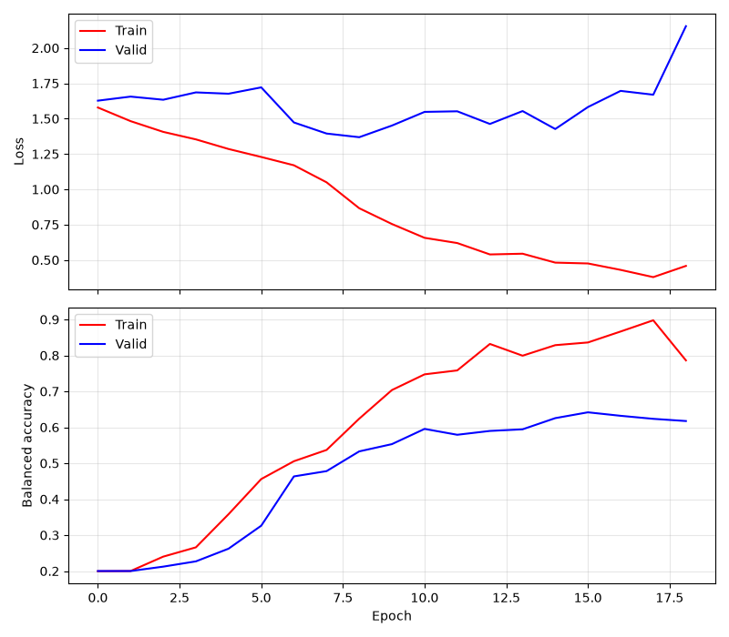
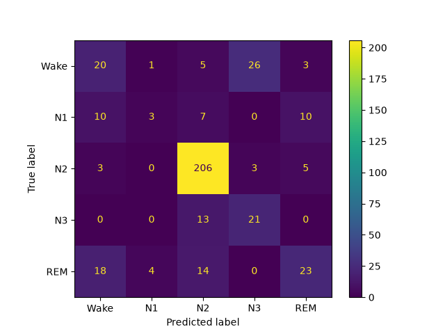
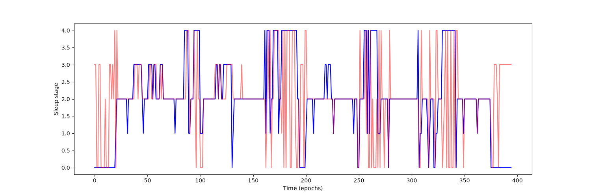

Note
Go to the end to download the full example code.
Sleep staging on the Sleep Physionet dataset using Chambon2018 network#
This tutorial shows how to train and test a sleep staging neural network with Braindecode. We adapt the time distributed approach of [1] to learn on sequences of EEG windows using the openly accessible Sleep Physionet dataset [2] [3].
# Authors: Hubert Banville <hubert.jbanville@gmail.com>
#
# License: BSD (3-clause)
Loading and preprocessing the dataset#
Loading#
First, we load the data using the
braindecode.datasets.sleep_physionet.SleepPhysionet class. We load
two recordings from two different individuals: we will use the first one to
train our network and the second one to evaluate performance (as in the MNE
sleep staging example).
from numbers import Integral
from braindecode.datasets import SleepPhysionet
subject_ids = [0, 1]
dataset = SleepPhysionet(subject_ids=subject_ids, recording_ids=[2], crop_wake_mins=30)
0%| | 0.00/51.6M [00:00<?, ?B/s]
0%| | 9.22k/51.6M [00:00<14:00, 61.4kB/s]
0%| | 25.6k/51.6M [00:00<07:55, 109kB/s]
0%| | 37.9k/51.6M [00:00<10:02, 85.6kB/s]
0%| | 66.6k/51.6M [00:00<07:52, 109kB/s]
0%| | 77.8k/51.6M [00:00<09:57, 86.2kB/s]
0%| | 91.1k/51.6M [00:01<10:34, 81.2kB/s]
0%| | 108k/51.6M [00:01<10:16, 83.5kB/s]
0%| | 132k/51.6M [00:01<09:47, 87.7kB/s]
0%| | 141k/51.6M [00:01<11:54, 72.1kB/s]
0%| | 157k/51.6M [00:02<14:20, 59.8kB/s]
0%|▏ | 173k/51.6M [00:02<13:34, 63.1kB/s]
0%|▏ | 189k/51.6M [00:02<11:54, 72.0kB/s]
0%|▏ | 206k/51.6M [00:02<11:20, 75.6kB/s]
0%|▏ | 230k/51.6M [00:02<09:05, 94.2kB/s]
0%|▏ | 241k/51.6M [00:03<10:27, 81.9kB/s]
0%|▏ | 255k/51.6M [00:03<10:14, 83.6kB/s]
1%|▏ | 271k/51.6M [00:03<11:00, 77.8kB/s]
1%|▏ | 296k/51.6M [00:03<09:25, 90.7kB/s]
1%|▏ | 306k/51.6M [00:03<10:52, 78.6kB/s]
1%|▏ | 321k/51.6M [00:04<12:44, 67.1kB/s]
1%|▏ | 337k/51.6M [00:04<12:21, 69.2kB/s]
1%|▎ | 353k/51.6M [00:04<10:36, 80.6kB/s]
1%|▎ | 370k/51.6M [00:04<10:35, 80.6kB/s]
1%|▎ | 402k/51.6M [00:04<09:18, 91.6kB/s]
1%|▎ | 419k/51.6M [00:05<09:09, 93.1kB/s]
1%|▎ | 435k/51.6M [00:05<08:25, 101kB/s]
1%|▎ | 460k/51.6M [00:05<07:05, 120kB/s]
1%|▎ | 473k/51.6M [00:05<06:59, 122kB/s]
1%|▎ | 486k/51.6M [00:05<07:04, 120kB/s]
1%|▍ | 501k/51.6M [00:05<07:06, 120kB/s]
1%|▍ | 517k/51.6M [00:05<06:37, 129kB/s]
1%|▍ | 534k/51.6M [00:06<07:19, 116kB/s]
1%|▍ | 558k/51.6M [00:06<07:23, 115kB/s]
1%|▍ | 570k/51.6M [00:06<09:46, 87.1kB/s]
1%|▍ | 583k/51.6M [00:06<10:32, 80.7kB/s]
1%|▍ | 599k/51.6M [00:06<11:47, 72.1kB/s]
1%|▍ | 615k/51.6M [00:07<10:08, 83.8kB/s]
1%|▍ | 632k/51.6M [00:07<10:10, 83.5kB/s]
1%|▍ | 656k/51.6M [00:07<07:43, 110kB/s]
1%|▌ | 670k/51.6M [00:07<08:10, 104kB/s]
1%|▌ | 682k/51.6M [00:07<09:11, 92.4kB/s]
1%|▌ | 697k/51.6M [00:07<09:35, 88.5kB/s]
1%|▌ | 722k/51.6M [00:08<08:08, 104kB/s]
1%|▌ | 733k/51.6M [00:08<08:09, 104kB/s]
1%|▌ | 746k/51.6M [00:08<08:12, 103kB/s]
1%|▌ | 763k/51.6M [00:08<08:29, 99.8kB/s]
2%|▌ | 779k/51.6M [00:08<08:07, 104kB/s]
2%|▌ | 796k/51.6M [00:08<08:59, 94.2kB/s]
2%|▌ | 820k/51.6M [00:09<08:21, 101kB/s]
2%|▌ | 831k/51.6M [00:09<11:25, 74.1kB/s]
2%|▌ | 845k/51.6M [00:09<12:37, 67.1kB/s]
2%|▋ | 861k/51.6M [00:09<11:51, 71.4kB/s]
2%|▋ | 886k/51.6M [00:10<09:31, 88.8kB/s]
2%|▋ | 896k/51.6M [00:10<11:38, 72.6kB/s]
2%|▋ | 910k/51.6M [00:10<12:46, 66.2kB/s]
2%|▋ | 927k/51.6M [00:10<10:55, 77.3kB/s]
2%|▋ | 943k/51.6M [00:10<09:37, 87.8kB/s]
2%|▋ | 959k/51.6M [00:11<09:49, 86.0kB/s]
2%|▋ | 984k/51.6M [00:11<09:30, 88.7kB/s]
2%|▋ | 994k/51.6M [00:11<10:04, 83.8kB/s]
2%|▋ | 1.01M/51.6M [00:11<10:05, 83.6kB/s]
2%|▋ | 1.03M/51.6M [00:11<09:58, 84.6kB/s]
2%|▋ | 1.04M/51.6M [00:11<10:20, 81.5kB/s]
2%|▊ | 1.06M/51.6M [00:12<12:07, 69.5kB/s]
2%|▊ | 1.08M/51.6M [00:12<09:11, 91.6kB/s]
2%|▊ | 1.09M/51.6M [00:12<09:17, 90.6kB/s]
2%|▊ | 1.11M/51.6M [00:12<08:37, 97.6kB/s]
2%|▊ | 1.12M/51.6M [00:12<08:16, 102kB/s]
2%|▊ | 1.15M/51.6M [00:12<06:36, 127kB/s]
2%|▊ | 1.16M/51.6M [00:13<07:42, 109kB/s]
2%|▊ | 1.17M/51.6M [00:13<09:00, 93.3kB/s]
2%|▊ | 1.19M/51.6M [00:13<10:01, 83.8kB/s]
2%|▊ | 1.21M/51.6M [00:13<08:44, 96.1kB/s]
2%|▉ | 1.22M/51.6M [00:13<07:59, 105kB/s]
2%|▉ | 1.25M/51.6M [00:13<06:24, 131kB/s]
2%|▉ | 1.26M/51.6M [00:14<06:34, 128kB/s]
2%|▉ | 1.27M/51.6M [00:14<07:14, 116kB/s]
2%|▉ | 1.29M/51.6M [00:14<07:15, 115kB/s]
3%|▉ | 1.31M/51.6M [00:14<06:26, 130kB/s]
3%|▉ | 1.33M/51.6M [00:14<08:28, 99.0kB/s]
3%|▉ | 1.34M/51.6M [00:14<09:09, 91.5kB/s]
3%|▉ | 1.35M/51.6M [00:15<09:49, 85.3kB/s]
3%|▉ | 1.39M/51.6M [00:15<09:29, 88.2kB/s]
3%|█ | 1.41M/51.6M [00:15<07:59, 105kB/s]
3%|█ | 1.42M/51.6M [00:15<10:28, 79.8kB/s]
3%|█ | 1.43M/51.6M [00:16<10:14, 81.7kB/s]
3%|█ | 1.45M/51.6M [00:16<09:28, 88.3kB/s]
3%|█ | 1.47M/51.6M [00:16<08:36, 97.1kB/s]
3%|█ | 1.48M/51.6M [00:16<07:45, 108kB/s]
3%|█ | 1.51M/51.6M [00:16<06:52, 122kB/s]
3%|█ | 1.52M/51.6M [00:16<08:06, 103kB/s]
3%|█▏ | 1.55M/51.6M [00:16<07:49, 107kB/s]
3%|█▏ | 1.57M/51.6M [00:17<07:35, 110kB/s]
3%|█▏ | 1.59M/51.6M [00:17<08:44, 95.4kB/s]
3%|█▏ | 1.60M/51.6M [00:17<08:36, 96.9kB/s]
3%|█▏ | 1.61M/51.6M [00:17<08:46, 95.0kB/s]
3%|█▏ | 1.65M/51.6M [00:17<07:24, 112kB/s]
3%|█▏ | 1.67M/51.6M [00:18<06:38, 125kB/s]
3%|█▏ | 1.69M/51.6M [00:18<07:45, 107kB/s]
3%|█▏ | 1.70M/51.6M [00:18<10:18, 80.8kB/s]
3%|█▏ | 1.71M/51.6M [00:18<10:13, 81.3kB/s]
3%|█▎ | 1.74M/51.6M [00:18<07:55, 105kB/s]
3%|█▎ | 1.75M/51.6M [00:18<07:43, 108kB/s]
3%|█▎ | 1.76M/51.6M [00:19<08:20, 99.6kB/s]
3%|█▎ | 1.78M/51.6M [00:19<07:20, 113kB/s]
3%|█▎ | 1.80M/51.6M [00:19<08:46, 94.6kB/s]
4%|█▎ | 1.81M/51.6M [00:19<09:34, 86.6kB/s]
4%|█▎ | 1.84M/51.6M [00:19<07:54, 105kB/s]
4%|█▎ | 1.85M/51.6M [00:19<07:42, 108kB/s]
4%|█▎ | 1.86M/51.6M [00:20<07:51, 106kB/s]
4%|█▍ | 1.89M/51.6M [00:20<06:28, 128kB/s]
4%|█▍ | 1.91M/51.6M [00:20<06:52, 121kB/s]
4%|█▍ | 1.93M/51.6M [00:20<06:05, 136kB/s]
4%|█▍ | 1.95M/51.6M [00:20<07:12, 115kB/s]
4%|█▍ | 1.96M/51.6M [00:20<08:44, 94.6kB/s]
4%|█▍ | 1.98M/51.6M [00:21<09:15, 89.4kB/s]
4%|█▍ | 2.00M/51.6M [00:21<08:47, 94.1kB/s]
4%|█▍ | 2.01M/51.6M [00:21<08:56, 92.5kB/s]
4%|█▌ | 2.04M/51.6M [00:21<07:11, 115kB/s]
4%|█▌ | 2.06M/51.6M [00:21<06:57, 119kB/s]
4%|█▌ | 2.07M/51.6M [00:21<06:46, 122kB/s]
4%|█▌ | 2.10M/51.6M [00:22<07:11, 115kB/s]
4%|█▌ | 2.11M/51.6M [00:22<09:31, 86.6kB/s]
4%|█▌ | 2.12M/51.6M [00:22<10:04, 81.8kB/s]
4%|█▌ | 2.14M/51.6M [00:22<09:41, 85.1kB/s]
4%|█▌ | 2.17M/51.6M [00:23<07:51, 105kB/s]
4%|█▌ | 2.20M/51.6M [00:23<07:39, 108kB/s]
4%|█▌ | 2.21M/51.6M [00:23<08:19, 98.8kB/s]
4%|█▌ | 2.22M/51.6M [00:23<09:04, 90.8kB/s]
4%|█▌ | 2.24M/51.6M [00:23<09:00, 91.4kB/s]
4%|█▋ | 2.26M/51.6M [00:23<08:04, 102kB/s]
4%|█▋ | 2.27M/51.6M [00:24<09:57, 82.6kB/s]
4%|█▋ | 2.29M/51.6M [00:24<09:10, 89.7kB/s]
4%|█▋ | 2.30M/51.6M [00:24<08:33, 96.1kB/s]
4%|█▋ | 2.32M/51.6M [00:24<07:59, 103kB/s]
5%|█▋ | 2.34M/51.6M [00:24<07:58, 103kB/s]
5%|█▋ | 2.36M/51.6M [00:24<07:28, 110kB/s]
5%|█▋ | 2.37M/51.6M [00:25<08:55, 91.9kB/s]
5%|█▋ | 2.38M/51.6M [00:25<09:24, 87.2kB/s]
5%|█▋ | 2.40M/51.6M [00:25<09:30, 86.2kB/s]
5%|█▊ | 2.43M/51.6M [00:25<07:36, 108kB/s]
5%|█▊ | 2.44M/51.6M [00:25<07:31, 109kB/s]
5%|█▊ | 2.45M/51.6M [00:25<08:04, 102kB/s]
5%|█▊ | 2.47M/51.6M [00:26<07:06, 115kB/s]
5%|█▊ | 2.48M/51.6M [00:26<06:55, 118kB/s]
5%|█▊ | 2.50M/51.6M [00:26<07:03, 116kB/s]
5%|█▊ | 2.52M/51.6M [00:26<07:06, 115kB/s]
5%|█▊ | 2.54M/51.6M [00:26<08:18, 98.5kB/s]
5%|█▊ | 2.55M/51.6M [00:26<09:00, 90.9kB/s]
5%|█▊ | 2.57M/51.6M [00:27<09:05, 89.9kB/s]
5%|█▊ | 2.58M/51.6M [00:27<08:41, 94.0kB/s]
5%|█▉ | 2.62M/51.6M [00:27<06:17, 130kB/s]
5%|█▉ | 2.65M/51.6M [00:27<06:18, 129kB/s]
5%|█▉ | 2.69M/51.6M [00:27<05:32, 147kB/s]
5%|█▉ | 2.71M/51.6M [00:28<06:04, 134kB/s]
5%|██ | 2.75M/51.6M [00:28<05:38, 144kB/s]
5%|██ | 2.76M/51.6M [00:28<06:04, 134kB/s]
5%|██ | 2.79M/51.6M [00:28<05:16, 154kB/s]
5%|██ | 2.80M/51.6M [00:28<05:33, 146kB/s]
5%|██ | 2.82M/51.6M [00:28<07:29, 109kB/s]
5%|██ | 2.83M/51.6M [00:29<07:50, 104kB/s]
6%|██ | 2.85M/51.6M [00:29<07:32, 108kB/s]
6%|██ | 2.86M/51.6M [00:29<08:35, 94.5kB/s]
6%|██ | 2.88M/51.6M [00:29<11:07, 73.0kB/s]
6%|██ | 2.89M/51.6M [00:30<12:48, 63.4kB/s]
6%|██ | 2.93M/51.6M [00:30<09:23, 86.4kB/s]
6%|██ | 2.95M/51.6M [00:30<11:37, 69.8kB/s]
6%|██ | 2.96M/51.6M [00:31<16:29, 49.2kB/s]
6%|██▏ | 2.97M/51.6M [00:31<14:43, 55.1kB/s]
6%|██▏ | 2.99M/51.6M [00:31<12:20, 65.6kB/s]
6%|██▏ | 3.01M/51.6M [00:31<10:27, 77.5kB/s]
6%|██▏ | 3.02M/51.6M [00:31<09:20, 86.7kB/s]
6%|██▎ | 3.06M/51.6M [00:32<07:14, 112kB/s]
6%|██▎ | 3.07M/51.6M [00:32<08:01, 101kB/s]
6%|██▏ | 3.09M/51.6M [00:32<10:12, 79.2kB/s]
6%|██▏ | 3.11M/51.6M [00:32<10:09, 79.6kB/s]
6%|██▏ | 3.12M/51.6M [00:33<15:30, 52.1kB/s]
6%|██▏ | 3.14M/51.6M [00:33<13:03, 61.9kB/s]
6%|██▎ | 3.17M/51.6M [00:33<09:06, 88.6kB/s]
6%|██▎ | 3.21M/51.6M [00:33<06:41, 120kB/s]
6%|██▍ | 3.24M/51.6M [00:34<07:08, 113kB/s]
6%|██▍ | 3.25M/51.6M [00:34<07:02, 115kB/s]
6%|██▍ | 3.29M/51.6M [00:34<06:13, 129kB/s]
6%|██▍ | 3.30M/51.6M [00:34<06:55, 116kB/s]
6%|██▍ | 3.32M/51.6M [00:34<07:05, 114kB/s]
6%|██▍ | 3.34M/51.6M [00:34<06:40, 120kB/s]
6%|██▍ | 3.35M/51.6M [00:35<06:26, 125kB/s]
7%|██▍ | 3.38M/51.6M [00:35<05:25, 148kB/s]
7%|██▍ | 3.39M/51.6M [00:35<05:17, 152kB/s]
7%|██▌ | 3.42M/51.6M [00:35<05:26, 148kB/s]
7%|██▌ | 3.45M/51.6M [00:35<05:09, 156kB/s]
7%|██▌ | 3.48M/51.6M [00:35<04:58, 161kB/s]
7%|██▌ | 3.50M/51.6M [00:35<05:01, 159kB/s]
7%|██▌ | 3.54M/51.6M [00:36<04:20, 184kB/s]
7%|██▌ | 3.56M/51.6M [00:36<04:22, 183kB/s]
7%|██▋ | 3.58M/51.6M [00:36<04:38, 172kB/s]
7%|██▋ | 3.60M/51.6M [00:36<05:05, 157kB/s]
7%|██▋ | 3.64M/51.6M [00:36<04:07, 194kB/s]
7%|██▋ | 3.66M/51.6M [00:36<04:34, 175kB/s]
7%|██▋ | 3.70M/51.6M [00:37<04:15, 187kB/s]
7%|██▋ | 3.73M/51.6M [00:37<04:37, 173kB/s]
7%|██▊ | 3.76M/51.6M [00:37<04:39, 171kB/s]
7%|██▊ | 3.80M/51.6M [00:37<04:13, 188kB/s]
7%|██▊ | 3.83M/51.6M [00:37<04:40, 170kB/s]
7%|██▊ | 3.86M/51.6M [00:37<04:34, 174kB/s]
8%|██▊ | 3.88M/51.6M [00:38<04:34, 174kB/s]
8%|██▉ | 3.91M/51.6M [00:38<04:52, 163kB/s]
8%|██▉ | 3.93M/51.6M [00:38<04:58, 160kB/s]
8%|██▉ | 3.94M/51.6M [00:38<05:05, 156kB/s]
8%|██▉ | 3.97M/51.6M [00:38<04:51, 164kB/s]
8%|██▉ | 3.99M/51.6M [00:38<04:54, 162kB/s]
8%|██▉ | 4.02M/51.6M [00:38<04:44, 167kB/s]
8%|██▉ | 4.04M/51.6M [00:39<04:58, 160kB/s]
8%|██▉ | 4.07M/51.6M [00:39<04:30, 176kB/s]
8%|███ | 4.11M/51.6M [00:39<04:38, 170kB/s]
8%|███ | 4.14M/51.6M [00:39<04:30, 175kB/s]
8%|███ | 4.17M/51.6M [00:39<04:36, 171kB/s]
8%|███ | 4.20M/51.6M [00:39<04:26, 178kB/s]
8%|███ | 4.24M/51.6M [00:40<04:24, 179kB/s]
8%|███▏ | 4.27M/51.6M [00:40<04:22, 180kB/s]
8%|███▏ | 4.30M/51.6M [00:40<04:30, 175kB/s]
8%|███▏ | 4.33M/51.6M [00:40<04:22, 180kB/s]
8%|███▏ | 4.37M/51.6M [00:40<04:33, 173kB/s]
9%|███▏ | 4.40M/51.6M [00:41<04:27, 177kB/s]
9%|███▎ | 4.43M/51.6M [00:41<04:21, 180kB/s]
9%|███▎ | 4.47M/51.6M [00:41<04:26, 177kB/s]
9%|███▎ | 4.50M/51.6M [00:41<04:23, 179kB/s]
9%|███▎ | 4.53M/51.6M [00:41<04:26, 177kB/s]
9%|███▎ | 4.56M/51.6M [00:42<04:28, 175kB/s]
9%|███▍ | 4.60M/51.6M [00:42<05:16, 149kB/s]
9%|███▍ | 4.63M/51.6M [00:42<04:49, 162kB/s]
9%|███▍ | 4.66M/51.6M [00:42<04:56, 158kB/s]
9%|███▍ | 4.68M/51.6M [00:42<04:53, 160kB/s]
9%|███▍ | 4.70M/51.6M [00:42<05:15, 149kB/s]
9%|███▍ | 4.71M/51.6M [00:43<05:45, 136kB/s]
9%|███▍ | 4.73M/51.6M [00:43<07:03, 111kB/s]
9%|███▍ | 4.75M/51.6M [00:43<06:40, 117kB/s]
9%|███▌ | 4.76M/51.6M [00:43<06:51, 114kB/s]
9%|███▌ | 4.79M/51.6M [00:43<06:26, 121kB/s]
9%|███▌ | 4.82M/51.6M [00:43<05:25, 144kB/s]
9%|███▌ | 4.83M/51.6M [00:44<05:17, 148kB/s]
9%|███▌ | 4.85M/51.6M [00:44<05:55, 132kB/s]
9%|███▌ | 4.87M/51.6M [00:44<06:22, 122kB/s]
9%|███▌ | 4.88M/51.6M [00:44<07:35, 103kB/s]
9%|███▌ | 4.89M/51.6M [00:44<08:38, 90.1kB/s]
10%|███▌ | 4.92M/51.6M [00:45<08:50, 88.0kB/s]
10%|███▌ | 4.93M/51.6M [00:45<10:31, 74.0kB/s]
10%|███▌ | 4.94M/51.6M [00:45<10:26, 74.6kB/s]
10%|███▌ | 4.96M/51.6M [00:45<10:16, 75.7kB/s]
10%|███▌ | 4.97M/51.6M [00:45<09:24, 82.7kB/s]
10%|███▌ | 4.99M/51.6M [00:45<08:06, 95.8kB/s]
10%|███▋ | 5.02M/51.6M [00:46<06:52, 113kB/s]
10%|███▋ | 5.06M/51.6M [00:46<05:57, 130kB/s]
10%|███▋ | 5.08M/51.6M [00:46<05:26, 142kB/s]
10%|███▊ | 5.10M/51.6M [00:46<05:14, 148kB/s]
10%|███▊ | 5.14M/51.6M [00:46<05:12, 149kB/s]
10%|███▊ | 5.18M/51.6M [00:47<04:54, 158kB/s]
10%|███▊ | 5.19M/51.6M [00:47<05:17, 146kB/s]
10%|███▊ | 5.21M/51.6M [00:47<05:59, 129kB/s]
10%|███▊ | 5.22M/51.6M [00:47<07:24, 104kB/s]
10%|███▊ | 5.24M/51.6M [00:47<06:51, 113kB/s]
10%|███▊ | 5.26M/51.6M [00:47<06:56, 111kB/s]
10%|███▉ | 5.28M/51.6M [00:48<06:20, 122kB/s]
10%|███▉ | 5.32M/51.6M [00:48<05:27, 142kB/s]
10%|███▉ | 5.35M/51.6M [00:48<05:04, 152kB/s]
10%|███▉ | 5.38M/51.6M [00:48<04:55, 157kB/s]
10%|███▉ | 5.42M/51.6M [00:48<04:37, 166kB/s]
11%|████ | 5.44M/51.6M [00:48<04:15, 181kB/s]
11%|████ | 5.46M/51.6M [00:49<04:11, 183kB/s]
11%|████ | 5.48M/51.6M [00:49<05:04, 151kB/s]
11%|████ | 5.51M/51.6M [00:49<04:43, 162kB/s]
11%|████ | 5.52M/51.6M [00:49<05:03, 152kB/s]
11%|████ | 5.54M/51.6M [00:49<07:38, 100kB/s]
11%|███▉ | 5.55M/51.6M [00:50<09:00, 85.2kB/s]
11%|███▉ | 5.56M/51.6M [00:50<09:31, 80.6kB/s]
11%|███▉ | 5.58M/51.6M [00:50<11:21, 67.5kB/s]
11%|████ | 5.60M/51.6M [00:50<10:38, 72.0kB/s]
11%|████ | 5.61M/51.6M [00:51<16:12, 47.3kB/s]
11%|████ | 5.63M/51.6M [00:51<15:32, 49.3kB/s]
11%|████ | 5.65M/51.6M [00:52<17:36, 43.5kB/s]
11%|████ | 5.67M/51.6M [00:52<12:34, 60.9kB/s]
11%|████ | 5.68M/51.6M [00:52<12:25, 61.6kB/s]
11%|████ | 5.71M/51.6M [00:52<09:03, 84.5kB/s]
11%|████▏ | 5.74M/51.6M [00:52<06:57, 110kB/s]
11%|████▎ | 5.78M/51.6M [00:53<05:51, 130kB/s]
11%|████▎ | 5.79M/51.6M [00:53<05:59, 128kB/s]
11%|████▎ | 5.83M/51.6M [00:53<04:48, 159kB/s]
11%|████▎ | 5.87M/51.6M [00:53<04:10, 182kB/s]
11%|████▎ | 5.89M/51.6M [00:53<04:09, 184kB/s]
11%|████▎ | 5.91M/51.6M [00:53<04:48, 159kB/s]
11%|████▎ | 5.93M/51.6M [00:53<04:33, 167kB/s]
12%|████▍ | 5.96M/51.6M [00:53<04:22, 174kB/s]
12%|████▍ | 5.99M/51.6M [00:54<04:26, 171kB/s]
12%|████▍ | 6.03M/51.6M [00:54<03:58, 192kB/s]
12%|████▍ | 6.05M/51.6M [00:54<04:19, 176kB/s]
12%|████▍ | 6.10M/51.6M [00:54<03:56, 193kB/s]
12%|████▌ | 6.12M/51.6M [00:54<04:14, 179kB/s]
12%|████▌ | 6.15M/51.6M [00:55<04:18, 176kB/s]
12%|████▌ | 6.19M/51.6M [00:55<03:57, 191kB/s]
12%|████▌ | 6.21M/51.6M [00:55<04:10, 182kB/s]
12%|████▌ | 6.24M/51.6M [00:55<04:21, 174kB/s]
12%|████▌ | 6.27M/51.6M [00:55<04:13, 179kB/s]
12%|████▋ | 6.29M/51.6M [00:55<03:58, 190kB/s]
12%|████▋ | 6.32M/51.6M [00:55<04:26, 170kB/s]
12%|████▋ | 6.34M/51.6M [00:56<04:40, 161kB/s]
12%|████▋ | 6.37M/51.6M [00:56<04:35, 164kB/s]
12%|████▋ | 6.38M/51.6M [00:56<04:34, 165kB/s]
12%|████▋ | 6.40M/51.6M [00:56<04:35, 164kB/s]
12%|████▋ | 6.42M/51.6M [00:56<04:34, 165kB/s]
13%|████▊ | 6.46M/51.6M [00:56<04:20, 173kB/s]
13%|████▊ | 6.47M/51.6M [00:56<04:35, 164kB/s]
13%|████▊ | 6.50M/51.6M [00:57<04:42, 160kB/s]
13%|████▊ | 6.51M/51.6M [00:57<04:52, 154kB/s]
13%|████▊ | 6.53M/51.6M [00:57<04:54, 153kB/s]
13%|████▊ | 6.55M/51.6M [00:57<04:39, 161kB/s]
13%|████▊ | 6.58M/51.6M [00:57<04:56, 152kB/s]
13%|████▊ | 6.62M/51.6M [00:57<04:17, 175kB/s]
13%|████▉ | 6.64M/51.6M [00:57<04:18, 174kB/s]
13%|████▉ | 6.65M/51.6M [00:58<04:29, 167kB/s]
13%|████▉ | 6.67M/51.6M [00:58<04:31, 165kB/s]
13%|████▉ | 6.69M/51.6M [00:58<05:16, 142kB/s]
13%|████▉ | 6.72M/51.6M [00:58<04:40, 160kB/s]
13%|████▉ | 6.73M/51.6M [00:58<05:07, 146kB/s]
13%|████▉ | 6.76M/51.6M [00:58<05:05, 147kB/s]
13%|████▉ | 6.78M/51.6M [00:58<04:28, 167kB/s]
13%|█████ | 6.81M/51.6M [00:59<04:57, 151kB/s]
13%|█████ | 6.84M/51.6M [00:59<04:58, 150kB/s]
13%|█████ | 6.86M/51.6M [00:59<05:00, 149kB/s]
13%|█████ | 6.89M/51.6M [00:59<05:08, 145kB/s]
13%|█████ | 6.92M/51.6M [00:59<04:39, 160kB/s]
13%|█████ | 6.94M/51.6M [00:59<05:01, 148kB/s]
14%|█████▏ | 6.98M/51.6M [01:00<04:14, 176kB/s]
14%|█████▏ | 7.00M/51.6M [01:00<04:20, 171kB/s]
14%|█████▏ | 7.02M/51.6M [01:00<04:48, 155kB/s]
14%|█████▏ | 7.05M/51.6M [01:00<04:25, 168kB/s]
14%|█████▏ | 7.07M/51.6M [01:00<04:58, 149kB/s]
14%|█████▏ | 7.10M/51.6M [01:00<04:51, 153kB/s]
14%|█████▏ | 7.12M/51.6M [01:01<05:03, 147kB/s]
14%|█████▎ | 7.15M/51.6M [01:01<04:46, 155kB/s]
14%|█████▎ | 7.17M/51.6M [01:01<05:02, 147kB/s]
14%|█████▎ | 7.21M/51.6M [01:01<04:21, 170kB/s]
14%|█████▎ | 7.23M/51.6M [01:01<04:28, 165kB/s]
14%|█████▎ | 7.24M/51.6M [01:01<04:44, 156kB/s]
14%|█████▎ | 7.27M/51.6M [01:02<04:59, 148kB/s]
14%|█████▎ | 7.28M/51.6M [01:02<05:07, 144kB/s]
14%|█████▍ | 7.32M/51.6M [01:02<04:23, 168kB/s]
14%|█████▍ | 7.33M/51.6M [01:02<04:47, 154kB/s]
14%|█████▍ | 7.37M/51.6M [01:02<04:23, 168kB/s]
14%|█████▍ | 7.38M/51.6M [01:02<04:26, 166kB/s]
14%|█████▍ | 7.41M/51.6M [01:02<04:33, 162kB/s]
14%|█████▍ | 7.43M/51.6M [01:03<04:39, 158kB/s]
14%|█████▌ | 7.47M/51.6M [01:03<04:21, 169kB/s]
15%|█████▌ | 7.50M/51.6M [01:03<04:49, 152kB/s]
15%|█████▌ | 7.53M/51.6M [01:03<04:44, 155kB/s]
15%|█████▌ | 7.57M/51.6M [01:03<04:11, 175kB/s]
15%|█████▌ | 7.60M/51.6M [01:04<04:40, 157kB/s]
15%|█████▌ | 7.64M/51.6M [01:04<04:04, 180kB/s]
15%|█████▋ | 7.65M/51.6M [01:04<04:10, 176kB/s]
15%|█████▋ | 7.68M/51.6M [01:04<04:35, 160kB/s]
15%|█████▋ | 7.69M/51.6M [01:04<04:35, 159kB/s]
15%|█████▋ | 7.73M/51.6M [01:04<04:06, 178kB/s]
15%|█████▋ | 7.76M/51.6M [01:05<04:25, 165kB/s]
15%|█████▋ | 7.79M/51.6M [01:05<04:26, 165kB/s]
15%|█████▊ | 7.83M/51.6M [01:05<04:05, 179kB/s]
15%|█████▊ | 7.86M/51.6M [01:05<04:37, 158kB/s]
15%|█████▊ | 7.90M/51.6M [01:05<04:04, 179kB/s]
15%|█████▊ | 7.92M/51.6M [01:05<04:22, 166kB/s]
15%|█████▊ | 7.94M/51.6M [01:06<04:21, 167kB/s]
15%|█████▊ | 7.96M/51.6M [01:06<04:19, 169kB/s]
15%|█████▉ | 8.00M/51.6M [01:06<04:04, 179kB/s]
16%|█████▉ | 8.02M/51.6M [01:06<04:25, 164kB/s]
16%|█████▉ | 8.06M/51.6M [01:06<04:01, 180kB/s]
16%|█████▉ | 8.09M/51.6M [01:06<04:24, 165kB/s]
16%|█████▉ | 8.12M/51.6M [01:07<04:22, 166kB/s]
16%|██████ | 8.16M/51.6M [01:07<04:00, 181kB/s]
16%|██████ | 8.18M/51.6M [01:07<04:26, 163kB/s]
16%|██████ | 8.22M/51.6M [01:07<04:25, 164kB/s]
16%|██████ | 8.26M/51.6M [01:07<04:15, 170kB/s]
16%|██████ | 8.28M/51.6M [01:08<04:18, 167kB/s]
16%|██████▏ | 8.32M/51.6M [01:08<03:53, 186kB/s]
16%|██████▏ | 8.34M/51.6M [01:08<03:55, 184kB/s]
16%|██████▏ | 8.37M/51.6M [01:08<04:26, 162kB/s]
16%|██████▏ | 8.40M/51.6M [01:08<04:38, 155kB/s]
16%|██████▏ | 8.43M/51.6M [01:08<04:09, 173kB/s]
16%|██████▏ | 8.46M/51.6M [01:09<04:17, 168kB/s]
16%|██████▎ | 8.50M/51.6M [01:09<04:05, 176kB/s]
17%|██████▎ | 8.53M/51.6M [01:09<04:11, 172kB/s]
17%|██████▎ | 8.56M/51.6M [01:09<04:04, 176kB/s]
17%|██████▎ | 8.59M/51.6M [01:09<03:49, 187kB/s]
17%|██████▎ | 8.61M/51.6M [01:10<04:19, 166kB/s]
17%|██████▎ | 8.64M/51.6M [01:10<04:19, 166kB/s]
17%|██████▍ | 8.68M/51.6M [01:10<03:38, 197kB/s]
17%|██████▍ | 8.70M/51.6M [01:10<04:07, 173kB/s]
17%|██████▍ | 8.72M/51.6M [01:10<04:05, 175kB/s]
17%|██████▍ | 8.75M/51.6M [01:10<04:09, 172kB/s]
17%|██████▍ | 8.77M/51.6M [01:10<04:09, 172kB/s]
17%|██████▍ | 8.79M/51.6M [01:11<04:33, 157kB/s]
17%|██████▍ | 8.82M/51.6M [01:11<04:26, 161kB/s]
17%|██████▌ | 8.86M/51.6M [01:11<04:19, 165kB/s]
17%|██████▌ | 8.87M/51.6M [01:11<04:20, 164kB/s]
17%|██████▌ | 8.91M/51.6M [01:11<04:20, 164kB/s]
17%|██████▌ | 8.95M/51.6M [01:11<03:55, 181kB/s]
17%|██████▌ | 8.97M/51.6M [01:12<04:16, 166kB/s]
17%|██████▋ | 9.01M/51.6M [01:12<03:57, 180kB/s]
17%|██████▋ | 9.03M/51.6M [01:12<03:57, 179kB/s]
18%|██████▋ | 9.05M/51.6M [01:12<04:27, 159kB/s]
18%|██████▋ | 9.07M/51.6M [01:12<04:26, 160kB/s]
18%|██████▋ | 9.11M/51.6M [01:12<03:51, 184kB/s]
18%|██████▋ | 9.14M/51.6M [01:13<04:18, 164kB/s]
18%|██████▋ | 9.15M/51.6M [01:13<04:15, 166kB/s]
18%|██████▊ | 9.18M/51.6M [01:13<04:16, 166kB/s]
18%|██████▊ | 9.22M/51.6M [01:13<04:06, 172kB/s]
18%|██████▊ | 9.23M/51.6M [01:13<04:08, 171kB/s]
18%|██████▊ | 9.27M/51.6M [01:13<03:47, 187kB/s]
18%|██████▊ | 9.30M/51.6M [01:14<04:41, 150kB/s]
18%|██████▊ | 9.32M/51.6M [01:14<04:37, 153kB/s]
18%|██████▊ | 9.33M/51.6M [01:14<04:41, 150kB/s]
18%|██████▉ | 9.37M/51.6M [01:14<04:06, 171kB/s]
18%|██████▉ | 9.39M/51.6M [01:14<04:08, 170kB/s]
18%|██████▉ | 9.41M/51.6M [01:14<04:42, 150kB/s]
18%|██████▉ | 9.45M/51.6M [01:15<04:29, 156kB/s]
18%|██████▉ | 9.48M/51.6M [01:15<04:26, 158kB/s]
18%|███████ | 9.51M/51.6M [01:15<04:17, 164kB/s]
18%|███████ | 9.54M/51.6M [01:15<04:14, 165kB/s]
19%|███████ | 9.58M/51.6M [01:15<04:14, 165kB/s]
19%|███████ | 9.61M/51.6M [01:15<04:10, 168kB/s]
19%|███████ | 9.63M/51.6M [01:16<04:39, 150kB/s]
19%|███████ | 9.66M/51.6M [01:16<04:01, 173kB/s]
19%|███████ | 9.68M/51.6M [01:16<03:59, 175kB/s]
19%|███████▏ | 9.70M/51.6M [01:16<03:53, 180kB/s]
19%|███████▏ | 9.72M/51.6M [01:16<03:56, 177kB/s]
19%|███████▏ | 9.74M/51.6M [01:16<04:15, 164kB/s]
19%|███████▏ | 9.76M/51.6M [01:16<04:49, 144kB/s]
19%|███████▏ | 9.77M/51.6M [01:17<05:35, 125kB/s]
19%|███████▏ | 9.81M/51.6M [01:17<04:59, 139kB/s]
19%|███████▏ | 9.82M/51.6M [01:17<04:52, 143kB/s]
19%|███████▏ | 9.84M/51.6M [01:17<04:49, 144kB/s]
19%|███████▎ | 9.86M/51.6M [01:17<04:27, 156kB/s]
19%|███████▎ | 9.89M/51.6M [01:17<04:28, 155kB/s]
19%|███████▎ | 9.91M/51.6M [01:17<04:50, 144kB/s]
19%|███████▎ | 9.94M/51.6M [01:18<04:16, 162kB/s]
19%|███████▎ | 9.97M/51.6M [01:18<04:05, 170kB/s]
19%|███████▎ | 10.0M/51.6M [01:18<04:02, 172kB/s]
19%|███████▍ | 10.0M/51.6M [01:18<03:44, 185kB/s]
19%|███████▍ | 10.0M/51.6M [01:18<03:50, 180kB/s]
20%|███████▍ | 10.1M/51.6M [01:18<04:22, 158kB/s]
20%|███████▍ | 10.1M/51.6M [01:19<04:45, 145kB/s]
20%|███████▍ | 10.1M/51.6M [01:19<03:45, 184kB/s]
20%|███████▍ | 10.2M/51.6M [01:19<04:24, 157kB/s]
20%|███████▍ | 10.2M/51.6M [01:19<04:19, 160kB/s]
20%|███████▍ | 10.2M/51.6M [01:19<05:43, 121kB/s]
20%|███████▎ | 10.2M/51.6M [01:20<10:05, 68.4kB/s]
20%|███████▎ | 10.2M/51.6M [01:20<08:24, 82.1kB/s]
20%|███████▎ | 10.2M/51.6M [01:20<09:42, 71.0kB/s]
20%|███████▎ | 10.2M/51.6M [01:20<09:13, 74.8kB/s]
20%|███████▎ | 10.3M/51.6M [01:21<09:08, 75.4kB/s]
20%|███████▍ | 10.3M/51.6M [01:21<07:17, 94.5kB/s]
20%|███████▍ | 10.3M/51.6M [01:21<07:24, 92.9kB/s]
20%|███████▍ | 10.3M/51.6M [01:21<07:28, 92.0kB/s]
20%|███████▍ | 10.3M/51.6M [01:21<07:17, 94.4kB/s]
20%|███████▌ | 10.3M/51.6M [01:21<06:47, 101kB/s]
20%|███████▍ | 10.4M/51.6M [01:21<07:02, 97.7kB/s]
20%|███████▋ | 10.4M/51.6M [01:22<05:59, 115kB/s]
20%|███████▋ | 10.4M/51.6M [01:22<06:33, 105kB/s]
20%|███████▍ | 10.4M/51.6M [01:22<07:08, 96.2kB/s]
20%|███████▍ | 10.4M/51.6M [01:22<07:35, 90.4kB/s]
20%|███████▋ | 10.5M/51.6M [01:22<06:31, 105kB/s]
20%|███████▌ | 10.5M/51.6M [01:23<08:23, 81.7kB/s]
20%|███████▌ | 10.5M/51.6M [01:23<07:46, 88.2kB/s]
20%|███████▌ | 10.5M/51.6M [01:23<07:32, 90.8kB/s]
20%|███████▌ | 10.5M/51.6M [01:23<06:58, 98.1kB/s]
20%|███████▌ | 10.5M/51.6M [01:23<07:15, 94.4kB/s]
20%|███████▊ | 10.6M/51.6M [01:23<06:20, 108kB/s]
20%|███████▌ | 10.6M/51.6M [01:24<07:19, 93.5kB/s]
20%|███████▌ | 10.6M/51.6M [01:24<07:11, 95.0kB/s]
21%|███████▊ | 10.6M/51.6M [01:24<06:36, 104kB/s]
21%|███████▊ | 10.6M/51.6M [01:24<06:17, 109kB/s]
21%|███████▊ | 10.6M/51.6M [01:24<05:49, 117kB/s]
21%|███████▊ | 10.7M/51.6M [01:24<05:05, 134kB/s]
21%|███████▊ | 10.7M/51.6M [01:24<04:37, 147kB/s]
21%|███████▉ | 10.7M/51.6M [01:25<04:21, 157kB/s]
21%|███████▉ | 10.7M/51.6M [01:25<04:19, 158kB/s]
21%|███████▉ | 10.8M/51.6M [01:25<04:25, 154kB/s]
21%|███████▉ | 10.8M/51.6M [01:25<03:46, 180kB/s]
21%|███████▉ | 10.8M/51.6M [01:25<03:52, 176kB/s]
21%|███████▉ | 10.9M/51.6M [01:25<04:25, 154kB/s]
21%|████████ | 10.9M/51.6M [01:26<04:17, 158kB/s]
21%|████████ | 10.9M/51.6M [01:26<04:23, 154kB/s]
21%|████████ | 11.0M/51.6M [01:26<04:05, 166kB/s]
21%|████████ | 11.0M/51.6M [01:26<04:05, 166kB/s]
21%|████████ | 11.0M/51.6M [01:26<04:02, 167kB/s]
21%|████████▏ | 11.1M/51.6M [01:27<04:24, 154kB/s]
21%|████████▏ | 11.1M/51.6M [01:27<04:19, 156kB/s]
21%|████████▏ | 11.1M/51.6M [01:27<04:25, 153kB/s]
22%|████████▏ | 11.1M/51.6M [01:27<04:57, 136kB/s]
22%|████████▏ | 11.1M/51.6M [01:27<05:59, 113kB/s]
22%|████████▏ | 11.1M/51.6M [01:28<06:01, 112kB/s]
22%|████████▏ | 11.2M/51.6M [01:28<06:35, 102kB/s]
22%|████████▏ | 11.2M/51.6M [01:28<06:26, 105kB/s]
22%|████████▏ | 11.2M/51.6M [01:28<05:47, 116kB/s]
22%|████████▎ | 11.2M/51.6M [01:28<04:54, 137kB/s]
22%|████████▎ | 11.2M/51.6M [01:28<04:17, 157kB/s]
22%|████████▎ | 11.3M/51.6M [01:28<04:35, 147kB/s]
22%|████████▎ | 11.3M/51.6M [01:28<04:32, 148kB/s]
22%|████████▎ | 11.3M/51.6M [01:29<04:44, 142kB/s]
22%|████████▎ | 11.3M/51.6M [01:29<04:15, 158kB/s]
22%|████████▎ | 11.4M/51.6M [01:29<04:31, 148kB/s]
22%|████████▍ | 11.4M/51.6M [01:29<03:42, 180kB/s]
22%|████████▍ | 11.4M/51.6M [01:29<04:02, 166kB/s]
22%|████████▍ | 11.5M/51.6M [01:30<03:56, 170kB/s]
22%|████████▍ | 11.5M/51.6M [01:30<03:40, 182kB/s]
22%|████████▍ | 11.5M/51.6M [01:30<03:53, 172kB/s]
22%|████████▍ | 11.5M/51.6M [01:30<04:05, 163kB/s]
22%|████████▌ | 11.6M/51.6M [01:30<03:44, 178kB/s]
22%|████████▌ | 11.6M/51.6M [01:30<04:09, 160kB/s]
23%|████████▌ | 11.6M/51.6M [01:31<04:07, 161kB/s]
23%|████████▌ | 11.6M/51.6M [01:31<04:22, 152kB/s]
23%|████████▌ | 11.7M/51.6M [01:31<04:45, 140kB/s]
23%|████████▌ | 11.7M/51.6M [01:31<04:56, 135kB/s]
23%|████████▋ | 11.7M/51.6M [01:31<04:46, 139kB/s]
23%|████████▋ | 11.7M/51.6M [01:31<04:45, 140kB/s]
23%|████████▋ | 11.8M/51.6M [01:32<05:12, 128kB/s]
23%|████████▋ | 11.8M/51.6M [01:32<05:38, 118kB/s]
23%|████████▋ | 11.8M/51.6M [01:32<05:55, 112kB/s]
23%|████████▋ | 11.8M/51.6M [01:32<05:53, 113kB/s]
23%|████████▋ | 11.8M/51.6M [01:32<05:01, 132kB/s]
23%|████████▋ | 11.8M/51.6M [01:32<05:07, 130kB/s]
23%|████████▋ | 11.9M/51.6M [01:32<06:04, 109kB/s]
23%|████████▌ | 11.9M/51.6M [01:33<06:56, 95.4kB/s]
23%|████████▌ | 11.9M/51.6M [01:33<07:04, 93.5kB/s]
23%|████████▌ | 11.9M/51.6M [01:33<07:28, 88.5kB/s]
23%|████████▊ | 11.9M/51.6M [01:33<06:09, 107kB/s]
23%|████████▊ | 11.9M/51.6M [01:33<06:27, 102kB/s]
23%|████████▊ | 12.0M/51.6M [01:33<06:06, 108kB/s]
23%|████████▊ | 12.0M/51.6M [01:34<04:34, 145kB/s]
23%|████████▊ | 12.0M/51.6M [01:34<04:53, 135kB/s]
23%|████████▊ | 12.1M/51.6M [01:34<04:23, 150kB/s]
23%|████████▉ | 12.1M/51.6M [01:34<04:32, 145kB/s]
23%|████████▉ | 12.1M/51.6M [01:34<04:01, 164kB/s]
24%|████████▉ | 12.1M/51.6M [01:35<04:03, 162kB/s]
24%|████████▉ | 12.2M/51.6M [01:35<03:52, 169kB/s]
24%|████████▉ | 12.2M/51.6M [01:35<03:45, 175kB/s]
24%|████████▉ | 12.2M/51.6M [01:35<03:57, 166kB/s]
24%|█████████ | 12.2M/51.6M [01:35<04:09, 158kB/s]
24%|█████████ | 12.3M/51.6M [01:35<03:51, 170kB/s]
24%|█████████ | 12.3M/51.6M [01:35<04:13, 155kB/s]
24%|█████████ | 12.3M/51.6M [01:36<03:49, 171kB/s]
24%|█████████ | 12.4M/51.6M [01:36<03:29, 188kB/s]
24%|█████████ | 12.4M/51.6M [01:36<03:55, 167kB/s]
24%|█████████▏ | 12.4M/51.6M [01:36<03:38, 179kB/s]
24%|█████████▏ | 12.4M/51.6M [01:36<03:53, 168kB/s]
24%|█████████▏ | 12.5M/51.6M [01:37<03:57, 165kB/s]
24%|█████████▏ | 12.5M/51.6M [01:37<03:38, 179kB/s]
24%|█████████▏ | 12.5M/51.6M [01:37<03:58, 164kB/s]
24%|█████████▎ | 12.6M/51.6M [01:37<03:50, 169kB/s]
24%|█████████▎ | 12.6M/51.6M [01:37<03:49, 170kB/s]
24%|█████████▎ | 12.6M/51.6M [01:37<03:32, 183kB/s]
24%|█████████▎ | 12.6M/51.6M [01:38<04:01, 161kB/s]
25%|█████████▎ | 12.7M/51.6M [01:38<03:44, 173kB/s]
25%|█████████▎ | 12.7M/51.6M [01:38<03:58, 163kB/s]
25%|█████████▍ | 12.7M/51.6M [01:38<04:09, 156kB/s]
25%|█████████▍ | 12.8M/51.6M [01:38<03:41, 176kB/s]
25%|█████████▍ | 12.8M/51.6M [01:38<03:41, 175kB/s]
25%|█████████▍ | 12.8M/51.6M [01:39<04:05, 158kB/s]
25%|█████████▍ | 12.9M/51.6M [01:39<04:01, 160kB/s]
25%|█████████▍ | 12.9M/51.6M [01:39<03:39, 176kB/s]
25%|█████████▍ | 12.9M/51.6M [01:39<04:05, 158kB/s]
25%|█████████▌ | 12.9M/51.6M [01:39<03:39, 176kB/s]
25%|█████████▌ | 13.0M/51.6M [01:40<04:02, 160kB/s]
25%|█████████▌ | 13.0M/51.6M [01:40<03:57, 162kB/s]
25%|█████████▌ | 13.0M/51.6M [01:40<03:36, 178kB/s]
25%|█████████▌ | 13.1M/51.6M [01:40<04:23, 146kB/s]
25%|█████████▋ | 13.1M/51.6M [01:40<03:32, 181kB/s]
25%|█████████▋ | 13.1M/51.6M [01:40<03:36, 178kB/s]
26%|█████████▋ | 13.2M/51.6M [01:41<03:42, 173kB/s]
26%|█████████▋ | 13.2M/51.6M [01:41<03:51, 166kB/s]
26%|█████████▋ | 13.2M/51.6M [01:41<03:41, 173kB/s]
26%|█████████▊ | 13.2M/51.6M [01:41<03:52, 165kB/s]
26%|█████████▊ | 13.3M/51.6M [01:41<03:39, 174kB/s]
26%|█████████▊ | 13.3M/51.6M [01:41<03:43, 172kB/s]
26%|█████████▊ | 13.3M/51.6M [01:42<03:45, 169kB/s]
26%|█████████▊ | 13.4M/51.6M [01:42<03:11, 200kB/s]
26%|█████████▊ | 13.4M/51.6M [01:42<03:47, 168kB/s]
26%|█████████▊ | 13.4M/51.6M [01:42<03:52, 164kB/s]
26%|█████████▉ | 13.4M/51.6M [01:42<03:41, 173kB/s]
26%|█████████▉ | 13.5M/51.6M [01:42<03:15, 195kB/s]
26%|█████████▉ | 13.5M/51.6M [01:42<03:52, 164kB/s]
26%|█████████▉ | 13.5M/51.6M [01:43<04:01, 158kB/s]
26%|█████████▉ | 13.5M/51.6M [01:43<03:53, 163kB/s]
26%|█████████▉ | 13.6M/51.6M [01:43<03:50, 165kB/s]
26%|██████████ | 13.6M/51.6M [01:43<03:49, 166kB/s]
26%|██████████ | 13.6M/51.6M [01:43<03:43, 170kB/s]
26%|██████████ | 13.6M/51.6M [01:43<04:01, 157kB/s]
26%|██████████ | 13.7M/51.6M [01:44<03:44, 169kB/s]
27%|██████████ | 13.7M/51.6M [01:44<03:50, 165kB/s]
27%|██████████ | 13.7M/51.6M [01:44<03:24, 185kB/s]
27%|██████████ | 13.8M/51.6M [01:44<03:39, 172kB/s]
27%|██████████▏ | 13.8M/51.6M [01:44<03:54, 161kB/s]
27%|██████████▏ | 13.8M/51.6M [01:44<03:44, 169kB/s]
27%|██████████▏ | 13.8M/51.6M [01:45<03:53, 162kB/s]
27%|██████████▏ | 13.8M/51.6M [01:45<04:19, 146kB/s]
27%|██████████▏ | 13.9M/51.6M [01:45<03:46, 167kB/s]
27%|██████████▏ | 13.9M/51.6M [01:45<03:40, 171kB/s]
27%|██████████▎ | 13.9M/51.6M [01:45<03:40, 171kB/s]
27%|██████████▎ | 14.0M/51.6M [01:45<03:35, 175kB/s]
27%|██████████▎ | 14.0M/51.6M [01:46<03:36, 174kB/s]
27%|██████████▎ | 14.0M/51.6M [01:46<03:45, 167kB/s]
27%|██████████▎ | 14.1M/51.6M [01:46<03:43, 168kB/s]
27%|██████████▍ | 14.1M/51.6M [01:46<03:58, 158kB/s]
27%|██████████▍ | 14.1M/51.6M [01:46<04:02, 154kB/s]
27%|██████████▍ | 14.1M/51.6M [01:47<04:42, 133kB/s]
27%|██████████▍ | 14.2M/51.6M [01:47<05:03, 123kB/s]
27%|██████████▍ | 14.2M/51.6M [01:47<05:21, 116kB/s]
27%|██████████▍ | 14.2M/51.6M [01:47<05:53, 106kB/s]
28%|██████████▏ | 14.2M/51.6M [01:47<06:36, 94.3kB/s]
28%|██████████▍ | 14.2M/51.6M [01:47<05:13, 119kB/s]
28%|██████████▍ | 14.2M/51.6M [01:47<05:11, 120kB/s]
28%|██████████▍ | 14.3M/51.6M [01:48<05:19, 117kB/s]
28%|██████████▌ | 14.3M/51.6M [01:48<04:22, 142kB/s]
28%|██████████▌ | 14.3M/51.6M [01:48<04:00, 155kB/s]
28%|██████████▌ | 14.4M/51.6M [01:48<03:54, 159kB/s]
28%|██████████▌ | 14.4M/51.6M [01:48<03:51, 161kB/s]
28%|██████████▌ | 14.4M/51.6M [01:49<04:00, 154kB/s]
28%|██████████▋ | 14.5M/51.6M [01:49<03:42, 167kB/s]
28%|██████████▋ | 14.5M/51.6M [01:49<03:32, 175kB/s]
28%|██████████▋ | 14.5M/51.6M [01:49<03:43, 166kB/s]
28%|██████████▋ | 14.5M/51.6M [01:49<03:48, 162kB/s]
28%|██████████▋ | 14.6M/51.6M [01:49<03:43, 166kB/s]
28%|██████████▋ | 14.6M/51.6M [01:50<03:41, 167kB/s]
28%|██████████▊ | 14.6M/51.6M [01:50<03:35, 172kB/s]
28%|██████████▊ | 14.7M/51.6M [01:50<03:29, 176kB/s]
28%|██████████▊ | 14.7M/51.6M [01:50<03:45, 164kB/s]
29%|██████████▊ | 14.7M/51.6M [01:50<03:27, 177kB/s]
29%|██████████▊ | 14.7M/51.6M [01:51<03:25, 179kB/s]
29%|██████████▊ | 14.8M/51.6M [01:51<03:34, 172kB/s]
29%|██████████▉ | 14.8M/51.6M [01:51<03:29, 176kB/s]
29%|██████████▉ | 14.8M/51.6M [01:51<03:33, 173kB/s]
29%|██████████▉ | 14.9M/51.6M [01:51<03:47, 162kB/s]
29%|██████████▉ | 14.9M/51.6M [01:51<03:35, 170kB/s]
29%|██████████▉ | 14.9M/51.6M [01:52<03:42, 165kB/s]
29%|███████████ | 15.0M/51.6M [01:52<03:37, 169kB/s]
29%|███████████ | 15.0M/51.6M [01:52<03:38, 167kB/s]
29%|███████████ | 15.0M/51.6M [01:52<03:35, 170kB/s]
29%|███████████ | 15.0M/51.6M [01:52<03:49, 160kB/s]
29%|███████████ | 15.1M/51.6M [01:52<03:17, 185kB/s]
29%|███████████ | 15.1M/51.6M [01:53<03:33, 171kB/s]
29%|███████████▏ | 15.1M/51.6M [01:53<03:34, 170kB/s]
29%|███████████▏ | 15.1M/51.6M [01:53<03:39, 166kB/s]
29%|███████████▏ | 15.2M/51.6M [01:53<03:37, 167kB/s]
29%|███████████▏ | 15.2M/51.6M [01:53<04:28, 136kB/s]
30%|███████████▏ | 15.2M/51.6M [01:54<04:07, 147kB/s]
30%|███████████▏ | 15.3M/51.6M [01:54<03:47, 160kB/s]
30%|███████████▎ | 15.3M/51.6M [01:54<04:09, 146kB/s]
30%|███████████▎ | 15.3M/51.6M [01:54<04:45, 127kB/s]
30%|███████████▎ | 15.3M/51.6M [01:54<05:08, 118kB/s]
30%|███████████▎ | 15.3M/51.6M [01:54<04:54, 123kB/s]
30%|███████████▎ | 15.3M/51.6M [01:55<05:25, 111kB/s]
30%|███████████ | 15.4M/51.6M [01:55<06:14, 96.7kB/s]
30%|███████████ | 15.4M/51.6M [01:55<06:30, 92.8kB/s]
30%|███████████▎ | 15.4M/51.6M [01:55<05:49, 104kB/s]
30%|███████████▎ | 15.4M/51.6M [01:55<05:16, 114kB/s]
30%|███████████▎ | 15.4M/51.6M [01:55<04:17, 141kB/s]
30%|███████████▍ | 15.5M/51.6M [01:55<04:27, 135kB/s]
30%|███████████▍ | 15.5M/51.6M [01:56<04:38, 130kB/s]
30%|███████████▍ | 15.5M/51.6M [01:56<04:05, 147kB/s]
30%|███████████▍ | 15.5M/51.6M [01:56<04:26, 135kB/s]
30%|███████████▍ | 15.5M/51.6M [01:56<04:43, 127kB/s]
30%|███████████▍ | 15.5M/51.6M [01:56<04:58, 121kB/s]
30%|███████████▍ | 15.6M/51.6M [01:56<05:07, 117kB/s]
30%|███████████▍ | 15.6M/51.6M [01:56<05:04, 118kB/s]
30%|███████████▍ | 15.6M/51.6M [01:56<04:10, 144kB/s]
30%|███████████▍ | 15.6M/51.6M [01:57<04:26, 135kB/s]
30%|███████████▌ | 15.6M/51.6M [01:57<04:18, 139kB/s]
30%|███████████▌ | 15.7M/51.6M [01:57<04:19, 139kB/s]
30%|███████████▌ | 15.7M/51.6M [01:57<03:35, 167kB/s]
30%|███████████▌ | 15.7M/51.6M [01:57<03:37, 165kB/s]
30%|███████████▌ | 15.7M/51.6M [01:57<03:49, 156kB/s]
31%|███████████▌ | 15.8M/51.6M [01:57<03:30, 170kB/s]
31%|███████████▌ | 15.8M/51.6M [01:58<03:30, 170kB/s]
31%|███████████▋ | 15.8M/51.6M [01:58<03:57, 151kB/s]
31%|███████████▋ | 15.8M/51.6M [01:58<04:11, 142kB/s]
31%|███████████▋ | 15.8M/51.6M [01:58<04:09, 143kB/s]
31%|███████████▋ | 15.9M/51.6M [01:58<03:37, 164kB/s]
31%|███████████▋ | 15.9M/51.6M [01:58<03:46, 158kB/s]
31%|███████████▋ | 15.9M/51.6M [01:58<04:43, 126kB/s]
31%|███████████▋ | 15.9M/51.6M [01:59<05:04, 117kB/s]
31%|███████████▋ | 15.9M/51.6M [01:59<05:29, 108kB/s]
31%|███████████▍ | 15.9M/51.6M [01:59<06:24, 92.9kB/s]
31%|███████████▍ | 16.0M/51.6M [01:59<06:19, 94.0kB/s]
31%|███████████▍ | 16.0M/51.6M [01:59<05:58, 99.4kB/s]
31%|███████████▊ | 16.0M/51.6M [01:59<05:04, 117kB/s]
31%|███████████▊ | 16.0M/51.6M [02:00<04:27, 133kB/s]
31%|███████████▊ | 16.0M/51.6M [02:00<05:06, 116kB/s]
31%|███████████▊ | 16.1M/51.6M [02:00<04:55, 120kB/s]
31%|███████████▊ | 16.1M/51.6M [02:00<05:28, 108kB/s]
31%|███████████▊ | 16.1M/51.6M [02:00<05:46, 102kB/s]
31%|███████████▊ | 16.1M/51.6M [02:01<04:48, 123kB/s]
31%|███████████▉ | 16.1M/51.6M [02:01<05:12, 113kB/s]
31%|███████████▉ | 16.2M/51.6M [02:01<03:51, 153kB/s]
31%|███████████▉ | 16.2M/51.6M [02:01<03:52, 152kB/s]
31%|███████████▉ | 16.2M/51.6M [02:01<04:18, 137kB/s]
31%|███████████▉ | 16.2M/51.6M [02:01<04:16, 138kB/s]
31%|███████████▉ | 16.3M/51.6M [02:01<04:27, 132kB/s]
32%|███████████▉ | 16.3M/51.6M [02:02<04:06, 143kB/s]
32%|███████████▉ | 16.3M/51.6M [02:02<04:36, 128kB/s]
32%|████████████ | 16.3M/51.6M [02:02<04:42, 125kB/s]
32%|████████████ | 16.3M/51.6M [02:02<04:46, 123kB/s]
32%|████████████ | 16.4M/51.6M [02:02<04:08, 142kB/s]
32%|████████████ | 16.4M/51.6M [02:02<04:31, 130kB/s]
32%|████████████ | 16.4M/51.6M [02:03<04:21, 135kB/s]
32%|████████████ | 16.4M/51.6M [02:03<04:22, 134kB/s]
32%|████████████ | 16.5M/51.6M [02:03<03:36, 162kB/s]
32%|████████████▏ | 16.5M/51.6M [02:03<04:09, 141kB/s]
32%|████████████▏ | 16.5M/51.6M [02:03<04:07, 142kB/s]
32%|████████████▏ | 16.5M/51.6M [02:03<03:32, 165kB/s]
32%|████████████▏ | 16.6M/51.6M [02:04<03:47, 154kB/s]
32%|████████████▏ | 16.6M/51.6M [02:04<04:13, 138kB/s]
32%|████████████▏ | 16.6M/51.6M [02:04<03:56, 148kB/s]
32%|████████████▏ | 16.6M/51.6M [02:04<04:10, 140kB/s]
32%|████████████▎ | 16.6M/51.6M [02:04<04:26, 131kB/s]
32%|████████████▎ | 16.7M/51.6M [02:04<05:07, 114kB/s]
32%|████████████▎ | 16.7M/51.6M [02:05<04:59, 117kB/s]
32%|████████████▎ | 16.7M/51.6M [02:05<05:19, 109kB/s]
32%|████████████▎ | 16.7M/51.6M [02:05<05:10, 113kB/s]
32%|████████████▎ | 16.7M/51.6M [02:05<05:14, 111kB/s]
32%|████████████▎ | 16.7M/51.6M [02:05<05:36, 104kB/s]
32%|████████████▎ | 16.8M/51.6M [02:05<05:22, 108kB/s]
33%|████████████▎ | 16.8M/51.6M [02:05<04:33, 127kB/s]
33%|████████████▎ | 16.8M/51.6M [02:06<05:02, 115kB/s]
33%|████████████ | 16.8M/51.6M [02:06<06:00, 96.5kB/s]
33%|████████████ | 16.8M/51.6M [02:06<07:19, 79.2kB/s]
33%|████████████ | 16.8M/51.6M [02:06<06:59, 82.9kB/s]
33%|████████████ | 16.9M/51.6M [02:06<06:23, 90.7kB/s]
33%|████████████▍ | 16.9M/51.6M [02:06<04:54, 118kB/s]
33%|████████████▍ | 16.9M/51.6M [02:07<05:16, 110kB/s]
33%|████████████▍ | 16.9M/51.6M [02:07<05:00, 115kB/s]
33%|████████████▍ | 16.9M/51.6M [02:07<05:32, 104kB/s]
33%|████████████▏ | 17.0M/51.6M [02:07<05:48, 99.6kB/s]
33%|████████████▍ | 17.0M/51.6M [02:07<04:47, 120kB/s]
33%|████████████▌ | 17.0M/51.6M [02:08<04:46, 121kB/s]
33%|████████████▌ | 17.0M/51.6M [02:08<04:06, 140kB/s]
33%|████████████▌ | 17.1M/51.6M [02:08<04:28, 129kB/s]
33%|████████████▏ | 17.1M/51.6M [02:08<05:49, 98.9kB/s]
33%|████████████▏ | 17.1M/51.6M [02:08<06:38, 86.7kB/s]
33%|████████████▎ | 17.1M/51.6M [02:09<08:01, 71.8kB/s]
33%|████████████▎ | 17.1M/51.6M [02:09<07:11, 80.0kB/s]
33%|████████████▎ | 17.1M/51.6M [02:09<06:02, 95.0kB/s]
33%|████████████▎ | 17.1M/51.6M [02:09<06:45, 85.0kB/s]
33%|████████████▎ | 17.2M/51.6M [02:10<07:30, 76.6kB/s]
33%|████████████▎ | 17.2M/51.6M [02:10<08:24, 68.3kB/s]
33%|████████████▎ | 17.2M/51.6M [02:10<08:06, 70.8kB/s]
33%|████████████▎ | 17.2M/51.6M [02:10<07:26, 77.0kB/s]
33%|████████████▎ | 17.2M/51.6M [02:10<06:10, 92.8kB/s]
33%|████████████▎ | 17.2M/51.6M [02:10<06:03, 94.4kB/s]
33%|████████████▎ | 17.3M/51.6M [02:11<06:30, 88.0kB/s]
34%|████████████▋ | 17.3M/51.6M [02:11<05:04, 113kB/s]
34%|████████████▊ | 17.3M/51.6M [02:11<05:05, 112kB/s]
34%|████████████▊ | 17.4M/51.6M [02:11<04:29, 127kB/s]
34%|████████████▊ | 17.4M/51.6M [02:12<03:49, 149kB/s]
34%|████████████▊ | 17.4M/51.6M [02:12<04:08, 137kB/s]
34%|████████████▊ | 17.4M/51.6M [02:12<04:03, 141kB/s]
34%|████████████▊ | 17.5M/51.6M [02:12<03:59, 143kB/s]
34%|████████████▉ | 17.5M/51.6M [02:12<03:36, 157kB/s]
34%|████████████▉ | 17.5M/51.6M [02:12<03:43, 152kB/s]
34%|████████████▉ | 17.5M/51.6M [02:13<03:40, 154kB/s]
34%|████████████▉ | 17.6M/51.6M [02:13<03:27, 164kB/s]
34%|████████████▉ | 17.6M/51.6M [02:13<03:44, 151kB/s]
34%|████████████▉ | 17.6M/51.6M [02:13<03:52, 146kB/s]
34%|████████████▉ | 17.6M/51.6M [02:13<03:49, 148kB/s]
34%|████████████▉ | 17.6M/51.6M [02:13<03:59, 142kB/s]
34%|█████████████ | 17.7M/51.6M [02:13<04:02, 140kB/s]
34%|█████████████ | 17.7M/51.6M [02:14<04:47, 118kB/s]
34%|████████████▋ | 17.7M/51.6M [02:14<05:45, 98.1kB/s]
34%|████████████▋ | 17.7M/51.6M [02:14<06:00, 94.1kB/s]
34%|█████████████ | 17.7M/51.6M [02:14<05:16, 107kB/s]
34%|█████████████ | 17.7M/51.6M [02:14<05:38, 100kB/s]
34%|█████████████ | 17.8M/51.6M [02:14<05:37, 100kB/s]
34%|█████████████ | 17.8M/51.6M [02:15<04:34, 123kB/s]
34%|█████████████ | 17.8M/51.6M [02:15<04:29, 126kB/s]
35%|█████████████▏ | 17.8M/51.6M [02:15<04:03, 139kB/s]
35%|█████████████▏ | 17.9M/51.6M [02:15<04:08, 136kB/s]
35%|█████████████▏ | 17.9M/51.6M [02:15<03:58, 141kB/s]
35%|█████████████▏ | 17.9M/51.6M [02:15<03:24, 165kB/s]
35%|█████████████▏ | 17.9M/51.6M [02:15<03:46, 149kB/s]
35%|█████████████▏ | 17.9M/51.6M [02:16<03:37, 155kB/s]
35%|█████████████▏ | 18.0M/51.6M [02:16<03:44, 150kB/s]
35%|█████████████▏ | 18.0M/51.6M [02:16<03:24, 165kB/s]
35%|█████████████▎ | 18.0M/51.6M [02:16<03:36, 155kB/s]
35%|█████████████▎ | 18.0M/51.6M [02:16<04:08, 135kB/s]
35%|█████████████▎ | 18.0M/51.6M [02:16<04:31, 123kB/s]
35%|█████████████▎ | 18.1M/51.6M [02:17<05:16, 106kB/s]
35%|█████████████▎ | 18.1M/51.6M [02:17<05:26, 103kB/s]
35%|████████████▉ | 18.1M/51.6M [02:17<05:51, 95.4kB/s]
35%|████████████▉ | 18.1M/51.6M [02:17<05:54, 94.5kB/s]
35%|█████████████▎ | 18.1M/51.6M [02:17<04:00, 139kB/s]
35%|█████████████▎ | 18.2M/51.6M [02:17<04:36, 121kB/s]
35%|█████████████▍ | 18.2M/51.6M [02:18<04:04, 137kB/s]
35%|█████████████▍ | 18.2M/51.6M [02:18<04:18, 129kB/s]
35%|█████████████▍ | 18.2M/51.6M [02:18<04:11, 133kB/s]
35%|█████████████▍ | 18.3M/51.6M [02:18<03:50, 145kB/s]
35%|█████████████▍ | 18.3M/51.6M [02:18<04:01, 138kB/s]
35%|█████████████▍ | 18.3M/51.6M [02:18<04:03, 137kB/s]
36%|█████████████▍ | 18.3M/51.6M [02:19<03:46, 147kB/s]
36%|█████████████▌ | 18.4M/51.6M [02:19<03:53, 142kB/s]
36%|█████████████▌ | 18.4M/51.6M [02:19<03:13, 172kB/s]
36%|█████████████▌ | 18.4M/51.6M [02:19<02:55, 189kB/s]
36%|█████████████▌ | 18.4M/51.6M [02:19<02:53, 191kB/s]
36%|█████████████▌ | 18.5M/51.6M [02:19<03:42, 149kB/s]
36%|█████████████▌ | 18.5M/51.6M [02:20<03:57, 140kB/s]
36%|█████████████▋ | 18.5M/51.6M [02:20<03:26, 160kB/s]
36%|█████████████▋ | 18.6M/51.6M [02:20<03:30, 157kB/s]
36%|█████████████▋ | 18.6M/51.6M [02:20<03:18, 166kB/s]
36%|█████████████▋ | 18.6M/51.6M [02:20<03:20, 165kB/s]
36%|█████████████▋ | 18.6M/51.6M [02:20<03:20, 165kB/s]
36%|█████████████▋ | 18.7M/51.6M [02:21<03:23, 162kB/s]
36%|█████████████▊ | 18.7M/51.6M [02:21<03:21, 163kB/s]
36%|█████████████▊ | 18.7M/51.6M [02:21<03:24, 161kB/s]
36%|█████████████▊ | 18.7M/51.6M [02:21<02:59, 183kB/s]
36%|█████████████▊ | 18.8M/51.6M [02:21<03:09, 173kB/s]
36%|█████████████▊ | 18.8M/51.6M [02:21<03:24, 161kB/s]
36%|█████████████▊ | 18.8M/51.6M [02:21<03:39, 150kB/s]
37%|█████████████▊ | 18.8M/51.6M [02:22<02:57, 185kB/s]
37%|█████████████▉ | 18.9M/51.6M [02:22<03:13, 169kB/s]
37%|█████████████▉ | 18.9M/51.6M [02:22<03:13, 169kB/s]
37%|█████████████▉ | 18.9M/51.6M [02:22<02:53, 188kB/s]
37%|█████████████▉ | 19.0M/51.6M [02:22<03:04, 177kB/s]
37%|█████████████▉ | 19.0M/51.6M [02:22<03:22, 161kB/s]
37%|█████████████▉ | 19.0M/51.6M [02:23<03:04, 177kB/s]
37%|██████████████ | 19.0M/51.6M [02:23<03:23, 160kB/s]
37%|██████████████ | 19.1M/51.6M [02:23<03:26, 158kB/s]
37%|██████████████ | 19.1M/51.6M [02:23<03:02, 178kB/s]
37%|██████████████ | 19.1M/51.6M [02:23<03:21, 161kB/s]
37%|██████████████ | 19.1M/51.6M [02:23<03:18, 163kB/s]
37%|██████████████ | 19.2M/51.6M [02:24<03:19, 163kB/s]
37%|██████████████▏ | 19.2M/51.6M [02:24<03:14, 167kB/s]
37%|██████████████▏ | 19.2M/51.6M [02:24<03:15, 166kB/s]
37%|██████████████▏ | 19.3M/51.6M [02:24<03:18, 163kB/s]
37%|██████████████▏ | 19.3M/51.6M [02:24<03:16, 164kB/s]
37%|██████████████▏ | 19.3M/51.6M [02:24<02:54, 186kB/s]
37%|██████████████▏ | 19.3M/51.6M [02:25<03:25, 157kB/s]
38%|██████████████▎ | 19.4M/51.6M [02:25<03:20, 161kB/s]
38%|██████████████▎ | 19.4M/51.6M [02:25<03:26, 156kB/s]
38%|██████████████▎ | 19.4M/51.6M [02:25<03:12, 167kB/s]
38%|██████████████▎ | 19.5M/51.6M [02:25<03:17, 163kB/s]
38%|██████████████▎ | 19.5M/51.6M [02:26<03:09, 170kB/s]
38%|██████████████▎ | 19.5M/51.6M [02:26<03:15, 164kB/s]
38%|██████████████▍ | 19.5M/51.6M [02:26<03:06, 172kB/s]
38%|██████████████▍ | 19.6M/51.6M [02:26<03:08, 170kB/s]
38%|██████████████▍ | 19.6M/51.6M [02:26<03:04, 174kB/s]
38%|██████████████▍ | 19.6M/51.6M [02:26<03:00, 177kB/s]
38%|██████████████▍ | 19.7M/51.6M [02:26<03:00, 177kB/s]
38%|██████████████▍ | 19.7M/51.6M [02:27<03:08, 169kB/s]
38%|██████████████▌ | 19.7M/51.6M [02:27<03:03, 174kB/s]
38%|██████████████▌ | 19.7M/51.6M [02:27<03:15, 163kB/s]
38%|██████████████▌ | 19.8M/51.6M [02:27<03:03, 174kB/s]
38%|██████████████▌ | 19.8M/51.6M [02:27<03:12, 166kB/s]
38%|██████████████▌ | 19.8M/51.6M [02:27<03:15, 163kB/s]
38%|██████████████▌ | 19.8M/51.6M [02:27<03:24, 156kB/s]
38%|██████████████▌ | 19.8M/51.6M [02:28<03:47, 139kB/s]
38%|██████████████▌ | 19.9M/51.6M [02:28<03:15, 163kB/s]
39%|██████████████▋ | 19.9M/51.6M [02:28<03:22, 157kB/s]
39%|██████████████▋ | 19.9M/51.6M [02:28<03:36, 147kB/s]
39%|██████████████▋ | 19.9M/51.6M [02:28<03:46, 140kB/s]
39%|██████████████▋ | 19.9M/51.6M [02:28<03:53, 136kB/s]
39%|██████████████▋ | 20.0M/51.6M [02:28<03:27, 152kB/s]
39%|██████████████▋ | 20.0M/51.6M [02:29<03:26, 153kB/s]
39%|██████████████▋ | 20.0M/51.6M [02:29<03:32, 148kB/s]
39%|██████████████▋ | 20.0M/51.6M [02:29<03:15, 161kB/s]
39%|██████████████▊ | 20.1M/51.6M [02:29<02:57, 177kB/s]
39%|██████████████▊ | 20.1M/51.6M [02:29<02:56, 179kB/s]
39%|██████████████▊ | 20.1M/51.6M [02:29<03:23, 155kB/s]
39%|██████████████▊ | 20.1M/51.6M [02:30<03:18, 159kB/s]
39%|██████████████▊ | 20.2M/51.6M [02:30<03:06, 169kB/s]
39%|██████████████▊ | 20.2M/51.6M [02:30<03:06, 169kB/s]
39%|██████████████▉ | 20.2M/51.6M [02:30<02:47, 188kB/s]
39%|██████████████▉ | 20.2M/51.6M [02:30<03:10, 164kB/s]
39%|██████████████▉ | 20.3M/51.6M [02:30<02:27, 212kB/s]
39%|██████████████▉ | 20.3M/51.6M [02:30<02:59, 174kB/s]
39%|██████████████▉ | 20.3M/51.6M [02:31<03:06, 168kB/s]
39%|██████████████▉ | 20.4M/51.6M [02:31<03:15, 160kB/s]
40%|███████████████ | 20.4M/51.6M [02:31<02:57, 176kB/s]
40%|███████████████ | 20.4M/51.6M [02:31<03:07, 167kB/s]
40%|███████████████ | 20.5M/51.6M [02:31<02:56, 176kB/s]
40%|███████████████ | 20.5M/51.6M [02:32<02:54, 179kB/s]
40%|███████████████ | 20.5M/51.6M [02:32<02:54, 178kB/s]
40%|███████████████ | 20.5M/51.6M [02:32<02:40, 194kB/s]
40%|███████████████▏ | 20.6M/51.6M [02:32<02:56, 176kB/s]
40%|███████████████▏ | 20.6M/51.6M [02:32<02:54, 177kB/s]
40%|███████████████▏ | 20.6M/51.6M [02:32<02:57, 175kB/s]
40%|███████████████▏ | 20.6M/51.6M [02:32<02:49, 182kB/s]
40%|███████████████▏ | 20.7M/51.6M [02:33<03:06, 166kB/s]
40%|███████████████▏ | 20.7M/51.6M [02:33<03:04, 167kB/s]
40%|███████████████▎ | 20.7M/51.6M [02:33<03:05, 166kB/s]
40%|███████████████▎ | 20.8M/51.6M [02:33<03:00, 171kB/s]
40%|███████████████▎ | 20.8M/51.6M [02:33<02:57, 173kB/s]
40%|███████████████▎ | 20.8M/51.6M [02:33<03:01, 170kB/s]
40%|███████████████▎ | 20.8M/51.6M [02:34<02:56, 175kB/s]
40%|███████████████▎ | 20.9M/51.6M [02:34<03:01, 169kB/s]
41%|███████████████▍ | 20.9M/51.6M [02:34<02:53, 177kB/s]
41%|███████████████▍ | 20.9M/51.6M [02:34<03:01, 169kB/s]
41%|███████████████▍ | 21.0M/51.6M [02:34<02:52, 178kB/s]
41%|███████████████▍ | 21.0M/51.6M [02:34<02:57, 172kB/s]
41%|███████████████▍ | 21.0M/51.6M [02:35<02:57, 173kB/s]
41%|███████████████▍ | 21.0M/51.6M [02:35<03:10, 161kB/s]
41%|███████████████▌ | 21.1M/51.6M [02:35<02:55, 174kB/s]
41%|███████████████▌ | 21.1M/51.6M [02:35<02:51, 178kB/s]
41%|███████████████▌ | 21.1M/51.6M [02:35<02:40, 190kB/s]
41%|███████████████▌ | 21.2M/51.6M [02:35<03:00, 169kB/s]
41%|███████████████▌ | 21.2M/51.6M [02:36<03:07, 162kB/s]
41%|███████████████▌ | 21.2M/51.6M [02:36<03:10, 160kB/s]
41%|███████████████▋ | 21.2M/51.6M [02:36<02:59, 170kB/s]
41%|███████████████▋ | 21.3M/51.6M [02:36<03:00, 168kB/s]
41%|███████████████▋ | 21.3M/51.6M [02:36<03:30, 144kB/s]
41%|███████████████▋ | 21.3M/51.6M [02:36<03:12, 158kB/s]
41%|███████████████▋ | 21.3M/51.6M [02:37<03:11, 158kB/s]
41%|███████████████▋ | 21.4M/51.6M [02:37<03:09, 160kB/s]
41%|███████████████▋ | 21.4M/51.6M [02:37<03:24, 148kB/s]
41%|███████████████▊ | 21.4M/51.6M [02:37<03:08, 161kB/s]
42%|███████████████▊ | 21.4M/51.6M [02:37<03:08, 160kB/s]
42%|███████████████▊ | 21.5M/51.6M [02:37<03:06, 162kB/s]
42%|███████████████▊ | 21.5M/51.6M [02:37<02:44, 183kB/s]
42%|███████████████▊ | 21.5M/51.6M [02:38<03:03, 164kB/s]
42%|███████████████▊ | 21.5M/51.6M [02:38<03:04, 163kB/s]
42%|███████████████▊ | 21.6M/51.6M [02:38<03:06, 162kB/s]
42%|███████████████▉ | 21.6M/51.6M [02:38<02:49, 177kB/s]
42%|███████████████▉ | 21.6M/51.6M [02:38<02:52, 174kB/s]
42%|███████████████▉ | 21.6M/51.6M [02:38<03:12, 156kB/s]
42%|███████████████▉ | 21.7M/51.6M [02:38<02:53, 172kB/s]
42%|███████████████▉ | 21.7M/51.6M [02:39<03:07, 160kB/s]
42%|███████████████▉ | 21.7M/51.6M [02:39<03:09, 157kB/s]
42%|████████████████ | 21.8M/51.6M [02:39<02:47, 178kB/s]
42%|████████████████ | 21.8M/51.6M [02:39<02:51, 174kB/s]
42%|████████████████ | 21.8M/51.6M [02:39<02:51, 174kB/s]
42%|████████████████ | 21.8M/51.6M [02:39<02:58, 166kB/s]
42%|████████████████ | 21.8M/51.6M [02:40<02:59, 166kB/s]
42%|████████████████ | 21.9M/51.6M [02:40<03:11, 155kB/s]
42%|████████████████ | 21.9M/51.6M [02:40<03:12, 155kB/s]
42%|████████████████▏ | 21.9M/51.6M [02:40<02:46, 179kB/s]
43%|████████████████▏ | 21.9M/51.6M [02:40<03:13, 154kB/s]
43%|████████████████▏ | 22.0M/51.6M [02:40<03:39, 135kB/s]
43%|████████████████▏ | 22.0M/51.6M [02:41<03:48, 130kB/s]
43%|████████████████▏ | 22.0M/51.6M [02:41<04:03, 122kB/s]
43%|████████████████▏ | 22.0M/51.6M [02:41<04:15, 116kB/s]
43%|████████████████▏ | 22.0M/51.6M [02:41<04:35, 107kB/s]
43%|███████████████▊ | 22.0M/51.6M [02:41<05:12, 94.7kB/s]
43%|███████████████▊ | 22.1M/51.6M [02:41<05:16, 93.3kB/s]
43%|████████████████▎ | 22.1M/51.6M [02:42<04:10, 118kB/s]
43%|████████████████▎ | 22.1M/51.6M [02:42<04:23, 112kB/s]
43%|████████████████▎ | 22.1M/51.6M [02:42<03:48, 129kB/s]
43%|████████████████▎ | 22.2M/51.6M [02:42<03:33, 138kB/s]
43%|████████████████▎ | 22.2M/51.6M [02:42<03:30, 140kB/s]
43%|████████████████▎ | 22.2M/51.6M [02:42<03:34, 137kB/s]
43%|████████████████▎ | 22.2M/51.6M [02:43<03:27, 141kB/s]
43%|████████████████▍ | 22.3M/51.6M [02:43<03:27, 142kB/s]
43%|████████████████▍ | 22.3M/51.6M [02:43<03:00, 162kB/s]
43%|████████████████▍ | 22.3M/51.6M [02:43<03:16, 149kB/s]
43%|████████████████▍ | 22.3M/51.6M [02:43<03:27, 141kB/s]
43%|████████████████▍ | 22.4M/51.6M [02:44<03:41, 132kB/s]
43%|████████████████▍ | 22.4M/51.6M [02:44<03:47, 129kB/s]
43%|████████████████▍ | 22.4M/51.6M [02:44<03:39, 133kB/s]
43%|████████████████▌ | 22.4M/51.6M [02:44<03:43, 131kB/s]
43%|████████████████▌ | 22.4M/51.6M [02:44<03:21, 145kB/s]
44%|████████████████▌ | 22.5M/51.6M [02:44<03:21, 145kB/s]
44%|████████████████▌ | 22.5M/51.6M [02:44<03:35, 135kB/s]
44%|████████████████▌ | 22.5M/51.6M [02:45<03:04, 158kB/s]
44%|████████████████▌ | 22.5M/51.6M [02:45<03:08, 154kB/s]
44%|████████████████▌ | 22.5M/51.6M [02:45<03:08, 154kB/s]
44%|████████████████▌ | 22.6M/51.6M [02:45<03:21, 144kB/s]
44%|████████████████▋ | 22.6M/51.6M [02:45<02:38, 183kB/s]
44%|████████████████▋ | 22.6M/51.6M [02:45<03:04, 157kB/s]
44%|████████████████▋ | 22.6M/51.6M [02:45<03:05, 156kB/s]
44%|████████████████▋ | 22.7M/51.6M [02:46<02:51, 169kB/s]
44%|████████████████▋ | 22.7M/51.6M [02:46<03:10, 152kB/s]
44%|████████████████▋ | 22.7M/51.6M [02:46<03:15, 148kB/s]
44%|████████████████▋ | 22.7M/51.6M [02:46<03:27, 139kB/s]
44%|████████████████▋ | 22.8M/51.6M [02:46<03:21, 143kB/s]
44%|████████████████▊ | 22.8M/51.6M [02:46<03:00, 160kB/s]
44%|████████████████▊ | 22.8M/51.6M [02:46<03:14, 148kB/s]
44%|████████████████▊ | 22.8M/51.6M [02:47<03:07, 153kB/s]
44%|████████████████▊ | 22.8M/51.6M [02:47<03:06, 154kB/s]
44%|████████████████▍ | 22.9M/51.6M [02:47<05:51, 81.7kB/s]
44%|████████████████▍ | 22.9M/51.6M [02:48<06:03, 79.1kB/s]
44%|████████████████▍ | 22.9M/51.6M [02:48<05:04, 94.4kB/s]
44%|████████████████▉ | 22.9M/51.6M [02:48<04:09, 115kB/s]
44%|████████████████▉ | 23.0M/51.6M [02:48<04:03, 118kB/s]
45%|████████████████▉ | 23.0M/51.6M [02:48<03:44, 128kB/s]
45%|████████████████▉ | 23.0M/51.6M [02:48<03:35, 133kB/s]
45%|████████████████▉ | 23.0M/51.6M [02:48<02:55, 163kB/s]
45%|████████████████▉ | 23.1M/51.6M [02:49<03:15, 146kB/s]
45%|████████████████▉ | 23.1M/51.6M [02:49<03:12, 148kB/s]
45%|█████████████████ | 23.1M/51.6M [02:49<02:50, 168kB/s]
45%|█████████████████ | 23.1M/51.6M [02:49<03:01, 157kB/s]
45%|█████████████████ | 23.1M/51.6M [02:49<03:15, 145kB/s]
45%|█████████████████ | 23.2M/51.6M [02:49<02:58, 159kB/s]
45%|█████████████████ | 23.2M/51.6M [02:50<03:13, 147kB/s]
45%|█████████████████ | 23.2M/51.6M [02:50<02:48, 168kB/s]
45%|█████████████████ | 23.3M/51.6M [02:50<03:06, 152kB/s]
45%|█████████████████▏ | 23.3M/51.6M [02:50<02:52, 164kB/s]
45%|█████████████████▏ | 23.3M/51.6M [02:50<03:04, 153kB/s]
45%|█████████████████▏ | 23.3M/51.6M [02:50<03:04, 153kB/s]
45%|█████████████████▏ | 23.3M/51.6M [02:51<03:22, 139kB/s]
45%|█████████████████▏ | 23.4M/51.6M [02:51<03:09, 149kB/s]
45%|█████████████████▏ | 23.4M/51.6M [02:51<02:58, 158kB/s]
45%|█████████████████▎ | 23.4M/51.6M [02:51<03:35, 131kB/s]
45%|█████████████████▎ | 23.5M/51.6M [02:51<03:59, 117kB/s]
45%|████████████████▊ | 23.5M/51.6M [02:52<04:57, 94.5kB/s]
45%|████████████████▊ | 23.5M/51.6M [02:52<04:56, 94.9kB/s]
46%|█████████████████▎ | 23.5M/51.6M [02:52<03:33, 132kB/s]
46%|█████████████████▎ | 23.5M/51.6M [02:52<03:40, 127kB/s]
46%|█████████████████▎ | 23.6M/51.6M [02:52<03:43, 126kB/s]
46%|█████████████████▎ | 23.6M/51.6M [02:52<04:09, 112kB/s]
46%|█████████████████▎ | 23.6M/51.6M [02:53<03:19, 140kB/s]
46%|█████████████████▍ | 23.6M/51.6M [02:53<03:10, 147kB/s]
46%|█████████████████▍ | 23.7M/51.6M [02:53<03:22, 138kB/s]
46%|█████████████████▍ | 23.7M/51.6M [02:53<03:44, 124kB/s]
46%|█████████████████▍ | 23.7M/51.6M [02:53<03:45, 124kB/s]
46%|█████████████████▍ | 23.7M/51.6M [02:53<03:46, 123kB/s]
46%|█████████████████▍ | 23.7M/51.6M [02:53<03:12, 145kB/s]
46%|█████████████████▍ | 23.7M/51.6M [02:54<03:43, 125kB/s]
46%|█████████████████▍ | 23.8M/51.6M [02:54<04:16, 109kB/s]
46%|█████████████████ | 23.8M/51.6M [02:54<05:22, 86.4kB/s]
46%|█████████████████▌ | 23.8M/51.6M [02:54<04:06, 113kB/s]
46%|█████████████████ | 23.8M/51.6M [02:54<04:55, 94.0kB/s]
46%|█████████████████ | 23.8M/51.6M [02:55<05:39, 81.8kB/s]
46%|█████████████████ | 23.8M/51.6M [02:55<05:16, 87.8kB/s]
46%|█████████████████ | 23.8M/51.6M [02:55<05:00, 92.3kB/s]
46%|█████████████████ | 23.9M/51.6M [02:55<04:41, 98.5kB/s]
46%|█████████████████▌ | 23.9M/51.6M [02:55<04:06, 113kB/s]
46%|█████████████████▌ | 23.9M/51.6M [02:55<03:18, 139kB/s]
46%|█████████████████▋ | 23.9M/51.6M [02:56<03:22, 136kB/s]
46%|█████████████████▋ | 24.0M/51.6M [02:56<02:43, 169kB/s]
47%|█████████████████▋ | 24.0M/51.6M [02:56<02:46, 166kB/s]
47%|█████████████████▋ | 24.0M/51.6M [02:56<02:56, 157kB/s]
47%|█████████████████▋ | 24.0M/51.6M [02:56<03:37, 127kB/s]
47%|█████████████████▋ | 24.1M/51.6M [02:56<04:13, 109kB/s]
47%|█████████████████▋ | 24.1M/51.6M [02:57<04:34, 100kB/s]
47%|█████████████████▎ | 24.1M/51.6M [02:57<04:59, 92.1kB/s]
47%|█████████████████▋ | 24.1M/51.6M [02:57<04:24, 104kB/s]
47%|█████████████████▊ | 24.1M/51.6M [02:57<03:37, 127kB/s]
47%|█████████████████▊ | 24.2M/51.6M [02:57<03:18, 138kB/s]
47%|█████████████████▊ | 24.2M/51.6M [02:57<03:12, 143kB/s]
47%|█████████████████▊ | 24.2M/51.6M [02:58<02:59, 153kB/s]
47%|█████████████████▊ | 24.2M/51.6M [02:58<03:30, 130kB/s]
47%|█████████████████▍ | 24.2M/51.6M [02:58<04:37, 98.5kB/s]
47%|█████████████████▍ | 24.3M/51.6M [02:58<05:17, 86.1kB/s]
47%|█████████████████▍ | 24.3M/51.6M [02:59<05:59, 76.2kB/s]
47%|█████████████████▍ | 24.3M/51.6M [02:59<06:27, 70.5kB/s]
47%|█████████████████▍ | 24.3M/51.6M [02:59<05:19, 85.5kB/s]
47%|█████████████████▍ | 24.3M/51.6M [02:59<05:55, 76.7kB/s]
47%|█████████████████▍ | 24.3M/51.6M [02:59<05:37, 81.0kB/s]
47%|█████████████████▍ | 24.4M/51.6M [02:59<04:55, 92.4kB/s]
47%|█████████████████▍ | 24.4M/51.6M [03:00<05:17, 85.9kB/s]
47%|█████████████████▍ | 24.4M/51.6M [03:00<08:06, 55.9kB/s]
47%|█████████████████▍ | 24.4M/51.6M [03:00<06:51, 66.2kB/s]
47%|█████████████████▌ | 24.4M/51.6M [03:01<08:34, 52.9kB/s]
47%|█████████████████▌ | 24.4M/51.6M [03:01<08:01, 56.5kB/s]
47%|█████████████████▌ | 24.5M/51.6M [03:01<07:24, 61.2kB/s]
47%|█████████████████▌ | 24.5M/51.6M [03:01<06:14, 72.5kB/s]
47%|█████████████████▌ | 24.5M/51.6M [03:02<06:29, 69.7kB/s]
47%|█████████████████▌ | 24.5M/51.6M [03:02<05:22, 84.1kB/s]
47%|█████████████████▌ | 24.5M/51.6M [03:02<06:32, 69.1kB/s]
48%|█████████████████▌ | 24.5M/51.6M [03:02<05:36, 80.4kB/s]
48%|█████████████████▌ | 24.6M/51.6M [03:02<05:58, 75.6kB/s]
48%|█████████████████▌ | 24.6M/51.6M [03:03<04:55, 91.6kB/s]
48%|█████████████████▌ | 24.6M/51.6M [03:03<05:40, 79.3kB/s]
48%|█████████████████▋ | 24.6M/51.6M [03:03<06:02, 74.6kB/s]
48%|█████████████████▋ | 24.6M/51.6M [03:03<05:37, 79.9kB/s]
48%|█████████████████▋ | 24.6M/51.6M [03:03<04:47, 93.7kB/s]
48%|█████████████████▋ | 24.7M/51.6M [03:04<05:33, 80.9kB/s]
48%|█████████████████▋ | 24.7M/51.6M [03:04<05:08, 87.4kB/s]
48%|█████████████████▋ | 24.7M/51.6M [03:04<04:45, 94.4kB/s]
48%|██████████████████▏ | 24.7M/51.6M [03:04<04:21, 103kB/s]
48%|██████████████████▏ | 24.7M/51.6M [03:04<04:04, 110kB/s]
48%|█████████████████▋ | 24.8M/51.6M [03:05<04:33, 98.2kB/s]
48%|█████████████████▊ | 24.8M/51.6M [03:05<05:24, 82.8kB/s]
48%|█████████████████▊ | 24.8M/51.6M [03:05<05:32, 80.8kB/s]
48%|█████████████████▊ | 24.8M/51.6M [03:05<05:32, 80.6kB/s]
48%|█████████████████▊ | 24.8M/51.6M [03:05<05:34, 80.1kB/s]
48%|█████████████████▊ | 24.8M/51.6M [03:06<05:44, 77.8kB/s]
48%|█████████████████▊ | 24.8M/51.6M [03:06<07:22, 60.5kB/s]
48%|█████████████████▊ | 24.9M/51.6M [03:06<06:34, 67.8kB/s]
48%|█████████████████▊ | 24.9M/51.6M [03:06<06:50, 65.1kB/s]
48%|█████████████████▊ | 24.9M/51.6M [03:07<05:36, 79.3kB/s]
48%|█████████████████▊ | 24.9M/51.6M [03:07<06:14, 71.3kB/s]
48%|█████████████████▉ | 24.9M/51.6M [03:07<05:25, 81.8kB/s]
48%|█████████████████▉ | 25.0M/51.6M [03:07<05:36, 79.2kB/s]
48%|█████████████████▉ | 25.0M/51.6M [03:08<05:43, 77.6kB/s]
48%|█████████████████▉ | 25.0M/51.6M [03:08<05:14, 84.5kB/s]
48%|█████████████████▉ | 25.0M/51.6M [03:08<06:02, 73.5kB/s]
48%|█████████████████▉ | 25.0M/51.6M [03:08<05:45, 76.9kB/s]
49%|█████████████████▉ | 25.0M/51.6M [03:09<05:54, 75.0kB/s]
49%|█████████████████▉ | 25.1M/51.6M [03:09<05:32, 79.9kB/s]
49%|█████████████████▉ | 25.1M/51.6M [03:09<06:25, 68.8kB/s]
49%|█████████████████▉ | 25.1M/51.6M [03:09<05:54, 74.7kB/s]
49%|█████████████████▉ | 25.1M/51.6M [03:09<05:48, 76.0kB/s]
49%|██████████████████ | 25.1M/51.6M [03:10<04:56, 89.2kB/s]
49%|██████████████████ | 25.1M/51.6M [03:10<05:53, 74.9kB/s]
49%|██████████████████ | 25.2M/51.6M [03:10<04:30, 97.7kB/s]
49%|██████████████████ | 25.2M/51.6M [03:10<05:23, 81.7kB/s]
49%|██████████████████ | 25.2M/51.6M [03:10<05:43, 77.0kB/s]
49%|██████████████████ | 25.2M/51.6M [03:11<05:34, 78.9kB/s]
49%|██████████████████ | 25.2M/51.6M [03:11<05:12, 84.5kB/s]
49%|██████████████████ | 25.2M/51.6M [03:11<05:43, 76.8kB/s]
49%|██████████████████ | 25.3M/51.6M [03:11<04:50, 90.6kB/s]
49%|██████████████████ | 25.3M/51.6M [03:11<05:08, 85.4kB/s]
49%|██████████████████▏ | 25.3M/51.6M [03:12<05:36, 78.2kB/s]
49%|██████████████████▏ | 25.3M/51.6M [03:12<05:26, 80.7kB/s]
49%|██████████████████▏ | 25.3M/51.6M [03:12<05:18, 82.4kB/s]
49%|██████████████████▏ | 25.3M/51.6M [03:12<06:02, 72.4kB/s]
49%|██████████████████▏ | 25.4M/51.6M [03:12<05:33, 78.7kB/s]
49%|██████████████████▏ | 25.4M/51.6M [03:13<05:26, 80.4kB/s]
49%|██████████████████▏ | 25.4M/51.6M [03:13<05:43, 76.3kB/s]
49%|██████████████████▏ | 25.4M/51.6M [03:13<05:26, 80.2kB/s]
49%|██████████████████▏ | 25.4M/51.6M [03:13<04:33, 95.8kB/s]
49%|██████████████████▏ | 25.4M/51.6M [03:13<04:37, 94.3kB/s]
49%|██████████████████▏ | 25.5M/51.6M [03:13<04:28, 97.4kB/s]
49%|██████████████████▋ | 25.5M/51.6M [03:14<04:19, 101kB/s]
49%|██████████████████▊ | 25.5M/51.6M [03:14<03:48, 114kB/s]
49%|██████████████████▎ | 25.5M/51.6M [03:14<04:38, 93.7kB/s]
49%|██████████████████▊ | 25.5M/51.6M [03:14<03:50, 113kB/s]
49%|██████████████████▎ | 25.6M/51.6M [03:14<04:42, 92.4kB/s]
50%|██████████████████▎ | 25.6M/51.6M [03:15<05:17, 82.1kB/s]
50%|██████████████████▎ | 25.6M/51.6M [03:15<05:51, 74.1kB/s]
50%|██████████████████▎ | 25.6M/51.6M [03:15<06:24, 67.6kB/s]
50%|██████████████████▎ | 25.6M/51.6M [03:15<06:21, 68.1kB/s]
50%|██████████████████▎ | 25.6M/51.6M [03:16<06:23, 67.7kB/s]
50%|██████████████████▍ | 25.7M/51.6M [03:16<07:12, 60.1kB/s]
50%|██████████████████▍ | 25.7M/51.6M [03:16<06:31, 66.2kB/s]
50%|██████████████████▍ | 25.7M/51.6M [03:16<04:48, 89.8kB/s]
50%|██████████████████▍ | 25.7M/51.6M [03:16<04:41, 91.9kB/s]
50%|██████████████████▍ | 25.7M/51.6M [03:17<05:15, 82.1kB/s]
50%|██████████████████▍ | 25.7M/51.6M [03:17<04:47, 90.2kB/s]
50%|██████████████████▉ | 25.8M/51.6M [03:17<03:59, 108kB/s]
50%|██████████████████▉ | 25.8M/51.6M [03:17<04:04, 106kB/s]
50%|██████████████████▉ | 25.8M/51.6M [03:17<04:17, 100kB/s]
50%|██████████████████▉ | 25.8M/51.6M [03:17<03:49, 112kB/s]
50%|███████████████████ | 25.8M/51.6M [03:18<03:49, 112kB/s]
50%|███████████████████ | 25.8M/51.6M [03:18<03:46, 114kB/s]
50%|███████████████████ | 25.9M/51.6M [03:18<03:17, 131kB/s]
50%|██████████████████▌ | 25.9M/51.6M [03:18<05:49, 73.6kB/s]
50%|██████████████████▌ | 25.9M/51.6M [03:18<06:16, 68.4kB/s]
50%|██████████████████▌ | 25.9M/51.6M [03:19<05:31, 77.6kB/s]
50%|██████████████████▌ | 25.9M/51.6M [03:19<04:59, 85.9kB/s]
50%|██████████████████▌ | 25.9M/51.6M [03:19<04:40, 91.5kB/s]
50%|███████████████████ | 26.0M/51.6M [03:19<04:14, 101kB/s]
50%|██████████████████▌ | 26.0M/51.6M [03:19<04:31, 94.6kB/s]
50%|██████████████████▌ | 26.0M/51.6M [03:19<04:36, 92.7kB/s]
50%|███████████████████▏ | 26.0M/51.6M [03:20<04:11, 102kB/s]
50%|███████████████████▏ | 26.0M/51.6M [03:20<03:23, 126kB/s]
50%|███████████████████▏ | 26.0M/51.6M [03:20<03:43, 114kB/s]
50%|██████████████████▋ | 26.0M/51.6M [03:20<04:32, 93.9kB/s]
50%|██████████████████▋ | 26.1M/51.6M [03:20<04:37, 92.0kB/s]
51%|██████████████████▋ | 26.1M/51.6M [03:20<05:07, 83.2kB/s]
51%|██████████████████▋ | 26.1M/51.6M [03:21<04:27, 95.5kB/s]
51%|███████████████████▏ | 26.1M/51.6M [03:21<03:49, 111kB/s]
51%|███████████████████▏ | 26.1M/51.6M [03:21<03:48, 112kB/s]
51%|███████████████████▎ | 26.2M/51.6M [03:21<03:26, 124kB/s]
51%|███████████████████▎ | 26.2M/51.6M [03:21<03:04, 138kB/s]
51%|███████████████████▎ | 26.2M/51.6M [03:21<03:01, 140kB/s]
51%|███████████████████▎ | 26.2M/51.6M [03:22<02:45, 153kB/s]
51%|███████████████████▎ | 26.3M/51.6M [03:22<02:24, 175kB/s]
51%|███████████████████▎ | 26.3M/51.6M [03:22<02:32, 166kB/s]
51%|███████████████████▍ | 26.3M/51.6M [03:22<02:48, 150kB/s]
51%|███████████████████▍ | 26.3M/51.6M [03:22<03:13, 130kB/s]
51%|███████████████████▍ | 26.4M/51.6M [03:22<03:29, 121kB/s]
51%|███████████████████▍ | 26.4M/51.6M [03:23<03:21, 126kB/s]
51%|███████████████████▍ | 26.4M/51.6M [03:23<03:51, 109kB/s]
51%|██████████████████▉ | 26.4M/51.6M [03:23<04:23, 95.9kB/s]
51%|██████████████████▉ | 26.4M/51.6M [03:23<04:20, 96.9kB/s]
51%|███████████████████▍ | 26.4M/51.6M [03:23<03:57, 106kB/s]
51%|██████████████████▉ | 26.5M/51.6M [03:23<04:24, 95.2kB/s]
51%|██████████████████▉ | 26.5M/51.6M [03:24<04:16, 97.9kB/s]
51%|██████████████████▉ | 26.5M/51.6M [03:24<04:27, 93.8kB/s]
51%|██████████████████▉ | 26.5M/51.6M [03:24<04:41, 89.1kB/s]
51%|███████████████████ | 26.5M/51.6M [03:24<04:28, 93.4kB/s]
51%|███████████████████▌ | 26.5M/51.6M [03:24<04:05, 102kB/s]
51%|███████████████████ | 26.6M/51.6M [03:24<04:35, 90.9kB/s]
51%|███████████████████ | 26.6M/51.6M [03:25<04:12, 99.1kB/s]
52%|███████████████████▌ | 26.6M/51.6M [03:25<02:56, 142kB/s]
52%|███████████████████▌ | 26.6M/51.6M [03:25<02:56, 142kB/s]
52%|███████████████████▌ | 26.6M/51.6M [03:25<03:01, 138kB/s]
52%|███████████████████▋ | 26.7M/51.6M [03:25<03:12, 130kB/s]
52%|███████████████████▋ | 26.7M/51.6M [03:25<03:28, 120kB/s]
52%|███████████████████▋ | 26.7M/51.6M [03:26<03:01, 137kB/s]
52%|███████████████████▋ | 26.7M/51.6M [03:26<03:17, 126kB/s]
52%|███████████████████▋ | 26.7M/51.6M [03:26<04:06, 101kB/s]
52%|███████████████████▏ | 26.7M/51.6M [03:26<04:25, 93.6kB/s]
52%|███████████████████▏ | 26.8M/51.6M [03:26<04:11, 98.7kB/s]
52%|███████████████████▋ | 26.8M/51.6M [03:26<02:59, 139kB/s]
52%|███████████████████▋ | 26.8M/51.6M [03:27<03:15, 127kB/s]
52%|███████████████████▊ | 26.8M/51.6M [03:27<03:20, 124kB/s]
52%|███████████████████▊ | 26.8M/51.6M [03:27<03:49, 108kB/s]
52%|███████████████████▊ | 26.9M/51.6M [03:27<03:34, 116kB/s]
52%|███████████████████▎ | 26.9M/51.6M [03:27<04:10, 98.7kB/s]
52%|███████████████████▎ | 26.9M/51.6M [03:27<04:38, 88.8kB/s]
52%|███████████████████▎ | 26.9M/51.6M [03:28<04:25, 93.2kB/s]
52%|███████████████████▎ | 26.9M/51.6M [03:28<04:31, 90.9kB/s]
52%|███████████████████▎ | 26.9M/51.6M [03:28<04:40, 88.0kB/s]
52%|███████████████████▊ | 27.0M/51.6M [03:28<03:51, 107kB/s]
52%|███████████████████▊ | 27.0M/51.6M [03:28<03:56, 104kB/s]
52%|███████████████████▉ | 27.0M/51.6M [03:28<03:21, 122kB/s]
52%|███████████████████▉ | 27.0M/51.6M [03:29<02:48, 146kB/s]
52%|███████████████████▉ | 27.1M/51.6M [03:29<03:03, 134kB/s]
52%|███████████████████▉ | 27.1M/51.6M [03:29<02:58, 137kB/s]
53%|███████████████████▉ | 27.1M/51.6M [03:29<03:02, 134kB/s]
53%|███████████████████▉ | 27.1M/51.6M [03:29<03:14, 126kB/s]
53%|███████████████████▉ | 27.2M/51.6M [03:30<03:35, 114kB/s]
53%|████████████████████ | 27.2M/51.6M [03:30<03:44, 109kB/s]
53%|████████████████████ | 27.2M/51.6M [03:30<03:54, 104kB/s]
53%|███████████████████▌ | 27.2M/51.6M [03:30<04:12, 96.7kB/s]
53%|████████████████████ | 27.2M/51.6M [03:30<03:44, 109kB/s]
53%|███████████████████▌ | 27.2M/51.6M [03:30<04:09, 97.5kB/s]
53%|███████████████████▌ | 27.3M/51.6M [03:31<04:26, 91.3kB/s]
53%|████████████████████ | 27.3M/51.6M [03:31<04:01, 101kB/s]
53%|████████████████████ | 27.3M/51.6M [03:31<03:27, 117kB/s]
53%|███████████████████▌ | 27.3M/51.6M [03:31<04:08, 97.9kB/s]
53%|███████████████████▌ | 27.3M/51.6M [03:31<04:22, 92.5kB/s]
53%|████████████████████ | 27.3M/51.6M [03:31<04:02, 100kB/s]
53%|████████████████████▏ | 27.4M/51.6M [03:32<03:53, 104kB/s]
53%|████████████████████▏ | 27.4M/51.6M [03:32<03:52, 104kB/s]
53%|████████████████████▏ | 27.4M/51.6M [03:32<03:28, 116kB/s]
53%|████████████████████▏ | 27.4M/51.6M [03:32<03:47, 107kB/s]
53%|███████████████████▋ | 27.4M/51.6M [03:32<04:21, 92.6kB/s]
53%|███████████████████▋ | 27.4M/51.6M [03:32<04:16, 94.3kB/s]
53%|████████████████████▏ | 27.5M/51.6M [03:33<03:37, 111kB/s]
53%|███████████████████▋ | 27.5M/51.6M [03:33<04:01, 99.8kB/s]
53%|███████████████████▋ | 27.5M/51.6M [03:33<04:24, 91.2kB/s]
53%|███████████████████▋ | 27.5M/51.6M [03:33<04:07, 97.6kB/s]
53%|████████████████████▎ | 27.5M/51.6M [03:33<03:41, 109kB/s]
53%|████████████████████▎ | 27.5M/51.6M [03:33<03:18, 121kB/s]
53%|████████████████████▎ | 27.6M/51.6M [03:33<02:46, 144kB/s]
53%|████████████████████▎ | 27.6M/51.6M [03:34<03:02, 132kB/s]
53%|████████████████████▎ | 27.6M/51.6M [03:34<03:04, 130kB/s]
53%|████████████████████▎ | 27.6M/51.6M [03:34<03:12, 125kB/s]
54%|████████████████████▎ | 27.6M/51.6M [03:34<03:15, 123kB/s]
54%|████████████████████▎ | 27.7M/51.6M [03:34<03:05, 129kB/s]
54%|████████████████████▎ | 27.7M/51.6M [03:34<03:28, 115kB/s]
54%|████████████████████▍ | 27.7M/51.6M [03:35<03:56, 101kB/s]
54%|███████████████████▊ | 27.7M/51.6M [03:35<04:13, 94.4kB/s]
54%|████████████████████▍ | 27.7M/51.6M [03:35<03:43, 107kB/s]
54%|███████████████████▉ | 27.7M/51.6M [03:35<04:21, 91.4kB/s]
54%|███████████████████▉ | 27.7M/51.6M [03:35<04:44, 83.8kB/s]
54%|███████████████████▉ | 27.8M/51.6M [03:35<04:24, 90.3kB/s]
54%|███████████████████▉ | 27.8M/51.6M [03:36<04:24, 90.2kB/s]
54%|███████████████████▉ | 27.8M/51.6M [03:36<04:20, 91.3kB/s]
54%|████████████████████▍ | 27.8M/51.6M [03:36<03:28, 114kB/s]
54%|███████████████████▉ | 27.8M/51.6M [03:36<03:58, 99.7kB/s]
54%|███████████████████▉ | 27.8M/51.6M [03:36<04:22, 90.6kB/s]
54%|███████████████████▉ | 27.9M/51.6M [03:36<04:22, 90.4kB/s]
54%|████████████████████▌ | 27.9M/51.6M [03:37<03:48, 104kB/s]
54%|███████████████████▉ | 27.9M/51.6M [03:37<04:26, 88.9kB/s]
54%|████████████████████ | 27.9M/51.6M [03:37<04:30, 87.8kB/s]
54%|████████████████████ | 27.9M/51.6M [03:37<04:09, 95.2kB/s]
54%|████████████████████ | 27.9M/51.6M [03:37<04:01, 97.8kB/s]
54%|████████████████████▌ | 28.0M/51.6M [03:37<03:40, 107kB/s]
54%|████████████████████▌ | 28.0M/51.6M [03:38<03:25, 115kB/s]
54%|████████████████████ | 28.0M/51.6M [03:38<04:05, 96.2kB/s]
54%|████████████████████ | 28.0M/51.6M [03:38<04:15, 92.5kB/s]
54%|████████████████████ | 28.0M/51.6M [03:38<04:06, 95.5kB/s]
54%|████████████████████ | 28.0M/51.6M [03:38<04:12, 93.5kB/s]
54%|████████████████████ | 28.1M/51.6M [03:38<03:56, 99.5kB/s]
54%|████████████████████▋ | 28.1M/51.6M [03:39<03:22, 116kB/s]
54%|████████████████████▋ | 28.1M/51.6M [03:39<03:54, 100kB/s]
54%|████████████████████▏ | 28.1M/51.6M [03:39<04:14, 92.3kB/s]
54%|████████████████████▏ | 28.1M/51.6M [03:39<04:13, 92.8kB/s]
55%|████████████████████▋ | 28.1M/51.6M [03:39<03:12, 122kB/s]
55%|████████████████████▋ | 28.2M/51.6M [03:39<03:10, 123kB/s]
55%|████████████████████▊ | 28.2M/51.6M [03:40<02:58, 132kB/s]
55%|████████████████████▊ | 28.2M/51.6M [03:40<02:44, 142kB/s]
55%|████████████████████▊ | 28.3M/51.6M [03:40<02:31, 154kB/s]
55%|████████████████████▊ | 28.3M/51.6M [03:40<02:30, 156kB/s]
55%|████████████████████▊ | 28.3M/51.6M [03:40<02:42, 143kB/s]
55%|████████████████████▊ | 28.3M/51.6M [03:40<02:29, 156kB/s]
55%|████████████████████▊ | 28.3M/51.6M [03:40<02:23, 163kB/s]
55%|████████████████████▉ | 28.4M/51.6M [03:41<02:23, 163kB/s]
55%|████████████████████▉ | 28.4M/51.6M [03:41<02:04, 186kB/s]
55%|████████████████████▉ | 28.4M/51.6M [03:41<02:06, 184kB/s]
55%|████████████████████▉ | 28.4M/51.6M [03:41<02:08, 181kB/s]
55%|████████████████████▉ | 28.5M/51.6M [03:41<02:10, 177kB/s]
55%|████████████████████▉ | 28.5M/51.6M [03:41<02:35, 148kB/s]
55%|████████████████████▉ | 28.5M/51.6M [03:41<02:31, 153kB/s]
55%|█████████████████████ | 28.5M/51.6M [03:42<02:17, 168kB/s]
55%|█████████████████████ | 28.6M/51.6M [03:42<02:23, 161kB/s]
55%|█████████████████████ | 28.6M/51.6M [03:42<02:30, 153kB/s]
55%|█████████████████████ | 28.6M/51.6M [03:42<02:48, 137kB/s]
55%|█████████████████████ | 28.6M/51.6M [03:42<03:11, 120kB/s]
55%|█████████████████████ | 28.6M/51.6M [03:42<03:33, 107kB/s]
55%|█████████████████████ | 28.6M/51.6M [03:43<03:32, 108kB/s]
56%|█████████████████████ | 28.7M/51.6M [03:43<03:02, 125kB/s]
56%|█████████████████████ | 28.7M/51.6M [03:43<03:02, 126kB/s]
56%|█████████████████████▏ | 28.7M/51.6M [03:43<03:03, 125kB/s]
56%|█████████████████████▏ | 28.7M/51.6M [03:43<02:42, 140kB/s]
56%|█████████████████████▏ | 28.8M/51.6M [03:43<02:21, 161kB/s]
56%|█████████████████████▏ | 28.8M/51.6M [03:44<02:24, 158kB/s]
56%|█████████████████████▏ | 28.8M/51.6M [03:44<02:25, 157kB/s]
56%|█████████████████████▏ | 28.8M/51.6M [03:44<02:19, 163kB/s]
56%|█████████████████████▏ | 28.9M/51.6M [03:44<02:19, 163kB/s]
56%|█████████████████████▎ | 28.9M/51.6M [03:44<02:39, 142kB/s]
56%|█████████████████████▎ | 28.9M/51.6M [03:44<02:39, 142kB/s]
56%|█████████████████████▎ | 28.9M/51.6M [03:44<02:36, 145kB/s]
56%|█████████████████████▎ | 28.9M/51.6M [03:44<02:14, 168kB/s]
56%|█████████████████████▎ | 29.0M/51.6M [03:45<02:17, 164kB/s]
56%|█████████████████████▎ | 29.0M/51.6M [03:45<02:36, 145kB/s]
56%|█████████████████████▎ | 29.0M/51.6M [03:45<02:31, 149kB/s]
56%|█████████████████████▎ | 29.0M/51.6M [03:45<02:56, 128kB/s]
56%|█████████████████████▎ | 29.0M/51.6M [03:45<02:54, 130kB/s]
56%|█████████████████████▍ | 29.1M/51.6M [03:45<02:50, 132kB/s]
56%|█████████████████████▍ | 29.1M/51.6M [03:46<02:18, 162kB/s]
56%|█████████████████████▍ | 29.1M/51.6M [03:46<02:30, 149kB/s]
56%|█████████████████████▍ | 29.2M/51.6M [03:46<02:03, 182kB/s]
57%|█████████████████████▍ | 29.2M/51.6M [03:46<02:22, 158kB/s]
57%|█████████████████████▍ | 29.2M/51.6M [03:46<02:25, 155kB/s]
57%|█████████████████████▌ | 29.2M/51.6M [03:46<02:21, 158kB/s]
57%|█████████████████████▌ | 29.3M/51.6M [03:47<02:16, 164kB/s]
57%|█████████████████████▌ | 29.3M/51.6M [03:47<02:15, 165kB/s]
57%|█████████████████████▌ | 29.3M/51.6M [03:47<02:13, 167kB/s]
57%|█████████████████████▌ | 29.4M/51.6M [03:47<02:02, 181kB/s]
57%|█████████████████████▋ | 29.4M/51.6M [03:47<02:15, 164kB/s]
57%|█████████████████████▋ | 29.4M/51.6M [03:47<02:15, 164kB/s]
57%|█████████████████████▋ | 29.4M/51.6M [03:48<02:19, 159kB/s]
57%|█████████████████████▋ | 29.5M/51.6M [03:48<02:10, 170kB/s]
57%|█████████████████████▋ | 29.5M/51.6M [03:48<02:13, 166kB/s]
57%|█████████████████████▋ | 29.5M/51.6M [03:48<01:58, 186kB/s]
57%|█████████████████████▋ | 29.5M/51.6M [03:48<01:58, 186kB/s]
57%|█████████████████████▊ | 29.6M/51.6M [03:48<02:19, 158kB/s]
57%|█████████████████████▊ | 29.6M/51.6M [03:49<02:16, 161kB/s]
57%|█████████████████████▊ | 29.6M/51.6M [03:49<02:11, 167kB/s]
57%|█████████████████████▊ | 29.6M/51.6M [03:49<02:27, 149kB/s]
58%|█████████████████████▊ | 29.7M/51.6M [03:49<02:02, 179kB/s]
58%|█████████████████████▊ | 29.7M/51.6M [03:49<02:17, 159kB/s]
58%|█████████████████████▉ | 29.7M/51.6M [03:49<02:17, 159kB/s]
58%|█████████████████████▉ | 29.7M/51.6M [03:49<02:24, 151kB/s]
58%|█████████████████████▉ | 29.8M/51.6M [03:50<02:15, 161kB/s]
58%|█████████████████████▉ | 29.8M/51.6M [03:50<02:21, 154kB/s]
58%|█████████████████████▉ | 29.9M/51.6M [03:50<02:07, 171kB/s]
58%|█████████████████████▉ | 29.9M/51.6M [03:50<02:20, 154kB/s]
58%|██████████████████████ | 29.9M/51.6M [03:50<02:22, 152kB/s]
58%|██████████████████████ | 29.9M/51.6M [03:51<03:11, 114kB/s]
58%|██████████████████████ | 29.9M/51.6M [03:51<03:23, 107kB/s]
58%|██████████████████████ | 30.0M/51.6M [03:51<03:34, 101kB/s]
58%|█████████████████████▍ | 30.0M/51.6M [03:51<04:05, 88.3kB/s]
58%|█████████████████████▍ | 30.0M/51.6M [03:52<04:54, 73.5kB/s]
58%|█████████████████████▍ | 30.0M/51.6M [03:52<05:29, 65.7kB/s]
58%|█████████████████████▌ | 30.0M/51.6M [03:52<04:52, 73.8kB/s]
58%|█████████████████████▌ | 30.0M/51.6M [03:52<04:49, 74.7kB/s]
58%|█████████████████████▌ | 30.0M/51.6M [03:53<04:22, 82.3kB/s]
58%|█████████████████████▌ | 30.1M/51.6M [03:53<04:36, 77.9kB/s]
58%|█████████████████████▌ | 30.1M/51.6M [03:53<04:47, 75.0kB/s]
58%|█████████████████████▌ | 30.1M/51.6M [03:53<04:36, 77.9kB/s]
58%|█████████████████████▌ | 30.1M/51.6M [03:53<03:57, 90.4kB/s]
58%|█████████████████████▌ | 30.1M/51.6M [03:54<04:46, 75.1kB/s]
58%|█████████████████████▌ | 30.1M/51.6M [03:54<04:40, 76.7kB/s]
58%|█████████████████████▌ | 30.2M/51.6M [03:54<04:26, 80.5kB/s]
58%|█████████████████████▋ | 30.2M/51.6M [03:54<04:44, 75.5kB/s]
58%|█████████████████████▋ | 30.2M/51.6M [03:54<04:36, 77.6kB/s]
59%|█████████████████████▋ | 30.2M/51.6M [03:55<03:57, 90.2kB/s]
59%|█████████████████████▋ | 30.2M/51.6M [03:55<04:51, 73.3kB/s]
59%|█████████████████████▋ | 30.2M/51.6M [03:55<04:41, 76.0kB/s]
59%|█████████████████████▋ | 30.3M/51.6M [03:55<04:28, 79.6kB/s]
59%|█████████████████████▋ | 30.3M/51.6M [03:55<04:26, 80.2kB/s]
59%|█████████████████████▋ | 30.3M/51.6M [03:56<04:29, 79.1kB/s]
59%|█████████████████████▋ | 30.3M/51.6M [03:56<03:57, 89.9kB/s]
59%|█████████████████████▋ | 30.3M/51.6M [03:56<04:08, 85.9kB/s]
59%|█████████████████████▋ | 30.3M/51.6M [03:56<03:43, 95.1kB/s]
59%|██████████████████████▎ | 30.4M/51.6M [03:56<02:53, 122kB/s]
59%|██████████████████████▎ | 30.4M/51.6M [03:56<02:54, 122kB/s]
59%|██████████████████████▍ | 30.4M/51.6M [03:57<03:05, 114kB/s]
59%|██████████████████████▍ | 30.4M/51.6M [03:57<03:25, 103kB/s]
59%|██████████████████████▍ | 30.4M/51.6M [03:57<03:26, 102kB/s]
59%|█████████████████████▊ | 30.5M/51.6M [03:57<03:32, 99.7kB/s]
59%|█████████████████████▊ | 30.5M/51.6M [03:57<03:45, 93.9kB/s]
59%|█████████████████████▊ | 30.5M/51.6M [03:58<04:47, 73.6kB/s]
59%|█████████████████████▊ | 30.5M/51.6M [03:58<04:34, 76.9kB/s]
59%|█████████████████████▊ | 30.5M/51.6M [03:58<04:27, 78.9kB/s]
59%|██████████████████████▍ | 30.5M/51.6M [03:58<03:29, 100kB/s]
59%|█████████████████████▉ | 30.6M/51.6M [03:58<03:59, 87.8kB/s]
59%|█████████████████████▉ | 30.6M/51.6M [03:59<04:08, 84.6kB/s]
59%|█████████████████████▉ | 30.6M/51.6M [03:59<04:02, 86.7kB/s]
59%|█████████████████████▉ | 30.6M/51.6M [03:59<03:34, 98.1kB/s]
59%|█████████████████████▉ | 30.6M/51.6M [03:59<03:32, 99.0kB/s]
59%|██████████████████████▌ | 30.6M/51.6M [03:59<03:06, 112kB/s]
59%|██████████████████████▌ | 30.7M/51.6M [03:59<03:15, 107kB/s]
59%|█████████████████████▉ | 30.7M/51.6M [03:59<03:38, 96.1kB/s]
59%|█████████████████████▉ | 30.7M/51.6M [04:00<04:05, 85.2kB/s]
59%|██████████████████████ | 30.7M/51.6M [04:00<04:12, 82.9kB/s]
59%|██████████████████████ | 30.7M/51.6M [04:00<03:59, 87.2kB/s]
60%|██████████████████████ | 30.7M/51.6M [04:00<03:48, 91.2kB/s]
60%|██████████████████████ | 30.7M/51.6M [04:00<04:08, 84.1kB/s]
60%|██████████████████████ | 30.8M/51.6M [04:01<04:00, 86.7kB/s]
60%|██████████████████████▋ | 30.8M/51.6M [04:01<03:26, 101kB/s]
60%|██████████████████████▋ | 30.8M/51.6M [04:01<02:39, 131kB/s]
60%|██████████████████████▋ | 30.8M/51.6M [04:01<02:33, 136kB/s]
60%|██████████████████████▋ | 30.8M/51.6M [04:01<02:29, 139kB/s]
60%|██████████████████████▋ | 30.9M/51.6M [04:01<02:27, 141kB/s]
60%|██████████████████████▋ | 30.9M/51.6M [04:01<02:34, 134kB/s]
60%|██████████████████████▋ | 30.9M/51.6M [04:02<02:40, 129kB/s]
60%|██████████████████████▊ | 30.9M/51.6M [04:02<02:46, 124kB/s]
60%|██████████████████████▊ | 30.9M/51.6M [04:02<03:03, 113kB/s]
60%|██████████████████████▊ | 30.9M/51.6M [04:02<03:00, 115kB/s]
60%|██████████████████████▊ | 31.0M/51.6M [04:02<02:40, 128kB/s]
60%|██████████████████████▊ | 31.0M/51.6M [04:02<03:21, 103kB/s]
60%|██████████████████████▏ | 31.0M/51.6M [04:03<03:47, 90.8kB/s]
60%|██████████████████████▊ | 31.0M/51.6M [04:03<03:24, 101kB/s]
60%|██████████████████████▊ | 31.0M/51.6M [04:03<03:15, 105kB/s]
60%|██████████████████████▏ | 31.0M/51.6M [04:03<03:36, 95.0kB/s]
60%|██████████████████████▊ | 31.1M/51.6M [04:03<02:59, 114kB/s]
60%|██████████████████████▉ | 31.1M/51.6M [04:03<03:12, 107kB/s]
60%|██████████████████████▉ | 31.1M/51.6M [04:03<03:22, 101kB/s]
60%|██████████████████████▉ | 31.1M/51.6M [04:04<03:20, 102kB/s]
60%|██████████████████████▎ | 31.1M/51.6M [04:04<03:28, 98.3kB/s]
60%|██████████████████████▉ | 31.1M/51.6M [04:04<03:07, 109kB/s]
60%|██████████████████████▉ | 31.2M/51.6M [04:04<02:54, 117kB/s]
60%|██████████████████████▉ | 31.2M/51.6M [04:04<03:21, 101kB/s]
60%|██████████████████████▎ | 31.2M/51.6M [04:04<03:45, 90.5kB/s]
60%|██████████████████████▎ | 31.2M/51.6M [04:05<03:46, 90.3kB/s]
60%|██████████████████████▉ | 31.2M/51.6M [04:05<03:09, 107kB/s]
61%|██████████████████████▍ | 31.2M/51.6M [04:05<03:27, 98.2kB/s]
61%|██████████████████████▍ | 31.3M/51.6M [04:05<03:49, 88.8kB/s]
61%|██████████████████████▍ | 31.3M/51.6M [04:05<03:41, 91.8kB/s]
61%|██████████████████████▍ | 31.3M/51.6M [04:05<03:52, 87.5kB/s]
61%|██████████████████████▍ | 31.3M/51.6M [04:06<03:55, 86.1kB/s]
61%|███████████████████████ | 31.3M/51.6M [04:06<03:22, 100kB/s]
61%|██████████████████████▍ | 31.3M/51.6M [04:06<03:44, 90.3kB/s]
61%|██████████████████████▍ | 31.4M/51.6M [04:06<04:33, 74.2kB/s]
61%|██████████████████████▍ | 31.4M/51.6M [04:06<03:49, 88.4kB/s]
61%|███████████████████████ | 31.4M/51.6M [04:07<03:12, 105kB/s]
61%|██████████████████████▌ | 31.4M/51.6M [04:07<03:32, 95.0kB/s]
61%|██████████████████████▌ | 31.4M/51.6M [04:07<03:28, 96.9kB/s]
61%|██████████████████████▌ | 31.4M/51.6M [04:07<03:30, 95.9kB/s]
61%|██████████████████████▌ | 31.5M/51.6M [04:07<03:30, 95.6kB/s]
61%|██████████████████████▌ | 31.5M/51.6M [04:07<04:08, 81.1kB/s]
61%|███████████████████████▏ | 31.5M/51.6M [04:08<03:07, 108kB/s]
61%|███████████████████████▏ | 31.5M/51.6M [04:08<03:16, 102kB/s]
61%|██████████████████████▌ | 31.5M/51.6M [04:08<03:22, 99.1kB/s]
61%|███████████████████████▏ | 31.5M/51.6M [04:08<03:13, 104kB/s]
61%|███████████████████████▏ | 31.5M/51.6M [04:08<03:15, 103kB/s]
61%|███████████████████████▏ | 31.6M/51.6M [04:08<02:53, 115kB/s]
61%|███████████████████████▎ | 31.6M/51.6M [04:08<02:20, 143kB/s]
61%|███████████████████████▎ | 31.6M/51.6M [04:09<02:19, 144kB/s]
61%|███████████████████████▎ | 31.6M/51.6M [04:09<02:15, 148kB/s]
61%|███████████████████████▎ | 31.7M/51.6M [04:09<02:18, 144kB/s]
61%|███████████████████████▎ | 31.7M/51.6M [04:09<02:19, 143kB/s]
61%|███████████████████████▎ | 31.7M/51.6M [04:09<03:00, 110kB/s]
61%|███████████████████████▎ | 31.7M/51.6M [04:09<03:11, 104kB/s]
61%|██████████████████████▋ | 31.7M/51.6M [04:10<03:32, 93.9kB/s]
61%|██████████████████████▋ | 31.7M/51.6M [04:10<03:23, 97.7kB/s]
62%|███████████████████████▎ | 31.8M/51.6M [04:10<02:41, 123kB/s]
62%|███████████████████████▍ | 31.8M/51.6M [04:10<02:59, 111kB/s]
62%|███████████████████████▍ | 31.8M/51.6M [04:10<03:07, 106kB/s]
62%|███████████████████████▍ | 31.8M/51.6M [04:10<02:50, 116kB/s]
62%|███████████████████████▍ | 31.8M/51.6M [04:11<03:13, 102kB/s]
62%|███████████████████████▍ | 31.8M/51.6M [04:11<03:13, 102kB/s]
62%|███████████████████████▍ | 31.9M/51.6M [04:11<03:10, 104kB/s]
62%|███████████████████████▍ | 31.9M/51.6M [04:11<03:10, 103kB/s]
62%|███████████████████████▍ | 31.9M/51.6M [04:11<03:14, 101kB/s]
62%|███████████████████████▍ | 31.9M/51.6M [04:11<02:41, 122kB/s]
62%|███████████████████████▌ | 31.9M/51.6M [04:11<02:51, 115kB/s]
62%|██████████████████████▉ | 31.9M/51.6M [04:12<03:25, 95.9kB/s]
62%|███████████████████████▌ | 32.0M/51.6M [04:12<03:10, 103kB/s]
62%|██████████████████████▉ | 32.0M/51.6M [04:12<03:30, 93.4kB/s]
62%|███████████████████████▌ | 32.0M/51.6M [04:12<03:10, 103kB/s]
62%|███████████████████████▌ | 32.0M/51.6M [04:12<02:50, 115kB/s]
62%|██████████████████████▉ | 32.0M/51.6M [04:12<03:16, 99.6kB/s]
62%|██████████████████████▉ | 32.0M/51.6M [04:13<03:59, 81.6kB/s]
62%|██████████████████████▉ | 32.1M/51.6M [04:13<04:09, 78.4kB/s]
62%|██████████████████████▉ | 32.1M/51.6M [04:13<03:22, 96.5kB/s]
62%|███████████████████████ | 32.1M/51.6M [04:13<03:46, 86.1kB/s]
62%|███████████████████████▋ | 32.1M/51.6M [04:14<03:11, 102kB/s]
62%|███████████████████████ | 32.1M/51.6M [04:14<03:55, 82.7kB/s]
62%|███████████████████████ | 32.2M/51.6M [04:14<03:40, 88.1kB/s]
62%|███████████████████████▋ | 32.2M/51.6M [04:14<03:10, 102kB/s]
62%|███████████████████████ | 32.2M/51.6M [04:14<03:43, 86.9kB/s]
62%|███████████████████████ | 32.2M/51.6M [04:14<03:30, 92.4kB/s]
62%|███████████████████████ | 32.2M/51.6M [04:15<03:18, 97.7kB/s]
62%|███████████████████████▋ | 32.3M/51.6M [04:15<02:53, 112kB/s]
63%|███████████████████████▊ | 32.3M/51.6M [04:15<02:21, 137kB/s]
63%|███████████████████████▊ | 32.3M/51.6M [04:15<02:14, 144kB/s]
63%|███████████████████████▊ | 32.4M/51.6M [04:15<02:07, 151kB/s]
63%|███████████████████████▊ | 32.4M/51.6M [04:16<02:10, 147kB/s]
63%|███████████████████████▊ | 32.4M/51.6M [04:16<02:08, 150kB/s]
63%|███████████████████████▊ | 32.4M/51.6M [04:16<02:29, 128kB/s]
63%|███████████████████████▊ | 32.4M/51.6M [04:16<02:36, 123kB/s]
63%|███████████████████████▉ | 32.4M/51.6M [04:16<02:19, 137kB/s]
63%|███████████████████████▉ | 32.5M/51.6M [04:16<02:29, 128kB/s]
63%|███████████████████████▉ | 32.5M/51.6M [04:16<02:46, 115kB/s]
63%|███████████████████████▎ | 32.5M/51.6M [04:17<03:15, 98.1kB/s]
63%|███████████████████████▉ | 32.5M/51.6M [04:17<02:33, 125kB/s]
63%|███████████████████████▉ | 32.5M/51.6M [04:17<02:30, 127kB/s]
63%|███████████████████████▉ | 32.5M/51.6M [04:17<02:29, 127kB/s]
63%|███████████████████████▉ | 32.6M/51.6M [04:17<02:25, 131kB/s]
63%|███████████████████████▉ | 32.6M/51.6M [04:17<02:33, 124kB/s]
63%|████████████████████████ | 32.6M/51.6M [04:17<02:24, 132kB/s]
63%|████████████████████████ | 32.6M/51.6M [04:18<02:47, 114kB/s]
63%|████████████████████████ | 32.6M/51.6M [04:18<02:55, 108kB/s]
63%|████████████████████████ | 32.6M/51.6M [04:18<03:04, 103kB/s]
63%|███████████████████████▍ | 32.7M/51.6M [04:18<03:12, 98.5kB/s]
63%|███████████████████████▍ | 32.7M/51.6M [04:18<03:14, 97.3kB/s]
63%|████████████████████████ | 32.7M/51.6M [04:18<02:37, 120kB/s]
63%|████████████████████████ | 32.7M/51.6M [04:19<02:36, 121kB/s]
63%|████████████████████████ | 32.7M/51.6M [04:19<03:03, 103kB/s]
63%|████████████████████████ | 32.8M/51.6M [04:19<02:36, 120kB/s]
64%|████████████████████████▏ | 32.8M/51.6M [04:19<02:56, 107kB/s]
64%|███████████████████████▌ | 32.8M/51.6M [04:19<03:33, 88.4kB/s]
64%|███████████████████████▌ | 32.8M/51.6M [04:19<03:10, 98.6kB/s]
64%|████████████████████████▏ | 32.8M/51.6M [04:20<02:52, 109kB/s]
64%|████████████████████████▏ | 32.8M/51.6M [04:20<02:39, 117kB/s]
64%|████████████████████████▏ | 32.9M/51.6M [04:20<02:14, 139kB/s]
64%|████████████████████████▏ | 32.9M/51.6M [04:20<02:02, 152kB/s]
64%|████████████████████████▏ | 32.9M/51.6M [04:20<01:56, 160kB/s]
64%|████████████████████████▎ | 33.0M/51.6M [04:20<02:01, 154kB/s]
64%|████████████████████████▎ | 33.0M/51.6M [04:21<02:10, 143kB/s]
64%|████████████████████████▎ | 33.0M/51.6M [04:21<02:12, 140kB/s]
64%|████████████████████████▎ | 33.0M/51.6M [04:21<02:33, 122kB/s]
64%|████████████████████████▎ | 33.0M/51.6M [04:21<02:14, 138kB/s]
64%|████████████████████████▎ | 33.0M/51.6M [04:21<02:22, 130kB/s]
64%|████████████████████████▎ | 33.1M/51.6M [04:21<02:32, 121kB/s]
64%|████████████████████████▎ | 33.1M/51.6M [04:21<02:44, 113kB/s]
64%|████████████████████████▎ | 33.1M/51.6M [04:22<02:35, 119kB/s]
64%|████████████████████████▎ | 33.1M/51.6M [04:22<02:34, 120kB/s]
64%|████████████████████████▍ | 33.1M/51.6M [04:22<02:43, 113kB/s]
64%|███████████████████████▊ | 33.1M/51.6M [04:22<03:14, 95.0kB/s]
64%|███████████████████████▊ | 33.2M/51.6M [04:22<03:05, 99.5kB/s]
64%|████████████████████████▍ | 33.2M/51.6M [04:22<03:00, 102kB/s]
64%|████████████████████████▍ | 33.2M/51.6M [04:22<02:22, 129kB/s]
64%|███████████████████████▊ | 33.2M/51.6M [04:23<03:13, 94.9kB/s]
64%|███████████████████████▊ | 33.2M/51.6M [04:23<03:25, 89.6kB/s]
64%|███████████████████████▊ | 33.2M/51.6M [04:23<03:55, 78.0kB/s]
64%|███████████████████████▊ | 33.3M/51.6M [04:23<03:58, 77.1kB/s]
64%|███████████████████████▊ | 33.3M/51.6M [04:24<04:01, 76.0kB/s]
64%|███████████████████████▊ | 33.3M/51.6M [04:24<03:15, 93.7kB/s]
65%|███████████████████████▊ | 33.3M/51.6M [04:24<03:32, 86.2kB/s]
65%|███████████████████████▉ | 33.3M/51.6M [04:24<03:16, 93.3kB/s]
65%|███████████████████████▉ | 33.3M/51.6M [04:24<03:12, 95.0kB/s]
65%|████████████████████████▌ | 33.4M/51.6M [04:24<02:42, 112kB/s]
65%|███████████████████████▉ | 33.4M/51.6M [04:25<03:34, 85.2kB/s]
65%|███████████████████████▉ | 33.4M/51.6M [04:25<03:58, 76.4kB/s]
65%|███████████████████████▉ | 33.4M/51.6M [04:25<03:52, 78.5kB/s]
65%|███████████████████████▉ | 33.4M/51.6M [04:25<03:50, 78.9kB/s]
65%|███████████████████████▉ | 33.4M/51.6M [04:25<03:31, 86.0kB/s]
65%|████████████████████████▋ | 33.5M/51.6M [04:26<02:53, 105kB/s]
65%|███████████████████████▉ | 33.5M/51.6M [04:26<03:49, 79.0kB/s]
65%|███████████████████████▉ | 33.5M/51.6M [04:26<04:11, 72.0kB/s]
65%|████████████████████████ | 33.5M/51.6M [04:26<03:59, 75.6kB/s]
65%|████████████████████████ | 33.5M/51.6M [04:26<03:55, 76.9kB/s]
65%|████████████████████████ | 33.5M/51.6M [04:27<04:00, 75.3kB/s]
65%|████████████████████████ | 33.6M/51.6M [04:27<03:28, 86.7kB/s]
65%|████████████████████████ | 33.6M/51.6M [04:27<04:05, 73.6kB/s]
65%|████████████████████████ | 33.6M/51.6M [04:27<03:55, 76.8kB/s]
65%|████████████████████████ | 33.6M/51.6M [04:27<03:50, 78.3kB/s]
65%|████████████████████████ | 33.6M/51.6M [04:28<03:01, 99.1kB/s]
65%|████████████████████████ | 33.6M/51.6M [04:28<03:10, 94.7kB/s]
65%|████████████████████████ | 33.6M/51.6M [04:28<03:29, 85.8kB/s]
65%|████████████████████████▏ | 33.7M/51.6M [04:28<03:33, 84.1kB/s]
65%|████████████████████████▏ | 33.7M/51.6M [04:28<03:50, 77.9kB/s]
65%|████████████████████████▏ | 33.7M/51.6M [04:29<03:22, 88.6kB/s]
65%|████████████████████████▊ | 33.7M/51.6M [04:29<02:43, 109kB/s]
65%|████████████████████████▏ | 33.7M/51.6M [04:29<03:17, 90.7kB/s]
65%|████████████████████████▏ | 33.7M/51.6M [04:29<04:24, 67.7kB/s]
65%|████████████████████████▏ | 33.8M/51.6M [04:30<04:28, 66.4kB/s]
65%|████████████████████████▏ | 33.8M/51.6M [04:30<03:24, 87.3kB/s]
65%|████████████████████████▏ | 33.8M/51.6M [04:30<03:45, 79.0kB/s]
65%|████████████████████████▏ | 33.8M/51.6M [04:30<04:06, 72.1kB/s]
66%|████████████████████████▏ | 33.8M/51.6M [04:30<04:10, 70.9kB/s]
66%|████████████████████████▎ | 33.8M/51.6M [04:31<04:26, 66.8kB/s]
66%|████████████████████████▎ | 33.9M/51.6M [04:31<04:23, 67.5kB/s]
66%|████████████████████████▎ | 33.9M/51.6M [04:31<03:43, 79.2kB/s]
66%|████████████████████████▎ | 33.9M/51.6M [04:31<04:48, 61.5kB/s]
66%|████████████████████████▎ | 33.9M/51.6M [04:32<04:50, 60.9kB/s]
66%|████████████████████████▎ | 33.9M/51.6M [04:32<04:46, 61.7kB/s]
66%|████████████████████████▎ | 33.9M/51.6M [04:32<04:15, 69.2kB/s]
66%|████████████████████████▎ | 34.0M/51.6M [04:33<09:03, 32.5kB/s]
66%|████████████████████████▎ | 34.0M/51.6M [04:33<06:33, 44.8kB/s]
66%|████████████████████████▎ | 34.0M/51.6M [04:34<07:46, 37.8kB/s]
66%|████████████████████████▎ | 34.0M/51.6M [04:34<06:29, 45.2kB/s]
66%|████████████████████████▍ | 34.0M/51.6M [04:34<05:59, 48.9kB/s]
66%|████████████████████████▍ | 34.0M/51.6M [04:35<04:46, 61.4kB/s]
66%|████████████████████████▍ | 34.1M/51.6M [04:35<05:19, 54.9kB/s]
66%|████████████████████████▍ | 34.1M/51.6M [04:35<05:12, 56.1kB/s]
66%|████████████████████████▍ | 34.1M/51.6M [04:35<04:34, 63.8kB/s]
66%|████████████████████████▍ | 34.1M/51.6M [04:35<04:19, 67.4kB/s]
66%|████████████████████████▍ | 34.1M/51.6M [04:36<03:40, 79.2kB/s]
66%|█████████████████████████▏ | 34.2M/51.6M [04:36<02:46, 105kB/s]
66%|█████████████████████████▏ | 34.2M/51.6M [04:36<02:29, 116kB/s]
66%|█████████████████████████▏ | 34.2M/51.6M [04:36<02:07, 137kB/s]
66%|█████████████████████████▏ | 34.2M/51.6M [04:36<02:37, 110kB/s]
66%|████████████████████████▌ | 34.2M/51.6M [04:37<03:03, 94.5kB/s]
66%|████████████████████████▌ | 34.3M/51.6M [04:37<03:25, 84.7kB/s]
66%|████████████████████████▌ | 34.3M/51.6M [04:37<03:04, 94.1kB/s]
66%|████████████████████████▌ | 34.3M/51.6M [04:37<03:44, 77.3kB/s]
66%|████████████████████████▌ | 34.3M/51.6M [04:37<03:01, 95.6kB/s]
66%|████████████████████████▌ | 34.3M/51.6M [04:38<03:31, 81.7kB/s]
67%|████████████████████████▌ | 34.3M/51.6M [04:38<03:48, 75.6kB/s]
67%|████████████████████████▌ | 34.4M/51.6M [04:38<03:36, 79.9kB/s]
67%|████████████████████████▋ | 34.4M/51.6M [04:38<03:40, 78.4kB/s]
67%|████████████████████████▋ | 34.4M/51.6M [04:38<03:36, 79.5kB/s]
67%|████████████████████████▋ | 34.4M/51.6M [04:39<03:04, 93.3kB/s]
67%|████████████████████████▋ | 34.4M/51.6M [04:39<03:30, 81.6kB/s]
67%|████████████████████████▋ | 34.4M/51.6M [04:39<03:07, 91.6kB/s]
67%|████████████████████████▋ | 34.4M/51.6M [04:39<03:03, 93.5kB/s]
67%|█████████████████████████▍ | 34.5M/51.6M [04:39<02:31, 114kB/s]
67%|█████████████████████████▍ | 34.5M/51.6M [04:39<02:51, 100kB/s]
67%|████████████████████████▋ | 34.5M/51.6M [04:40<03:41, 77.4kB/s]
67%|████████████████████████▋ | 34.5M/51.6M [04:40<03:27, 82.5kB/s]
67%|████████████████████████▋ | 34.5M/51.6M [04:40<03:18, 86.1kB/s]
67%|████████████████████████▊ | 34.5M/51.6M [04:40<03:18, 86.1kB/s]
67%|████████████████████████▊ | 34.6M/51.6M [04:40<03:02, 93.5kB/s]
67%|████████████████████████▊ | 34.6M/51.6M [04:41<03:16, 86.9kB/s]
67%|████████████████████████▊ | 34.6M/51.6M [04:41<03:17, 85.9kB/s]
67%|████████████████████████▊ | 34.6M/51.6M [04:41<03:04, 92.0kB/s]
67%|████████████████████████▊ | 34.6M/51.6M [04:41<02:51, 99.2kB/s]
67%|█████████████████████████▌ | 34.7M/51.6M [04:41<02:22, 119kB/s]
67%|█████████████████████████▌ | 34.7M/51.6M [04:41<02:36, 108kB/s]
67%|████████████████████████▊ | 34.7M/51.6M [04:42<03:57, 71.3kB/s]
67%|████████████████████████▉ | 34.7M/51.6M [04:42<06:15, 45.1kB/s]
67%|████████████████████████▉ | 34.7M/51.6M [04:43<05:07, 54.9kB/s]
67%|████████████████████████▉ | 34.7M/51.6M [04:43<05:31, 51.0kB/s]
67%|████████████████████████▉ | 34.8M/51.6M [04:43<05:05, 55.2kB/s]
67%|████████████████████████▉ | 34.8M/51.6M [04:43<04:38, 60.4kB/s]
67%|████████████████████████▉ | 34.8M/51.6M [04:44<04:03, 69.2kB/s]
67%|████████████████████████▉ | 34.8M/51.6M [04:44<04:15, 65.9kB/s]
67%|████████████████████████▉ | 34.8M/51.6M [04:44<03:25, 81.5kB/s]
67%|████████████████████████▉ | 34.8M/51.6M [04:44<03:31, 79.5kB/s]
68%|████████████████████████▉ | 34.9M/51.6M [04:44<03:35, 77.7kB/s]
68%|████████████████████████▉ | 34.9M/51.6M [04:45<03:36, 77.5kB/s]
68%|█████████████████████████ | 34.9M/51.6M [04:45<03:16, 85.2kB/s]
68%|█████████████████████████ | 34.9M/51.6M [04:45<03:19, 83.9kB/s]
68%|█████████████████████████ | 34.9M/51.6M [04:45<04:05, 68.0kB/s]
68%|█████████████████████████ | 34.9M/51.6M [04:46<05:35, 49.8kB/s]
68%|█████████████████████████ | 35.0M/51.6M [04:46<05:36, 49.5kB/s]
68%|█████████████████████████ | 35.0M/51.6M [04:46<05:06, 54.3kB/s]
68%|█████████████████████████ | 35.0M/51.6M [04:47<05:09, 53.7kB/s]
68%|█████████████████████████ | 35.0M/51.6M [04:47<05:05, 54.3kB/s]
68%|█████████████████████████ | 35.0M/51.6M [04:47<04:13, 65.5kB/s]
68%|█████████████████████████▏ | 35.1M/51.6M [04:47<03:18, 83.3kB/s]
68%|█████████████████████████▏ | 35.1M/51.6M [04:48<03:18, 83.3kB/s]
68%|█████████████████████████▏ | 35.1M/51.6M [04:48<02:54, 94.9kB/s]
68%|█████████████████████████▏ | 35.1M/51.6M [04:48<03:28, 79.1kB/s]
68%|█████████████████████████▏ | 35.1M/51.6M [04:48<03:37, 76.0kB/s]
68%|█████████████████████████▏ | 35.1M/51.6M [04:48<03:20, 82.3kB/s]
68%|█████████████████████████▏ | 35.2M/51.6M [04:49<02:48, 98.0kB/s]
68%|█████████████████████████▏ | 35.2M/51.6M [04:49<03:24, 80.3kB/s]
68%|█████████████████████████▏ | 35.2M/51.6M [04:49<03:39, 75.0kB/s]
68%|█████████████████████████▏ | 35.2M/51.6M [04:49<03:24, 80.4kB/s]
68%|█████████████████████████▏ | 35.2M/51.6M [04:49<03:14, 84.5kB/s]
68%|█████████████████████████▎ | 35.2M/51.6M [04:50<03:29, 78.4kB/s]
68%|█████████████████████████▎ | 35.3M/51.6M [04:50<02:46, 98.5kB/s]
68%|█████████████████████████▎ | 35.3M/51.6M [04:50<03:01, 90.3kB/s]
68%|█████████████████████████▎ | 35.3M/51.6M [04:50<03:31, 77.1kB/s]
68%|█████████████████████████▎ | 35.3M/51.6M [04:50<03:45, 72.3kB/s]
68%|█████████████████████████▎ | 35.3M/51.6M [04:51<03:22, 80.4kB/s]
68%|█████████████████████████▎ | 35.3M/51.6M [04:51<03:32, 76.7kB/s]
68%|█████████████████████████▎ | 35.3M/51.6M [04:51<03:41, 73.3kB/s]
69%|█████████████████████████▎ | 35.4M/51.6M [04:51<03:47, 71.4kB/s]
69%|█████████████████████████▎ | 35.4M/51.6M [04:51<03:25, 79.2kB/s]
69%|█████████████████████████▎ | 35.4M/51.6M [04:52<03:10, 85.0kB/s]
69%|██████████████████████████ | 35.4M/51.6M [04:52<02:22, 114kB/s]
69%|██████████████████████████ | 35.4M/51.6M [04:52<02:33, 105kB/s]
69%|█████████████████████████▍ | 35.4M/51.6M [04:52<02:48, 95.9kB/s]
69%|█████████████████████████▍ | 35.5M/51.6M [04:52<03:54, 68.8kB/s]
69%|█████████████████████████▍ | 35.5M/51.6M [04:53<03:47, 70.9kB/s]
69%|█████████████████████████▍ | 35.5M/51.6M [04:53<03:44, 71.7kB/s]
69%|█████████████████████████▍ | 35.5M/51.6M [04:53<03:08, 85.5kB/s]
69%|█████████████████████████▍ | 35.5M/51.6M [04:54<05:02, 53.1kB/s]
69%|█████████████████████████▍ | 35.5M/51.6M [04:54<04:44, 56.6kB/s]
69%|█████████████████████████▍ | 35.6M/51.6M [04:54<04:16, 62.6kB/s]
69%|█████████████████████████▌ | 35.6M/51.6M [04:54<03:15, 82.0kB/s]
69%|█████████████████████████▌ | 35.6M/51.6M [04:54<03:16, 81.5kB/s]
69%|█████████████████████████▌ | 35.6M/51.6M [04:54<03:18, 80.8kB/s]
69%|█████████████████████████▌ | 35.6M/51.6M [04:55<03:53, 68.4kB/s]
69%|█████████████████████████▌ | 35.6M/51.6M [04:55<03:44, 71.1kB/s]
69%|█████████████████████████▌ | 35.7M/51.6M [04:55<04:08, 64.3kB/s]
69%|█████████████████████████▌ | 35.7M/51.6M [04:56<03:28, 76.5kB/s]
69%|█████████████████████████▌ | 35.7M/51.6M [04:56<03:49, 69.3kB/s]
69%|█████████████████████████▌ | 35.7M/51.6M [04:56<03:26, 77.1kB/s]
69%|█████████████████████████▌ | 35.7M/51.6M [04:56<03:31, 75.1kB/s]
69%|█████████████████████████▌ | 35.8M/51.6M [04:56<02:48, 94.1kB/s]
69%|█████████████████████████▋ | 35.8M/51.6M [04:57<03:37, 72.9kB/s]
69%|█████████████████████████▋ | 35.8M/51.6M [04:57<04:28, 59.0kB/s]
69%|█████████████████████████▋ | 35.8M/51.6M [04:57<03:59, 66.2kB/s]
69%|█████████████████████████▋ | 35.8M/51.6M [04:57<03:44, 70.3kB/s]
69%|█████████████████████████▋ | 35.8M/51.6M [04:57<03:12, 82.0kB/s]
69%|█████████████████████████▋ | 35.8M/51.6M [04:58<02:49, 92.8kB/s]
69%|█████████████████████████▋ | 35.9M/51.6M [04:58<02:55, 89.8kB/s]
69%|█████████████████████████▋ | 35.9M/51.6M [04:58<03:00, 87.5kB/s]
70%|█████████████████████████▋ | 35.9M/51.6M [04:58<02:44, 95.6kB/s]
70%|█████████████████████████▋ | 35.9M/51.6M [04:58<02:59, 87.5kB/s]
70%|█████████████████████████▋ | 35.9M/51.6M [04:59<03:14, 80.6kB/s]
70%|█████████████████████████▊ | 35.9M/51.6M [04:59<02:36, 99.9kB/s]
70%|█████████████████████████▊ | 36.0M/51.6M [04:59<02:53, 90.2kB/s]
70%|█████████████████████████▊ | 36.0M/51.6M [04:59<03:19, 78.3kB/s]
70%|█████████████████████████▊ | 36.0M/51.6M [04:59<03:30, 74.3kB/s]
70%|█████████████████████████▊ | 36.0M/51.6M [05:00<03:01, 86.1kB/s]
70%|█████████████████████████▊ | 36.0M/51.6M [05:00<04:11, 62.1kB/s]
70%|█████████████████████████▊ | 36.0M/51.6M [05:00<03:59, 64.9kB/s]
70%|█████████████████████████▊ | 36.1M/51.6M [05:00<04:02, 64.1kB/s]
70%|█████████████████████████▊ | 36.1M/51.6M [05:01<03:36, 72.0kB/s]
70%|█████████████████████████▊ | 36.1M/51.6M [05:01<03:31, 73.3kB/s]
70%|█████████████████████████▉ | 36.1M/51.6M [05:01<03:32, 72.9kB/s]
70%|█████████████████████████▉ | 36.1M/51.6M [05:01<03:50, 67.2kB/s]
70%|█████████████████████████▉ | 36.1M/51.6M [05:02<04:02, 63.8kB/s]
70%|█████████████████████████▉ | 36.2M/51.6M [05:02<04:04, 63.3kB/s]
70%|█████████████████████████▉ | 36.2M/51.6M [05:02<03:05, 83.3kB/s]
70%|█████████████████████████▉ | 36.2M/51.6M [05:02<03:17, 78.0kB/s]
70%|█████████████████████████▉ | 36.2M/51.6M [05:02<03:04, 83.4kB/s]
70%|█████████████████████████▉ | 36.2M/51.6M [05:02<02:41, 95.2kB/s]
70%|█████████████████████████▉ | 36.2M/51.6M [05:03<02:42, 94.6kB/s]
70%|██████████████████████████▋ | 36.3M/51.6M [05:03<02:28, 103kB/s]
70%|██████████████████████████▋ | 36.3M/51.6M [05:03<02:00, 127kB/s]
70%|██████████████████████████ | 36.3M/51.6M [05:03<02:35, 98.8kB/s]
70%|██████████████████████████ | 36.3M/51.6M [05:03<03:10, 80.4kB/s]
70%|██████████████████████████ | 36.3M/51.6M [05:03<02:53, 88.4kB/s]
70%|██████████████████████████ | 36.3M/51.6M [05:04<02:50, 89.5kB/s]
70%|██████████████████████████ | 36.3M/51.6M [05:04<02:36, 97.3kB/s]
70%|██████████████████████████▊ | 36.4M/51.6M [05:04<02:29, 102kB/s]
70%|██████████████████████████ | 36.4M/51.6M [05:04<03:24, 74.6kB/s]
71%|██████████████████████████ | 36.4M/51.6M [05:05<04:00, 63.2kB/s]
71%|██████████████████████████ | 36.4M/51.6M [05:05<03:43, 68.1kB/s]
71%|██████████████████████████ | 36.4M/51.6M [05:05<03:11, 79.1kB/s]
71%|██████████████████████████ | 36.4M/51.6M [05:05<03:28, 72.8kB/s]
71%|██████████████████████████▏ | 36.5M/51.6M [05:05<03:29, 72.3kB/s]
71%|██████████████████████████▏ | 36.5M/51.6M [05:06<03:09, 79.8kB/s]
71%|██████████████████████████▏ | 36.5M/51.6M [05:06<03:03, 82.3kB/s]
71%|██████████████████████████▏ | 36.5M/51.6M [05:06<02:36, 96.3kB/s]
71%|██████████████████████████▏ | 36.5M/51.6M [05:06<02:39, 94.7kB/s]
71%|██████████████████████████▏ | 36.5M/51.6M [05:06<03:09, 79.5kB/s]
71%|██████████████████████████▏ | 36.6M/51.6M [05:07<03:25, 73.3kB/s]
71%|██████████████████████████▏ | 36.6M/51.6M [05:07<04:22, 57.4kB/s]
71%|██████████████████████████▏ | 36.6M/51.6M [05:07<03:54, 64.1kB/s]
71%|██████████████████████████▏ | 36.6M/51.6M [05:07<04:01, 62.2kB/s]
71%|██████████████████████████▎ | 36.6M/51.6M [05:08<03:31, 71.0kB/s]
71%|██████████████████████████▎ | 36.6M/51.6M [05:08<03:50, 65.0kB/s]
71%|██████████████████████████▎ | 36.7M/51.6M [05:08<03:27, 72.2kB/s]
71%|██████████████████████████▎ | 36.7M/51.6M [05:08<03:04, 80.9kB/s]
71%|██████████████████████████▎ | 36.7M/51.6M [05:08<02:42, 92.0kB/s]
71%|██████████████████████████▎ | 36.7M/51.6M [05:09<03:04, 80.9kB/s]
71%|██████████████████████████▎ | 36.7M/51.6M [05:09<03:15, 76.4kB/s]
71%|██████████████████████████▎ | 36.7M/51.6M [05:09<03:55, 63.3kB/s]
71%|██████████████████████████▎ | 36.8M/51.6M [05:09<03:37, 68.3kB/s]
71%|██████████████████████████▎ | 36.8M/51.6M [05:10<03:16, 75.5kB/s]
71%|██████████████████████████▍ | 36.8M/51.6M [05:10<02:43, 90.8kB/s]
71%|██████████████████████████▍ | 36.8M/51.6M [05:10<03:01, 81.5kB/s]
71%|██████████████████████████▍ | 36.8M/51.6M [05:10<02:41, 91.8kB/s]
71%|██████████████████████████▍ | 36.8M/51.6M [05:10<02:32, 97.1kB/s]
71%|███████████████████████████▏ | 36.9M/51.6M [05:10<02:02, 120kB/s]
71%|██████████████████████████▍ | 36.9M/51.6M [05:11<02:36, 94.2kB/s]
71%|██████████████████████████▍ | 36.9M/51.6M [05:11<02:56, 83.4kB/s]
71%|██████████████████████████▍ | 36.9M/51.6M [05:11<02:51, 85.7kB/s]
72%|██████████████████████████▍ | 36.9M/51.6M [05:11<02:47, 87.8kB/s]
72%|██████████████████████████▍ | 36.9M/51.6M [05:11<03:03, 80.2kB/s]
72%|███████████████████████████▏ | 37.0M/51.6M [05:11<02:22, 103kB/s]
72%|███████████████████████████▏ | 37.0M/51.6M [05:12<02:18, 106kB/s]
72%|██████████████████████████▌ | 37.0M/51.6M [05:12<02:48, 86.9kB/s]
72%|██████████████████████████▌ | 37.0M/51.6M [05:12<02:44, 89.0kB/s]
72%|██████████████████████████▌ | 37.0M/51.6M [05:12<02:41, 90.2kB/s]
72%|██████████████████████████▌ | 37.0M/51.6M [05:12<02:58, 81.7kB/s]
72%|███████████████████████████▎ | 37.1M/51.6M [05:13<02:17, 106kB/s]
72%|██████████████████████████▌ | 37.1M/51.6M [05:13<02:50, 85.1kB/s]
72%|██████████████████████████▌ | 37.1M/51.6M [05:13<02:59, 80.8kB/s]
72%|██████████████████████████▌ | 37.1M/51.6M [05:13<02:53, 83.6kB/s]
72%|██████████████████████████▌ | 37.1M/51.6M [05:13<02:31, 95.8kB/s]
72%|██████████████████████████▌ | 37.1M/51.6M [05:14<03:00, 80.2kB/s]
72%|██████████████████████████▋ | 37.2M/51.6M [05:14<03:02, 79.2kB/s]
72%|██████████████████████████▋ | 37.2M/51.6M [05:14<03:01, 79.8kB/s]
72%|██████████████████████████▋ | 37.2M/51.6M [05:14<02:54, 82.7kB/s]
72%|██████████████████████████▋ | 37.2M/51.6M [05:14<02:55, 82.0kB/s]
72%|███████████████████████████▍ | 37.2M/51.6M [05:14<02:22, 101kB/s]
72%|██████████████████████████▋ | 37.2M/51.6M [05:15<02:51, 83.8kB/s]
72%|██████████████████████████▋ | 37.3M/51.6M [05:15<02:50, 84.1kB/s]
72%|██████████████████████████▋ | 37.3M/51.6M [05:15<02:50, 84.3kB/s]
72%|███████████████████████████▍ | 37.3M/51.6M [05:15<02:22, 101kB/s]
72%|██████████████████████████▋ | 37.3M/51.6M [05:15<02:30, 95.5kB/s]
72%|███████████████████████████▍ | 37.3M/51.6M [05:16<02:03, 115kB/s]
72%|███████████████████████████▌ | 37.4M/51.6M [05:16<01:57, 121kB/s]
72%|███████████████████████████▌ | 37.4M/51.6M [05:16<01:40, 142kB/s]
72%|███████████████████████████▌ | 37.4M/51.6M [05:16<01:42, 138kB/s]
73%|███████████████████████████▌ | 37.4M/51.6M [05:16<01:32, 153kB/s]
73%|███████████████████████████▌ | 37.5M/51.6M [05:16<01:37, 145kB/s]
73%|███████████████████████████▌ | 37.5M/51.6M [05:17<01:36, 147kB/s]
73%|███████████████████████████▋ | 37.5M/51.6M [05:17<01:38, 142kB/s]
73%|███████████████████████████▋ | 37.6M/51.6M [05:17<01:40, 141kB/s]
73%|███████████████████████████▋ | 37.6M/51.6M [05:17<01:51, 126kB/s]
73%|███████████████████████████▋ | 37.6M/51.6M [05:17<02:04, 113kB/s]
73%|███████████████████████████▋ | 37.6M/51.6M [05:18<02:06, 111kB/s]
73%|███████████████████████████▋ | 37.6M/51.6M [05:18<02:01, 115kB/s]
73%|███████████████████████████▋ | 37.6M/51.6M [05:18<01:56, 120kB/s]
73%|███████████████████████████▋ | 37.7M/51.6M [05:18<01:34, 147kB/s]
73%|███████████████████████████▋ | 37.7M/51.6M [05:18<01:34, 148kB/s]
73%|███████████████████████████▋ | 37.7M/51.6M [05:18<01:36, 144kB/s]
73%|███████████████████████████▊ | 37.7M/51.6M [05:18<01:27, 159kB/s]
73%|███████████████████████████▊ | 37.7M/51.6M [05:18<01:22, 169kB/s]
73%|███████████████████████████▊ | 37.8M/51.6M [05:19<01:17, 178kB/s]
73%|███████████████████████████▊ | 37.8M/51.6M [05:19<01:19, 173kB/s]
73%|███████████████████████████▊ | 37.8M/51.6M [05:19<01:24, 164kB/s]
73%|███████████████████████████▊ | 37.8M/51.6M [05:19<01:25, 160kB/s]
73%|███████████████████████████▉ | 37.9M/51.6M [05:19<01:21, 169kB/s]
73%|███████████████████████████▉ | 37.9M/51.6M [05:19<01:11, 191kB/s]
73%|███████████████████████████▉ | 37.9M/51.6M [05:20<01:23, 164kB/s]
74%|███████████████████████████▉ | 38.0M/51.6M [05:20<01:22, 166kB/s]
74%|███████████████████████████▉ | 38.0M/51.6M [05:20<01:20, 169kB/s]
74%|███████████████████████████▉ | 38.0M/51.6M [05:20<01:27, 156kB/s]
74%|███████████████████████████▉ | 38.0M/51.6M [05:20<01:14, 183kB/s]
74%|████████████████████████████ | 38.1M/51.6M [05:20<01:12, 187kB/s]
74%|████████████████████████████ | 38.1M/51.6M [05:20<01:16, 177kB/s]
74%|████████████████████████████ | 38.1M/51.6M [05:21<01:09, 194kB/s]
74%|████████████████████████████ | 38.2M/51.6M [05:21<01:15, 177kB/s]
74%|████████████████████████████ | 38.2M/51.6M [05:21<01:19, 170kB/s]
74%|████████████████████████████▏ | 38.2M/51.6M [05:21<01:09, 193kB/s]
74%|████████████████████████████▏ | 38.3M/51.6M [05:21<01:11, 187kB/s]
74%|████████████████████████████▏ | 38.3M/51.6M [05:22<01:21, 164kB/s]
74%|████████████████████████████▏ | 38.3M/51.6M [05:22<01:20, 165kB/s]
74%|████████████████████████████▏ | 38.3M/51.6M [05:22<01:20, 165kB/s]
74%|████████████████████████████▎ | 38.4M/51.6M [05:22<01:19, 168kB/s]
74%|████████████████████████████▎ | 38.4M/51.6M [05:22<01:18, 167kB/s]
74%|████████████████████████████▎ | 38.4M/51.6M [05:22<01:15, 174kB/s]
75%|████████████████████████████▎ | 38.5M/51.6M [05:23<01:17, 171kB/s]
75%|████████████████████████████▎ | 38.5M/51.6M [05:23<01:14, 176kB/s]
75%|████████████████████████████▎ | 38.5M/51.6M [05:23<01:13, 177kB/s]
75%|████████████████████████████▍ | 38.5M/51.6M [05:23<01:13, 178kB/s]
75%|████████████████████████████▍ | 38.6M/51.6M [05:23<01:19, 163kB/s]
75%|████████████████████████████▍ | 38.6M/51.6M [05:23<01:25, 152kB/s]
75%|████████████████████████████▍ | 38.6M/51.6M [05:24<01:38, 132kB/s]
75%|███████████████████████████▋ | 38.6M/51.6M [05:24<02:56, 73.6kB/s]
75%|███████████████████████████▋ | 38.6M/51.6M [05:24<02:45, 78.5kB/s]
75%|███████████████████████████▋ | 38.7M/51.6M [05:25<03:38, 59.2kB/s]
75%|███████████████████████████▋ | 38.7M/51.6M [05:25<03:55, 54.9kB/s]
75%|███████████████████████████▋ | 38.7M/51.6M [05:25<03:57, 54.5kB/s]
75%|███████████████████████████▋ | 38.7M/51.6M [05:26<03:47, 56.8kB/s]
75%|███████████████████████████▊ | 38.7M/51.6M [05:26<03:16, 65.5kB/s]
75%|███████████████████████████▊ | 38.7M/51.6M [05:26<02:42, 79.4kB/s]
75%|████████████████████████████▌ | 38.8M/51.6M [05:26<01:59, 107kB/s]
75%|████████████████████████████▌ | 38.8M/51.6M [05:26<01:56, 110kB/s]
75%|████████████████████████████▌ | 38.8M/51.6M [05:26<01:46, 120kB/s]
75%|████████████████████████████▌ | 38.8M/51.6M [05:26<01:30, 141kB/s]
75%|████████████████████████████▌ | 38.9M/51.6M [05:27<01:23, 152kB/s]
75%|████████████████████████████▋ | 38.9M/51.6M [05:27<01:20, 159kB/s]
75%|████████████████████████████▋ | 38.9M/51.6M [05:27<01:19, 160kB/s]
75%|████████████████████████████▋ | 39.0M/51.6M [05:27<01:14, 169kB/s]
76%|████████████████████████████▋ | 39.0M/51.6M [05:27<01:19, 160kB/s]
76%|████████████████████████████▋ | 39.0M/51.6M [05:28<01:07, 186kB/s]
76%|████████████████████████████▋ | 39.1M/51.6M [05:28<01:13, 171kB/s]
76%|████████████████████████████▊ | 39.1M/51.6M [05:28<01:14, 169kB/s]
76%|████████████████████████████▊ | 39.1M/51.6M [05:28<01:13, 169kB/s]
76%|████████████████████████████▊ | 39.1M/51.6M [05:28<01:14, 168kB/s]
76%|████████████████████████████▊ | 39.2M/51.6M [05:28<01:12, 171kB/s]
76%|████████████████████████████▊ | 39.2M/51.6M [05:28<01:13, 169kB/s]
76%|████████████████████████████▊ | 39.2M/51.6M [05:29<01:12, 172kB/s]
76%|████████████████████████████▊ | 39.2M/51.6M [05:29<01:12, 171kB/s]
76%|████████████████████████████▉ | 39.3M/51.6M [05:29<01:05, 189kB/s]
76%|████████████████████████████▉ | 39.3M/51.6M [05:29<01:12, 171kB/s]
76%|████████████████████████████▉ | 39.3M/51.6M [05:29<01:13, 168kB/s]
76%|████████████████████████████▉ | 39.4M/51.6M [05:29<01:02, 197kB/s]
76%|████████████████████████████▉ | 39.4M/51.6M [05:30<01:07, 180kB/s]
76%|█████████████████████████████ | 39.4M/51.6M [05:30<01:07, 180kB/s]
76%|█████████████████████████████ | 39.4M/51.6M [05:30<01:08, 177kB/s]
76%|█████████████████████████████ | 39.5M/51.6M [05:30<01:09, 175kB/s]
77%|█████████████████████████████ | 39.5M/51.6M [05:30<01:08, 176kB/s]
77%|█████████████████████████████ | 39.5M/51.6M [05:30<01:06, 183kB/s]
77%|█████████████████████████████ | 39.5M/51.6M [05:30<01:10, 171kB/s]
77%|█████████████████████████████ | 39.6M/51.6M [05:31<01:12, 167kB/s]
77%|█████████████████████████████▏ | 39.6M/51.6M [05:31<01:09, 172kB/s]
77%|█████████████████████████████▏ | 39.6M/51.6M [05:31<01:10, 169kB/s]
77%|█████████████████████████████▏ | 39.6M/51.6M [05:31<01:11, 168kB/s]
77%|█████████████████████████████▏ | 39.7M/51.6M [05:31<01:36, 124kB/s]
77%|█████████████████████████████▏ | 39.7M/51.6M [05:32<01:32, 130kB/s]
77%|█████████████████████████████▏ | 39.7M/51.6M [05:32<01:37, 122kB/s]
77%|█████████████████████████████▏ | 39.7M/51.6M [05:32<01:39, 120kB/s]
77%|█████████████████████████████▏ | 39.7M/51.6M [05:32<01:51, 107kB/s]
77%|████████████████████████████▍ | 39.7M/51.6M [05:32<01:59, 99.4kB/s]
77%|████████████████████████████▍ | 39.8M/51.6M [05:32<02:09, 91.7kB/s]
77%|█████████████████████████████▎ | 39.8M/51.6M [05:33<01:54, 104kB/s]
77%|████████████████████████████▌ | 39.8M/51.6M [05:33<02:08, 91.7kB/s]
77%|████████████████████████████▌ | 39.8M/51.6M [05:33<02:19, 84.6kB/s]
77%|████████████████████████████▌ | 39.8M/51.6M [05:33<02:31, 78.0kB/s]
77%|████████████████████████████▌ | 39.8M/51.6M [05:33<02:38, 74.5kB/s]
77%|████████████████████████████▌ | 39.9M/51.6M [05:34<02:34, 76.3kB/s]
77%|████████████████████████████▌ | 39.9M/51.6M [05:34<02:28, 79.0kB/s]
77%|████████████████████████████▌ | 39.9M/51.6M [05:34<03:14, 60.4kB/s]
77%|████████████████████████████▌ | 39.9M/51.6M [05:34<02:52, 68.0kB/s]
77%|████████████████████████████▌ | 39.9M/51.6M [05:34<02:22, 82.0kB/s]
77%|█████████████████████████████▍ | 40.0M/51.6M [05:35<01:49, 107kB/s]
77%|█████████████████████████████▍ | 40.0M/51.6M [05:35<01:30, 129kB/s]
78%|█████████████████████████████▍ | 40.0M/51.6M [05:35<01:21, 143kB/s]
78%|█████████████████████████████▍ | 40.0M/51.6M [05:35<01:12, 160kB/s]
78%|█████████████████████████████▍ | 40.1M/51.6M [05:35<01:35, 121kB/s]
78%|█████████████████████████████▌ | 40.1M/51.6M [05:36<01:42, 112kB/s]
78%|█████████████████████████████▌ | 40.1M/51.6M [05:36<01:31, 126kB/s]
78%|█████████████████████████████▌ | 40.1M/51.6M [05:36<01:41, 113kB/s]
78%|█████████████████████████████▌ | 40.1M/51.6M [05:36<01:53, 101kB/s]
78%|████████████████████████████▊ | 40.2M/51.6M [05:36<01:55, 99.0kB/s]
78%|█████████████████████████████▌ | 40.2M/51.6M [05:36<01:47, 107kB/s]
78%|█████████████████████████████▌ | 40.2M/51.6M [05:37<01:50, 103kB/s]
78%|█████████████████████████████▌ | 40.2M/51.6M [05:37<01:26, 132kB/s]
78%|█████████████████████████████▌ | 40.2M/51.6M [05:37<01:29, 128kB/s]
78%|█████████████████████████████▋ | 40.2M/51.6M [05:37<01:25, 133kB/s]
78%|█████████████████████████████▋ | 40.3M/51.6M [05:37<01:16, 148kB/s]
78%|█████████████████████████████▋ | 40.3M/51.6M [05:37<01:08, 166kB/s]
78%|█████████████████████████████▋ | 40.3M/51.6M [05:38<01:21, 139kB/s]
78%|█████████████████████████████▋ | 40.4M/51.6M [05:38<01:03, 178kB/s]
78%|█████████████████████████████▋ | 40.4M/51.6M [05:38<01:13, 154kB/s]
78%|█████████████████████████████▊ | 40.4M/51.6M [05:38<01:09, 162kB/s]
78%|█████████████████████████████▊ | 40.5M/51.6M [05:38<01:02, 179kB/s]
78%|█████████████████████████████▊ | 40.5M/51.6M [05:38<01:02, 177kB/s]
78%|█████████████████████████████▊ | 40.5M/51.6M [05:39<01:11, 156kB/s]
79%|█████████████████████████████▊ | 40.5M/51.6M [05:39<01:10, 158kB/s]
79%|█████████████████████████████▊ | 40.6M/51.6M [05:39<01:14, 149kB/s]
79%|█████████████████████████████▊ | 40.6M/51.6M [05:39<01:39, 111kB/s]
79%|█████████████████████████████▊ | 40.6M/51.6M [05:39<01:38, 112kB/s]
79%|█████████████████████████████▉ | 40.6M/51.6M [05:39<01:37, 113kB/s]
79%|█████████████████████████████▉ | 40.6M/51.6M [05:39<01:35, 115kB/s]
79%|█████████████████████████████▉ | 40.6M/51.6M [05:40<01:16, 144kB/s]
79%|█████████████████████████████▉ | 40.7M/51.6M [05:40<01:20, 136kB/s]
79%|█████████████████████████████▉ | 40.7M/51.6M [05:40<01:08, 160kB/s]
79%|█████████████████████████████▉ | 40.7M/51.6M [05:40<01:12, 151kB/s]
79%|█████████████████████████████▉ | 40.7M/51.6M [05:40<01:11, 153kB/s]
79%|██████████████████████████████ | 40.8M/51.6M [05:40<01:11, 152kB/s]
79%|██████████████████████████████ | 40.8M/51.6M [05:41<01:15, 143kB/s]
79%|██████████████████████████████ | 40.8M/51.6M [05:41<01:05, 166kB/s]
79%|██████████████████████████████ | 40.8M/51.6M [05:41<01:11, 150kB/s]
79%|██████████████████████████████ | 40.8M/51.6M [05:41<01:21, 132kB/s]
79%|██████████████████████████████ | 40.9M/51.6M [05:41<01:20, 134kB/s]
79%|██████████████████████████████ | 40.9M/51.6M [05:41<01:29, 121kB/s]
79%|██████████████████████████████ | 40.9M/51.6M [05:41<01:17, 138kB/s]
79%|██████████████████████████████ | 40.9M/51.6M [05:42<01:20, 133kB/s]
79%|██████████████████████████████▏ | 41.0M/51.6M [05:42<01:03, 169kB/s]
79%|██████████████████████████████▏ | 41.0M/51.6M [05:42<01:14, 143kB/s]
79%|██████████████████████████████▏ | 41.0M/51.6M [05:42<01:15, 141kB/s]
79%|██████████████████████████████▏ | 41.0M/51.6M [05:42<01:06, 159kB/s]
80%|██████████████████████████████▏ | 41.1M/51.6M [05:43<01:06, 158kB/s]
80%|██████████████████████████████▎ | 41.1M/51.6M [05:43<01:02, 168kB/s]
80%|██████████████████████████████▎ | 41.1M/51.6M [05:43<01:02, 167kB/s]
80%|██████████████████████████████▎ | 41.2M/51.6M [05:43<00:57, 181kB/s]
80%|██████████████████████████████▎ | 41.2M/51.6M [05:43<01:04, 163kB/s]
80%|██████████████████████████████▎ | 41.2M/51.6M [05:43<00:57, 181kB/s]
80%|██████████████████████████████▎ | 41.2M/51.6M [05:43<01:01, 169kB/s]
80%|██████████████████████████████▍ | 41.3M/51.6M [05:44<01:04, 162kB/s]
80%|██████████████████████████████▍ | 41.3M/51.6M [05:44<01:01, 168kB/s]
80%|██████████████████████████████▍ | 41.3M/51.6M [05:44<01:01, 167kB/s]
80%|██████████████████████████████▍ | 41.4M/51.6M [05:44<00:53, 191kB/s]
80%|██████████████████████████████▍ | 41.4M/51.6M [05:44<01:04, 159kB/s]
80%|██████████████████████████████▍ | 41.4M/51.6M [05:44<01:08, 150kB/s]
80%|██████████████████████████████▍ | 41.4M/51.6M [05:45<01:01, 165kB/s]
80%|██████████████████████████████▌ | 41.5M/51.6M [05:45<01:00, 167kB/s]
80%|██████████████████████████████▌ | 41.5M/51.6M [05:45<01:00, 167kB/s]
80%|██████████████████████████████▌ | 41.5M/51.6M [05:45<01:00, 167kB/s]
81%|██████████████████████████████▌ | 41.6M/51.6M [05:45<01:03, 159kB/s]
81%|██████████████████████████████▌ | 41.6M/51.6M [05:46<00:58, 171kB/s]
81%|██████████████████████████████▋ | 41.6M/51.6M [05:46<01:00, 166kB/s]
81%|██████████████████████████████▋ | 41.6M/51.6M [05:46<00:53, 187kB/s]
81%|██████████████████████████████▋ | 41.7M/51.6M [05:46<00:56, 178kB/s]
81%|██████████████████████████████▋ | 41.7M/51.6M [05:46<01:01, 162kB/s]
81%|██████████████████████████████▋ | 41.7M/51.6M [05:46<01:00, 164kB/s]
81%|██████████████████████████████▋ | 41.7M/51.6M [05:46<00:55, 177kB/s]
81%|██████████████████████████████▋ | 41.8M/51.6M [05:47<01:06, 147kB/s]
81%|██████████████████████████████▊ | 41.8M/51.6M [05:47<01:07, 147kB/s]
81%|██████████████████████████████▊ | 41.8M/51.6M [05:47<01:10, 139kB/s]
81%|██████████████████████████████▊ | 41.8M/51.6M [05:47<01:10, 140kB/s]
81%|██████████████████████████████▊ | 41.8M/51.6M [05:47<01:03, 153kB/s]
81%|██████████████████████████████▊ | 41.9M/51.6M [05:47<01:03, 153kB/s]
81%|██████████████████████████████▊ | 41.9M/51.6M [05:48<00:55, 174kB/s]
81%|██████████████████████████████▊ | 41.9M/51.6M [05:48<01:05, 149kB/s]
81%|██████████████████████████████▉ | 41.9M/51.6M [05:48<01:15, 129kB/s]
81%|██████████████████████████████▉ | 42.0M/51.6M [05:48<01:28, 110kB/s]
81%|██████████████████████████████ | 42.0M/51.6M [05:48<01:37, 99.4kB/s]
81%|██████████████████████████████ | 42.0M/51.6M [05:48<01:44, 92.3kB/s]
81%|██████████████████████████████▉ | 42.0M/51.6M [05:49<01:32, 104kB/s]
81%|██████████████████████████████ | 42.0M/51.6M [05:49<01:43, 93.1kB/s]
81%|██████████████████████████████▏ | 42.0M/51.6M [05:49<01:50, 87.1kB/s]
81%|██████████████████████████████▏ | 42.1M/51.6M [05:49<01:50, 86.2kB/s]
82%|██████████████████████████████▉ | 42.1M/51.6M [05:49<01:23, 115kB/s]
82%|██████████████████████████████▏ | 42.1M/51.6M [05:50<01:46, 89.3kB/s]
82%|██████████████████████████████▏ | 42.1M/51.6M [05:50<02:30, 63.3kB/s]
82%|██████████████████████████████▏ | 42.1M/51.6M [05:50<02:33, 61.8kB/s]
82%|██████████████████████████████▏ | 42.1M/51.6M [05:50<02:18, 68.5kB/s]
82%|██████████████████████████████▏ | 42.1M/51.6M [05:51<02:10, 72.7kB/s]
82%|██████████████████████████████▏ | 42.2M/51.6M [05:51<01:42, 92.4kB/s]
82%|██████████████████████████████▏ | 42.2M/51.6M [05:51<02:02, 77.0kB/s]
82%|██████████████████████████████▏ | 42.2M/51.6M [05:51<01:51, 84.5kB/s]
82%|██████████████████████████████▎ | 42.2M/51.6M [05:51<01:38, 95.3kB/s]
82%|███████████████████████████████ | 42.2M/51.6M [05:51<01:19, 118kB/s]
82%|███████████████████████████████ | 42.3M/51.6M [05:52<01:07, 138kB/s]
82%|███████████████████████████████▏ | 42.3M/51.6M [05:52<01:01, 151kB/s]
82%|███████████████████████████████▏ | 42.3M/51.6M [05:52<00:54, 169kB/s]
82%|███████████████████████████████▏ | 42.4M/51.6M [05:52<00:58, 158kB/s]
82%|███████████████████████████████▏ | 42.4M/51.6M [05:52<00:58, 157kB/s]
82%|███████████████████████████████▏ | 42.4M/51.6M [05:52<00:53, 173kB/s]
82%|███████████████████████████████▏ | 42.4M/51.6M [05:53<00:51, 177kB/s]
82%|███████████████████████████████▎ | 42.5M/51.6M [05:53<00:52, 175kB/s]
82%|███████████████████████████████▎ | 42.5M/51.6M [05:53<00:48, 188kB/s]
82%|███████████████████████████████▎ | 42.5M/51.6M [05:53<00:50, 179kB/s]
82%|███████████████████████████████▎ | 42.5M/51.6M [05:53<01:05, 138kB/s]
82%|███████████████████████████████▎ | 42.6M/51.6M [05:53<01:07, 134kB/s]
83%|███████████████████████████████▎ | 42.6M/51.6M [05:54<00:56, 159kB/s]
83%|███████████████████████████████▍ | 42.6M/51.6M [05:54<00:59, 152kB/s]
83%|███████████████████████████████▍ | 42.7M/51.6M [05:54<00:58, 152kB/s]
83%|███████████████████████████████▍ | 42.7M/51.6M [05:54<00:48, 185kB/s]
83%|███████████████████████████████▍ | 42.7M/51.6M [05:54<00:52, 170kB/s]
83%|███████████████████████████████▍ | 42.7M/51.6M [05:54<00:51, 172kB/s]
83%|███████████████████████████████▍ | 42.8M/51.6M [05:55<00:52, 167kB/s]
83%|███████████████████████████████▌ | 42.8M/51.6M [05:55<00:52, 169kB/s]
83%|███████████████████████████████▌ | 42.8M/51.6M [05:55<00:52, 168kB/s]
83%|███████████████████████████████▌ | 42.9M/51.6M [05:55<00:50, 173kB/s]
83%|███████████████████████████████▌ | 42.9M/51.6M [05:55<00:51, 168kB/s]
83%|███████████████████████████████▌ | 42.9M/51.6M [05:55<00:46, 188kB/s]
83%|███████████████████████████████▋ | 43.0M/51.6M [05:56<00:45, 191kB/s]
83%|███████████████████████████████▋ | 43.0M/51.6M [05:56<00:44, 193kB/s]
83%|███████████████████████████████▋ | 43.0M/51.6M [05:56<00:42, 205kB/s]
83%|███████████████████████████████▋ | 43.0M/51.6M [05:56<00:49, 173kB/s]
83%|███████████████████████████████▋ | 43.1M/51.6M [05:56<00:47, 181kB/s]
83%|███████████████████████████████▋ | 43.1M/51.6M [05:56<00:46, 184kB/s]
84%|███████████████████████████████▊ | 43.1M/51.6M [05:57<00:47, 179kB/s]
84%|███████████████████████████████▊ | 43.2M/51.6M [05:57<00:46, 182kB/s]
84%|███████████████████████████████▊ | 43.2M/51.6M [05:57<00:45, 184kB/s]
84%|███████████████████████████████▊ | 43.2M/51.6M [05:57<00:49, 169kB/s]
84%|███████████████████████████████▊ | 43.2M/51.6M [05:57<00:46, 180kB/s]
84%|███████████████████████████████▊ | 43.3M/51.6M [05:57<00:42, 196kB/s]
84%|███████████████████████████████▉ | 43.3M/51.6M [05:57<00:42, 197kB/s]
84%|███████████████████████████████▉ | 43.3M/51.6M [05:58<01:04, 129kB/s]
84%|███████████████████████████████▉ | 43.3M/51.6M [05:58<01:12, 114kB/s]
84%|███████████████████████████████▉ | 43.4M/51.6M [05:58<01:09, 118kB/s]
84%|███████████████████████████████▉ | 43.4M/51.6M [05:58<01:00, 135kB/s]
84%|███████████████████████████████▉ | 43.4M/51.6M [05:59<00:57, 143kB/s]
84%|███████████████████████████████▉ | 43.5M/51.6M [05:59<00:53, 153kB/s]
84%|████████████████████████████████ | 43.5M/51.6M [05:59<00:52, 154kB/s]
84%|████████████████████████████████ | 43.5M/51.6M [05:59<00:55, 146kB/s]
84%|████████████████████████████████ | 43.5M/51.6M [05:59<00:57, 142kB/s]
84%|████████████████████████████████ | 43.5M/51.6M [05:59<00:55, 145kB/s]
84%|████████████████████████████████ | 43.6M/51.6M [05:59<00:52, 153kB/s]
84%|████████████████████████████████ | 43.6M/51.6M [06:00<00:51, 156kB/s]
84%|████████████████████████████████ | 43.6M/51.6M [06:00<00:46, 174kB/s]
85%|████████████████████████████████ | 43.6M/51.6M [06:00<00:51, 154kB/s]
85%|████████████████████████████████▏ | 43.7M/51.6M [06:00<00:48, 165kB/s]
85%|████████████████████████████████▏ | 43.7M/51.6M [06:00<00:46, 169kB/s]
85%|████████████████████████████████▏ | 43.7M/51.6M [06:00<00:44, 176kB/s]
85%|████████████████████████████████▏ | 43.8M/51.6M [06:01<00:43, 179kB/s]
85%|████████████████████████████████▏ | 43.8M/51.6M [06:01<00:44, 177kB/s]
85%|████████████████████████████████▎ | 43.8M/51.6M [06:01<00:44, 175kB/s]
85%|████████████████████████████████▎ | 43.8M/51.6M [06:01<00:44, 173kB/s]
85%|████████████████████████████████▎ | 43.9M/51.6M [06:01<00:41, 186kB/s]
85%|████████████████████████████████▎ | 43.9M/51.6M [06:01<00:41, 188kB/s]
85%|████████████████████████████████▎ | 43.9M/51.6M [06:01<00:40, 189kB/s]
85%|████████████████████████████████▎ | 43.9M/51.6M [06:02<00:52, 147kB/s]
85%|████████████████████████████████▎ | 44.0M/51.6M [06:02<00:44, 173kB/s]
85%|████████████████████████████████▍ | 44.0M/51.6M [06:02<00:45, 168kB/s]
85%|████████████████████████████████▍ | 44.0M/51.6M [06:02<00:41, 183kB/s]
85%|████████████████████████████████▍ | 44.1M/51.6M [06:02<00:40, 185kB/s]
85%|████████████████████████████████▍ | 44.1M/51.6M [06:02<00:49, 153kB/s]
85%|████████████████████████████████▍ | 44.1M/51.6M [06:03<00:45, 163kB/s]
86%|████████████████████████████████▍ | 44.1M/51.6M [06:03<00:46, 161kB/s]
86%|████████████████████████████████▌ | 44.2M/51.6M [06:03<00:43, 171kB/s]
86%|████████████████████████████████▌ | 44.2M/51.6M [06:03<00:43, 170kB/s]
86%|████████████████████████████████▌ | 44.2M/51.6M [06:03<00:40, 183kB/s]
86%|████████████████████████████████▌ | 44.3M/51.6M [06:03<00:45, 163kB/s]
86%|████████████████████████████████▌ | 44.3M/51.6M [06:04<00:40, 182kB/s]
86%|████████████████████████████████▋ | 44.3M/51.6M [06:04<00:40, 182kB/s]
86%|████████████████████████████████▋ | 44.3M/51.6M [06:04<00:44, 162kB/s]
86%|████████████████████████████████▋ | 44.4M/51.6M [06:04<00:44, 163kB/s]
86%|████████████████████████████████▋ | 44.4M/51.6M [06:04<00:43, 166kB/s]
86%|████████████████████████████████▋ | 44.4M/51.6M [06:04<00:43, 165kB/s]
86%|████████████████████████████████▋ | 44.5M/51.6M [06:05<00:39, 183kB/s]
86%|████████████████████████████████▊ | 44.5M/51.6M [06:05<00:43, 162kB/s]
86%|████████████████████████████████▊ | 44.5M/51.6M [06:05<00:42, 167kB/s]
86%|████████████████████████████████▊ | 44.6M/51.6M [06:05<00:38, 182kB/s]
86%|████████████████████████████████▊ | 44.6M/51.6M [06:05<00:41, 168kB/s]
86%|████████████████████████████████▊ | 44.6M/51.6M [06:05<00:42, 167kB/s]
86%|████████████████████████████████▊ | 44.6M/51.6M [06:06<00:41, 169kB/s]
87%|████████████████████████████████▉ | 44.7M/51.6M [06:06<00:48, 143kB/s]
87%|████████████████████████████████▉ | 44.7M/51.6M [06:06<00:49, 140kB/s]
87%|████████████████████████████████ | 44.7M/51.6M [06:06<01:14, 93.4kB/s]
87%|████████████████████████████████ | 44.7M/51.6M [06:07<01:12, 95.0kB/s]
87%|████████████████████████████████ | 44.7M/51.6M [06:07<01:20, 85.8kB/s]
87%|████████████████████████████████ | 44.8M/51.6M [06:07<01:18, 87.4kB/s]
87%|████████████████████████████████▉ | 44.8M/51.6M [06:07<01:01, 112kB/s]
87%|████████████████████████████████▉ | 44.8M/51.6M [06:07<00:52, 131kB/s]
87%|█████████████████████████████████ | 44.9M/51.6M [06:08<00:48, 138kB/s]
87%|█████████████████████████████████ | 44.9M/51.6M [06:08<00:48, 139kB/s]
87%|█████████████████████████████████ | 44.9M/51.6M [06:08<00:43, 154kB/s]
87%|█████████████████████████████████ | 44.9M/51.6M [06:08<00:43, 155kB/s]
87%|█████████████████████████████████ | 45.0M/51.6M [06:08<00:42, 159kB/s]
87%|█████████████████████████████████ | 45.0M/51.6M [06:08<00:38, 174kB/s]
87%|█████████████████████████████████▏ | 45.0M/51.6M [06:09<00:39, 167kB/s]
87%|█████████████████████████████████▏ | 45.0M/51.6M [06:09<00:41, 158kB/s]
87%|█████████████████████████████████▏ | 45.1M/51.6M [06:09<00:40, 160kB/s]
87%|█████████████████████████████████▏ | 45.1M/51.6M [06:09<00:36, 177kB/s]
87%|█████████████████████████████████▏ | 45.1M/51.6M [06:09<00:41, 158kB/s]
87%|█████████████████████████████████▏ | 45.1M/51.6M [06:09<00:42, 151kB/s]
87%|█████████████████████████████████▏ | 45.2M/51.6M [06:10<00:39, 165kB/s]
88%|█████████████████████████████████▎ | 45.2M/51.6M [06:10<00:39, 165kB/s]
88%|█████████████████████████████████▎ | 45.2M/51.6M [06:10<00:38, 164kB/s]
88%|█████████████████████████████████▎ | 45.3M/51.6M [06:10<00:35, 179kB/s]
88%|█████████████████████████████████▎ | 45.3M/51.6M [06:10<00:38, 167kB/s]
88%|█████████████████████████████████▎ | 45.3M/51.6M [06:10<00:39, 162kB/s]
88%|█████████████████████████████████▎ | 45.3M/51.6M [06:10<00:40, 157kB/s]
88%|█████████████████████████████████▍ | 45.4M/51.6M [06:11<00:34, 179kB/s]
88%|█████████████████████████████████▍ | 45.4M/51.6M [06:11<00:38, 160kB/s]
88%|█████████████████████████████████▍ | 45.4M/51.6M [06:11<00:35, 175kB/s]
88%|█████████████████████████████████▍ | 45.4M/51.6M [06:11<00:40, 153kB/s]
88%|█████████████████████████████████▍ | 45.5M/51.6M [06:12<00:58, 105kB/s]
88%|████████████████████████████████▌ | 45.5M/51.6M [06:12<01:14, 82.5kB/s]
88%|████████████████████████████████▌ | 45.5M/51.6M [06:12<01:04, 94.7kB/s]
88%|████████████████████████████████▋ | 45.5M/51.6M [06:12<01:07, 89.8kB/s]
88%|████████████████████████████████▋ | 45.5M/51.6M [06:13<01:15, 80.8kB/s]
88%|████████████████████████████████▋ | 45.6M/51.6M [06:13<01:06, 91.5kB/s]
88%|█████████████████████████████████▌ | 45.6M/51.6M [06:13<00:52, 114kB/s]
88%|█████████████████████████████████▌ | 45.6M/51.6M [06:13<00:54, 111kB/s]
88%|█████████████████████████████████▌ | 45.6M/51.6M [06:13<00:53, 111kB/s]
88%|█████████████████████████████████▌ | 45.6M/51.6M [06:13<00:50, 118kB/s]
88%|█████████████████████████████████▌ | 45.6M/51.6M [06:13<00:47, 127kB/s]
88%|█████████████████████████████████▋ | 45.7M/51.6M [06:14<00:36, 161kB/s]
89%|█████████████████████████████████▋ | 45.7M/51.6M [06:14<00:39, 148kB/s]
89%|█████████████████████████████████▋ | 45.7M/51.6M [06:14<00:38, 154kB/s]
89%|█████████████████████████████████▋ | 45.8M/51.6M [06:14<00:39, 149kB/s]
89%|█████████████████████████████████▋ | 45.8M/51.6M [06:14<00:35, 163kB/s]
89%|█████████████████████████████████▋ | 45.8M/51.6M [06:14<00:35, 163kB/s]
89%|█████████████████████████████████▊ | 45.9M/51.6M [06:15<00:34, 166kB/s]
89%|█████████████████████████████████▊ | 45.9M/51.6M [06:15<00:34, 166kB/s]
89%|█████████████████████████████████▊ | 45.9M/51.6M [06:15<00:34, 166kB/s]
89%|█████████████████████████████████▊ | 45.9M/51.6M [06:15<00:28, 197kB/s]
89%|█████████████████████████████████▊ | 46.0M/51.6M [06:15<00:33, 167kB/s]
89%|█████████████████████████████████▊ | 46.0M/51.6M [06:15<00:36, 153kB/s]
89%|█████████████████████████████████▊ | 46.0M/51.6M [06:16<00:34, 161kB/s]
89%|█████████████████████████████████▉ | 46.0M/51.6M [06:16<00:33, 166kB/s]
89%|█████████████████████████████████▉ | 46.1M/51.6M [06:16<00:33, 168kB/s]
89%|█████████████████████████████████▉ | 46.1M/51.6M [06:16<00:30, 180kB/s]
89%|█████████████████████████████████▉ | 46.1M/51.6M [06:16<00:31, 174kB/s]
89%|█████████████████████████████████▉ | 46.1M/51.6M [06:16<00:34, 157kB/s]
89%|█████████████████████████████████▉ | 46.2M/51.6M [06:17<00:33, 163kB/s]
90%|██████████████████████████████████ | 46.2M/51.6M [06:17<00:33, 163kB/s]
90%|██████████████████████████████████ | 46.2M/51.6M [06:17<00:27, 194kB/s]
90%|██████████████████████████████████ | 46.3M/51.6M [06:17<00:28, 186kB/s]
90%|██████████████████████████████████ | 46.3M/51.6M [06:17<00:32, 165kB/s]
90%|██████████████████████████████████ | 46.3M/51.6M [06:17<00:38, 139kB/s]
90%|██████████████████████████████████ | 46.3M/51.6M [06:18<00:39, 135kB/s]
90%|██████████████████████████████████▏ | 46.4M/51.6M [06:18<00:34, 151kB/s]
90%|██████████████████████████████████▏ | 46.4M/51.6M [06:18<00:36, 145kB/s]
90%|██████████████████████████████████▏ | 46.4M/51.6M [06:18<00:35, 146kB/s]
90%|██████████████████████████████████▏ | 46.4M/51.6M [06:18<00:41, 125kB/s]
90%|██████████████████████████████████▏ | 46.4M/51.6M [06:18<00:44, 117kB/s]
90%|█████████████████████████████████▎ | 46.4M/51.6M [06:19<00:52, 97.9kB/s]
90%|█████████████████████████████████▎ | 46.5M/51.6M [06:19<00:59, 86.9kB/s]
90%|█████████████████████████████████▎ | 46.5M/51.6M [06:19<00:56, 90.9kB/s]
90%|██████████████████████████████████▏ | 46.5M/51.6M [06:19<00:50, 102kB/s]
90%|██████████████████████████████████▎ | 46.5M/51.6M [06:19<00:35, 142kB/s]
90%|██████████████████████████████████▎ | 46.5M/51.6M [06:19<00:36, 139kB/s]
90%|██████████████████████████████████▎ | 46.6M/51.6M [06:20<00:36, 137kB/s]
90%|██████████████████████████████████▎ | 46.6M/51.6M [06:20<00:33, 149kB/s]
90%|██████████████████████████████████▎ | 46.6M/51.6M [06:20<00:32, 152kB/s]
90%|██████████████████████████████████▎ | 46.7M/51.6M [06:20<00:30, 164kB/s]
90%|██████████████████████████████████▍ | 46.7M/51.6M [06:20<00:31, 157kB/s]
91%|██████████████████████████████████▍ | 46.7M/51.6M [06:21<00:27, 176kB/s]
91%|██████████████████████████████████▍ | 46.8M/51.6M [06:21<00:27, 177kB/s]
91%|██████████████████████████████████▍ | 46.8M/51.6M [06:21<00:25, 188kB/s]
91%|██████████████████████████████████▍ | 46.8M/51.6M [06:21<00:27, 174kB/s]
91%|██████████████████████████████████▍ | 46.8M/51.6M [06:21<00:29, 164kB/s]
91%|██████████████████████████████████▍ | 46.9M/51.6M [06:21<00:27, 175kB/s]
91%|██████████████████████████████████▌ | 46.9M/51.6M [06:21<00:28, 163kB/s]
91%|██████████████████████████████████▌ | 46.9M/51.6M [06:22<00:30, 155kB/s]
91%|██████████████████████████████████▌ | 46.9M/51.6M [06:22<00:43, 107kB/s]
91%|██████████████████████████████████▌ | 47.0M/51.6M [06:22<00:43, 107kB/s]
91%|█████████████████████████████████▋ | 47.0M/51.6M [06:23<01:09, 67.3kB/s]
91%|█████████████████████████████████▋ | 47.0M/51.6M [06:23<01:11, 64.5kB/s]
91%|█████████████████████████████████▋ | 47.0M/51.6M [06:23<01:07, 68.0kB/s]
91%|█████████████████████████████████▋ | 47.0M/51.6M [06:23<01:08, 67.7kB/s]
91%|█████████████████████████████████▋ | 47.0M/51.6M [06:24<01:02, 73.3kB/s]
91%|█████████████████████████████████▋ | 47.1M/51.6M [06:24<00:52, 86.2kB/s]
91%|█████████████████████████████████▋ | 47.1M/51.6M [06:24<00:56, 80.6kB/s]
91%|█████████████████████████████████▊ | 47.1M/51.6M [06:24<00:47, 95.2kB/s]
91%|██████████████████████████████████▋ | 47.1M/51.6M [06:24<00:39, 114kB/s]
91%|██████████████████████████████████▋ | 47.1M/51.6M [06:25<00:44, 101kB/s]
91%|██████████████████████████████████▋ | 47.2M/51.6M [06:25<00:44, 101kB/s]
91%|██████████████████████████████████▋ | 47.2M/51.6M [06:25<00:42, 104kB/s]
91%|█████████████████████████████████▊ | 47.2M/51.6M [06:25<00:57, 77.3kB/s]
91%|█████████████████████████████████▊ | 47.2M/51.6M [06:25<00:50, 86.7kB/s]
91%|█████████████████████████████████▊ | 47.2M/51.6M [06:26<00:59, 73.9kB/s]
92%|█████████████████████████████████▊ | 47.2M/51.6M [06:26<00:54, 79.7kB/s]
92%|█████████████████████████████████▊ | 47.3M/51.6M [06:26<01:01, 70.6kB/s]
92%|█████████████████████████████████▉ | 47.3M/51.6M [06:26<00:50, 85.4kB/s]
92%|█████████████████████████████████▉ | 47.3M/51.6M [06:27<00:58, 73.8kB/s]
92%|█████████████████████████████████▉ | 47.3M/51.6M [06:27<01:00, 71.4kB/s]
92%|█████████████████████████████████▉ | 47.3M/51.6M [06:27<00:52, 81.1kB/s]
92%|█████████████████████████████████▉ | 47.3M/51.6M [06:27<00:47, 89.4kB/s]
92%|██████████████████████████████████▊ | 47.4M/51.6M [06:27<00:41, 102kB/s]
92%|██████████████████████████████████▉ | 47.4M/51.6M [06:27<00:32, 130kB/s]
92%|██████████████████████████████████▉ | 47.4M/51.6M [06:27<00:31, 133kB/s]
92%|██████████████████████████████████▉ | 47.4M/51.6M [06:28<00:30, 139kB/s]
92%|██████████████████████████████████▉ | 47.4M/51.6M [06:28<00:31, 133kB/s]
92%|██████████████████████████████████▉ | 47.5M/51.6M [06:28<00:32, 130kB/s]
92%|██████████████████████████████████▉ | 47.5M/51.6M [06:28<00:32, 127kB/s]
92%|██████████████████████████████████▉ | 47.5M/51.6M [06:28<00:37, 111kB/s]
92%|██████████████████████████████████▉ | 47.5M/51.6M [06:28<00:37, 110kB/s]
92%|██████████████████████████████████▉ | 47.5M/51.6M [06:28<00:39, 103kB/s]
92%|███████████████████████████████████ | 47.5M/51.6M [06:29<00:36, 112kB/s]
92%|██████████████████████████████████ | 47.6M/51.6M [06:29<00:41, 97.2kB/s]
92%|██████████████████████████████████ | 47.6M/51.6M [06:30<01:30, 44.6kB/s]
92%|██████████████████████████████████ | 47.6M/51.6M [06:30<01:14, 54.0kB/s]
92%|██████████████████████████████████ | 47.6M/51.6M [06:30<01:03, 62.8kB/s]
92%|██████████████████████████████████▏ | 47.6M/51.6M [06:30<00:57, 69.8kB/s]
92%|██████████████████████████████████▏ | 47.6M/51.6M [06:30<00:41, 96.3kB/s]
92%|███████████████████████████████████ | 47.7M/51.6M [06:30<00:39, 100kB/s]
92%|███████████████████████████████████ | 47.7M/51.6M [06:31<00:36, 109kB/s]
92%|███████████████████████████████████▏ | 47.7M/51.6M [06:31<00:30, 126kB/s]
92%|███████████████████████████████████▏ | 47.7M/51.6M [06:31<00:28, 138kB/s]
93%|███████████████████████████████████▏ | 47.8M/51.6M [06:31<00:27, 141kB/s]
93%|███████████████████████████████████▏ | 47.8M/51.6M [06:31<00:26, 145kB/s]
93%|███████████████████████████████████▏ | 47.8M/51.6M [06:31<00:23, 165kB/s]
93%|███████████████████████████████████▏ | 47.8M/51.6M [06:31<00:25, 150kB/s]
93%|███████████████████████████████████▏ | 47.9M/51.6M [06:32<00:25, 145kB/s]
93%|███████████████████████████████████▏ | 47.9M/51.6M [06:32<00:27, 137kB/s]
93%|███████████████████████████████████▏ | 47.9M/51.6M [06:32<00:30, 123kB/s]
93%|███████████████████████████████████▎ | 47.9M/51.6M [06:32<00:29, 126kB/s]
93%|███████████████████████████████████▎ | 47.9M/51.6M [06:32<00:31, 116kB/s]
93%|███████████████████████████████████▎ | 47.9M/51.6M [06:32<00:30, 119kB/s]
93%|███████████████████████████████████▎ | 48.0M/51.6M [06:33<00:26, 138kB/s]
93%|███████████████████████████████████▎ | 48.0M/51.6M [06:33<00:27, 132kB/s]
93%|███████████████████████████████████▎ | 48.0M/51.6M [06:33<00:28, 124kB/s]
93%|███████████████████████████████████▎ | 48.0M/51.6M [06:33<00:26, 134kB/s]
93%|███████████████████████████████████▍ | 48.1M/51.6M [06:33<00:23, 153kB/s]
93%|███████████████████████████████████▍ | 48.1M/51.6M [06:33<00:25, 140kB/s]
93%|███████████████████████████████████▍ | 48.1M/51.6M [06:34<00:28, 123kB/s]
93%|███████████████████████████████████▍ | 48.1M/51.6M [06:34<00:32, 109kB/s]
93%|███████████████████████████████████▍ | 48.1M/51.6M [06:34<00:31, 110kB/s]
93%|███████████████████████████████████▍ | 48.2M/51.6M [06:34<00:23, 149kB/s]
93%|███████████████████████████████████▍ | 48.2M/51.6M [06:34<00:26, 132kB/s]
93%|███████████████████████████████████▍ | 48.2M/51.6M [06:34<00:27, 123kB/s]
93%|██████████████████████████████████▌ | 48.2M/51.6M [06:35<00:34, 97.9kB/s]
93%|███████████████████████████████████▌ | 48.2M/51.6M [06:35<00:27, 123kB/s]
93%|███████████████████████████████████▌ | 48.2M/51.6M [06:35<00:31, 108kB/s]
93%|██████████████████████████████████▌ | 48.3M/51.6M [06:35<00:33, 99.5kB/s]
94%|██████████████████████████████████▌ | 48.3M/51.6M [06:35<00:35, 94.8kB/s]
94%|██████████████████████████████████▌ | 48.3M/51.6M [06:35<00:34, 96.2kB/s]
94%|██████████████████████████████████▋ | 48.3M/51.6M [06:36<00:36, 89.9kB/s]
94%|██████████████████████████████████▋ | 48.3M/51.6M [06:36<00:32, 99.9kB/s]
94%|██████████████████████████████████▋ | 48.3M/51.6M [06:36<00:37, 88.4kB/s]
94%|██████████████████████████████████▋ | 48.4M/51.6M [06:36<00:35, 92.0kB/s]
94%|███████████████████████████████████▌ | 48.4M/51.6M [06:36<00:23, 140kB/s]
94%|███████████████████████████████████▋ | 48.4M/51.6M [06:36<00:28, 114kB/s]
94%|███████████████████████████████████▋ | 48.4M/51.6M [06:37<00:21, 146kB/s]
94%|███████████████████████████████████▋ | 48.5M/51.6M [06:37<00:19, 160kB/s]
94%|███████████████████████████████████▋ | 48.5M/51.6M [06:37<00:18, 170kB/s]
94%|███████████████████████████████████▋ | 48.5M/51.6M [06:37<00:18, 166kB/s]
94%|███████████████████████████████████▋ | 48.5M/51.6M [06:37<00:18, 163kB/s]
94%|███████████████████████████████████▊ | 48.6M/51.6M [06:37<00:17, 170kB/s]
94%|███████████████████████████████████▊ | 48.6M/51.6M [06:37<00:17, 176kB/s]
94%|███████████████████████████████████▊ | 48.6M/51.6M [06:38<00:17, 173kB/s]
94%|███████████████████████████████████▊ | 48.7M/51.6M [06:38<00:15, 195kB/s]
94%|███████████████████████████████████▊ | 48.7M/51.6M [06:38<00:17, 171kB/s]
94%|███████████████████████████████████▊ | 48.7M/51.6M [06:38<00:16, 172kB/s]
94%|███████████████████████████████████▉ | 48.8M/51.6M [06:38<00:15, 188kB/s]
95%|███████████████████████████████████▉ | 48.8M/51.6M [06:38<00:16, 167kB/s]
95%|███████████████████████████████████▉ | 48.8M/51.6M [06:39<00:15, 181kB/s]
95%|███████████████████████████████████▉ | 48.8M/51.6M [06:39<00:16, 164kB/s]
95%|███████████████████████████████████▉ | 48.9M/51.6M [06:39<00:16, 166kB/s]
95%|████████████████████████████████████ | 48.9M/51.6M [06:39<00:15, 177kB/s]
95%|████████████████████████████████████ | 48.9M/51.6M [06:39<00:15, 168kB/s]
95%|████████████████████████████████████ | 49.0M/51.6M [06:40<00:16, 161kB/s]
95%|████████████████████████████████████ | 49.0M/51.6M [06:40<00:16, 158kB/s]
95%|████████████████████████████████████ | 49.0M/51.6M [06:40<00:17, 149kB/s]
95%|████████████████████████████████████ | 49.0M/51.6M [06:40<00:18, 137kB/s]
95%|████████████████████████████████████ | 49.1M/51.6M [06:40<00:19, 130kB/s]
95%|████████████████████████████████████ | 49.1M/51.6M [06:40<00:22, 115kB/s]
95%|████████████████████████████████████▏ | 49.1M/51.6M [06:41<00:20, 125kB/s]
95%|████████████████████████████████████▏ | 49.1M/51.6M [06:41<00:22, 110kB/s]
95%|███████████████████████████████████▏ | 49.1M/51.6M [06:41<00:28, 88.3kB/s]
95%|███████████████████████████████████▏ | 49.1M/51.6M [06:41<00:27, 91.7kB/s]
95%|███████████████████████████████████▏ | 49.1M/51.6M [06:41<00:28, 87.1kB/s]
95%|███████████████████████████████████▏ | 49.2M/51.6M [06:41<00:26, 91.7kB/s]
95%|████████████████████████████████████▏ | 49.2M/51.6M [06:42<00:20, 116kB/s]
95%|████████████████████████████████████▏ | 49.2M/51.6M [06:42<00:21, 111kB/s]
95%|████████████████████████████████████▏ | 49.2M/51.6M [06:42<00:21, 112kB/s]
95%|████████████████████████████████████▏ | 49.2M/51.6M [06:42<00:23, 102kB/s]
95%|████████████████████████████████████▎ | 49.3M/51.6M [06:42<00:18, 128kB/s]
95%|████████████████████████████████████▎ | 49.3M/51.6M [06:42<00:19, 121kB/s]
95%|████████████████████████████████████▎ | 49.3M/51.6M [06:42<00:19, 123kB/s]
96%|████████████████████████████████████▎ | 49.3M/51.6M [06:43<00:19, 120kB/s]
96%|████████████████████████████████████▎ | 49.3M/51.6M [06:43<00:14, 153kB/s]
96%|████████████████████████████████████▎ | 49.4M/51.6M [06:43<00:15, 149kB/s]
96%|████████████████████████████████████▎ | 49.4M/51.6M [06:43<00:15, 148kB/s]
96%|████████████████████████████████████▎ | 49.4M/51.6M [06:43<00:15, 141kB/s]
96%|████████████████████████████████████▍ | 49.4M/51.6M [06:43<00:12, 170kB/s]
96%|████████████████████████████████████▍ | 49.5M/51.6M [06:44<00:13, 159kB/s]
96%|████████████████████████████████████▍ | 49.5M/51.6M [06:44<00:15, 139kB/s]
96%|████████████████████████████████████▍ | 49.5M/51.6M [06:44<00:15, 140kB/s]
96%|████████████████████████████████████▍ | 49.5M/51.6M [06:44<00:15, 136kB/s]
96%|████████████████████████████████████▍ | 49.6M/51.6M [06:44<00:14, 139kB/s]
96%|████████████████████████████████████▌ | 49.6M/51.6M [06:44<00:14, 141kB/s]
96%|████████████████████████████████████▌ | 49.6M/51.6M [06:45<00:12, 159kB/s]
96%|████████████████████████████████████▌ | 49.6M/51.6M [06:45<00:13, 147kB/s]
96%|████████████████████████████████████▌ | 49.7M/51.6M [06:45<00:11, 164kB/s]
96%|████████████████████████████████████▌ | 49.7M/51.6M [06:45<00:10, 175kB/s]
96%|████████████████████████████████████▌ | 49.7M/51.6M [06:45<00:11, 171kB/s]
96%|████████████████████████████████████▌ | 49.7M/51.6M [06:45<00:13, 144kB/s]
96%|████████████████████████████████████▋ | 49.8M/51.6M [06:46<00:14, 131kB/s]
96%|████████████████████████████████████▋ | 49.8M/51.6M [06:46<00:14, 129kB/s]
96%|████████████████████████████████████▋ | 49.8M/51.6M [06:46<00:15, 121kB/s]
97%|████████████████████████████████████▋ | 49.8M/51.6M [06:46<00:13, 138kB/s]
97%|████████████████████████████████████▋ | 49.8M/51.6M [06:46<00:12, 142kB/s]
97%|████████████████████████████████████▋ | 49.8M/51.6M [06:46<00:12, 147kB/s]
97%|████████████████████████████████████▋ | 49.9M/51.6M [06:46<00:11, 156kB/s]
97%|████████████████████████████████████▋ | 49.9M/51.6M [06:47<00:12, 140kB/s]
97%|████████████████████████████████████▊ | 49.9M/51.6M [06:47<00:09, 185kB/s]
97%|████████████████████████████████████▊ | 50.0M/51.6M [06:47<00:10, 165kB/s]
97%|████████████████████████████████████▊ | 50.0M/51.6M [06:47<00:09, 166kB/s]
97%|████████████████████████████████████▊ | 50.0M/51.6M [06:47<00:10, 161kB/s]
97%|████████████████████████████████████▊ | 50.0M/51.6M [06:47<00:09, 169kB/s]
97%|████████████████████████████████████▊ | 50.1M/51.6M [06:48<00:09, 158kB/s]
97%|████████████████████████████████████▉ | 50.1M/51.6M [06:48<00:11, 137kB/s]
97%|████████████████████████████████████▉ | 50.1M/51.6M [06:48<00:11, 127kB/s]
97%|████████████████████████████████████▉ | 50.1M/51.6M [06:48<00:11, 131kB/s]
97%|████████████████████████████████████▉ | 50.2M/51.6M [06:48<00:11, 126kB/s]
97%|████████████████████████████████████▉ | 50.2M/51.6M [06:48<00:12, 119kB/s]
97%|████████████████████████████████████▉ | 50.2M/51.6M [06:49<00:11, 121kB/s]
97%|████████████████████████████████████▉ | 50.2M/51.6M [06:49<00:09, 150kB/s]
97%|████████████████████████████████████▉ | 50.2M/51.6M [06:49<00:10, 128kB/s]
97%|████████████████████████████████████▉ | 50.3M/51.6M [06:49<00:09, 151kB/s]
97%|█████████████████████████████████████ | 50.3M/51.6M [06:49<00:07, 171kB/s]
97%|█████████████████████████████████████ | 50.3M/51.6M [06:49<00:08, 154kB/s]
97%|█████████████████████████████████████ | 50.3M/51.6M [06:49<00:08, 158kB/s]
98%|█████████████████████████████████████ | 50.3M/51.6M [06:50<00:08, 159kB/s]
98%|█████████████████████████████████████ | 50.4M/51.6M [06:50<00:07, 169kB/s]
98%|█████████████████████████████████████ | 50.4M/51.6M [06:50<00:07, 159kB/s]
98%|█████████████████████████████████████ | 50.4M/51.6M [06:50<00:07, 157kB/s]
98%|█████████████████████████████████████ | 50.4M/51.6M [06:50<00:09, 129kB/s]
98%|█████████████████████████████████████▏| 50.4M/51.6M [06:50<00:08, 132kB/s]
98%|█████████████████████████████████████▏| 50.5M/51.6M [06:51<00:08, 129kB/s]
98%|█████████████████████████████████████▏| 50.5M/51.6M [06:51<00:07, 141kB/s]
98%|█████████████████████████████████████▏| 50.5M/51.6M [06:51<00:07, 143kB/s]
98%|█████████████████████████████████████▏| 50.6M/51.6M [06:51<00:05, 186kB/s]
98%|█████████████████████████████████████▏| 50.6M/51.6M [06:51<00:06, 159kB/s]
98%|█████████████████████████████████████▏| 50.6M/51.6M [06:51<00:06, 164kB/s]
98%|█████████████████████████████████████▎| 50.6M/51.6M [06:51<00:06, 167kB/s]
98%|█████████████████████████████████████▎| 50.6M/51.6M [06:52<00:06, 146kB/s]
98%|█████████████████████████████████████▎| 50.7M/51.6M [06:52<00:06, 148kB/s]
98%|█████████████████████████████████████▎| 50.7M/51.6M [06:52<00:06, 139kB/s]
98%|█████████████████████████████████████▎| 50.7M/51.6M [06:52<00:05, 160kB/s]
98%|█████████████████████████████████████▎| 50.7M/51.6M [06:52<00:05, 160kB/s]
98%|█████████████████████████████████████▎| 50.8M/51.6M [06:52<00:06, 140kB/s]
98%|█████████████████████████████████████▍| 50.8M/51.6M [06:53<00:05, 150kB/s]
98%|█████████████████████████████████████▍| 50.8M/51.6M [06:53<00:05, 152kB/s]
98%|█████████████████████████████████████▍| 50.8M/51.6M [06:53<00:06, 123kB/s]
98%|█████████████████████████████████████▍| 50.8M/51.6M [06:53<00:06, 113kB/s]
99%|█████████████████████████████████████▍| 50.8M/51.6M [06:53<00:06, 114kB/s]
99%|█████████████████████████████████████▍| 50.9M/51.6M [06:53<00:06, 112kB/s]
99%|█████████████████████████████████████▍| 50.9M/51.6M [06:53<00:05, 143kB/s]
99%|█████████████████████████████████████▍| 50.9M/51.6M [06:53<00:04, 145kB/s]
99%|█████████████████████████████████████▍| 50.9M/51.6M [06:54<00:05, 135kB/s]
99%|█████████████████████████████████████▌| 51.0M/51.6M [06:54<00:04, 147kB/s]
99%|█████████████████████████████████████▌| 51.0M/51.6M [06:54<00:04, 151kB/s]
99%|█████████████████████████████████████▌| 51.0M/51.6M [06:54<00:03, 162kB/s]
99%|█████████████████████████████████████▌| 51.1M/51.6M [06:54<00:03, 177kB/s]
99%|█████████████████████████████████████▌| 51.1M/51.6M [06:54<00:03, 177kB/s]
99%|█████████████████████████████████████▌| 51.1M/51.6M [06:55<00:03, 144kB/s]
99%|█████████████████████████████████████▋| 51.1M/51.6M [06:55<00:03, 142kB/s]
99%|█████████████████████████████████████▋| 51.2M/51.6M [06:55<00:02, 155kB/s]
99%|█████████████████████████████████████▋| 51.2M/51.6M [06:55<00:02, 155kB/s]
99%|█████████████████████████████████████▋| 51.2M/51.6M [06:55<00:02, 154kB/s]
99%|█████████████████████████████████████▋| 51.2M/51.6M [06:56<00:02, 154kB/s]
99%|█████████████████████████████████████▋| 51.3M/51.6M [06:56<00:02, 161kB/s]
99%|█████████████████████████████████████▋| 51.3M/51.6M [06:56<00:02, 160kB/s]
99%|█████████████████████████████████████▊| 51.3M/51.6M [06:56<00:02, 155kB/s]
99%|█████████████████████████████████████▊| 51.3M/51.6M [06:56<00:02, 147kB/s]
99%|█████████████████████████████████████▊| 51.3M/51.6M [06:56<00:02, 138kB/s]
99%|█████████████████████████████████████▊| 51.3M/51.6M [06:56<00:02, 127kB/s]
100%|█████████████████████████████████████▊| 51.4M/51.6M [06:57<00:01, 144kB/s]
100%|█████████████████████████████████████▊| 51.4M/51.6M [06:57<00:01, 143kB/s]
100%|█████████████████████████████████████▊| 51.4M/51.6M [06:57<00:01, 154kB/s]
100%|█████████████████████████████████████▊| 51.4M/51.6M [06:57<00:01, 149kB/s]
100%|█████████████████████████████████████▉| 51.5M/51.6M [06:57<00:00, 176kB/s]
100%|█████████████████████████████████████▉| 51.5M/51.6M [06:57<00:00, 169kB/s]
100%|█████████████████████████████████████▉| 51.5M/51.6M [06:58<00:00, 134kB/s]
100%|█████████████████████████████████████▉| 51.6M/51.6M [06:58<00:00, 127kB/s]
100%|█████████████████████████████████████▉| 51.6M/51.6M [06:58<00:00, 129kB/s]
100%|█████████████████████████████████████▉| 51.6M/51.6M [06:58<00:00, 118kB/s]
0%| | 0.00/51.6M [00:00<?, ?B/s]
100%|██████████████████████████████████████| 51.6M/51.6M [00:00<00:00, 225GB/s]
0%| | 0.00/4.58k [00:00<?, ?B/s]
0%| | 0.00/4.58k [00:00<?, ?B/s]
100%|█████████████████████████████████████| 4.58k/4.58k [00:00<00:00, 28.6MB/s]
0%| | 0.00/52.0M [00:00<?, ?B/s]
0%| | 33.8k/52.0M [00:00<06:53, 126kB/s]
0%| | 47.1k/52.0M [00:00<10:36, 81.5kB/s]
0%| | 66.6k/52.0M [00:00<11:04, 78.2kB/s]
0%| | 74.8k/52.0M [00:01<13:28, 64.2kB/s]
0%| | 91.1k/52.0M [00:01<12:02, 71.8kB/s]
0%| | 108k/52.0M [00:01<10:48, 80.0kB/s]
0%| | 132k/52.0M [00:01<09:19, 92.6kB/s]
0%| | 142k/52.0M [00:01<11:03, 78.1kB/s]
0%| | 157k/52.0M [00:01<11:27, 75.3kB/s]
0%|▏ | 173k/52.0M [00:02<10:42, 80.7kB/s]
0%|▏ | 189k/52.0M [00:02<09:28, 91.1kB/s]
0%|▏ | 206k/52.0M [00:02<08:13, 105kB/s]
0%|▏ | 230k/52.0M [00:02<06:55, 125kB/s]
0%|▏ | 244k/52.0M [00:02<07:29, 115kB/s]
0%|▏ | 256k/52.0M [00:02<09:18, 92.7kB/s]
1%|▏ | 271k/52.0M [00:03<09:57, 86.6kB/s]
1%|▏ | 296k/52.0M [00:03<08:19, 103kB/s]
1%|▏ | 307k/52.0M [00:03<09:21, 92.0kB/s]
1%|▎ | 337k/52.0M [00:03<08:20, 103kB/s]
1%|▎ | 370k/52.0M [00:03<07:24, 116kB/s]
1%|▎ | 394k/52.0M [00:04<06:24, 134kB/s]
1%|▎ | 409k/52.0M [00:04<06:55, 124kB/s]
1%|▎ | 422k/52.0M [00:04<08:51, 97.0kB/s]
1%|▎ | 435k/52.0M [00:04<08:53, 96.6kB/s]
1%|▎ | 452k/52.0M [00:04<09:25, 91.1kB/s]
1%|▎ | 468k/52.0M [00:04<08:18, 103kB/s]
1%|▎ | 493k/52.0M [00:05<07:05, 121kB/s]
1%|▎ | 506k/52.0M [00:05<08:36, 99.7kB/s]
1%|▍ | 517k/52.0M [00:05<10:50, 79.1kB/s]
1%|▍ | 534k/52.0M [00:05<09:48, 87.4kB/s]
1%|▍ | 558k/52.0M [00:05<08:12, 104kB/s]
1%|▍ | 569k/52.0M [00:06<10:56, 78.4kB/s]
1%|▍ | 583k/52.0M [00:06<16:46, 51.1kB/s]
1%|▍ | 599k/52.0M [00:06<14:32, 58.9kB/s]
1%|▍ | 615k/52.0M [00:06<12:26, 68.8kB/s]
1%|▍ | 632k/52.0M [00:07<11:50, 72.3kB/s]
1%|▍ | 656k/52.0M [00:07<09:39, 88.6kB/s]
1%|▍ | 667k/52.0M [00:07<09:49, 87.1kB/s]
1%|▌ | 697k/52.0M [00:07<08:13, 104kB/s]
1%|▌ | 730k/52.0M [00:07<06:28, 132kB/s]
1%|▌ | 746k/52.0M [00:07<06:34, 130kB/s]
1%|▌ | 779k/52.0M [00:08<05:36, 152kB/s]
2%|▌ | 796k/52.0M [00:08<05:35, 153kB/s]
2%|▌ | 828k/52.0M [00:08<05:20, 159kB/s]
2%|▋ | 861k/52.0M [00:08<05:17, 161kB/s]
2%|▋ | 878k/52.0M [00:08<05:41, 150kB/s]
2%|▋ | 919k/52.0M [00:08<04:35, 185kB/s]
2%|▋ | 938k/52.0M [00:09<04:41, 181kB/s]
2%|▋ | 959k/52.0M [00:09<05:19, 159kB/s]
2%|▋ | 992k/52.0M [00:09<05:14, 162kB/s]
2%|▋ | 1.03M/52.0M [00:09<05:12, 163kB/s]
2%|▊ | 1.06M/52.0M [00:09<05:18, 160kB/s]
2%|▊ | 1.09M/52.0M [00:09<05:03, 168kB/s]
2%|▊ | 1.11M/52.0M [00:10<05:16, 161kB/s]
2%|▊ | 1.15M/52.0M [00:10<04:30, 188kB/s]
2%|▊ | 1.17M/52.0M [00:10<04:32, 186kB/s]
2%|▊ | 1.19M/52.0M [00:10<04:32, 187kB/s]
2%|▉ | 1.21M/52.0M [00:10<05:25, 156kB/s]
2%|▉ | 1.22M/52.0M [00:10<05:27, 155kB/s]
2%|▉ | 1.25M/52.0M [00:10<05:13, 162kB/s]
2%|▉ | 1.27M/52.0M [00:11<05:38, 150kB/s]
2%|▉ | 1.29M/52.0M [00:11<05:12, 162kB/s]
3%|▉ | 1.32M/52.0M [00:11<05:51, 144kB/s]
3%|▉ | 1.35M/52.0M [00:11<05:12, 162kB/s]
3%|█ | 1.39M/52.0M [00:11<05:10, 163kB/s]
3%|█ | 1.41M/52.0M [00:11<04:42, 179kB/s]
3%|█ | 1.43M/52.0M [00:12<05:00, 168kB/s]
3%|█ | 1.45M/52.0M [00:12<05:18, 159kB/s]
3%|█ | 1.47M/52.0M [00:12<05:17, 159kB/s]
3%|█ | 1.51M/52.0M [00:12<04:38, 181kB/s]
3%|█ | 1.53M/52.0M [00:12<04:38, 181kB/s]
3%|█▏ | 1.55M/52.0M [00:12<05:24, 156kB/s]
3%|█▏ | 1.58M/52.0M [00:12<05:30, 153kB/s]
3%|█▏ | 1.61M/52.0M [00:13<05:09, 163kB/s]
3%|█▏ | 1.62M/52.0M [00:13<05:45, 146kB/s]
3%|█▏ | 1.64M/52.0M [00:13<05:53, 142kB/s]
3%|█▏ | 1.65M/52.0M [00:13<06:45, 124kB/s]
3%|█▏ | 1.67M/52.0M [00:13<06:39, 126kB/s]
3%|█▏ | 1.70M/52.0M [00:13<06:54, 121kB/s]
3%|█▎ | 1.71M/52.0M [00:14<08:06, 103kB/s]
3%|█▏ | 1.73M/52.0M [00:14<08:34, 97.7kB/s]
3%|█▏ | 1.75M/52.0M [00:14<08:52, 94.4kB/s]
3%|█▎ | 1.77M/52.0M [00:14<07:09, 117kB/s]
3%|█▎ | 1.78M/52.0M [00:14<07:14, 115kB/s]
3%|█▎ | 1.81M/52.0M [00:14<06:21, 132kB/s]
4%|█▎ | 1.84M/52.0M [00:15<05:49, 144kB/s]
4%|█▎ | 1.88M/52.0M [00:15<05:27, 153kB/s]
4%|█▍ | 1.91M/52.0M [00:15<05:38, 148kB/s]
4%|█▍ | 1.94M/52.0M [00:15<05:06, 163kB/s]
4%|█▍ | 1.96M/52.0M [00:15<05:19, 157kB/s]
4%|█▍ | 1.99M/52.0M [00:16<04:59, 167kB/s]
4%|█▍ | 2.03M/52.0M [00:16<04:40, 178kB/s]
4%|█▍ | 2.05M/52.0M [00:16<04:46, 174kB/s]
4%|█▌ | 2.07M/52.0M [00:16<05:10, 161kB/s]
4%|█▌ | 2.08M/52.0M [00:16<05:52, 142kB/s]
4%|█▌ | 2.11M/52.0M [00:16<05:55, 140kB/s]
4%|█▌ | 2.12M/52.0M [00:16<05:54, 141kB/s]
4%|█▌ | 2.16M/52.0M [00:17<05:22, 155kB/s]
4%|█▌ | 2.20M/52.0M [00:17<04:47, 173kB/s]
4%|█▌ | 2.22M/52.0M [00:17<05:17, 157kB/s]
4%|█▋ | 2.24M/52.0M [00:17<05:31, 150kB/s]
4%|█▋ | 2.26M/52.0M [00:17<05:15, 158kB/s]
4%|█▋ | 2.28M/52.0M [00:17<05:42, 145kB/s]
4%|█▋ | 2.29M/52.0M [00:18<06:11, 134kB/s]
4%|█▋ | 2.31M/52.0M [00:18<06:52, 120kB/s]
4%|█▋ | 2.32M/52.0M [00:18<07:11, 115kB/s]
4%|█▋ | 2.34M/52.0M [00:18<06:55, 120kB/s]
5%|█▋ | 2.37M/52.0M [00:18<05:54, 140kB/s]
5%|█▋ | 2.38M/52.0M [00:18<06:25, 129kB/s]
5%|█▊ | 2.40M/52.0M [00:18<06:48, 121kB/s]
5%|█▊ | 2.42M/52.0M [00:19<06:52, 120kB/s]
5%|█▊ | 2.43M/52.0M [00:19<07:10, 115kB/s]
5%|█▊ | 2.46M/52.0M [00:19<06:52, 120kB/s]
5%|█▊ | 2.47M/52.0M [00:19<07:15, 114kB/s]
5%|█▊ | 2.48M/52.0M [00:19<08:22, 98.5kB/s]
5%|█▊ | 2.50M/52.0M [00:19<09:26, 87.3kB/s]
5%|█▊ | 2.52M/52.0M [00:20<07:33, 109kB/s]
5%|█▊ | 2.54M/52.0M [00:20<08:18, 99.1kB/s]
5%|█▊ | 2.55M/52.0M [00:20<10:45, 76.6kB/s]
5%|█▊ | 2.57M/52.0M [00:20<09:20, 88.2kB/s]
5%|█▊ | 2.58M/52.0M [00:20<09:39, 85.2kB/s]
5%|█▊ | 2.60M/52.0M [00:21<09:34, 85.9kB/s]
5%|█▉ | 2.62M/52.0M [00:21<07:23, 111kB/s]
5%|█▉ | 2.64M/52.0M [00:21<07:37, 108kB/s]
5%|█▉ | 2.65M/52.0M [00:21<07:41, 107kB/s]
5%|█▉ | 2.66M/52.0M [00:21<14:03, 58.5kB/s]
5%|█▉ | 2.69M/52.0M [00:22<16:46, 49.0kB/s]
5%|█▉ | 2.70M/52.0M [00:22<17:20, 47.3kB/s]
5%|█▉ | 2.71M/52.0M [00:23<17:24, 47.2kB/s]
5%|█▉ | 2.73M/52.0M [00:23<14:25, 56.9kB/s]
5%|█▉ | 2.75M/52.0M [00:23<12:07, 67.7kB/s]
5%|██ | 2.79M/52.0M [00:23<07:47, 105kB/s]
5%|██ | 2.80M/52.0M [00:23<07:36, 108kB/s]
5%|██ | 2.83M/52.0M [00:23<06:43, 122kB/s]
5%|██ | 2.84M/52.0M [00:24<06:36, 124kB/s]
6%|██ | 2.88M/52.0M [00:24<05:10, 158kB/s]
6%|██ | 2.90M/52.0M [00:24<05:26, 150kB/s]
6%|██▏ | 2.93M/52.0M [00:24<05:26, 150kB/s]
6%|██▏ | 2.95M/52.0M [00:24<04:55, 166kB/s]
6%|██▏ | 2.97M/52.0M [00:24<05:25, 151kB/s]
6%|██▏ | 3.01M/52.0M [00:25<05:00, 163kB/s]
6%|██▏ | 3.02M/52.0M [00:25<05:23, 151kB/s]
6%|██▏ | 3.05M/52.0M [00:25<05:32, 147kB/s]
6%|██▏ | 3.06M/52.0M [00:25<05:40, 144kB/s]
6%|██▎ | 3.08M/52.0M [00:25<06:47, 120kB/s]
6%|██▎ | 3.09M/52.0M [00:25<07:45, 105kB/s]
6%|██▎ | 3.11M/52.0M [00:25<07:23, 110kB/s]
6%|██▎ | 3.13M/52.0M [00:26<07:56, 103kB/s]
6%|██▏ | 3.14M/52.0M [00:26<08:48, 92.5kB/s]
6%|██▏ | 3.15M/52.0M [00:26<08:09, 99.8kB/s]
6%|██▎ | 3.17M/52.0M [00:26<08:22, 97.2kB/s]
6%|██▎ | 3.19M/52.0M [00:26<08:50, 92.0kB/s]
6%|██▎ | 3.21M/52.0M [00:26<06:52, 118kB/s]
6%|██▎ | 3.23M/52.0M [00:27<07:24, 110kB/s]
6%|██▎ | 3.24M/52.0M [00:27<08:43, 93.2kB/s]
6%|██▍ | 3.25M/52.0M [00:27<08:04, 101kB/s]
6%|██▍ | 3.27M/52.0M [00:27<07:33, 108kB/s]
6%|██▍ | 3.29M/52.0M [00:27<07:03, 115kB/s]
6%|██▍ | 3.31M/52.0M [00:27<07:02, 115kB/s]
6%|██▍ | 3.32M/52.0M [00:28<07:09, 113kB/s]
6%|██▎ | 3.34M/52.0M [00:28<08:26, 96.0kB/s]
6%|██▍ | 3.35M/52.0M [00:28<09:53, 82.0kB/s]
6%|██▍ | 3.38M/52.0M [00:28<07:25, 109kB/s]
7%|██▍ | 3.39M/52.0M [00:28<07:47, 104kB/s]
7%|██▍ | 3.40M/52.0M [00:28<08:12, 98.7kB/s]
7%|██▍ | 3.42M/52.0M [00:28<07:46, 104kB/s]
7%|██▌ | 3.45M/52.0M [00:29<06:13, 130kB/s]
7%|██▌ | 3.47M/52.0M [00:29<05:28, 148kB/s]
7%|██▌ | 3.50M/52.0M [00:29<05:28, 148kB/s]
7%|██▌ | 3.53M/52.0M [00:29<05:05, 159kB/s]
7%|██▌ | 3.55M/52.0M [00:29<05:03, 159kB/s]
7%|██▌ | 3.58M/52.0M [00:29<04:55, 164kB/s]
7%|██▋ | 3.60M/52.0M [00:30<04:54, 164kB/s]
7%|██▋ | 3.64M/52.0M [00:30<04:22, 184kB/s]
7%|██▋ | 3.66M/52.0M [00:30<04:41, 172kB/s]
7%|██▋ | 3.68M/52.0M [00:30<04:56, 163kB/s]
7%|██▋ | 3.70M/52.0M [00:30<05:21, 150kB/s]
7%|██▋ | 3.74M/52.0M [00:30<04:21, 184kB/s]
7%|██▋ | 3.76M/52.0M [00:30<04:49, 167kB/s]
7%|██▊ | 3.78M/52.0M [00:31<04:46, 168kB/s]
7%|██▊ | 3.81M/52.0M [00:31<05:32, 145kB/s]
7%|██▊ | 3.84M/52.0M [00:31<04:35, 175kB/s]
7%|██▊ | 3.88M/52.0M [00:31<04:51, 165kB/s]
8%|██▊ | 3.90M/52.0M [00:31<04:45, 168kB/s]
8%|██▊ | 3.92M/52.0M [00:31<04:49, 166kB/s]
8%|██▉ | 3.94M/52.0M [00:32<05:16, 152kB/s]
8%|██▉ | 3.95M/52.0M [00:32<05:39, 141kB/s]
8%|██▉ | 3.97M/52.0M [00:32<06:10, 130kB/s]
8%|██▉ | 3.98M/52.0M [00:32<06:20, 126kB/s]
8%|██▉ | 4.00M/52.0M [00:32<06:19, 126kB/s]
8%|██▉ | 4.01M/52.0M [00:32<06:46, 118kB/s]
8%|██▊ | 4.02M/52.0M [00:32<08:00, 99.8kB/s]
8%|██▉ | 4.06M/52.0M [00:33<06:09, 130kB/s]
8%|██▉ | 4.09M/52.0M [00:33<06:33, 122kB/s]
8%|███ | 4.12M/52.0M [00:33<05:52, 136kB/s]
8%|███ | 4.16M/52.0M [00:33<05:19, 150kB/s]
8%|███ | 4.18M/52.0M [00:33<05:45, 138kB/s]
8%|███ | 4.19M/52.0M [00:34<06:26, 124kB/s]
8%|███ | 4.20M/52.0M [00:34<07:14, 110kB/s]
8%|███ | 4.23M/52.0M [00:34<06:06, 130kB/s]
8%|███ | 4.24M/52.0M [00:34<06:23, 125kB/s]
8%|███ | 4.27M/52.0M [00:34<05:56, 134kB/s]
8%|███▏ | 4.29M/52.0M [00:34<06:01, 132kB/s]
8%|███▏ | 4.32M/52.0M [00:35<04:53, 163kB/s]
8%|███▏ | 4.34M/52.0M [00:35<05:57, 133kB/s]
8%|███▏ | 4.35M/52.0M [00:35<06:10, 129kB/s]
8%|███▏ | 4.37M/52.0M [00:35<06:19, 125kB/s]
8%|███▏ | 4.38M/52.0M [00:35<06:07, 130kB/s]
8%|███▏ | 4.40M/52.0M [00:35<06:08, 129kB/s]
9%|███▏ | 4.42M/52.0M [00:35<05:13, 151kB/s]
9%|███▏ | 4.44M/52.0M [00:35<05:36, 141kB/s]
9%|███▎ | 4.46M/52.0M [00:36<05:34, 142kB/s]
9%|███▎ | 4.47M/52.0M [00:36<06:42, 118kB/s]
9%|███▎ | 4.49M/52.0M [00:36<07:08, 111kB/s]
9%|███▎ | 4.50M/52.0M [00:36<07:17, 108kB/s]
9%|███▏ | 4.51M/52.0M [00:36<08:01, 98.6kB/s]
9%|███▏ | 4.53M/52.0M [00:36<08:33, 92.4kB/s]
9%|███▎ | 4.55M/52.0M [00:37<07:28, 106kB/s]
9%|███▎ | 4.56M/52.0M [00:37<06:54, 114kB/s]
9%|███▎ | 4.60M/52.0M [00:37<05:52, 134kB/s]
9%|███▍ | 4.63M/52.0M [00:37<05:29, 144kB/s]
9%|███▍ | 4.65M/52.0M [00:37<04:59, 158kB/s]
9%|███▍ | 4.67M/52.0M [00:37<04:57, 159kB/s]
9%|███▍ | 4.70M/52.0M [00:37<05:12, 151kB/s]
9%|███▍ | 4.73M/52.0M [00:38<04:57, 159kB/s]
9%|███▍ | 4.75M/52.0M [00:38<04:48, 164kB/s]
9%|███▍ | 4.77M/52.0M [00:38<05:29, 144kB/s]
9%|███▍ | 4.79M/52.0M [00:38<06:09, 128kB/s]
9%|███▌ | 4.80M/52.0M [00:38<06:25, 122kB/s]
9%|███▌ | 4.83M/52.0M [00:38<06:21, 124kB/s]
9%|███▌ | 4.86M/52.0M [00:39<05:23, 146kB/s]
9%|███▌ | 4.88M/52.0M [00:39<06:00, 131kB/s]
9%|███▌ | 4.92M/52.0M [00:39<05:17, 148kB/s]
9%|███▌ | 4.93M/52.0M [00:39<06:32, 120kB/s]
10%|███▌ | 4.94M/52.0M [00:40<09:20, 83.9kB/s]
10%|███▌ | 4.96M/52.0M [00:40<09:22, 83.6kB/s]
10%|███▌ | 4.97M/52.0M [00:40<08:16, 94.7kB/s]
10%|███▌ | 4.99M/52.0M [00:40<08:27, 92.6kB/s]
10%|███▋ | 5.02M/52.0M [00:40<06:47, 115kB/s]
10%|███▋ | 5.04M/52.0M [00:40<06:57, 113kB/s]
10%|███▌ | 5.06M/52.0M [00:41<08:00, 97.6kB/s]
10%|███▋ | 5.08M/52.0M [00:41<06:48, 115kB/s]
10%|███▌ | 5.09M/52.0M [00:41<07:59, 97.8kB/s]
10%|███▋ | 5.10M/52.0M [00:41<08:59, 86.9kB/s]
10%|███▋ | 5.12M/52.0M [00:41<08:31, 91.6kB/s]
10%|███▋ | 5.14M/52.0M [00:42<08:11, 95.3kB/s]
10%|███▋ | 5.15M/52.0M [00:42<08:31, 91.6kB/s]
10%|███▊ | 5.19M/52.0M [00:42<07:33, 103kB/s]
10%|███▋ | 5.20M/52.0M [00:42<07:49, 99.6kB/s]
10%|███▋ | 5.22M/52.0M [00:42<08:02, 96.9kB/s]
10%|███▋ | 5.24M/52.0M [00:43<09:01, 86.3kB/s]
10%|███▊ | 5.28M/52.0M [00:43<06:25, 121kB/s]
10%|███▊ | 5.29M/52.0M [00:43<07:32, 103kB/s]
10%|███▊ | 5.30M/52.0M [00:43<07:56, 97.9kB/s]
10%|███▊ | 5.32M/52.0M [00:43<08:15, 94.2kB/s]
10%|███▉ | 5.34M/52.0M [00:44<07:37, 102kB/s]
10%|███▊ | 5.35M/52.0M [00:44<08:15, 94.0kB/s]
10%|███▊ | 5.37M/52.0M [00:44<08:27, 91.9kB/s]
10%|███▊ | 5.38M/52.0M [00:44<08:51, 87.7kB/s]
10%|███▊ | 5.40M/52.0M [00:44<08:43, 89.0kB/s]
10%|███▊ | 5.42M/52.0M [00:44<09:10, 84.6kB/s]
10%|███▊ | 5.44M/52.0M [00:45<07:55, 98.0kB/s]
10%|███▉ | 5.45M/52.0M [00:45<08:53, 87.3kB/s]
11%|███▉ | 5.47M/52.0M [00:45<09:34, 81.0kB/s]
11%|███▉ | 5.48M/52.0M [00:45<10:54, 71.1kB/s]
11%|███▉ | 5.51M/52.0M [00:45<08:12, 94.3kB/s]
11%|███▉ | 5.52M/52.0M [00:46<09:01, 85.9kB/s]
11%|███▉ | 5.53M/52.0M [00:46<09:33, 80.9kB/s]
11%|███▉ | 5.55M/52.0M [00:46<08:44, 88.5kB/s]
11%|███▉ | 5.56M/52.0M [00:46<08:42, 88.9kB/s]
11%|███▉ | 5.58M/52.0M [00:46<09:21, 82.6kB/s]
11%|███▉ | 5.60M/52.0M [00:47<08:00, 96.6kB/s]
11%|███▉ | 5.61M/52.0M [00:47<08:36, 89.8kB/s]
11%|████ | 5.63M/52.0M [00:47<08:19, 92.8kB/s]
11%|████ | 5.65M/52.0M [00:47<08:07, 95.1kB/s]
11%|████▏ | 5.68M/52.0M [00:47<07:04, 109kB/s]
11%|████▏ | 5.70M/52.0M [00:47<06:12, 124kB/s]
11%|████▏ | 5.72M/52.0M [00:48<06:42, 115kB/s]
11%|████▏ | 5.73M/52.0M [00:48<07:24, 104kB/s]
11%|████▏ | 5.74M/52.0M [00:48<07:41, 100kB/s]
11%|████▏ | 5.77M/52.0M [00:48<06:07, 126kB/s]
11%|████▏ | 5.78M/52.0M [00:48<07:00, 110kB/s]
11%|████ | 5.79M/52.0M [00:48<08:01, 96.0kB/s]
11%|████▏ | 5.81M/52.0M [00:49<08:33, 89.9kB/s]
11%|████▏ | 5.83M/52.0M [00:49<08:25, 91.3kB/s]
11%|████▏ | 5.84M/52.0M [00:49<08:23, 91.6kB/s]
11%|████▎ | 5.87M/52.0M [00:49<07:25, 104kB/s]
11%|████▏ | 5.88M/52.0M [00:49<08:38, 88.9kB/s]
11%|████▏ | 5.89M/52.0M [00:50<09:12, 83.4kB/s]
11%|████▏ | 5.91M/52.0M [00:50<09:51, 77.9kB/s]
11%|████▏ | 5.92M/52.0M [00:50<08:28, 90.6kB/s]
11%|████▏ | 5.94M/52.0M [00:50<08:45, 87.7kB/s]
11%|████▎ | 5.96M/52.0M [00:50<07:24, 103kB/s]
11%|████▎ | 5.98M/52.0M [00:50<08:28, 90.5kB/s]
12%|████▎ | 5.99M/52.0M [00:51<08:58, 85.5kB/s]
12%|████▎ | 6.01M/52.0M [00:51<08:50, 86.6kB/s]
12%|████▎ | 6.03M/52.0M [00:51<08:00, 95.7kB/s]
12%|████▎ | 6.04M/52.0M [00:51<09:29, 80.6kB/s]
12%|████▎ | 6.05M/52.0M [00:51<09:24, 81.3kB/s]
12%|████▎ | 6.07M/52.0M [00:52<10:53, 70.2kB/s]
12%|████▎ | 6.09M/52.0M [00:52<09:33, 80.0kB/s]
12%|████▎ | 6.10M/52.0M [00:52<08:44, 87.5kB/s]
12%|████▍ | 6.13M/52.0M [00:52<06:52, 111kB/s]
12%|████▍ | 6.14M/52.0M [00:52<07:09, 107kB/s]
12%|████▍ | 6.15M/52.0M [00:52<07:02, 109kB/s]
12%|████▌ | 6.17M/52.0M [00:52<06:42, 114kB/s]
12%|████▌ | 6.20M/52.0M [00:53<06:02, 126kB/s]
12%|████▌ | 6.22M/52.0M [00:53<06:16, 121kB/s]
12%|████▌ | 6.24M/52.0M [00:53<07:33, 101kB/s]
12%|████▌ | 6.25M/52.0M [00:53<06:56, 110kB/s]
12%|████▌ | 6.27M/52.0M [00:53<07:25, 103kB/s]
12%|████▌ | 6.29M/52.0M [00:54<06:44, 113kB/s]
12%|████▌ | 6.30M/52.0M [00:54<07:01, 108kB/s]
12%|████▍ | 6.32M/52.0M [00:54<07:40, 99.1kB/s]
12%|████▌ | 6.33M/52.0M [00:54<08:08, 93.5kB/s]
12%|████▌ | 6.35M/52.0M [00:54<08:20, 91.2kB/s]
12%|████▌ | 6.37M/52.0M [00:54<08:16, 91.9kB/s]
12%|████▋ | 6.39M/52.0M [00:55<06:41, 114kB/s]
12%|████▋ | 6.40M/52.0M [00:55<07:31, 101kB/s]
12%|████▌ | 6.42M/52.0M [00:55<12:31, 60.6kB/s]
12%|████▌ | 6.43M/52.0M [00:55<12:39, 60.0kB/s]
12%|████▌ | 6.46M/52.0M [00:56<11:52, 63.9kB/s]
12%|████▌ | 6.46M/52.0M [00:56<18:15, 41.6kB/s]
12%|████▌ | 6.48M/52.0M [00:57<15:45, 48.1kB/s]
12%|████▌ | 6.50M/52.0M [00:57<14:03, 53.9kB/s]
13%|████▋ | 6.51M/52.0M [00:57<15:15, 49.7kB/s]
13%|████▋ | 6.53M/52.0M [00:58<16:20, 46.3kB/s]
13%|████▋ | 6.55M/52.0M [00:58<12:11, 62.1kB/s]
13%|████▋ | 6.56M/52.0M [00:58<12:25, 60.9kB/s]
13%|████▋ | 6.58M/52.0M [00:58<10:20, 73.2kB/s]
13%|████▋ | 6.60M/52.0M [00:58<09:02, 83.6kB/s]
13%|████▊ | 6.62M/52.0M [00:58<06:58, 108kB/s]
13%|████▊ | 6.64M/52.0M [00:59<06:30, 116kB/s]
13%|████▉ | 6.68M/52.0M [00:59<05:40, 133kB/s]
13%|████▉ | 6.72M/52.0M [00:59<04:47, 157kB/s]
13%|████▉ | 6.74M/52.0M [00:59<05:00, 151kB/s]
13%|████▉ | 6.76M/52.0M [00:59<05:02, 150kB/s]
13%|████▉ | 6.79M/52.0M [00:59<04:42, 160kB/s]
13%|████▉ | 6.82M/52.0M [01:00<04:55, 153kB/s]
13%|█████ | 6.86M/52.0M [01:00<04:28, 168kB/s]
13%|█████ | 6.88M/52.0M [01:00<04:11, 180kB/s]
13%|█████ | 6.90M/52.0M [01:00<04:31, 166kB/s]
13%|█████ | 6.92M/52.0M [01:00<05:28, 137kB/s]
13%|████▉ | 6.94M/52.0M [01:01<10:03, 74.6kB/s]
13%|████▉ | 6.96M/52.0M [01:01<12:06, 62.0kB/s]
13%|████▉ | 6.98M/52.0M [01:01<09:30, 78.9kB/s]
13%|████▉ | 6.99M/52.0M [01:02<09:19, 80.4kB/s]
13%|████▉ | 7.01M/52.0M [01:02<09:06, 82.4kB/s]
14%|████▉ | 7.02M/52.0M [01:02<08:15, 90.8kB/s]
14%|█████▏ | 7.05M/52.0M [01:02<06:31, 115kB/s]
14%|█████▏ | 7.06M/52.0M [01:02<06:41, 112kB/s]
14%|█████▏ | 7.09M/52.0M [01:02<06:31, 115kB/s]
14%|█████▏ | 7.10M/52.0M [01:02<06:08, 122kB/s]
14%|█████▏ | 7.12M/52.0M [01:03<06:43, 111kB/s]
14%|█████▏ | 7.14M/52.0M [01:03<06:30, 115kB/s]
14%|█████▏ | 7.16M/52.0M [01:03<06:25, 116kB/s]
14%|█████▏ | 7.17M/52.0M [01:03<06:46, 110kB/s]
14%|█████▎ | 7.20M/52.0M [01:03<05:54, 126kB/s]
14%|█████▎ | 7.22M/52.0M [01:03<05:36, 133kB/s]
14%|█████▎ | 7.24M/52.0M [01:03<05:15, 142kB/s]
14%|█████▎ | 7.27M/52.0M [01:04<05:21, 139kB/s]
14%|█████▎ | 7.28M/52.0M [01:04<05:19, 140kB/s]
14%|█████▎ | 7.31M/52.0M [01:04<04:40, 159kB/s]
14%|█████▎ | 7.32M/52.0M [01:04<05:04, 146kB/s]
14%|█████▎ | 7.34M/52.0M [01:04<05:35, 133kB/s]
14%|█████▍ | 7.35M/52.0M [01:04<06:26, 116kB/s]
14%|█████▍ | 7.37M/52.0M [01:04<06:54, 108kB/s]
14%|█████▍ | 7.38M/52.0M [01:05<06:56, 107kB/s]
14%|█████▍ | 7.41M/52.0M [01:05<06:04, 122kB/s]
14%|█████▍ | 7.42M/52.0M [01:05<06:35, 113kB/s]
14%|█████▎ | 7.43M/52.0M [01:05<07:33, 98.2kB/s]
14%|█████▎ | 7.45M/52.0M [01:05<07:31, 98.7kB/s]
14%|█████▍ | 7.47M/52.0M [01:05<06:49, 109kB/s]
14%|█████▎ | 7.48M/52.0M [01:06<08:00, 92.6kB/s]
14%|█████▎ | 7.50M/52.0M [01:06<07:55, 93.6kB/s]
14%|█████▍ | 7.51M/52.0M [01:06<06:57, 106kB/s]
15%|█████▌ | 7.55M/52.0M [01:06<05:33, 133kB/s]
15%|█████▌ | 7.57M/52.0M [01:06<04:43, 157kB/s]
15%|█████▌ | 7.60M/52.0M [01:06<04:51, 152kB/s]
15%|█████▌ | 7.63M/52.0M [01:07<04:42, 157kB/s]
15%|█████▌ | 7.67M/52.0M [01:07<04:10, 177kB/s]
15%|█████▌ | 7.69M/52.0M [01:07<04:08, 178kB/s]
15%|█████▋ | 7.71M/52.0M [01:07<04:48, 153kB/s]
15%|█████▋ | 7.74M/52.0M [01:07<04:39, 159kB/s]
15%|█████▋ | 7.76M/52.0M [01:07<04:56, 149kB/s]
15%|█████▋ | 7.78M/52.0M [01:08<05:19, 138kB/s]
15%|█████▋ | 7.79M/52.0M [01:08<05:32, 133kB/s]
15%|█████▋ | 7.81M/52.0M [01:08<05:58, 123kB/s]
15%|█████▋ | 7.84M/52.0M [01:08<05:22, 137kB/s]
15%|█████▋ | 7.86M/52.0M [01:08<05:34, 132kB/s]
15%|█████▊ | 7.87M/52.0M [01:08<05:47, 127kB/s]
15%|█████▊ | 7.89M/52.0M [01:08<05:54, 125kB/s]
15%|█████▊ | 7.91M/52.0M [01:09<05:41, 129kB/s]
15%|█████▊ | 7.93M/52.0M [01:09<04:44, 155kB/s]
15%|█████▊ | 7.95M/52.0M [01:09<05:01, 146kB/s]
15%|█████▊ | 7.97M/52.0M [01:09<04:48, 153kB/s]
15%|█████▊ | 8.00M/52.0M [01:09<04:58, 147kB/s]
15%|█████▉ | 8.04M/52.0M [01:09<04:48, 152kB/s]
15%|█████▉ | 8.05M/52.0M [01:10<05:04, 144kB/s]
16%|█████▉ | 8.07M/52.0M [01:10<05:23, 136kB/s]
16%|█████▉ | 8.09M/52.0M [01:10<04:47, 153kB/s]
16%|█████▉ | 8.11M/52.0M [01:10<05:21, 136kB/s]
16%|█████▉ | 8.14M/52.0M [01:10<05:36, 130kB/s]
16%|█████▉ | 8.17M/52.0M [01:10<04:59, 146kB/s]
16%|█████▉ | 8.18M/52.0M [01:10<04:59, 146kB/s]
16%|█████▉ | 8.20M/52.0M [01:11<05:10, 141kB/s]
16%|██████ | 8.22M/52.0M [01:11<05:10, 141kB/s]
16%|██████ | 8.23M/52.0M [01:11<05:08, 142kB/s]
16%|██████ | 8.26M/52.0M [01:11<04:47, 152kB/s]
16%|██████ | 8.27M/52.0M [01:11<06:05, 120kB/s]
16%|██████ | 8.29M/52.0M [01:11<06:52, 106kB/s]
16%|██████ | 8.30M/52.0M [01:11<07:03, 103kB/s]
16%|██████ | 8.32M/52.0M [01:12<06:42, 109kB/s]
16%|██████ | 8.36M/52.0M [01:12<05:31, 131kB/s]
16%|██████ | 8.37M/52.0M [01:12<05:40, 128kB/s]
16%|██████▏ | 8.38M/52.0M [01:12<05:40, 128kB/s]
16%|██████▏ | 8.40M/52.0M [01:12<05:41, 128kB/s]
16%|██████▏ | 8.43M/52.0M [01:12<05:07, 142kB/s]
16%|██████▏ | 8.45M/52.0M [01:13<05:40, 128kB/s]
16%|██████▏ | 8.46M/52.0M [01:13<06:16, 115kB/s]
16%|██████▏ | 8.48M/52.0M [01:13<06:15, 116kB/s]
16%|██████▏ | 8.50M/52.0M [01:13<06:01, 120kB/s]
16%|██████▏ | 8.52M/52.0M [01:13<05:24, 134kB/s]
16%|██████▏ | 8.54M/52.0M [01:13<06:00, 121kB/s]
16%|██████▏ | 8.55M/52.0M [01:13<06:22, 113kB/s]
16%|██████▎ | 8.56M/52.0M [01:14<06:27, 112kB/s]
17%|██████▎ | 8.59M/52.0M [01:14<06:33, 110kB/s]
17%|██████▎ | 8.60M/52.0M [01:14<06:43, 108kB/s]
17%|██████▏ | 8.61M/52.0M [01:14<07:37, 94.8kB/s]
17%|██████▏ | 8.63M/52.0M [01:14<08:04, 89.6kB/s]
17%|██████▏ | 8.64M/52.0M [01:14<07:32, 95.8kB/s]
17%|██████▏ | 8.66M/52.0M [01:15<07:21, 98.0kB/s]
17%|██████▎ | 8.68M/52.0M [01:15<05:54, 122kB/s]
17%|██████▏ | 8.70M/52.0M [01:15<07:19, 98.5kB/s]
17%|██████▏ | 8.71M/52.0M [01:15<07:48, 92.3kB/s]
17%|██████▏ | 8.73M/52.0M [01:15<07:53, 91.3kB/s]
17%|██████▏ | 8.74M/52.0M [01:15<07:27, 96.7kB/s]
17%|██████▏ | 8.76M/52.0M [01:16<07:28, 96.4kB/s]
17%|██████▍ | 8.78M/52.0M [01:16<06:13, 116kB/s]
17%|██████▍ | 8.80M/52.0M [01:16<06:25, 112kB/s]
17%|██████▍ | 8.81M/52.0M [01:16<07:05, 101kB/s]
17%|██████▍ | 8.82M/52.0M [01:16<06:26, 112kB/s]
17%|██████▍ | 8.85M/52.0M [01:16<05:29, 131kB/s]
17%|██████▍ | 8.86M/52.0M [01:16<06:13, 116kB/s]
17%|██████▍ | 8.88M/52.0M [01:17<06:45, 106kB/s]
17%|██████▎ | 8.89M/52.0M [01:17<07:38, 94.0kB/s]
17%|██████▎ | 8.91M/52.0M [01:17<07:15, 98.9kB/s]
17%|██████▎ | 8.92M/52.0M [01:17<07:29, 95.8kB/s]
17%|██████▌ | 8.95M/52.0M [01:17<06:43, 107kB/s]
17%|██████▍ | 8.96M/52.0M [01:17<07:52, 91.0kB/s]
17%|██████▍ | 8.97M/52.0M [01:18<07:59, 89.8kB/s]
17%|██████▍ | 8.99M/52.0M [01:18<09:05, 78.8kB/s]
17%|██████▍ | 9.01M/52.0M [01:18<08:46, 81.6kB/s]
17%|██████▍ | 9.02M/52.0M [01:18<10:17, 69.5kB/s]
17%|██████▍ | 9.04M/52.0M [01:19<10:11, 70.2kB/s]
17%|██████▍ | 9.05M/52.0M [01:19<10:16, 69.6kB/s]
17%|██████▍ | 9.07M/52.0M [01:19<10:14, 69.8kB/s]
17%|██████▍ | 9.09M/52.0M [01:19<11:03, 64.7kB/s]
18%|██████▍ | 9.11M/52.0M [01:20<08:42, 82.1kB/s]
18%|██████▍ | 9.12M/52.0M [01:20<12:24, 57.5kB/s]
18%|██████▌ | 9.14M/52.0M [01:20<12:01, 59.4kB/s]
18%|██████▌ | 9.15M/52.0M [01:20<11:15, 63.4kB/s]
18%|██████▌ | 9.17M/52.0M [01:21<10:36, 67.3kB/s]
18%|██████▌ | 9.18M/52.0M [01:21<10:31, 67.8kB/s]
18%|██████▌ | 9.21M/52.0M [01:21<08:24, 84.7kB/s]
18%|██████▌ | 9.22M/52.0M [01:21<09:13, 77.3kB/s]
18%|██████▌ | 9.23M/52.0M [01:21<08:58, 79.3kB/s]
18%|██████▌ | 9.25M/52.0M [01:22<08:55, 79.7kB/s]
18%|██████▊ | 9.28M/52.0M [01:22<07:04, 101kB/s]
18%|██████▊ | 9.30M/52.0M [01:22<06:55, 103kB/s]
18%|██████▋ | 9.32M/52.0M [01:22<07:17, 97.5kB/s]
18%|██████▊ | 9.33M/52.0M [01:22<06:51, 104kB/s]
18%|██████▊ | 9.35M/52.0M [01:22<06:46, 105kB/s]
18%|██████▊ | 9.37M/52.0M [01:23<06:30, 109kB/s]
18%|██████▋ | 9.38M/52.0M [01:23<07:12, 98.6kB/s]
18%|██████▋ | 9.40M/52.0M [01:23<07:15, 97.7kB/s]
18%|██████▋ | 9.41M/52.0M [01:23<07:43, 91.8kB/s]
18%|██████▋ | 9.44M/52.0M [01:23<07:16, 97.5kB/s]
18%|██████▋ | 9.45M/52.0M [01:24<07:44, 91.5kB/s]
18%|██████▋ | 9.46M/52.0M [01:24<07:51, 90.3kB/s]
18%|██████▋ | 9.48M/52.0M [01:24<08:31, 83.1kB/s]
18%|██████▊ | 9.50M/52.0M [01:24<07:46, 91.2kB/s]
18%|██████▊ | 9.51M/52.0M [01:24<07:31, 94.1kB/s]
18%|██████▉ | 9.54M/52.0M [01:24<06:24, 110kB/s]
18%|██████▊ | 9.55M/52.0M [01:25<07:18, 96.8kB/s]
18%|██████▊ | 9.56M/52.0M [01:25<07:56, 89.1kB/s]
18%|██████▊ | 9.58M/52.0M [01:25<07:54, 89.4kB/s]
18%|██████▊ | 9.59M/52.0M [01:25<07:44, 91.2kB/s]
18%|██████▊ | 9.61M/52.0M [01:25<07:46, 90.8kB/s]
19%|███████ | 9.63M/52.0M [01:25<06:44, 105kB/s]
19%|██████▊ | 9.65M/52.0M [01:26<07:30, 94.1kB/s]
19%|██████▊ | 9.66M/52.0M [01:26<07:58, 88.4kB/s]
19%|██████▉ | 9.68M/52.0M [01:26<07:59, 88.2kB/s]
19%|███████ | 9.70M/52.0M [01:26<06:38, 106kB/s]
19%|██████▉ | 9.71M/52.0M [01:26<07:08, 98.7kB/s]
19%|███████ | 9.72M/52.0M [01:26<07:00, 100kB/s]
19%|███████ | 9.74M/52.0M [01:27<06:47, 104kB/s]
19%|███████▏ | 9.76M/52.0M [01:27<06:12, 113kB/s]
19%|███████▏ | 9.77M/52.0M [01:27<06:03, 116kB/s]
19%|███████▏ | 9.81M/52.0M [01:27<05:37, 125kB/s]
19%|███████▏ | 9.82M/52.0M [01:27<05:28, 128kB/s]
19%|███████▏ | 9.84M/52.0M [01:27<06:15, 112kB/s]
19%|███████▏ | 9.86M/52.0M [01:28<05:31, 127kB/s]
19%|███████▏ | 9.88M/52.0M [01:28<06:04, 116kB/s]
19%|███████▏ | 9.91M/52.0M [01:28<05:31, 127kB/s]
19%|███████▎ | 9.94M/52.0M [01:28<04:58, 141kB/s]
19%|███████▎ | 9.97M/52.0M [01:28<04:38, 151kB/s]
19%|███████▎ | 10.0M/52.0M [01:28<04:28, 156kB/s]
19%|███████▎ | 10.0M/52.0M [01:29<04:45, 147kB/s]
19%|███████▎ | 10.1M/52.0M [01:29<03:47, 185kB/s]
19%|███████▎ | 10.1M/52.0M [01:29<04:23, 159kB/s]
19%|███████▍ | 10.1M/52.0M [01:29<03:47, 184kB/s]
20%|███████▍ | 10.2M/52.0M [01:29<04:06, 170kB/s]
20%|███████▍ | 10.2M/52.0M [01:29<04:20, 160kB/s]
20%|███████▍ | 10.2M/52.0M [01:30<03:51, 180kB/s]
20%|███████▍ | 10.2M/52.0M [01:30<04:07, 169kB/s]
20%|███████▍ | 10.2M/52.0M [01:30<03:53, 179kB/s]
20%|███████▌ | 10.3M/52.0M [01:30<03:52, 179kB/s]
20%|███████▌ | 10.3M/52.0M [01:30<03:52, 179kB/s]
20%|███████▌ | 10.3M/52.0M [01:30<03:59, 174kB/s]
20%|███████▌ | 10.3M/52.0M [01:31<05:03, 137kB/s]
20%|███████▌ | 10.4M/52.0M [01:31<04:22, 158kB/s]
20%|███████▌ | 10.4M/52.0M [01:31<05:00, 138kB/s]
20%|███████▌ | 10.4M/52.0M [01:31<05:48, 119kB/s]
20%|███████▋ | 10.4M/52.0M [01:31<06:42, 103kB/s]
20%|███████▍ | 10.4M/52.0M [01:31<07:14, 95.6kB/s]
20%|███████▋ | 10.5M/52.0M [01:32<06:37, 104kB/s]
20%|███████▋ | 10.5M/52.0M [01:32<06:03, 114kB/s]
20%|███████▋ | 10.5M/52.0M [01:32<05:57, 116kB/s]
20%|███████▋ | 10.5M/52.0M [01:32<05:58, 116kB/s]
20%|███████▋ | 10.6M/52.0M [01:32<05:03, 136kB/s]
20%|███████▋ | 10.6M/52.0M [01:32<05:06, 135kB/s]
20%|███████▋ | 10.6M/52.0M [01:32<05:26, 127kB/s]
20%|███████▋ | 10.6M/52.0M [01:33<06:25, 107kB/s]
20%|███████▌ | 10.6M/52.0M [01:33<07:12, 95.7kB/s]
20%|███████▌ | 10.6M/52.0M [01:33<07:21, 93.7kB/s]
20%|███████▊ | 10.7M/52.0M [01:33<06:23, 108kB/s]
21%|███████▌ | 10.7M/52.0M [01:33<07:15, 95.0kB/s]
21%|███████▊ | 10.7M/52.0M [01:34<06:49, 101kB/s]
21%|███████▊ | 10.7M/52.0M [01:34<06:40, 103kB/s]
21%|███████▊ | 10.7M/52.0M [01:34<05:19, 129kB/s]
21%|███████▊ | 10.7M/52.0M [01:34<04:45, 144kB/s]
21%|███████▉ | 10.8M/52.0M [01:34<04:40, 147kB/s]
21%|███████▉ | 10.8M/52.0M [01:34<04:50, 142kB/s]
21%|███████▉ | 10.8M/52.0M [01:35<05:02, 136kB/s]
21%|███████▉ | 10.8M/52.0M [01:35<04:59, 138kB/s]
21%|███████▉ | 10.9M/52.0M [01:35<05:17, 130kB/s]
21%|███████▉ | 10.9M/52.0M [01:35<05:46, 119kB/s]
21%|███████▉ | 10.9M/52.0M [01:35<06:15, 109kB/s]
21%|███████▉ | 10.9M/52.0M [01:35<05:52, 116kB/s]
21%|███████▉ | 10.9M/52.0M [01:36<06:45, 101kB/s]
21%|███████▊ | 10.9M/52.0M [01:36<07:21, 92.9kB/s]
21%|████████ | 11.0M/52.0M [01:36<06:48, 100kB/s]
21%|████████ | 11.0M/52.0M [01:36<06:35, 104kB/s]
21%|████████ | 11.0M/52.0M [01:36<06:19, 108kB/s]
21%|████████ | 11.0M/52.0M [01:36<06:14, 109kB/s]
21%|████████ | 11.0M/52.0M [01:37<06:06, 112kB/s]
21%|████████ | 11.1M/52.0M [01:37<06:23, 107kB/s]
21%|████████ | 11.1M/52.0M [01:37<06:29, 105kB/s]
21%|████████ | 11.1M/52.0M [01:37<06:34, 104kB/s]
21%|███████▉ | 11.1M/52.0M [01:37<07:15, 94.0kB/s]
21%|███████▉ | 11.1M/52.0M [01:37<08:08, 83.7kB/s]
21%|███████▉ | 11.1M/52.0M [01:38<07:13, 94.2kB/s]
21%|███████▉ | 11.2M/52.0M [01:38<07:17, 93.3kB/s]
21%|████████▏ | 11.2M/52.0M [01:38<05:49, 117kB/s]
22%|████████▏ | 11.2M/52.0M [01:38<06:20, 107kB/s]
22%|████████▏ | 11.2M/52.0M [01:38<06:25, 106kB/s]
22%|████████▏ | 11.2M/52.0M [01:38<06:40, 102kB/s]
22%|████████▏ | 11.2M/52.0M [01:38<05:06, 133kB/s]
22%|████████▏ | 11.3M/52.0M [01:39<05:49, 116kB/s]
22%|████████▏ | 11.3M/52.0M [01:39<05:48, 117kB/s]
22%|████████▏ | 11.3M/52.0M [01:39<05:40, 119kB/s]
22%|████████▎ | 11.3M/52.0M [01:39<06:01, 113kB/s]
22%|████████▎ | 11.3M/52.0M [01:39<06:29, 105kB/s]
22%|████████▎ | 11.3M/52.0M [01:39<05:58, 113kB/s]
22%|████████ | 11.4M/52.0M [01:40<06:51, 98.8kB/s]
22%|████████ | 11.4M/52.0M [01:40<07:34, 89.4kB/s]
22%|████████ | 11.4M/52.0M [01:40<07:27, 90.8kB/s]
22%|████████▎ | 11.4M/52.0M [01:40<06:36, 102kB/s]
22%|████████▎ | 11.4M/52.0M [01:40<06:44, 100kB/s]
22%|████████▎ | 11.4M/52.0M [01:40<06:32, 103kB/s]
22%|████████▎ | 11.4M/52.0M [01:41<06:36, 102kB/s]
22%|████████▍ | 11.5M/52.0M [01:41<05:52, 115kB/s]
22%|████████▍ | 11.5M/52.0M [01:41<05:40, 119kB/s]
22%|████████▍ | 11.5M/52.0M [01:41<05:17, 128kB/s]
22%|████████▍ | 11.5M/52.0M [01:41<06:06, 110kB/s]
22%|████████▏ | 11.5M/52.0M [01:41<06:55, 97.4kB/s]
22%|████████▏ | 11.5M/52.0M [01:41<07:13, 93.4kB/s]
22%|████████▏ | 11.6M/52.0M [01:42<07:24, 91.0kB/s]
22%|████████▏ | 11.6M/52.0M [01:42<07:05, 95.0kB/s]
22%|████████▍ | 11.6M/52.0M [01:42<06:15, 108kB/s]
22%|████████▍ | 11.6M/52.0M [01:42<06:28, 104kB/s]
22%|████████▎ | 11.6M/52.0M [01:42<07:04, 95.1kB/s]
22%|████████▌ | 11.6M/52.0M [01:42<06:31, 103kB/s]
22%|████████▌ | 11.7M/52.0M [01:43<05:37, 119kB/s]
22%|████████▌ | 11.7M/52.0M [01:43<05:47, 116kB/s]
22%|████████▌ | 11.7M/52.0M [01:43<05:54, 114kB/s]
23%|████████▌ | 11.7M/52.0M [01:43<05:47, 116kB/s]
23%|████████▌ | 11.7M/52.0M [01:43<05:45, 117kB/s]
23%|████████▌ | 11.7M/52.0M [01:43<05:33, 121kB/s]
23%|████████▌ | 11.8M/52.0M [01:43<05:35, 120kB/s]
23%|████████▌ | 11.8M/52.0M [01:44<06:25, 104kB/s]
23%|████████▍ | 11.8M/52.0M [01:44<07:22, 90.9kB/s]
23%|████████▍ | 11.8M/52.0M [01:44<07:28, 89.7kB/s]
23%|████████▋ | 11.8M/52.0M [01:44<06:25, 104kB/s]
23%|████████▍ | 11.8M/52.0M [01:44<07:20, 91.1kB/s]
23%|████████▍ | 11.9M/52.0M [01:45<08:39, 77.2kB/s]
23%|████████▍ | 11.9M/52.0M [01:45<07:31, 88.8kB/s]
23%|████████▍ | 11.9M/52.0M [01:45<07:34, 88.2kB/s]
23%|████████▍ | 11.9M/52.0M [01:45<08:37, 77.5kB/s]
23%|████████▍ | 11.9M/52.0M [01:45<06:42, 99.5kB/s]
23%|████████▍ | 11.9M/52.0M [01:45<07:30, 88.9kB/s]
23%|████████▌ | 12.0M/52.0M [01:46<08:39, 77.1kB/s]
23%|████████▌ | 12.0M/52.0M [01:46<07:57, 83.8kB/s]
23%|████████▌ | 12.0M/52.0M [01:46<08:04, 82.6kB/s]
23%|████████▌ | 12.0M/52.0M [01:46<07:36, 87.5kB/s]
23%|████████▊ | 12.0M/52.0M [01:46<05:58, 111kB/s]
23%|████████▌ | 12.0M/52.0M [01:47<07:10, 92.8kB/s]
23%|████████▊ | 12.1M/52.0M [01:47<06:18, 106kB/s]
23%|████████▊ | 12.1M/52.0M [01:47<05:39, 118kB/s]
23%|████████▌ | 12.1M/52.0M [01:47<07:37, 87.1kB/s]
23%|████████▌ | 12.1M/52.0M [01:47<07:25, 89.5kB/s]
23%|████████▋ | 12.1M/52.0M [01:48<07:13, 91.9kB/s]
23%|████████▋ | 12.1M/52.0M [01:48<06:48, 97.4kB/s]
23%|████████▉ | 12.2M/52.0M [01:48<05:59, 111kB/s]
23%|████████▉ | 12.2M/52.0M [01:48<05:00, 132kB/s]
23%|████████▉ | 12.2M/52.0M [01:48<05:05, 130kB/s]
24%|████████▉ | 12.2M/52.0M [01:48<06:17, 105kB/s]
24%|████████▋ | 12.2M/52.0M [01:48<07:15, 91.2kB/s]
24%|████████▋ | 12.2M/52.0M [01:49<07:37, 86.8kB/s]
24%|████████▋ | 12.3M/52.0M [01:49<07:08, 92.7kB/s]
24%|████████▉ | 12.3M/52.0M [01:49<06:04, 109kB/s]
24%|████████▉ | 12.3M/52.0M [01:49<06:28, 102kB/s]
24%|████████▊ | 12.3M/52.0M [01:49<07:27, 88.6kB/s]
24%|████████▊ | 12.3M/52.0M [01:49<07:06, 93.0kB/s]
24%|█████████ | 12.4M/52.0M [01:50<06:23, 103kB/s]
24%|█████████ | 12.4M/52.0M [01:50<06:03, 109kB/s]
24%|████████▊ | 12.4M/52.0M [01:50<06:41, 98.5kB/s]
24%|████████▊ | 12.4M/52.0M [01:50<07:04, 93.1kB/s]
24%|████████▊ | 12.4M/52.0M [01:50<06:37, 99.4kB/s]
24%|█████████ | 12.5M/52.0M [01:51<05:50, 113kB/s]
24%|█████████ | 12.5M/52.0M [01:51<06:34, 100kB/s]
24%|████████▉ | 12.5M/52.0M [01:51<06:43, 97.9kB/s]
24%|████████▉ | 12.5M/52.0M [01:51<06:37, 99.5kB/s]
24%|█████████▏ | 12.5M/52.0M [01:51<05:52, 112kB/s]
24%|█████████▏ | 12.5M/52.0M [01:51<06:19, 104kB/s]
24%|████████▉ | 12.5M/52.0M [01:52<07:19, 89.7kB/s]
24%|████████▉ | 12.6M/52.0M [01:52<06:43, 97.8kB/s]
24%|████████▉ | 12.6M/52.0M [01:52<06:36, 99.4kB/s]
24%|█████████▏ | 12.6M/52.0M [01:52<06:28, 101kB/s]
24%|█████████▏ | 12.6M/52.0M [01:52<05:50, 112kB/s]
24%|█████████▏ | 12.6M/52.0M [01:52<06:30, 101kB/s]
24%|████████▉ | 12.6M/52.0M [01:53<07:09, 91.6kB/s]
24%|█████████ | 12.7M/52.0M [01:53<07:42, 85.0kB/s]
24%|█████████ | 12.7M/52.0M [01:53<06:58, 94.0kB/s]
24%|█████████ | 12.7M/52.0M [01:53<07:03, 92.7kB/s]
24%|█████████▎ | 12.7M/52.0M [01:53<06:27, 101kB/s]
24%|█████████ | 12.7M/52.0M [01:53<06:51, 95.4kB/s]
25%|█████████ | 12.7M/52.0M [01:54<08:11, 79.8kB/s]
25%|█████████ | 12.8M/52.0M [01:54<07:19, 89.3kB/s]
25%|█████████▎ | 12.8M/52.0M [01:54<05:42, 114kB/s]
25%|█████████▎ | 12.8M/52.0M [01:54<06:15, 104kB/s]
25%|█████████▎ | 12.8M/52.0M [01:54<05:59, 109kB/s]
25%|█████████▍ | 12.8M/52.0M [01:54<05:54, 110kB/s]
25%|█████████▍ | 12.9M/52.0M [01:55<05:41, 115kB/s]
25%|█████████▍ | 12.9M/52.0M [01:55<05:49, 112kB/s]
25%|█████████▍ | 12.9M/52.0M [01:55<05:52, 111kB/s]
25%|█████████▏ | 12.9M/52.0M [01:55<06:44, 96.7kB/s]
25%|█████████▍ | 12.9M/52.0M [01:55<05:02, 129kB/s]
25%|█████████▍ | 12.9M/52.0M [01:55<05:44, 113kB/s]
25%|█████████▏ | 13.0M/52.0M [01:56<06:36, 98.3kB/s]
25%|█████████▏ | 13.0M/52.0M [01:56<06:52, 94.5kB/s]
25%|█████████▌ | 13.0M/52.0M [01:56<06:20, 102kB/s]
25%|█████████▌ | 13.0M/52.0M [01:56<06:26, 101kB/s]
25%|█████████▌ | 13.0M/52.0M [01:56<05:36, 116kB/s]
25%|█████████▌ | 13.1M/52.0M [01:56<05:49, 111kB/s]
25%|█████████▎ | 13.1M/52.0M [01:57<07:37, 85.0kB/s]
25%|█████████▌ | 13.1M/52.0M [01:57<06:26, 101kB/s]
25%|█████████▎ | 13.1M/52.0M [01:57<06:56, 93.4kB/s]
25%|█████████▌ | 13.1M/52.0M [01:57<05:55, 109kB/s]
25%|█████████▎ | 13.2M/52.0M [01:58<06:57, 93.1kB/s]
25%|█████████▎ | 13.2M/52.0M [01:58<07:47, 83.0kB/s]
25%|█████████▍ | 13.2M/52.0M [01:58<07:41, 84.0kB/s]
25%|█████████▋ | 13.2M/52.0M [01:58<06:11, 104kB/s]
25%|█████████▍ | 13.2M/52.0M [01:58<06:32, 98.9kB/s]
25%|█████████▍ | 13.2M/52.0M [01:58<06:54, 93.5kB/s]
25%|█████████▍ | 13.2M/52.0M [01:59<07:41, 83.9kB/s]
26%|█████████▍ | 13.3M/52.0M [01:59<07:02, 91.6kB/s]
26%|█████████▍ | 13.3M/52.0M [01:59<07:07, 90.6kB/s]
26%|█████████▍ | 13.3M/52.0M [01:59<06:31, 98.9kB/s]
26%|█████████▍ | 13.3M/52.0M [01:59<06:52, 93.8kB/s]
26%|█████████▍ | 13.3M/52.0M [02:00<07:32, 85.4kB/s]
26%|█████████▍ | 13.3M/52.0M [02:00<07:17, 88.3kB/s]
26%|█████████▊ | 13.4M/52.0M [02:00<06:16, 103kB/s]
26%|█████████▌ | 13.4M/52.0M [02:00<07:15, 88.6kB/s]
26%|█████████▌ | 13.4M/52.0M [02:00<07:41, 83.6kB/s]
26%|█████████▌ | 13.4M/52.0M [02:00<07:22, 87.2kB/s]
26%|█████████▌ | 13.4M/52.0M [02:01<07:15, 88.4kB/s]
26%|█████████▌ | 13.4M/52.0M [02:01<06:56, 92.5kB/s]
26%|█████████▊ | 13.5M/52.0M [02:01<05:29, 117kB/s]
26%|█████████▊ | 13.5M/52.0M [02:01<05:43, 112kB/s]
26%|█████████▊ | 13.5M/52.0M [02:01<05:45, 111kB/s]
26%|█████████▉ | 13.5M/52.0M [02:01<06:08, 105kB/s]
26%|█████████▋ | 13.5M/52.0M [02:01<06:37, 96.8kB/s]
26%|█████████▋ | 13.5M/52.0M [02:02<06:37, 96.6kB/s]
26%|█████████▉ | 13.6M/52.0M [02:02<05:46, 111kB/s]
26%|█████████▋ | 13.6M/52.0M [02:02<06:39, 96.2kB/s]
26%|█████████▋ | 13.6M/52.0M [02:02<06:47, 94.3kB/s]
26%|█████████▋ | 13.6M/52.0M [02:02<08:05, 79.0kB/s]
26%|█████████▋ | 13.6M/52.0M [02:03<06:58, 91.7kB/s]
26%|█████████▋ | 13.6M/52.0M [02:03<07:24, 86.2kB/s]
26%|█████████▋ | 13.7M/52.0M [02:03<07:20, 87.1kB/s]
26%|█████████▋ | 13.7M/52.0M [02:03<07:18, 87.3kB/s]
26%|█████████▋ | 13.7M/52.0M [02:03<07:13, 88.4kB/s]
26%|█████████▊ | 13.7M/52.0M [02:04<07:24, 86.1kB/s]
26%|██████████ | 13.7M/52.0M [02:04<06:14, 102kB/s]
26%|█████████▊ | 13.7M/52.0M [02:04<07:03, 90.2kB/s]
26%|█████████▊ | 13.8M/52.0M [02:04<06:50, 93.1kB/s]
26%|█████████▊ | 13.8M/52.0M [02:04<06:33, 97.1kB/s]
27%|██████████ | 13.8M/52.0M [02:04<05:24, 118kB/s]
27%|██████████ | 13.8M/52.0M [02:04<06:12, 102kB/s]
27%|█████████▊ | 13.8M/52.0M [02:05<07:18, 87.0kB/s]
27%|█████████▊ | 13.8M/52.0M [02:05<07:58, 79.7kB/s]
27%|█████████▊ | 13.9M/52.0M [02:05<07:09, 88.8kB/s]
27%|█████████▊ | 13.9M/52.0M [02:05<07:21, 86.3kB/s]
27%|██████████▏ | 13.9M/52.0M [02:05<06:15, 102kB/s]
27%|█████████▉ | 13.9M/52.0M [02:06<07:27, 85.2kB/s]
27%|█████████▉ | 13.9M/52.0M [02:06<07:50, 81.0kB/s]
27%|█████████▉ | 13.9M/52.0M [02:06<08:05, 78.3kB/s]
27%|█████████▉ | 14.0M/52.0M [02:06<07:26, 85.1kB/s]
27%|█████████▉ | 14.0M/52.0M [02:06<06:57, 91.0kB/s]
27%|██████████▏ | 14.0M/52.0M [02:06<05:15, 121kB/s]
27%|██████████▏ | 14.0M/52.0M [02:07<05:04, 125kB/s]
27%|██████████▏ | 14.0M/52.0M [02:07<05:06, 124kB/s]
27%|██████████▎ | 14.0M/52.0M [02:07<05:03, 125kB/s]
27%|██████████▎ | 14.1M/52.0M [02:07<04:33, 138kB/s]
27%|██████████▎ | 14.1M/52.0M [02:07<04:53, 129kB/s]
27%|██████████▎ | 14.1M/52.0M [02:07<04:55, 128kB/s]
27%|██████████▎ | 14.1M/52.0M [02:07<05:45, 110kB/s]
27%|██████████▎ | 14.1M/52.0M [02:07<05:22, 118kB/s]
27%|██████████▎ | 14.1M/52.0M [02:08<05:54, 107kB/s]
27%|██████████▎ | 14.2M/52.0M [02:08<04:35, 137kB/s]
27%|██████████▎ | 14.2M/52.0M [02:08<04:41, 134kB/s]
27%|██████████▎ | 14.2M/52.0M [02:08<05:15, 120kB/s]
27%|██████████▍ | 14.2M/52.0M [02:08<05:55, 106kB/s]
27%|██████████▍ | 14.2M/52.0M [02:08<05:14, 120kB/s]
27%|██████████▍ | 14.2M/52.0M [02:08<05:32, 114kB/s]
27%|██████████▍ | 14.2M/52.0M [02:09<05:33, 113kB/s]
27%|██████████▍ | 14.3M/52.0M [02:09<05:46, 109kB/s]
27%|██████████▍ | 14.3M/52.0M [02:09<06:07, 103kB/s]
27%|██████████▏ | 14.3M/52.0M [02:09<06:29, 96.8kB/s]
28%|██████████▍ | 14.3M/52.0M [02:09<06:00, 104kB/s]
28%|██████████▏ | 14.3M/52.0M [02:10<06:46, 92.6kB/s]
28%|██████████▏ | 14.3M/52.0M [02:10<07:00, 89.6kB/s]
28%|██████████▏ | 14.4M/52.0M [02:10<06:19, 99.1kB/s]
28%|██████████▌ | 14.4M/52.0M [02:10<05:48, 108kB/s]
28%|██████████▌ | 14.4M/52.0M [02:10<05:22, 117kB/s]
28%|██████████▌ | 14.4M/52.0M [02:10<04:18, 146kB/s]
28%|██████████▌ | 14.4M/52.0M [02:10<04:20, 144kB/s]
28%|██████████▌ | 14.5M/52.0M [02:10<04:23, 142kB/s]
28%|██████████▌ | 14.5M/52.0M [02:10<04:38, 135kB/s]
28%|██████████▌ | 14.5M/52.0M [02:11<04:34, 137kB/s]
28%|██████████▌ | 14.5M/52.0M [02:11<04:45, 131kB/s]
28%|██████████▌ | 14.5M/52.0M [02:11<05:17, 118kB/s]
28%|██████████▋ | 14.6M/52.0M [02:11<04:09, 150kB/s]
28%|██████████▋ | 14.6M/52.0M [02:11<03:51, 162kB/s]
28%|██████████▋ | 14.6M/52.0M [02:12<04:29, 139kB/s]
28%|██████████▋ | 14.6M/52.0M [02:12<04:04, 153kB/s]
28%|██████████▋ | 14.7M/52.0M [02:12<04:28, 139kB/s]
28%|██████████▋ | 14.7M/52.0M [02:12<05:15, 118kB/s]
28%|██████████▋ | 14.7M/52.0M [02:12<05:40, 110kB/s]
28%|██████████▍ | 14.7M/52.0M [02:12<06:25, 96.8kB/s]
28%|██████████▍ | 14.7M/52.0M [02:13<07:02, 88.2kB/s]
28%|██████████▊ | 14.7M/52.0M [02:13<06:01, 103kB/s]
28%|██████████▌ | 14.8M/52.0M [02:13<06:57, 89.1kB/s]
28%|██████████▌ | 14.8M/52.0M [02:13<07:23, 83.9kB/s]
28%|██████████▌ | 14.8M/52.0M [02:13<07:44, 80.1kB/s]
28%|██████████▌ | 14.8M/52.0M [02:14<07:48, 79.3kB/s]
29%|██████████▌ | 14.8M/52.0M [02:14<07:48, 79.4kB/s]
29%|██████████▌ | 14.8M/52.0M [02:14<07:34, 81.7kB/s]
29%|██████████▌ | 14.9M/52.0M [02:14<08:57, 69.1kB/s]
29%|██████████▌ | 14.9M/52.0M [02:15<08:23, 73.8kB/s]
29%|██████████▌ | 14.9M/52.0M [02:15<07:56, 77.9kB/s]
29%|██████████▌ | 14.9M/52.0M [02:15<06:37, 93.3kB/s]
29%|██████████▌ | 14.9M/52.0M [02:15<07:14, 85.3kB/s]
29%|██████████▋ | 14.9M/52.0M [02:15<07:31, 82.0kB/s]
29%|██████████▋ | 15.0M/52.0M [02:15<07:15, 85.1kB/s]
29%|██████████▋ | 15.0M/52.0M [02:16<08:48, 70.1kB/s]
29%|██████████▋ | 15.0M/52.0M [02:16<07:46, 79.4kB/s]
29%|██████████▋ | 15.0M/52.0M [02:16<07:47, 79.0kB/s]
29%|██████████▋ | 15.0M/52.0M [02:17<09:33, 64.5kB/s]
29%|██████████▋ | 15.0M/52.0M [02:17<09:07, 67.5kB/s]
29%|██████████▋ | 15.0M/52.0M [02:17<08:36, 71.5kB/s]
29%|██████████▋ | 15.1M/52.0M [02:17<08:54, 69.1kB/s]
29%|██████████▋ | 15.1M/52.0M [02:17<07:57, 77.3kB/s]
29%|██████████▊ | 15.1M/52.0M [02:17<06:21, 96.7kB/s]
29%|██████████▊ | 15.1M/52.0M [02:18<06:57, 88.2kB/s]
29%|██████████▊ | 15.1M/52.0M [02:18<07:02, 87.3kB/s]
29%|██████████▊ | 15.1M/52.0M [02:18<07:42, 79.6kB/s]
29%|███████████ | 15.2M/52.0M [02:18<05:56, 103kB/s]
29%|██████████▊ | 15.2M/52.0M [02:18<06:48, 90.2kB/s]
29%|██████████▊ | 15.2M/52.0M [02:19<06:36, 92.8kB/s]
29%|██████████▊ | 15.2M/52.0M [02:19<07:01, 87.2kB/s]
29%|██████████▊ | 15.2M/52.0M [02:19<07:15, 84.4kB/s]
29%|██████████▊ | 15.2M/52.0M [02:19<07:43, 79.3kB/s]
29%|██████████▊ | 15.3M/52.0M [02:20<08:09, 75.0kB/s]
29%|██████████▊ | 15.3M/52.0M [02:20<08:36, 71.0kB/s]
29%|██████████▉ | 15.3M/52.0M [02:20<08:23, 72.9kB/s]
29%|██████████▉ | 15.3M/52.0M [02:20<08:14, 74.2kB/s]
30%|██████████▉ | 15.3M/52.0M [02:20<06:43, 90.8kB/s]
30%|██████████▉ | 15.3M/52.0M [02:20<07:40, 79.5kB/s]
30%|██████████▉ | 15.4M/52.0M [02:21<08:02, 75.9kB/s]
30%|██████████▉ | 15.4M/52.0M [02:21<08:23, 72.7kB/s]
30%|██████████▉ | 15.4M/52.0M [02:21<08:33, 71.2kB/s]
30%|██████████▉ | 15.4M/52.0M [02:21<08:25, 72.4kB/s]
30%|██████████▉ | 15.4M/52.0M [02:22<06:57, 87.5kB/s]
30%|██████████▉ | 15.4M/52.0M [02:22<08:16, 73.7kB/s]
30%|███████████ | 15.5M/52.0M [02:22<08:13, 74.0kB/s]
30%|███████████ | 15.5M/52.0M [02:22<07:42, 78.9kB/s]
30%|███████████ | 15.5M/52.0M [02:22<07:22, 82.5kB/s]
30%|███████████ | 15.5M/52.0M [02:23<07:28, 81.3kB/s]
30%|███████████ | 15.5M/52.0M [02:23<06:49, 89.1kB/s]
30%|███████████ | 15.5M/52.0M [02:23<07:15, 83.7kB/s]
30%|███████████ | 15.6M/52.0M [02:23<07:46, 78.1kB/s]
30%|███████████ | 15.6M/52.0M [02:23<07:07, 85.2kB/s]
30%|███████████ | 15.6M/52.0M [02:24<06:48, 89.2kB/s]
30%|███████████ | 15.6M/52.0M [02:24<07:55, 76.6kB/s]
30%|███████████ | 15.6M/52.0M [02:24<07:24, 81.9kB/s]
30%|███████████▏ | 15.6M/52.0M [02:24<07:31, 80.5kB/s]
30%|███████████▏ | 15.7M/52.0M [02:24<06:24, 94.4kB/s]
30%|███████████▏ | 15.7M/52.0M [02:24<06:35, 91.7kB/s]
30%|███████████▍ | 15.7M/52.0M [02:25<05:04, 119kB/s]
30%|███████████▏ | 15.7M/52.0M [02:25<06:05, 99.1kB/s]
30%|███████████▏ | 15.7M/52.0M [02:25<06:21, 95.0kB/s]
30%|███████████▏ | 15.7M/52.0M [02:25<06:22, 94.7kB/s]
30%|███████████▌ | 15.8M/52.0M [02:25<05:35, 108kB/s]
30%|███████████▌ | 15.8M/52.0M [02:25<05:41, 106kB/s]
30%|███████████▏ | 15.8M/52.0M [02:26<06:02, 99.9kB/s]
30%|███████████▏ | 15.8M/52.0M [02:26<06:04, 99.3kB/s]
30%|███████████▌ | 15.8M/52.0M [02:26<05:22, 112kB/s]
30%|███████████▎ | 15.8M/52.0M [02:26<06:03, 99.5kB/s]
31%|███████████▌ | 15.9M/52.0M [02:26<05:32, 109kB/s]
31%|███████████▎ | 15.9M/52.0M [02:26<06:44, 89.4kB/s]
31%|███████████▎ | 15.9M/52.0M [02:27<06:36, 91.1kB/s]
31%|███████████▎ | 15.9M/52.0M [02:27<07:03, 85.1kB/s]
31%|███████████▎ | 15.9M/52.0M [02:27<06:10, 97.4kB/s]
31%|███████████▎ | 15.9M/52.0M [02:27<06:40, 90.0kB/s]
31%|███████████▎ | 16.0M/52.0M [02:27<06:05, 98.5kB/s]
31%|███████████▎ | 16.0M/52.0M [02:28<07:20, 81.9kB/s]
31%|███████████▍ | 16.0M/52.0M [02:28<07:51, 76.3kB/s]
31%|███████████▍ | 16.0M/52.0M [02:28<07:06, 84.3kB/s]
31%|███████████▍ | 16.0M/52.0M [02:28<06:18, 95.0kB/s]
31%|███████████▍ | 16.0M/52.0M [02:28<07:35, 78.8kB/s]
31%|███████████▍ | 16.0M/52.0M [02:29<07:41, 77.9kB/s]
31%|███████████▍ | 16.1M/52.0M [02:29<07:46, 76.9kB/s]
31%|███████████▍ | 16.1M/52.0M [02:29<09:12, 65.0kB/s]
31%|███████████▍ | 16.1M/52.0M [02:29<08:47, 68.1kB/s]
31%|███████████▍ | 16.1M/52.0M [02:30<08:17, 72.1kB/s]
31%|███████████▍ | 16.1M/52.0M [02:30<08:40, 68.9kB/s]
31%|███████████▍ | 16.1M/52.0M [02:30<07:59, 74.7kB/s]
31%|███████████▌ | 16.2M/52.0M [02:30<07:31, 79.4kB/s]
31%|███████████▌ | 16.2M/52.0M [02:30<06:07, 97.4kB/s]
31%|███████████▊ | 16.2M/52.0M [02:30<05:47, 103kB/s]
31%|███████████▊ | 16.2M/52.0M [02:31<05:23, 110kB/s]
31%|███████████▉ | 16.2M/52.0M [02:31<05:17, 113kB/s]
31%|███████████▉ | 16.3M/52.0M [02:31<05:08, 116kB/s]
31%|███████████▉ | 16.3M/52.0M [02:31<05:33, 107kB/s]
31%|███████████▉ | 16.3M/52.0M [02:31<05:40, 105kB/s]
31%|███████████▌ | 16.3M/52.0M [02:31<06:51, 86.7kB/s]
31%|███████████▌ | 16.3M/52.0M [02:32<06:18, 94.2kB/s]
31%|███████████▋ | 16.3M/52.0M [02:32<06:06, 97.1kB/s]
31%|███████████▉ | 16.4M/52.0M [02:32<05:35, 106kB/s]
32%|███████████▉ | 16.4M/52.0M [02:32<04:26, 133kB/s]
32%|███████████▉ | 16.4M/52.0M [02:32<04:38, 128kB/s]
32%|████████████ | 16.4M/52.0M [02:32<04:44, 125kB/s]
32%|████████████ | 16.5M/52.0M [02:33<04:32, 130kB/s]
32%|████████████ | 16.5M/52.0M [02:33<05:24, 109kB/s]
32%|████████████ | 16.5M/52.0M [02:33<05:26, 109kB/s]
32%|████████████ | 16.5M/52.0M [02:33<05:37, 105kB/s]
32%|████████████ | 16.5M/52.0M [02:33<04:29, 131kB/s]
32%|████████████ | 16.6M/52.0M [02:34<04:39, 127kB/s]
32%|████████████▏ | 16.6M/52.0M [02:34<04:29, 131kB/s]
32%|████████████▏ | 16.6M/52.0M [02:34<04:30, 131kB/s]
32%|████████████▏ | 16.6M/52.0M [02:34<04:17, 138kB/s]
32%|████████████▏ | 16.6M/52.0M [02:34<04:32, 129kB/s]
32%|████████████▏ | 16.7M/52.0M [02:34<04:59, 118kB/s]
32%|███████████▊ | 16.7M/52.0M [02:34<06:06, 96.2kB/s]
32%|███████████▉ | 16.7M/52.0M [02:35<07:20, 80.2kB/s]
32%|████████████▏ | 16.7M/52.0M [02:35<05:50, 101kB/s]
32%|███████████▉ | 16.7M/52.0M [02:35<06:24, 91.7kB/s]
32%|███████████▉ | 16.7M/52.0M [02:35<07:56, 73.9kB/s]
32%|███████████▉ | 16.8M/52.0M [02:35<06:46, 86.7kB/s]
32%|███████████▉ | 16.8M/52.0M [02:36<07:20, 80.0kB/s]
32%|███████████▉ | 16.8M/52.0M [02:36<06:24, 91.7kB/s]
32%|████████████▎ | 16.8M/52.0M [02:36<05:35, 105kB/s]
32%|███████████▉ | 16.8M/52.0M [02:36<06:51, 85.5kB/s]
32%|███████████▉ | 16.8M/52.0M [02:36<07:36, 77.0kB/s]
32%|███████████▉ | 16.9M/52.0M [02:37<06:53, 85.1kB/s]
32%|████████████ | 16.9M/52.0M [02:37<06:08, 95.3kB/s]
32%|████████████ | 16.9M/52.0M [02:37<07:15, 80.6kB/s]
33%|████████████ | 16.9M/52.0M [02:37<06:51, 85.2kB/s]
33%|████████████ | 16.9M/52.0M [02:37<06:03, 96.4kB/s]
33%|████████████ | 16.9M/52.0M [02:37<06:04, 96.2kB/s]
33%|████████████ | 17.0M/52.0M [02:38<07:20, 79.6kB/s]
33%|████████████ | 17.0M/52.0M [02:38<06:01, 96.9kB/s]
33%|████████████ | 17.0M/52.0M [02:38<06:52, 84.9kB/s]
33%|████████████ | 17.0M/52.0M [02:38<07:11, 81.1kB/s]
33%|████████████ | 17.0M/52.0M [02:38<07:04, 82.4kB/s]
33%|████████████ | 17.0M/52.0M [02:39<07:04, 82.4kB/s]
33%|████████████▏ | 17.0M/52.0M [02:39<06:46, 86.0kB/s]
33%|████████████▏ | 17.1M/52.0M [02:39<06:22, 91.4kB/s]
33%|████████████▏ | 17.1M/52.0M [02:39<07:05, 82.0kB/s]
33%|████████████▏ | 17.1M/52.0M [02:39<06:45, 86.0kB/s]
33%|████████████▏ | 17.1M/52.0M [02:40<07:43, 75.2kB/s]
33%|████████████▏ | 17.1M/52.0M [02:40<06:22, 91.1kB/s]
33%|████████████▏ | 17.1M/52.0M [02:40<07:29, 77.5kB/s]
33%|████████████▏ | 17.2M/52.0M [02:40<07:32, 77.0kB/s]
33%|████████████▏ | 17.2M/52.0M [02:41<07:43, 75.1kB/s]
33%|████████████▏ | 17.2M/52.0M [02:41<08:40, 66.9kB/s]
33%|████████████▎ | 17.2M/52.0M [02:41<08:25, 68.7kB/s]
33%|████████████▎ | 17.2M/52.0M [02:41<06:51, 84.5kB/s]
33%|████████████▎ | 17.2M/52.0M [02:41<07:43, 75.0kB/s]
33%|████████████▎ | 17.3M/52.0M [02:42<06:36, 87.6kB/s]
33%|████████████▎ | 17.3M/52.0M [02:42<05:55, 97.6kB/s]
33%|████████████▋ | 17.3M/52.0M [02:42<05:36, 103kB/s]
33%|████████████▋ | 17.3M/52.0M [02:42<05:45, 100kB/s]
33%|████████████▎ | 17.3M/52.0M [02:42<06:12, 93.1kB/s]
33%|████████████▎ | 17.3M/52.0M [02:42<06:01, 96.0kB/s]
33%|████████████▎ | 17.4M/52.0M [02:43<06:16, 92.0kB/s]
33%|████████████▎ | 17.4M/52.0M [02:43<06:22, 90.6kB/s]
33%|████████████▍ | 17.4M/52.0M [02:43<05:47, 99.6kB/s]
33%|████████████▍ | 17.4M/52.0M [02:43<06:09, 93.5kB/s]
34%|████████████▍ | 17.4M/52.0M [02:43<06:33, 87.8kB/s]
34%|████████████▋ | 17.4M/52.0M [02:43<05:41, 101kB/s]
34%|████████████▊ | 17.5M/52.0M [02:44<05:42, 101kB/s]
34%|████████████▍ | 17.5M/52.0M [02:44<06:29, 88.7kB/s]
34%|████████████▍ | 17.5M/52.0M [02:44<06:02, 95.1kB/s]
34%|████████████▍ | 17.5M/52.0M [02:44<06:51, 83.8kB/s]
34%|████████████▍ | 17.5M/52.0M [02:44<06:54, 83.2kB/s]
34%|████████████▍ | 17.5M/52.0M [02:45<06:28, 88.8kB/s]
34%|████████████▌ | 17.6M/52.0M [02:45<06:19, 90.6kB/s]
34%|████████████▌ | 17.6M/52.0M [02:45<06:45, 84.9kB/s]
34%|████████████▌ | 17.6M/52.0M [02:45<06:28, 88.6kB/s]
34%|████████████▌ | 17.6M/52.0M [02:45<06:09, 92.9kB/s]
34%|████████████▌ | 17.6M/52.0M [02:45<06:20, 90.4kB/s]
34%|████████████▌ | 17.6M/52.0M [02:46<05:53, 97.1kB/s]
34%|████████████▉ | 17.7M/52.0M [02:46<05:06, 112kB/s]
34%|████████████▌ | 17.7M/52.0M [02:46<06:52, 83.2kB/s]
34%|████████████▌ | 17.7M/52.0M [02:46<06:48, 83.9kB/s]
34%|████████████▌ | 17.7M/52.0M [02:46<06:36, 86.5kB/s]
34%|████████████▉ | 17.7M/52.0M [02:47<05:41, 100kB/s]
34%|████████████▋ | 17.7M/52.0M [02:47<07:32, 75.6kB/s]
34%|████████████▋ | 17.8M/52.0M [02:47<07:19, 78.0kB/s]
34%|████████████▋ | 17.8M/52.0M [02:47<06:53, 82.8kB/s]
34%|████████████▋ | 17.8M/52.0M [02:47<07:06, 80.2kB/s]
34%|████████████▋ | 17.8M/52.0M [02:48<07:04, 80.5kB/s]
34%|████████████▋ | 17.8M/52.0M [02:48<05:57, 95.5kB/s]
34%|████████████▋ | 17.8M/52.0M [02:48<06:47, 83.9kB/s]
34%|████████████▋ | 17.9M/52.0M [02:48<07:16, 78.2kB/s]
34%|████████████▋ | 17.9M/52.0M [02:48<08:00, 71.0kB/s]
34%|████████████▋ | 17.9M/52.0M [02:49<08:23, 67.8kB/s]
34%|████████████▋ | 17.9M/52.0M [02:49<07:34, 75.0kB/s]
34%|████████████▊ | 17.9M/52.0M [02:49<06:06, 93.0kB/s]
35%|████████████▊ | 17.9M/52.0M [02:49<06:38, 85.5kB/s]
35%|████████████▊ | 17.9M/52.0M [02:49<06:58, 81.4kB/s]
35%|████████████▊ | 18.0M/52.0M [02:50<06:55, 81.9kB/s]
35%|████████████▊ | 18.0M/52.0M [02:50<06:28, 87.4kB/s]
35%|████████████▊ | 18.0M/52.0M [02:50<07:20, 77.2kB/s]
35%|████████████▊ | 18.0M/52.0M [02:50<08:10, 69.3kB/s]
35%|████████████▊ | 18.0M/52.0M [02:50<07:57, 71.2kB/s]
35%|████████████▊ | 18.0M/52.0M [02:51<07:34, 74.6kB/s]
35%|████████████▊ | 18.1M/52.0M [02:51<07:14, 78.0kB/s]
35%|████████████▊ | 18.1M/52.0M [02:51<06:31, 86.6kB/s]
35%|████████████▉ | 18.1M/52.0M [02:51<07:14, 78.0kB/s]
35%|████████████▉ | 18.1M/52.0M [02:52<07:27, 75.7kB/s]
35%|█████████████▎ | 18.1M/52.0M [02:52<04:45, 118kB/s]
35%|█████████████▎ | 18.2M/52.0M [02:52<05:13, 108kB/s]
35%|████████████▉ | 18.2M/52.0M [02:52<06:13, 90.4kB/s]
35%|████████████▉ | 18.2M/52.0M [02:52<06:46, 83.2kB/s]
35%|████████████▉ | 18.2M/52.0M [02:52<07:24, 76.0kB/s]
35%|████████████▉ | 18.2M/52.0M [02:53<08:27, 66.5kB/s]
35%|████████████▉ | 18.2M/52.0M [02:53<07:40, 73.4kB/s]
35%|████████████▉ | 18.3M/52.0M [02:53<06:28, 86.8kB/s]
35%|████████████▉ | 18.3M/52.0M [02:53<06:53, 81.6kB/s]
35%|█████████████ | 18.3M/52.0M [02:53<06:11, 90.7kB/s]
35%|█████████████ | 18.3M/52.0M [02:53<06:04, 92.4kB/s]
35%|█████████████ | 18.3M/52.0M [02:54<06:07, 91.7kB/s]
35%|█████████████ | 18.3M/52.0M [02:54<06:17, 89.2kB/s]
35%|█████████████ | 18.4M/52.0M [02:54<06:27, 86.8kB/s]
35%|█████████████ | 18.4M/52.0M [02:54<07:35, 73.8kB/s]
35%|█████████████ | 18.4M/52.0M [02:55<07:25, 75.5kB/s]
35%|█████████████ | 18.4M/52.0M [02:55<07:18, 76.7kB/s]
35%|█████████████ | 18.4M/52.0M [02:55<06:14, 89.6kB/s]
35%|█████████████ | 18.4M/52.0M [02:55<06:43, 83.2kB/s]
35%|█████████████▏ | 18.4M/52.0M [02:55<05:48, 96.2kB/s]
36%|█████████████▍ | 18.5M/52.0M [02:55<05:21, 104kB/s]
36%|█████████████▌ | 18.5M/52.0M [02:55<04:56, 113kB/s]
36%|█████████████▌ | 18.5M/52.0M [02:56<04:32, 123kB/s]
36%|█████████████▌ | 18.5M/52.0M [02:56<03:50, 145kB/s]
36%|█████████████▌ | 18.5M/52.0M [02:56<04:31, 123kB/s]
36%|█████████████▌ | 18.6M/52.0M [02:56<04:31, 123kB/s]
36%|█████████████▌ | 18.6M/52.0M [02:56<03:46, 147kB/s]
36%|█████████████▌ | 18.6M/52.0M [02:56<04:05, 136kB/s]
36%|█████████████▌ | 18.6M/52.0M [02:56<03:58, 140kB/s]
36%|█████████████▌ | 18.6M/52.0M [02:57<04:12, 132kB/s]
36%|█████████████▋ | 18.7M/52.0M [02:57<03:28, 160kB/s]
36%|█████████████▋ | 18.7M/52.0M [02:57<03:31, 157kB/s]
36%|█████████████▋ | 18.7M/52.0M [02:57<03:45, 148kB/s]
36%|█████████████▋ | 18.7M/52.0M [02:57<04:04, 136kB/s]
36%|█████████████▋ | 18.7M/52.0M [02:57<04:51, 114kB/s]
36%|█████████████▎ | 18.8M/52.0M [02:58<05:36, 98.7kB/s]
36%|█████████████▋ | 18.8M/52.0M [02:58<04:41, 118kB/s]
36%|█████████████▋ | 18.8M/52.0M [02:58<04:28, 123kB/s]
36%|█████████████▊ | 18.8M/52.0M [02:58<04:15, 130kB/s]
36%|█████████████▊ | 18.8M/52.0M [02:58<03:47, 146kB/s]
36%|█████████████▊ | 18.9M/52.0M [02:58<04:57, 111kB/s]
36%|█████████████▍ | 18.9M/52.0M [02:59<05:31, 99.8kB/s]
36%|█████████████▍ | 18.9M/52.0M [02:59<05:47, 95.1kB/s]
36%|█████████████▍ | 18.9M/52.0M [02:59<05:57, 92.6kB/s]
36%|█████████████▊ | 18.9M/52.0M [02:59<05:18, 104kB/s]
36%|█████████████▊ | 18.9M/52.0M [02:59<04:17, 128kB/s]
36%|█████████████▊ | 19.0M/52.0M [02:59<04:37, 119kB/s]
37%|█████████████▉ | 19.0M/52.0M [03:00<04:52, 113kB/s]
37%|█████████████▉ | 19.0M/52.0M [03:00<05:21, 103kB/s]
37%|█████████████▉ | 19.0M/52.0M [03:00<05:19, 103kB/s]
37%|█████████████▌ | 19.0M/52.0M [03:00<06:15, 87.6kB/s]
37%|█████████████▌ | 19.0M/52.0M [03:00<06:35, 83.2kB/s]
37%|█████████████▌ | 19.1M/52.0M [03:01<06:00, 91.4kB/s]
37%|█████████████▌ | 19.1M/52.0M [03:01<05:42, 96.0kB/s]
37%|█████████████▉ | 19.1M/52.0M [03:01<04:23, 125kB/s]
37%|█████████████▉ | 19.1M/52.0M [03:01<04:11, 130kB/s]
37%|██████████████ | 19.2M/52.0M [03:01<03:42, 148kB/s]
37%|██████████████ | 19.2M/52.0M [03:01<03:37, 151kB/s]
37%|██████████████ | 19.2M/52.0M [03:01<03:49, 143kB/s]
37%|██████████████ | 19.2M/52.0M [03:02<03:20, 164kB/s]
37%|██████████████ | 19.3M/52.0M [03:02<03:06, 175kB/s]
37%|██████████████ | 19.3M/52.0M [03:02<03:20, 163kB/s]
37%|██████████████ | 19.3M/52.0M [03:02<03:19, 164kB/s]
37%|██████████████▏ | 19.3M/52.0M [03:02<03:17, 165kB/s]
37%|██████████████▏ | 19.4M/52.0M [03:02<02:58, 182kB/s]
37%|██████████████▏ | 19.4M/52.0M [03:02<02:59, 182kB/s]
37%|██████████████▏ | 19.4M/52.0M [03:03<03:29, 156kB/s]
37%|██████████████▏ | 19.4M/52.0M [03:03<03:27, 157kB/s]
37%|██████████████▏ | 19.4M/52.0M [03:03<03:40, 147kB/s]
37%|██████████████▏ | 19.5M/52.0M [03:03<03:19, 163kB/s]
37%|██████████████▏ | 19.5M/52.0M [03:03<03:26, 158kB/s]
38%|██████████████▎ | 19.5M/52.0M [03:03<02:54, 186kB/s]
38%|██████████████▎ | 19.5M/52.0M [03:03<03:03, 177kB/s]
38%|██████████████▎ | 19.6M/52.0M [03:04<03:21, 161kB/s]
38%|██████████████▎ | 19.6M/52.0M [03:04<03:28, 155kB/s]
38%|██████████████▎ | 19.6M/52.0M [03:04<03:37, 149kB/s]
38%|██████████████▎ | 19.6M/52.0M [03:04<03:07, 172kB/s]
38%|██████████████▎ | 19.6M/52.0M [03:04<03:19, 162kB/s]
38%|██████████████▍ | 19.7M/52.0M [03:04<03:46, 143kB/s]
38%|██████████████▍ | 19.7M/52.0M [03:04<03:42, 145kB/s]
38%|██████████████▍ | 19.7M/52.0M [03:05<03:20, 161kB/s]
38%|██████████████▍ | 19.8M/52.0M [03:05<03:20, 161kB/s]
38%|██████████████▍ | 19.8M/52.0M [03:05<02:58, 181kB/s]
38%|██████████████▍ | 19.8M/52.0M [03:05<03:02, 176kB/s]
38%|██████████████▍ | 19.8M/52.0M [03:05<03:25, 157kB/s]
38%|██████████████▌ | 19.9M/52.0M [03:05<03:37, 148kB/s]
38%|██████████████▌ | 19.9M/52.0M [03:06<03:48, 140kB/s]
38%|██████████████▌ | 19.9M/52.0M [03:06<03:43, 143kB/s]
38%|██████████████▌ | 19.9M/52.0M [03:06<04:20, 123kB/s]
38%|██████████████▌ | 19.9M/52.0M [03:06<04:46, 112kB/s]
38%|██████████████▌ | 19.9M/52.0M [03:06<04:57, 108kB/s]
38%|██████████████▌ | 20.0M/52.0M [03:06<04:07, 130kB/s]
38%|██████████████▌ | 20.0M/52.0M [03:06<04:28, 119kB/s]
38%|██████████████▌ | 20.0M/52.0M [03:07<04:37, 115kB/s]
38%|██████████████▌ | 20.0M/52.0M [03:07<04:40, 114kB/s]
38%|██████████████▋ | 20.0M/52.0M [03:07<04:55, 108kB/s]
39%|██████████████▋ | 20.0M/52.0M [03:07<04:38, 115kB/s]
39%|██████████████▋ | 20.1M/52.0M [03:07<04:10, 128kB/s]
39%|██████████████▋ | 20.1M/52.0M [03:07<05:02, 105kB/s]
39%|██████████████▎ | 20.1M/52.0M [03:08<06:09, 86.2kB/s]
39%|██████████████▎ | 20.1M/52.0M [03:08<05:57, 89.3kB/s]
39%|██████████████▋ | 20.1M/52.0M [03:08<05:12, 102kB/s]
39%|██████████████▎ | 20.1M/52.0M [03:08<06:00, 88.2kB/s]
39%|██████████████▎ | 20.1M/52.0M [03:08<05:59, 88.7kB/s]
39%|██████████████▎ | 20.2M/52.0M [03:08<05:50, 90.8kB/s]
39%|██████████████▎ | 20.2M/52.0M [03:09<05:33, 95.5kB/s]
39%|██████████████▎ | 20.2M/52.0M [03:09<05:39, 93.6kB/s]
39%|██████████████▊ | 20.2M/52.0M [03:09<04:40, 113kB/s]
39%|██████████████▍ | 20.2M/52.0M [03:09<05:58, 88.6kB/s]
39%|██████████████▍ | 20.2M/52.0M [03:09<06:03, 87.2kB/s]
39%|██████████████▍ | 20.3M/52.0M [03:09<06:12, 85.1kB/s]
39%|██████████████▍ | 20.3M/52.0M [03:10<06:06, 86.6kB/s]
39%|██████████████▍ | 20.3M/52.0M [03:10<06:04, 87.0kB/s]
39%|██████████████▊ | 20.3M/52.0M [03:10<04:44, 111kB/s]
39%|██████████████▍ | 20.3M/52.0M [03:10<05:34, 94.7kB/s]
39%|██████████████▍ | 20.3M/52.0M [03:10<05:59, 88.0kB/s]
39%|██████████████▍ | 20.4M/52.0M [03:11<06:52, 76.7kB/s]
39%|██████████████▌ | 20.4M/52.0M [03:11<05:19, 99.0kB/s]
39%|██████████████▌ | 20.4M/52.0M [03:11<05:57, 88.4kB/s]
39%|██████████████▌ | 20.4M/52.0M [03:11<06:00, 87.7kB/s]
39%|██████████████▌ | 20.4M/52.0M [03:11<05:45, 91.3kB/s]
39%|██████████████▉ | 20.4M/52.0M [03:11<05:08, 102kB/s]
39%|██████████████▉ | 20.5M/52.0M [03:11<04:38, 113kB/s]
39%|██████████████▉ | 20.5M/52.0M [03:12<03:41, 142kB/s]
39%|██████████████▉ | 20.5M/52.0M [03:12<03:51, 136kB/s]
39%|███████████████ | 20.5M/52.0M [03:12<03:41, 142kB/s]
40%|███████████████ | 20.5M/52.0M [03:12<03:28, 151kB/s]
40%|███████████████ | 20.6M/52.0M [03:12<04:18, 121kB/s]
40%|███████████████ | 20.6M/52.0M [03:12<04:50, 108kB/s]
40%|██████████████▋ | 20.6M/52.0M [03:13<05:31, 94.6kB/s]
40%|██████████████▋ | 20.6M/52.0M [03:13<05:14, 99.9kB/s]
40%|███████████████ | 20.6M/52.0M [03:13<04:55, 106kB/s]
40%|███████████████ | 20.6M/52.0M [03:13<04:09, 126kB/s]
40%|███████████████ | 20.7M/52.0M [03:13<04:51, 107kB/s]
40%|██████████████▋ | 20.7M/52.0M [03:13<05:53, 88.7kB/s]
40%|██████████████▋ | 20.7M/52.0M [03:14<05:47, 90.0kB/s]
40%|██████████████▋ | 20.7M/52.0M [03:14<07:15, 71.8kB/s]
40%|██████████████▋ | 20.7M/52.0M [03:14<06:08, 84.9kB/s]
40%|██████████████▊ | 20.7M/52.0M [03:14<05:40, 91.6kB/s]
40%|██████████████▊ | 20.8M/52.0M [03:15<07:08, 72.9kB/s]
40%|██████████████▊ | 20.8M/52.0M [03:15<08:17, 62.7kB/s]
40%|██████████████▊ | 20.8M/52.0M [03:15<08:30, 61.1kB/s]
40%|██████████████▊ | 20.8M/52.0M [03:15<06:43, 77.3kB/s]
40%|██████████████▊ | 20.8M/52.0M [03:16<07:31, 69.0kB/s]
40%|██████████████▊ | 20.8M/52.0M [03:16<07:08, 72.6kB/s]
40%|██████████████▊ | 20.8M/52.0M [03:16<06:47, 76.4kB/s]
40%|██████████████▊ | 20.9M/52.0M [03:16<06:43, 77.1kB/s]
40%|██████████████▊ | 20.9M/52.0M [03:16<06:18, 82.1kB/s]
40%|██████████████▉ | 20.9M/52.0M [03:16<05:41, 90.9kB/s]
40%|██████████████▉ | 20.9M/52.0M [03:17<06:26, 80.4kB/s]
40%|██████████████▉ | 20.9M/52.0M [03:17<06:30, 79.4kB/s]
40%|██████████████▉ | 20.9M/52.0M [03:17<06:23, 81.0kB/s]
40%|██████████████▉ | 21.0M/52.0M [03:17<06:03, 85.4kB/s]
40%|██████████████▉ | 21.0M/52.0M [03:17<05:22, 96.1kB/s]
40%|███████████████▎ | 21.0M/52.0M [03:17<04:27, 116kB/s]
40%|███████████████▎ | 21.0M/52.0M [03:18<04:30, 114kB/s]
40%|██████████████▉ | 21.0M/52.0M [03:18<05:09, 99.9kB/s]
41%|███████████████▍ | 21.1M/52.0M [03:18<04:15, 121kB/s]
41%|███████████████▍ | 21.1M/52.0M [03:18<04:43, 109kB/s]
41%|███████████████▍ | 21.1M/52.0M [03:18<04:55, 104kB/s]
41%|███████████████▍ | 21.1M/52.0M [03:18<04:31, 114kB/s]
41%|███████████████▍ | 21.1M/52.0M [03:19<04:09, 124kB/s]
41%|███████████████▍ | 21.1M/52.0M [03:19<03:56, 130kB/s]
41%|███████████████▍ | 21.2M/52.0M [03:19<03:32, 145kB/s]
41%|███████████████▍ | 21.2M/52.0M [03:19<03:59, 129kB/s]
41%|███████████████▌ | 21.2M/52.0M [03:19<03:47, 135kB/s]
41%|███████████████▌ | 21.2M/52.0M [03:19<03:21, 152kB/s]
41%|███████████████▌ | 21.3M/52.0M [03:19<03:24, 150kB/s]
41%|███████████████▌ | 21.3M/52.0M [03:20<03:55, 131kB/s]
41%|███████████████▌ | 21.3M/52.0M [03:20<04:05, 125kB/s]
41%|███████████████▌ | 21.3M/52.0M [03:20<03:23, 151kB/s]
41%|███████████████▌ | 21.3M/52.0M [03:20<03:27, 148kB/s]
41%|███████████████▌ | 21.4M/52.0M [03:20<03:30, 145kB/s]
41%|███████████████▋ | 21.4M/52.0M [03:20<04:14, 120kB/s]
41%|███████████████▋ | 21.4M/52.0M [03:21<03:42, 137kB/s]
41%|███████████████▋ | 21.4M/52.0M [03:21<03:29, 146kB/s]
41%|███████████████▋ | 21.4M/52.0M [03:21<03:36, 141kB/s]
41%|███████████████▋ | 21.5M/52.0M [03:21<03:54, 130kB/s]
41%|███████████████▋ | 21.5M/52.0M [03:21<04:28, 114kB/s]
41%|███████████████▋ | 21.5M/52.0M [03:21<03:48, 133kB/s]
41%|███████████████▋ | 21.5M/52.0M [03:21<04:15, 119kB/s]
41%|███████████████▋ | 21.5M/52.0M [03:22<05:03, 100kB/s]
41%|███████████████▎ | 21.5M/52.0M [03:22<05:16, 96.1kB/s]
41%|███████████████▎ | 21.6M/52.0M [03:22<05:24, 93.8kB/s]
41%|███████████████▊ | 21.6M/52.0M [03:22<04:54, 103kB/s]
42%|███████████████▊ | 21.6M/52.0M [03:22<04:31, 112kB/s]
42%|███████████████▊ | 21.6M/52.0M [03:22<04:11, 121kB/s]
42%|███████████████▊ | 21.6M/52.0M [03:23<04:10, 121kB/s]
42%|███████████████▊ | 21.7M/52.0M [03:23<03:54, 129kB/s]
42%|███████████████▊ | 21.7M/52.0M [03:23<04:04, 124kB/s]
42%|███████████████▊ | 21.7M/52.0M [03:23<04:25, 114kB/s]
42%|███████████████▊ | 21.7M/52.0M [03:23<04:42, 107kB/s]
42%|███████████████▍ | 21.7M/52.0M [03:23<05:12, 96.8kB/s]
42%|███████████████▍ | 21.7M/52.0M [03:24<05:11, 97.0kB/s]
42%|███████████████▉ | 21.8M/52.0M [03:24<04:37, 109kB/s]
42%|███████████████▍ | 21.8M/52.0M [03:24<05:35, 90.1kB/s]
42%|███████████████▌ | 21.8M/52.0M [03:24<05:49, 86.5kB/s]
42%|███████████████▌ | 21.8M/52.0M [03:24<05:43, 87.8kB/s]
42%|███████████████▌ | 21.8M/52.0M [03:24<05:36, 89.6kB/s]
42%|███████████████▌ | 21.8M/52.0M [03:25<05:17, 94.9kB/s]
42%|███████████████▉ | 21.9M/52.0M [03:25<04:43, 106kB/s]
42%|███████████████▉ | 21.9M/52.0M [03:25<04:48, 104kB/s]
42%|███████████████▌ | 21.9M/52.0M [03:25<05:02, 99.4kB/s]
42%|███████████████▌ | 21.9M/52.0M [03:25<05:02, 99.4kB/s]
42%|████████████████ | 21.9M/52.0M [03:25<04:46, 105kB/s]
42%|███████████████▌ | 21.9M/52.0M [03:26<05:17, 94.7kB/s]
42%|███████████████▌ | 21.9M/52.0M [03:26<05:10, 96.8kB/s]
42%|████████████████ | 22.0M/52.0M [03:26<04:49, 104kB/s]
42%|████████████████ | 22.0M/52.0M [03:26<04:29, 111kB/s]
42%|████████████████ | 22.0M/52.0M [03:26<04:31, 111kB/s]
42%|████████████████ | 22.0M/52.0M [03:26<04:26, 112kB/s]
42%|████████████████ | 22.0M/52.0M [03:26<04:52, 102kB/s]
42%|███████████████▋ | 22.0M/52.0M [03:27<05:06, 97.7kB/s]
42%|████████████████▏ | 22.1M/52.0M [03:27<04:39, 107kB/s]
42%|████████████████▏ | 22.1M/52.0M [03:27<03:39, 136kB/s]
43%|████████████████▏ | 22.1M/52.0M [03:27<03:47, 132kB/s]
43%|████████████████▏ | 22.1M/52.0M [03:27<03:51, 129kB/s]
43%|████████████████▏ | 22.1M/52.0M [03:27<04:00, 124kB/s]
43%|████████████████▏ | 22.2M/52.0M [03:28<04:20, 114kB/s]
43%|████████████████▏ | 22.2M/52.0M [03:28<04:05, 121kB/s]
43%|████████████████▏ | 22.2M/52.0M [03:28<04:41, 106kB/s]
43%|███████████████▊ | 22.2M/52.0M [03:28<05:31, 89.8kB/s]
43%|███████████████▊ | 22.2M/52.0M [03:28<05:24, 91.7kB/s]
43%|███████████████▊ | 22.2M/52.0M [03:28<05:21, 92.6kB/s]
43%|███████████████▊ | 22.3M/52.0M [03:29<05:03, 98.0kB/s]
43%|████████████████▎ | 22.3M/52.0M [03:29<03:58, 125kB/s]
43%|████████████████▎ | 22.3M/52.0M [03:29<03:54, 127kB/s]
43%|████████████████▎ | 22.3M/52.0M [03:29<04:23, 112kB/s]
43%|████████████████▎ | 22.3M/52.0M [03:29<04:26, 111kB/s]
43%|████████████████▎ | 22.3M/52.0M [03:29<03:58, 124kB/s]
43%|████████████████▎ | 22.4M/52.0M [03:29<04:02, 122kB/s]
43%|████████████████▎ | 22.4M/52.0M [03:29<04:21, 113kB/s]
43%|████████████████▎ | 22.4M/52.0M [03:30<04:26, 111kB/s]
43%|████████████████▍ | 22.4M/52.0M [03:30<04:13, 117kB/s]
43%|████████████████▍ | 22.4M/52.0M [03:30<03:29, 141kB/s]
43%|████████████████▍ | 22.5M/52.0M [03:30<03:50, 128kB/s]
43%|████████████████▍ | 22.5M/52.0M [03:30<04:15, 115kB/s]
43%|████████████████ | 22.5M/52.0M [03:31<05:10, 95.0kB/s]
43%|████████████████▍ | 22.5M/52.0M [03:31<04:19, 114kB/s]
43%|████████████████ | 22.5M/52.0M [03:31<05:25, 90.5kB/s]
43%|████████████████ | 22.5M/52.0M [03:31<05:57, 82.3kB/s]
43%|████████████████ | 22.6M/52.0M [03:31<05:38, 87.0kB/s]
43%|████████████████ | 22.6M/52.0M [03:31<05:40, 86.5kB/s]
43%|████████████████ | 22.6M/52.0M [03:32<04:58, 98.6kB/s]
43%|████████████████▌ | 22.6M/52.0M [03:32<04:36, 106kB/s]
44%|████████████████▌ | 22.6M/52.0M [03:32<04:10, 117kB/s]
44%|████████████████▌ | 22.7M/52.0M [03:32<04:18, 114kB/s]
44%|████████████████▌ | 22.7M/52.0M [03:32<04:32, 108kB/s]
44%|████████████████▌ | 22.7M/52.0M [03:32<04:17, 114kB/s]
44%|████████████████▌ | 22.7M/52.0M [03:33<03:30, 139kB/s]
44%|████████████████▌ | 22.7M/52.0M [03:33<03:42, 131kB/s]
44%|████████████████▌ | 22.7M/52.0M [03:33<04:16, 114kB/s]
44%|████████████████▋ | 22.8M/52.0M [03:33<04:45, 102kB/s]
44%|████████████████▏ | 22.8M/52.0M [03:33<04:59, 97.6kB/s]
44%|████████████████▏ | 22.8M/52.0M [03:33<05:12, 93.4kB/s]
44%|████████████████▏ | 22.8M/52.0M [03:34<05:23, 90.2kB/s]
44%|████████████████▏ | 22.8M/52.0M [03:34<06:13, 78.1kB/s]
44%|████████████████▎ | 22.8M/52.0M [03:34<05:34, 87.2kB/s]
44%|████████████████▎ | 22.8M/52.0M [03:34<05:19, 91.3kB/s]
44%|████████████████▋ | 22.9M/52.0M [03:34<04:44, 102kB/s]
44%|████████████████▎ | 22.9M/52.0M [03:35<05:45, 84.3kB/s]
44%|████████████████▎ | 22.9M/52.0M [03:35<05:07, 94.6kB/s]
44%|████████████████▊ | 22.9M/52.0M [03:35<04:09, 116kB/s]
44%|████████████████▊ | 23.0M/52.0M [03:35<04:24, 110kB/s]
44%|████████████████▎ | 23.0M/52.0M [03:35<05:04, 95.4kB/s]
44%|████████████████▎ | 23.0M/52.0M [03:35<05:31, 87.4kB/s]
44%|████████████████▎ | 23.0M/52.0M [03:36<05:10, 93.3kB/s]
44%|████████████████▍ | 23.0M/52.0M [03:36<05:25, 89.0kB/s]
44%|████████████████▍ | 23.0M/52.0M [03:36<04:53, 98.8kB/s]
44%|████████████████▍ | 23.0M/52.0M [03:36<05:30, 87.7kB/s]
44%|████████████████▍ | 23.1M/52.0M [03:36<05:53, 81.9kB/s]
44%|████████████████▍ | 23.1M/52.0M [03:37<06:16, 76.8kB/s]
44%|████████████████▍ | 23.1M/52.0M [03:37<10:56, 44.0kB/s]
44%|████████████████▍ | 23.1M/52.0M [03:38<10:19, 46.6kB/s]
45%|████████████████▍ | 23.1M/52.0M [03:38<08:39, 55.6kB/s]
45%|████████████████▍ | 23.1M/52.0M [03:38<09:27, 50.8kB/s]
45%|████████████████▍ | 23.2M/52.0M [03:39<09:03, 53.0kB/s]
45%|████████████████▍ | 23.2M/52.0M [03:39<09:32, 50.3kB/s]
45%|████████████████▌ | 23.2M/52.0M [03:39<08:02, 59.7kB/s]
45%|████████████████▌ | 23.2M/52.0M [03:39<08:50, 54.2kB/s]
45%|████████████████▌ | 23.2M/52.0M [03:40<08:13, 58.3kB/s]
45%|████████████████▌ | 23.2M/52.0M [03:40<08:00, 59.8kB/s]
45%|████████████████▌ | 23.3M/52.0M [03:40<07:16, 65.9kB/s]
45%|████████████████▌ | 23.3M/52.0M [03:40<06:53, 69.4kB/s]
45%|████████████████▌ | 23.3M/52.0M [03:41<06:04, 78.8kB/s]
45%|████████████████▌ | 23.3M/52.0M [03:41<07:27, 64.1kB/s]
45%|████████████████▌ | 23.3M/52.0M [03:41<07:17, 65.5kB/s]
45%|████████████████▌ | 23.3M/52.0M [03:41<06:08, 77.7kB/s]
45%|████████████████▌ | 23.4M/52.0M [03:41<05:52, 81.2kB/s]
45%|████████████████▋ | 23.4M/52.0M [03:42<05:49, 81.8kB/s]
45%|████████████████▋ | 23.4M/52.0M [03:42<05:09, 92.4kB/s]
45%|████████████████▋ | 23.4M/52.0M [03:42<05:42, 83.4kB/s]
45%|████████████████▋ | 23.4M/52.0M [03:42<06:00, 79.3kB/s]
45%|████████████████▋ | 23.4M/52.0M [03:42<05:57, 79.9kB/s]
45%|████████████████▋ | 23.5M/52.0M [03:42<04:57, 95.7kB/s]
45%|████████████████▋ | 23.5M/52.0M [03:43<05:20, 89.1kB/s]
45%|████████████████▋ | 23.5M/52.0M [03:43<05:13, 90.9kB/s]
45%|████████████████▋ | 23.5M/52.0M [03:43<05:50, 81.2kB/s]
45%|████████████████▋ | 23.5M/52.0M [03:43<05:22, 88.4kB/s]
45%|████████████████▊ | 23.5M/52.0M [03:43<05:42, 83.1kB/s]
45%|████████████████▊ | 23.6M/52.0M [03:44<04:53, 96.8kB/s]
45%|████████████████▊ | 23.6M/52.0M [03:44<05:46, 82.1kB/s]
45%|████████████████▊ | 23.6M/52.0M [03:44<06:11, 76.4kB/s]
45%|████████████████▊ | 23.6M/52.0M [03:44<05:49, 81.2kB/s]
45%|█████████████████▎ | 23.6M/52.0M [03:44<04:26, 106kB/s]
45%|█████████████████▎ | 23.6M/52.0M [03:44<04:39, 101kB/s]
45%|█████████████████▎ | 23.7M/52.0M [03:45<04:35, 103kB/s]
46%|█████████████████▎ | 23.7M/52.0M [03:45<04:16, 111kB/s]
46%|█████████████████▎ | 23.7M/52.0M [03:45<04:06, 115kB/s]
46%|█████████████████▎ | 23.7M/52.0M [03:45<03:46, 125kB/s]
46%|█████████████████▎ | 23.7M/52.0M [03:45<03:51, 122kB/s]
46%|█████████████████▎ | 23.7M/52.0M [03:45<04:39, 101kB/s]
46%|████████████████▉ | 23.7M/52.0M [03:46<05:21, 87.8kB/s]
46%|████████████████▉ | 23.8M/52.0M [03:46<05:31, 85.2kB/s]
46%|████████████████▉ | 23.8M/52.0M [03:46<06:06, 77.0kB/s]
46%|████████████████▉ | 23.8M/52.0M [03:46<07:17, 64.5kB/s]
46%|████████████████▉ | 23.8M/52.0M [03:47<05:43, 81.9kB/s]
46%|████████████████▉ | 23.8M/52.0M [03:47<06:57, 67.4kB/s]
46%|████████████████▉ | 23.8M/52.0M [03:47<07:01, 66.7kB/s]
46%|████████████████▉ | 23.9M/52.0M [03:47<06:36, 71.0kB/s]
46%|█████████████████ | 23.9M/52.0M [03:47<05:32, 84.6kB/s]
46%|█████████████████ | 23.9M/52.0M [03:48<07:12, 64.9kB/s]
46%|█████████████████ | 23.9M/52.0M [03:48<06:18, 74.2kB/s]
46%|█████████████████ | 23.9M/52.0M [03:48<06:40, 70.0kB/s]
46%|█████████████████ | 23.9M/52.0M [03:48<06:09, 75.8kB/s]
46%|█████████████████ | 24.0M/52.0M [03:48<05:36, 83.2kB/s]
46%|█████████████████ | 24.0M/52.0M [03:49<05:22, 86.8kB/s]
46%|█████████████████ | 24.0M/52.0M [03:49<06:57, 67.0kB/s]
46%|█████████████████ | 24.0M/52.0M [03:49<06:24, 72.7kB/s]
46%|█████████████████ | 24.0M/52.0M [03:49<06:29, 71.8kB/s]
46%|█████████████████ | 24.1M/52.0M [03:50<05:38, 82.5kB/s]
46%|█████████████████▏ | 24.1M/52.0M [03:50<06:17, 74.1kB/s]
46%|█████████████████▏ | 24.1M/52.0M [03:50<05:56, 78.2kB/s]
46%|█████████████████▏ | 24.1M/52.0M [03:50<06:10, 75.3kB/s]
46%|█████████████████▏ | 24.1M/52.0M [03:50<06:12, 74.9kB/s]
46%|█████████████████▏ | 24.1M/52.0M [03:51<06:09, 75.4kB/s]
46%|█████████████████▏ | 24.2M/52.0M [03:51<05:08, 90.1kB/s]
46%|█████████████████▏ | 24.2M/52.0M [03:51<05:57, 77.8kB/s]
47%|█████████████████▏ | 24.2M/52.0M [03:51<05:47, 80.0kB/s]
47%|█████████████████▏ | 24.2M/52.0M [03:51<05:11, 89.1kB/s]
47%|█████████████████▏ | 24.2M/52.0M [03:52<05:13, 88.6kB/s]
47%|█████████████████▏ | 24.2M/52.0M [03:52<05:28, 84.5kB/s]
47%|█████████████████▎ | 24.2M/52.0M [03:52<04:46, 96.9kB/s]
47%|█████████████████▎ | 24.3M/52.0M [03:52<05:39, 81.6kB/s]
47%|█████████████████▎ | 24.3M/52.0M [03:52<05:57, 77.6kB/s]
47%|█████████████████▎ | 24.3M/52.0M [03:53<06:04, 76.0kB/s]
47%|█████████████████▎ | 24.3M/52.0M [03:53<05:37, 82.1kB/s]
47%|█████████████████▎ | 24.3M/52.0M [03:53<07:01, 65.6kB/s]
47%|█████████████████▎ | 24.3M/52.0M [03:53<07:24, 62.2kB/s]
47%|█████████████████▎ | 24.4M/52.0M [03:54<07:58, 57.7kB/s]
47%|█████████████████▎ | 24.4M/52.0M [03:54<07:27, 61.7kB/s]
47%|█████████████████▎ | 24.4M/52.0M [03:54<07:14, 63.6kB/s]
47%|█████████████████▍ | 24.4M/52.0M [03:54<05:29, 83.7kB/s]
47%|█████████████████▍ | 24.4M/52.0M [03:55<06:02, 76.1kB/s]
47%|█████████████████▍ | 24.4M/52.0M [03:55<07:07, 64.4kB/s]
47%|█████████████████▍ | 24.5M/52.0M [03:55<06:07, 74.9kB/s]
47%|█████████████████▍ | 24.5M/52.0M [03:55<05:07, 89.5kB/s]
47%|█████████████████▍ | 24.5M/52.0M [03:56<07:22, 62.1kB/s]
47%|█████████████████▍ | 24.5M/52.0M [03:56<07:19, 62.5kB/s]
47%|█████████████████▍ | 24.5M/52.0M [03:56<07:05, 64.6kB/s]
47%|█████████████████▍ | 24.5M/52.0M [03:56<06:57, 65.7kB/s]
47%|█████████████████▍ | 24.6M/52.0M [03:57<07:06, 64.4kB/s]
47%|█████████████████▍ | 24.6M/52.0M [03:57<05:36, 81.5kB/s]
47%|█████████████████▍ | 24.6M/52.0M [03:57<06:22, 71.6kB/s]
47%|█████████████████▌ | 24.6M/52.0M [03:57<06:11, 73.7kB/s]
47%|█████████████████▌ | 24.6M/52.0M [03:57<07:05, 64.4kB/s]
47%|█████████████████▌ | 24.6M/52.0M [03:58<06:06, 74.5kB/s]
47%|█████████████████▌ | 24.7M/52.0M [03:58<06:36, 68.9kB/s]
47%|█████████████████▌ | 24.7M/52.0M [03:58<05:25, 84.0kB/s]
47%|█████████████████▌ | 24.7M/52.0M [03:58<06:30, 69.9kB/s]
48%|█████████████████▌ | 24.7M/52.0M [03:59<07:12, 63.1kB/s]
48%|█████████████████▌ | 24.7M/52.0M [03:59<06:45, 67.2kB/s]
48%|█████████████████▌ | 24.7M/52.0M [03:59<05:43, 79.3kB/s]
48%|█████████████████▌ | 24.8M/52.0M [03:59<06:59, 64.9kB/s]
48%|█████████████████▋ | 24.8M/52.0M [04:00<07:14, 62.6kB/s]
48%|█████████████████▋ | 24.8M/52.0M [04:00<07:24, 61.2kB/s]
48%|█████████████████▋ | 24.8M/52.0M [04:00<07:06, 63.7kB/s]
48%|█████████████████▋ | 24.8M/52.0M [04:00<07:19, 61.8kB/s]
48%|█████████████████▋ | 24.8M/52.0M [04:01<05:48, 77.9kB/s]
48%|█████████████████▋ | 24.8M/52.0M [04:01<07:02, 64.2kB/s]
48%|█████████████████▋ | 24.9M/52.0M [04:01<07:17, 61.9kB/s]
48%|█████████████████▋ | 24.9M/52.0M [04:01<07:09, 63.1kB/s]
48%|█████████████████▋ | 24.9M/52.0M [04:02<05:54, 76.5kB/s]
48%|█████████████████▋ | 24.9M/52.0M [04:02<07:30, 60.1kB/s]
48%|█████████████████▋ | 24.9M/52.0M [04:02<07:12, 62.6kB/s]
48%|█████████████████▊ | 24.9M/52.0M [04:02<07:52, 57.2kB/s]
48%|█████████████████▊ | 25.0M/52.0M [04:03<07:24, 60.9kB/s]
48%|█████████████████▊ | 25.0M/52.0M [04:03<07:13, 62.3kB/s]
48%|█████████████████▊ | 25.0M/52.0M [04:03<05:53, 76.4kB/s]
48%|█████████████████▊ | 25.0M/52.0M [04:03<06:51, 65.5kB/s]
48%|█████████████████▊ | 25.0M/52.0M [04:04<06:41, 67.1kB/s]
48%|█████████████████▊ | 25.0M/52.0M [04:04<07:04, 63.5kB/s]
48%|█████████████████▊ | 25.1M/52.0M [04:04<06:10, 72.6kB/s]
48%|█████████████████▊ | 25.1M/52.0M [04:04<06:23, 70.1kB/s]
48%|█████████████████▊ | 25.1M/52.0M [04:05<06:00, 74.6kB/s]
48%|█████████████████▊ | 25.1M/52.0M [04:05<07:03, 63.5kB/s]
48%|█████████████████▉ | 25.1M/52.0M [04:05<06:46, 66.1kB/s]
48%|█████████████████▉ | 25.1M/52.0M [04:05<06:06, 73.3kB/s]
48%|█████████████████▉ | 25.2M/52.0M [04:05<05:20, 83.6kB/s]
48%|█████████████████▉ | 25.2M/52.0M [04:06<05:54, 75.7kB/s]
48%|█████████████████▉ | 25.2M/52.0M [04:06<06:31, 68.5kB/s]
48%|█████████████████▉ | 25.2M/52.0M [04:06<06:43, 66.4kB/s]
49%|█████████████████▉ | 25.2M/52.0M [04:06<05:59, 74.5kB/s]
49%|█████████████████▉ | 25.2M/52.0M [04:07<06:11, 71.9kB/s]
49%|█████████████████▉ | 25.3M/52.0M [04:07<04:52, 91.4kB/s]
49%|█████████████████▉ | 25.3M/52.0M [04:07<05:38, 79.0kB/s]
49%|█████████████████▉ | 25.3M/52.0M [04:07<05:53, 75.6kB/s]
49%|██████████████████ | 25.3M/52.0M [04:07<06:04, 73.1kB/s]
49%|██████████████████ | 25.3M/52.0M [04:08<04:37, 95.9kB/s]
49%|██████████████████▌ | 25.4M/52.0M [04:08<04:03, 110kB/s]
49%|██████████████████▌ | 25.4M/52.0M [04:08<04:15, 104kB/s]
49%|██████████████████▌ | 25.4M/52.0M [04:08<04:17, 103kB/s]
49%|██████████████████▌ | 25.4M/52.0M [04:08<03:34, 124kB/s]
49%|██████████████████▌ | 25.5M/52.0M [04:08<03:51, 115kB/s]
49%|██████████████████▌ | 25.5M/52.0M [04:09<04:02, 109kB/s]
49%|██████████████████▏ | 25.5M/52.0M [04:09<04:25, 99.8kB/s]
49%|██████████████████▏ | 25.5M/52.0M [04:09<04:28, 98.5kB/s]
49%|██████████████████▋ | 25.5M/52.0M [04:09<03:36, 122kB/s]
49%|██████████████████▋ | 25.5M/52.0M [04:09<03:40, 120kB/s]
49%|██████████████████▋ | 25.6M/52.0M [04:09<03:38, 121kB/s]
49%|██████████████████▋ | 25.6M/52.0M [04:10<03:41, 119kB/s]
49%|██████████████████▋ | 25.6M/52.0M [04:10<03:11, 138kB/s]
49%|██████████████████▋ | 25.6M/52.0M [04:10<03:39, 120kB/s]
49%|██████████████████▏ | 25.6M/52.0M [04:10<05:00, 87.7kB/s]
49%|██████████████████▏ | 25.6M/52.0M [04:10<05:06, 85.9kB/s]
49%|██████████████████▎ | 25.7M/52.0M [04:10<05:03, 86.7kB/s]
49%|██████████████████▎ | 25.7M/52.0M [04:11<04:32, 96.6kB/s]
49%|██████████████████▊ | 25.7M/52.0M [04:11<03:44, 117kB/s]
49%|██████████████████▊ | 25.7M/52.0M [04:11<03:54, 112kB/s]
49%|██████████████████▎ | 25.7M/52.0M [04:11<04:34, 95.6kB/s]
49%|██████████████████▎ | 25.7M/52.0M [04:11<05:00, 87.5kB/s]
50%|██████████████████▎ | 25.7M/52.0M [04:11<05:18, 82.4kB/s]
50%|██████████████████▎ | 25.8M/52.0M [04:12<04:58, 87.9kB/s]
50%|██████████████████▎ | 25.8M/52.0M [04:12<04:24, 98.9kB/s]
50%|██████████████████▎ | 25.8M/52.0M [04:12<05:34, 78.3kB/s]
50%|██████████████████▎ | 25.8M/52.0M [04:12<05:57, 73.2kB/s]
50%|██████████████████▍ | 25.8M/52.0M [04:12<05:40, 76.8kB/s]
50%|██████████████████▍ | 25.9M/52.0M [04:13<05:01, 86.6kB/s]
50%|██████████████████▍ | 25.9M/52.0M [04:13<06:00, 72.5kB/s]
50%|██████████████████▍ | 25.9M/52.0M [04:13<07:22, 59.0kB/s]
50%|██████████████████▍ | 25.9M/52.0M [04:14<09:21, 46.5kB/s]
50%|██████████████████▍ | 25.9M/52.0M [04:14<08:02, 54.0kB/s]
50%|██████████████████▍ | 25.9M/52.0M [04:14<06:37, 65.5kB/s]
50%|██████████████████▍ | 26.0M/52.0M [04:14<04:51, 89.3kB/s]
50%|██████████████████▍ | 26.0M/52.0M [04:14<04:46, 90.9kB/s]
50%|██████████████████▍ | 26.0M/52.0M [04:15<05:17, 82.0kB/s]
50%|██████████████████▌ | 26.0M/52.0M [04:15<05:00, 86.5kB/s]
50%|██████████████████▌ | 26.0M/52.0M [04:15<04:37, 93.6kB/s]
50%|██████████████████▌ | 26.0M/52.0M [04:15<05:25, 79.7kB/s]
50%|██████████████████▌ | 26.0M/52.0M [04:15<05:02, 85.7kB/s]
50%|██████████████████▌ | 26.1M/52.0M [04:16<05:04, 85.1kB/s]
50%|██████████████████▌ | 26.1M/52.0M [04:16<05:11, 83.2kB/s]
50%|██████████████████▌ | 26.1M/52.0M [04:16<05:19, 81.0kB/s]
50%|██████████████████▌ | 26.1M/52.0M [04:16<04:43, 91.2kB/s]
50%|██████████████████▌ | 26.1M/52.0M [04:16<05:29, 78.5kB/s]
50%|██████████████████▌ | 26.1M/52.0M [04:17<05:13, 82.3kB/s]
50%|██████████████████▌ | 26.2M/52.0M [04:17<05:17, 81.4kB/s]
50%|██████████████████▋ | 26.2M/52.0M [04:17<04:45, 90.4kB/s]
50%|██████████████████▋ | 26.2M/52.0M [04:17<04:52, 88.1kB/s]
50%|███████████████████▏ | 26.2M/52.0M [04:17<04:17, 100kB/s]
50%|██████████████████▋ | 26.2M/52.0M [04:17<04:57, 86.5kB/s]
50%|██████████████████▋ | 26.2M/52.0M [04:18<05:30, 77.9kB/s]
51%|██████████████████▋ | 26.3M/52.0M [04:18<04:50, 88.7kB/s]
51%|███████████████████▏ | 26.3M/52.0M [04:18<03:41, 116kB/s]
51%|███████████████████▏ | 26.3M/52.0M [04:18<03:47, 113kB/s]
51%|███████████████████▏ | 26.3M/52.0M [04:18<03:28, 123kB/s]
51%|███████████████████▎ | 26.3M/52.0M [04:18<03:47, 113kB/s]
51%|███████████████████▎ | 26.4M/52.0M [04:19<03:07, 137kB/s]
51%|███████████████████▎ | 26.4M/52.0M [04:19<03:36, 118kB/s]
51%|███████████████████▎ | 26.4M/52.0M [04:19<04:00, 106kB/s]
51%|██████████████████▊ | 26.4M/52.0M [04:19<04:45, 89.5kB/s]
51%|██████████████████▊ | 26.4M/52.0M [04:20<04:32, 93.7kB/s]
51%|██████████████████▊ | 26.5M/52.0M [04:20<04:57, 85.8kB/s]
51%|██████████████████▊ | 26.5M/52.0M [04:20<05:21, 79.3kB/s]
51%|██████████████████▊ | 26.5M/52.0M [04:20<05:38, 75.4kB/s]
51%|██████████████████▊ | 26.5M/52.0M [04:20<05:34, 76.2kB/s]
51%|██████████████████▊ | 26.5M/52.0M [04:20<05:08, 82.5kB/s]
51%|███████████████████▍ | 26.5M/52.0M [04:21<04:11, 101kB/s]
51%|██████████████████▉ | 26.6M/52.0M [04:21<04:43, 89.6kB/s]
51%|██████████████████▉ | 26.6M/52.0M [04:21<05:22, 78.7kB/s]
51%|██████████████████▉ | 26.6M/52.0M [04:21<05:01, 84.3kB/s]
51%|██████████████████▉ | 26.6M/52.0M [04:21<05:06, 82.7kB/s]
51%|██████████████████▉ | 26.6M/52.0M [04:22<05:08, 82.3kB/s]
51%|██████████████████▉ | 26.6M/52.0M [04:22<04:28, 94.3kB/s]
51%|██████████████████▉ | 26.7M/52.0M [04:22<05:07, 82.3kB/s]
51%|██████████████████▉ | 26.7M/52.0M [04:22<05:15, 80.2kB/s]
51%|██████████████████▉ | 26.7M/52.0M [04:22<05:11, 81.2kB/s]
51%|███████████████████ | 26.7M/52.0M [04:23<04:49, 87.5kB/s]
51%|███████████████████ | 26.7M/52.0M [04:23<06:03, 69.4kB/s]
51%|███████████████████ | 26.7M/52.0M [04:23<05:50, 72.0kB/s]
51%|███████████████████ | 26.7M/52.0M [04:23<05:25, 77.5kB/s]
51%|███████████████████ | 26.8M/52.0M [04:23<05:16, 79.6kB/s]
52%|███████████████████ | 26.8M/52.0M [04:24<04:40, 89.8kB/s]
52%|███████████████████ | 26.8M/52.0M [04:24<04:14, 98.9kB/s]
52%|███████████████████ | 26.8M/52.0M [04:24<05:28, 76.7kB/s]
52%|███████████████████ | 26.8M/52.0M [04:24<05:14, 79.9kB/s]
52%|███████████████████ | 26.8M/52.0M [04:24<05:00, 83.7kB/s]
52%|███████████████████ | 26.9M/52.0M [04:25<04:41, 89.2kB/s]
52%|███████████████████▏ | 26.9M/52.0M [04:25<05:22, 77.8kB/s]
52%|███████████████████▏ | 26.9M/52.0M [04:25<04:41, 89.0kB/s]
52%|███████████████████▏ | 26.9M/52.0M [04:25<04:14, 98.4kB/s]
52%|███████████████████▏ | 26.9M/52.0M [04:25<04:17, 97.3kB/s]
52%|███████████████████▏ | 26.9M/52.0M [04:25<04:38, 89.9kB/s]
52%|███████████████████▋ | 27.0M/52.0M [04:26<03:51, 108kB/s]
52%|███████████████████▏ | 27.0M/52.0M [04:26<04:27, 93.5kB/s]
52%|███████████████████▏ | 27.0M/52.0M [04:26<05:00, 83.2kB/s]
52%|███████████████████▏ | 27.0M/52.0M [04:26<04:12, 99.0kB/s]
52%|███████████████████▏ | 27.0M/52.0M [04:27<04:37, 90.0kB/s]
52%|███████████████████▊ | 27.1M/52.0M [04:27<03:55, 106kB/s]
52%|███████████████████▎ | 27.1M/52.0M [04:27<04:16, 97.2kB/s]
52%|███████████████████▎ | 27.1M/52.0M [04:27<04:21, 95.0kB/s]
52%|███████████████████▎ | 27.1M/52.0M [04:27<04:36, 90.1kB/s]
52%|███████████████████▊ | 27.1M/52.0M [04:27<03:34, 116kB/s]
52%|███████████████████▊ | 27.1M/52.0M [04:27<04:02, 102kB/s]
52%|███████████████████▎ | 27.2M/52.0M [04:28<04:46, 86.7kB/s]
52%|███████████████████▎ | 27.2M/52.0M [04:28<04:43, 87.6kB/s]
52%|███████████████████▎ | 27.2M/52.0M [04:28<04:53, 84.5kB/s]
52%|███████████████████▎ | 27.2M/52.0M [04:29<06:38, 62.2kB/s]
52%|███████████████████▍ | 27.2M/52.0M [04:29<08:40, 47.6kB/s]
52%|███████████████████▍ | 27.2M/52.0M [04:29<09:30, 43.4kB/s]
52%|███████████████████▍ | 27.3M/52.0M [04:30<11:01, 37.4kB/s]
52%|███████████████████▍ | 27.3M/52.0M [04:30<10:45, 38.3kB/s]
52%|███████████████████▍ | 27.3M/52.0M [04:31<09:59, 41.2kB/s]
53%|███████████████████▍ | 27.3M/52.0M [04:31<09:09, 44.9kB/s]
53%|███████████████████▍ | 27.3M/52.0M [04:31<06:52, 59.8kB/s]
53%|███████████████████▍ | 27.3M/52.0M [04:31<06:51, 59.8kB/s]
53%|███████████████████▍ | 27.4M/52.0M [04:32<05:47, 70.9kB/s]
53%|███████████████████▍ | 27.4M/52.0M [04:32<04:57, 82.7kB/s]
53%|███████████████████▍ | 27.4M/52.0M [04:32<04:09, 98.4kB/s]
53%|███████████████████▌ | 27.4M/52.0M [04:32<04:13, 97.1kB/s]
53%|████████████████████ | 27.4M/52.0M [04:32<03:53, 105kB/s]
53%|████████████████████ | 27.5M/52.0M [04:32<03:35, 114kB/s]
53%|████████████████████ | 27.5M/52.0M [04:32<03:33, 115kB/s]
53%|████████████████████ | 27.5M/52.0M [04:33<03:11, 128kB/s]
53%|████████████████████ | 27.5M/52.0M [04:33<03:46, 108kB/s]
53%|████████████████████ | 27.5M/52.0M [04:33<03:46, 108kB/s]
53%|███████████████████▌ | 27.5M/52.0M [04:33<04:06, 99.2kB/s]
53%|████████████████████▏ | 27.6M/52.0M [04:33<03:54, 104kB/s]
53%|███████████████████▌ | 27.6M/52.0M [04:34<04:33, 89.2kB/s]
53%|███████████████████▋ | 27.6M/52.0M [04:34<05:07, 79.2kB/s]
53%|███████████████████▋ | 27.6M/52.0M [04:34<05:13, 77.7kB/s]
53%|███████████████████▋ | 27.6M/52.0M [04:34<05:59, 67.7kB/s]
53%|███████████████████▋ | 27.6M/52.0M [04:35<05:45, 70.5kB/s]
53%|███████████████████▋ | 27.7M/52.0M [04:35<04:49, 84.0kB/s]
53%|███████████████████▋ | 27.7M/52.0M [04:35<05:45, 70.5kB/s]
53%|███████████████████▋ | 27.7M/52.0M [04:35<05:30, 73.6kB/s]
53%|███████████████████▋ | 27.7M/52.0M [04:35<05:25, 74.5kB/s]
53%|███████████████████▋ | 27.7M/52.0M [04:36<04:21, 92.6kB/s]
53%|████████████████████▎ | 27.8M/52.0M [04:36<03:41, 109kB/s]
53%|████████████████████▎ | 27.8M/52.0M [04:36<03:50, 105kB/s]
53%|███████████████████▊ | 27.8M/52.0M [04:36<04:46, 84.4kB/s]
53%|███████████████████▊ | 27.8M/52.0M [04:36<04:26, 90.9kB/s]
54%|███████████████████▊ | 27.8M/52.0M [04:36<04:01, 99.9kB/s]
54%|███████████████████▊ | 27.8M/52.0M [04:37<04:27, 90.3kB/s]
54%|███████████████████▊ | 27.8M/52.0M [04:37<04:30, 89.1kB/s]
54%|███████████████████▊ | 27.9M/52.0M [04:37<04:28, 89.7kB/s]
54%|███████████████████▊ | 27.9M/52.0M [04:37<04:30, 89.1kB/s]
54%|███████████████████▊ | 27.9M/52.0M [04:37<04:31, 88.7kB/s]
54%|███████████████████▊ | 27.9M/52.0M [04:38<04:05, 97.9kB/s]
54%|███████████████████▉ | 27.9M/52.0M [04:38<05:03, 79.2kB/s]
54%|███████████████████▉ | 27.9M/52.0M [04:38<04:54, 81.8kB/s]
54%|███████████████████▉ | 28.0M/52.0M [04:38<04:54, 81.5kB/s]
54%|███████████████████▉ | 28.0M/52.0M [04:38<04:54, 81.4kB/s]
54%|███████████████████▉ | 28.0M/52.0M [04:39<05:39, 70.6kB/s]
54%|███████████████████▉ | 28.0M/52.0M [04:39<08:52, 45.0kB/s]
54%|███████████████████▉ | 28.0M/52.0M [04:40<08:59, 44.4kB/s]
54%|███████████████████▉ | 28.0M/52.0M [04:40<08:09, 49.0kB/s]
54%|███████████████████▉ | 28.1M/52.0M [04:40<07:06, 56.1kB/s]
54%|███████████████████▉ | 28.1M/52.0M [04:40<05:21, 74.4kB/s]
54%|███████████████████▉ | 28.1M/52.0M [04:40<05:17, 75.3kB/s]
54%|████████████████████ | 28.1M/52.0M [04:41<04:44, 84.1kB/s]
54%|████████████████████ | 28.1M/52.0M [04:41<04:17, 92.7kB/s]
54%|████████████████████ | 28.1M/52.0M [04:41<04:04, 97.3kB/s]
54%|████████████████████ | 28.2M/52.0M [04:41<04:21, 91.1kB/s]
54%|████████████████████▌ | 28.2M/52.0M [04:41<03:35, 110kB/s]
54%|████████████████████▌ | 28.2M/52.0M [04:41<03:31, 113kB/s]
54%|████████████████████▋ | 28.2M/52.0M [04:42<03:29, 114kB/s]
54%|████████████████████▋ | 28.2M/52.0M [04:42<02:59, 133kB/s]
54%|████████████████████▋ | 28.3M/52.0M [04:42<03:01, 131kB/s]
54%|████████████████████▋ | 28.3M/52.0M [04:42<03:00, 131kB/s]
54%|████████████████████▋ | 28.3M/52.0M [04:42<03:12, 123kB/s]
54%|████████████████████▋ | 28.3M/52.0M [04:42<03:09, 125kB/s]
54%|████████████████████▋ | 28.3M/52.0M [04:42<03:21, 117kB/s]
55%|████████████████████▋ | 28.3M/52.0M [04:42<02:58, 132kB/s]
55%|████████████████████▋ | 28.4M/52.0M [04:43<03:06, 126kB/s]
55%|████████████████████▋ | 28.4M/52.0M [04:43<03:00, 131kB/s]
55%|████████████████████▊ | 28.4M/52.0M [04:43<03:05, 127kB/s]
55%|████████████████████▊ | 28.4M/52.0M [04:43<03:12, 122kB/s]
55%|████████████████████▊ | 28.5M/52.0M [04:43<03:26, 114kB/s]
55%|████████████████████▊ | 28.5M/52.0M [04:43<03:11, 123kB/s]
55%|████████████████████▊ | 28.5M/52.0M [04:44<03:12, 122kB/s]
55%|████████████████████▊ | 28.5M/52.0M [04:44<02:57, 132kB/s]
55%|████████████████████▊ | 28.5M/52.0M [04:44<03:29, 112kB/s]
55%|████████████████████▎ | 28.5M/52.0M [04:44<04:01, 96.9kB/s]
55%|████████████████████▎ | 28.6M/52.0M [04:44<04:02, 96.7kB/s]
55%|████████████████████▉ | 28.6M/52.0M [04:44<03:47, 103kB/s]
55%|████████████████████▎ | 28.6M/52.0M [04:45<04:18, 90.5kB/s]
55%|████████████████████▉ | 28.6M/52.0M [04:45<03:28, 112kB/s]
55%|████████████████████▉ | 28.6M/52.0M [04:45<03:51, 101kB/s]
55%|████████████████████▍ | 28.6M/52.0M [04:45<04:04, 95.6kB/s]
55%|████████████████████▉ | 28.7M/52.0M [04:45<03:27, 113kB/s]
55%|████████████████████▉ | 28.7M/52.0M [04:46<03:41, 105kB/s]
55%|████████████████████▉ | 28.7M/52.0M [04:46<03:42, 105kB/s]
55%|████████████████████▍ | 28.7M/52.0M [04:46<04:02, 96.1kB/s]
55%|█████████████████████ | 28.7M/52.0M [04:46<03:30, 110kB/s]
55%|█████████████████████ | 28.8M/52.0M [04:46<02:58, 130kB/s]
55%|█████████████████████ | 28.8M/52.0M [04:46<03:32, 109kB/s]
55%|████████████████████▍ | 28.8M/52.0M [04:47<04:03, 95.2kB/s]
55%|████████████████████▌ | 28.8M/52.0M [04:47<04:53, 79.1kB/s]
55%|████████████████████▌ | 28.8M/52.0M [04:47<04:07, 93.5kB/s]
55%|████████████████████▌ | 28.8M/52.0M [04:47<05:36, 68.7kB/s]
56%|████████████████████▌ | 28.9M/52.0M [04:48<05:18, 72.7kB/s]
56%|████████████████████▌ | 28.9M/52.0M [04:48<05:00, 76.9kB/s]
56%|████████████████████▌ | 28.9M/52.0M [04:48<04:23, 87.8kB/s]
56%|████████████████████▌ | 28.9M/52.0M [04:48<04:06, 93.5kB/s]
56%|█████████████████████▏ | 28.9M/52.0M [04:48<03:30, 109kB/s]
56%|████████████████████▌ | 28.9M/52.0M [04:49<04:54, 78.1kB/s]
56%|████████████████████▌ | 29.0M/52.0M [04:49<05:00, 76.6kB/s]
56%|████████████████████▌ | 29.0M/52.0M [04:49<05:01, 76.2kB/s]
56%|████████████████████▋ | 29.0M/52.0M [04:49<04:39, 82.1kB/s]
56%|████████████████████▋ | 29.0M/52.0M [04:49<04:30, 85.0kB/s]
56%|█████████████████████▏ | 29.0M/52.0M [04:49<03:42, 103kB/s]
56%|████████████████████▋ | 29.0M/52.0M [04:50<04:45, 80.2kB/s]
56%|████████████████████▋ | 29.1M/52.0M [04:50<04:25, 86.2kB/s]
56%|████████████████████▋ | 29.1M/52.0M [04:50<03:50, 99.4kB/s]
56%|████████████████████▋ | 29.1M/52.0M [04:50<04:05, 93.2kB/s]
56%|████████████████████▋ | 29.1M/52.0M [04:51<04:44, 80.4kB/s]
56%|████████████████████▋ | 29.1M/52.0M [04:51<04:56, 77.0kB/s]
56%|████████████████████▊ | 29.2M/52.0M [04:51<04:58, 76.5kB/s]
56%|████████████████████▊ | 29.2M/52.0M [04:51<05:20, 71.1kB/s]
56%|████████████████████▊ | 29.2M/52.0M [04:52<05:30, 69.1kB/s]
56%|████████████████████▊ | 29.2M/52.0M [04:52<06:07, 62.0kB/s]
56%|████████████████████▊ | 29.2M/52.0M [04:52<05:52, 64.6kB/s]
56%|████████████████████▊ | 29.2M/52.0M [04:52<05:57, 63.6kB/s]
56%|████████████████████▊ | 29.3M/52.0M [04:53<05:27, 69.4kB/s]
56%|████████████████████▊ | 29.3M/52.0M [04:53<06:14, 60.6kB/s]
56%|████████████████████▊ | 29.3M/52.0M [04:53<05:44, 65.9kB/s]
56%|████████████████████▊ | 29.3M/52.0M [04:53<05:08, 73.5kB/s]
56%|████████████████████▊ | 29.3M/52.0M [04:53<04:25, 85.2kB/s]
56%|████████████████████▉ | 29.3M/52.0M [04:54<04:20, 87.0kB/s]
56%|█████████████████████▍ | 29.4M/52.0M [04:54<03:16, 115kB/s]
57%|████████████████████▉ | 29.4M/52.0M [04:54<04:14, 88.7kB/s]
57%|████████████████████▉ | 29.4M/52.0M [04:54<04:38, 81.2kB/s]
57%|████████████████████▉ | 29.4M/52.0M [04:54<04:31, 83.3kB/s]
57%|████████████████████▉ | 29.4M/52.0M [04:55<04:27, 84.4kB/s]
57%|████████████████████▉ | 29.4M/52.0M [04:55<04:31, 83.2kB/s]
57%|█████████████████████▌ | 29.5M/52.0M [04:55<03:42, 101kB/s]
57%|████████████████████▉ | 29.5M/52.0M [04:55<04:04, 92.0kB/s]
57%|████████████████████▉ | 29.5M/52.0M [04:55<04:06, 91.2kB/s]
57%|████████████████████▉ | 29.5M/52.0M [04:55<04:13, 88.6kB/s]
57%|█████████████████████ | 29.5M/52.0M [04:56<03:46, 99.3kB/s]
57%|█████████████████████ | 29.5M/52.0M [04:56<04:17, 87.1kB/s]
57%|█████████████████████ | 29.5M/52.0M [04:56<04:20, 86.0kB/s]
57%|█████████████████████ | 29.6M/52.0M [04:56<04:25, 84.5kB/s]
57%|█████████████████████ | 29.6M/52.0M [04:56<04:23, 85.1kB/s]
57%|█████████████████████ | 29.6M/52.0M [04:56<04:05, 91.3kB/s]
57%|█████████████████████▋ | 29.6M/52.0M [04:57<03:19, 112kB/s]
57%|█████████████████████▋ | 29.6M/52.0M [04:57<03:23, 110kB/s]
57%|█████████████████████▋ | 29.6M/52.0M [04:57<03:41, 101kB/s]
57%|█████████████████████▋ | 29.7M/52.0M [04:57<03:34, 104kB/s]
57%|█████████████████████ | 29.7M/52.0M [04:57<04:05, 91.0kB/s]
57%|█████████████████████▏ | 29.7M/52.0M [04:57<04:16, 86.8kB/s]
57%|█████████████████████▋ | 29.7M/52.0M [04:58<03:39, 102kB/s]
57%|█████████████████████▏ | 29.7M/52.0M [04:58<04:03, 91.3kB/s]
57%|█████████████████████▏ | 29.7M/52.0M [04:58<04:37, 80.2kB/s]
57%|█████████████████████▏ | 29.8M/52.0M [04:58<04:42, 78.6kB/s]
57%|█████████████████████▏ | 29.8M/52.0M [04:59<04:37, 80.1kB/s]
57%|█████████████████████▏ | 29.8M/52.0M [04:59<05:04, 72.9kB/s]
57%|█████████████████████▏ | 29.8M/52.0M [04:59<04:56, 74.8kB/s]
57%|█████████████████████▏ | 29.8M/52.0M [04:59<04:42, 78.4kB/s]
57%|█████████████████████▏ | 29.8M/52.0M [04:59<04:31, 81.6kB/s]
57%|█████████████████████▎ | 29.9M/52.0M [05:00<04:56, 74.6kB/s]
57%|█████████████████████▎ | 29.9M/52.0M [05:00<04:21, 84.7kB/s]
58%|█████████████████████▎ | 29.9M/52.0M [05:00<04:56, 74.5kB/s]
58%|█████████████████████▎ | 29.9M/52.0M [05:00<04:55, 74.8kB/s]
58%|█████████████████████▎ | 29.9M/52.0M [05:00<04:50, 76.0kB/s]
58%|█████████████████████▎ | 30.0M/52.0M [05:01<03:47, 96.8kB/s]
58%|█████████████████████▎ | 30.0M/52.0M [05:01<04:47, 76.7kB/s]
58%|█████████████████████▎ | 30.0M/52.0M [05:01<04:33, 80.6kB/s]
58%|█████████████████████▎ | 30.0M/52.0M [05:01<04:39, 78.8kB/s]
58%|█████████████████████▎ | 30.0M/52.0M [05:01<04:47, 76.6kB/s]
58%|█████████████████████▎ | 30.0M/52.0M [05:02<04:55, 74.3kB/s]
58%|█████████████████████▍ | 30.0M/52.0M [05:02<04:14, 86.2kB/s]
58%|█████████████████████▍ | 30.1M/52.0M [05:02<04:45, 76.9kB/s]
58%|█████████████████████▍ | 30.1M/52.0M [05:02<04:49, 75.6kB/s]
58%|█████████████████████▍ | 30.1M/52.0M [05:02<04:45, 76.6kB/s]
58%|█████████████████████▍ | 30.1M/52.0M [05:03<04:31, 80.6kB/s]
58%|█████████████████████▍ | 30.1M/52.0M [05:03<04:24, 82.5kB/s]
58%|█████████████████████▍ | 30.2M/52.0M [05:03<03:40, 99.1kB/s]
58%|██████████████████████ | 30.2M/52.0M [05:03<03:26, 106kB/s]
58%|██████████████████████ | 30.2M/52.0M [05:03<03:32, 103kB/s]
58%|██████████████████████ | 30.2M/52.0M [05:04<03:35, 101kB/s]
58%|█████████████████████▌ | 30.2M/52.0M [05:04<04:18, 84.1kB/s]
58%|█████████████████████▌ | 30.2M/52.0M [05:04<04:22, 82.7kB/s]
58%|█████████████████████▌ | 30.3M/52.0M [05:04<04:15, 85.1kB/s]
58%|█████████████████████▌ | 30.3M/52.0M [05:04<03:49, 94.6kB/s]
58%|██████████████████████▏ | 30.3M/52.0M [05:05<02:58, 122kB/s]
58%|██████████████████████▏ | 30.3M/52.0M [05:05<03:21, 107kB/s]
58%|██████████████████████▏ | 30.3M/52.0M [05:05<03:25, 105kB/s]
58%|█████████████████████▌ | 30.4M/52.0M [05:05<03:40, 97.9kB/s]
58%|██████████████████████▏ | 30.4M/52.0M [05:05<03:31, 102kB/s]
58%|█████████████████████▋ | 30.4M/52.0M [05:05<03:42, 97.2kB/s]
58%|█████████████████████▋ | 30.4M/52.0M [05:06<03:48, 94.4kB/s]
59%|█████████████████████▋ | 30.4M/52.0M [05:06<03:55, 91.4kB/s]
59%|█████████████████████▋ | 30.5M/52.0M [05:06<03:55, 91.3kB/s]
59%|█████████████████████▋ | 30.5M/52.0M [05:06<04:01, 89.3kB/s]
59%|█████████████████████▋ | 30.5M/52.0M [05:07<04:16, 83.9kB/s]
59%|█████████████████████▋ | 30.5M/52.0M [05:07<04:01, 88.9kB/s]
59%|█████████████████████▋ | 30.5M/52.0M [05:07<03:45, 95.2kB/s]
59%|█████████████████████▋ | 30.5M/52.0M [05:07<03:48, 93.9kB/s]
59%|█████████████████████▋ | 30.5M/52.0M [05:07<04:02, 88.5kB/s]
59%|██████████████████████▎ | 30.6M/52.0M [05:07<03:32, 101kB/s]
59%|█████████████████████▊ | 30.6M/52.0M [05:08<04:02, 88.4kB/s]
59%|█████████████████████▊ | 30.6M/52.0M [05:08<04:31, 78.8kB/s]
59%|█████████████████████▊ | 30.6M/52.0M [05:08<04:04, 87.5kB/s]
59%|█████████████████████▊ | 30.6M/52.0M [05:08<03:39, 97.1kB/s]
59%|█████████████████████▊ | 30.6M/52.0M [05:08<03:59, 89.0kB/s]
59%|█████████████████████▊ | 30.7M/52.0M [05:09<04:51, 73.3kB/s]
59%|█████████████████████▊ | 30.7M/52.0M [05:09<04:23, 80.8kB/s]
59%|█████████████████████▊ | 30.7M/52.0M [05:09<04:29, 78.9kB/s]
59%|█████████████████████▊ | 30.7M/52.0M [05:09<04:21, 81.4kB/s]
59%|█████████████████████▉ | 30.7M/52.0M [05:09<03:52, 91.6kB/s]
59%|█████████████████████▉ | 30.7M/52.0M [05:10<05:01, 70.5kB/s]
59%|█████████████████████▉ | 30.8M/52.0M [05:10<04:45, 74.4kB/s]
59%|█████████████████████▉ | 30.8M/52.0M [05:10<04:32, 77.8kB/s]
59%|█████████████████████▉ | 30.8M/52.0M [05:10<03:53, 90.7kB/s]
59%|█████████████████████▉ | 30.8M/52.0M [05:11<04:31, 77.9kB/s]
59%|█████████████████████▉ | 30.8M/52.0M [05:11<04:20, 81.1kB/s]
59%|█████████████████████▉ | 30.8M/52.0M [05:11<03:59, 88.4kB/s]
59%|█████████████████████▉ | 30.9M/52.0M [05:11<04:10, 84.3kB/s]
59%|█████████████████████▉ | 30.9M/52.0M [05:11<04:14, 82.9kB/s]
59%|█████████████████████▉ | 30.9M/52.0M [05:12<04:06, 85.5kB/s]
59%|█████████████████████▉ | 30.9M/52.0M [05:12<04:29, 78.2kB/s]
59%|██████████████████████ | 30.9M/52.0M [05:12<04:28, 78.3kB/s]
60%|██████████████████████ | 30.9M/52.0M [05:12<04:22, 80.0kB/s]
60%|██████████████████████ | 31.0M/52.0M [05:12<04:12, 83.3kB/s]
60%|██████████████████████ | 31.0M/52.0M [05:12<04:01, 86.9kB/s]
60%|██████████████████████ | 31.0M/52.0M [05:13<03:31, 99.2kB/s]
60%|██████████████████████ | 31.0M/52.0M [05:13<04:16, 81.7kB/s]
60%|██████████████████████ | 31.0M/52.0M [05:13<04:53, 71.4kB/s]
60%|██████████████████████ | 31.0M/52.0M [05:13<04:26, 78.6kB/s]
60%|██████████████████████ | 31.1M/52.0M [05:14<04:06, 84.7kB/s]
60%|██████████████████████ | 31.1M/52.0M [05:14<04:20, 80.3kB/s]
60%|██████████████████████▏ | 31.1M/52.0M [05:14<04:13, 82.5kB/s]
60%|██████████████████████▏ | 31.1M/52.0M [05:14<03:48, 91.4kB/s]
60%|██████████████████████▏ | 31.1M/52.0M [05:14<03:43, 93.3kB/s]
60%|██████████████████████▊ | 31.1M/52.0M [05:14<03:27, 100kB/s]
60%|██████████████████████▊ | 31.2M/52.0M [05:14<02:56, 118kB/s]
60%|██████████████████████▊ | 31.2M/52.0M [05:15<03:08, 111kB/s]
60%|██████████████████████▏ | 31.2M/52.0M [05:15<03:56, 87.9kB/s]
60%|██████████████████████▏ | 31.2M/52.0M [05:15<04:00, 86.6kB/s]
60%|██████████████████████▏ | 31.2M/52.0M [05:15<03:32, 97.8kB/s]
60%|██████████████████████▏ | 31.2M/52.0M [05:15<04:19, 80.0kB/s]
60%|██████████████████████▏ | 31.3M/52.0M [05:16<04:01, 85.8kB/s]
60%|██████████████████████▎ | 31.3M/52.0M [05:16<03:53, 88.8kB/s]
60%|██████████████████████▎ | 31.3M/52.0M [05:16<04:08, 83.2kB/s]
60%|██████████████████████▎ | 31.3M/52.0M [05:16<04:11, 82.4kB/s]
60%|██████████████████████▎ | 31.3M/52.0M [05:16<03:34, 96.5kB/s]
60%|██████████████████████▎ | 31.3M/52.0M [05:17<04:27, 77.1kB/s]
60%|██████████████████████▎ | 31.4M/52.0M [05:17<04:19, 79.4kB/s]
60%|██████████████████████▎ | 31.4M/52.0M [05:17<04:04, 84.5kB/s]
60%|██████████████████████▎ | 31.4M/52.0M [05:17<04:06, 83.5kB/s]
60%|██████████████████████▎ | 31.4M/52.0M [05:17<03:32, 96.8kB/s]
60%|██████████████████████▉ | 31.4M/52.0M [05:17<03:15, 105kB/s]
60%|██████████████████████▎ | 31.4M/52.0M [05:18<04:06, 83.2kB/s]
60%|██████████████████████▍ | 31.5M/52.0M [05:18<04:06, 83.2kB/s]
61%|██████████████████████▍ | 31.5M/52.0M [05:18<03:50, 88.9kB/s]
61%|███████████████████████ | 31.5M/52.0M [05:18<03:22, 101kB/s]
61%|██████████████████████▍ | 31.5M/52.0M [05:18<04:23, 77.8kB/s]
61%|██████████████████████▍ | 31.5M/52.0M [05:19<04:20, 78.7kB/s]
61%|██████████████████████▍ | 31.5M/52.0M [05:19<04:26, 76.7kB/s]
61%|██████████████████████▍ | 31.5M/52.0M [05:19<04:23, 77.4kB/s]
61%|██████████████████████▍ | 31.6M/52.0M [05:19<04:10, 81.5kB/s]
61%|███████████████████████ | 31.6M/52.0M [05:19<03:23, 100kB/s]
61%|██████████████████████▍ | 31.6M/52.0M [05:20<03:59, 85.0kB/s]
61%|██████████████████████▌ | 31.6M/52.0M [05:20<04:20, 78.3kB/s]
61%|██████████████████████▌ | 31.6M/52.0M [05:20<04:28, 75.9kB/s]
61%|██████████████████████▌ | 31.6M/52.0M [05:20<04:34, 74.0kB/s]
61%|██████████████████████▌ | 31.7M/52.0M [05:20<04:16, 79.2kB/s]
61%|██████████████████████▌ | 31.7M/52.0M [05:21<03:42, 91.2kB/s]
61%|██████████████████████▌ | 31.7M/52.0M [05:21<03:28, 97.4kB/s]
61%|██████████████████████▌ | 31.7M/52.0M [05:21<03:30, 96.2kB/s]
61%|██████████████████████▌ | 31.8M/52.0M [05:21<03:23, 99.5kB/s]
61%|██████████████████████▌ | 31.8M/52.0M [05:21<03:51, 87.5kB/s]
61%|██████████████████████▌ | 31.8M/52.0M [05:22<04:13, 79.8kB/s]
61%|██████████████████████▋ | 31.8M/52.0M [05:22<04:06, 81.8kB/s]
61%|██████████████████████▋ | 31.8M/52.0M [05:22<04:11, 80.3kB/s]
61%|██████████████████████▋ | 31.8M/52.0M [05:22<04:10, 80.6kB/s]
61%|██████████████████████▋ | 31.9M/52.0M [05:22<03:41, 90.8kB/s]
61%|██████████████████████▋ | 31.9M/52.0M [05:23<04:16, 78.4kB/s]
61%|██████████████████████▋ | 31.9M/52.0M [05:23<04:15, 78.6kB/s]
61%|██████████████████████▋ | 31.9M/52.0M [05:23<03:59, 83.8kB/s]
61%|███████████████████████▎ | 31.9M/52.0M [05:23<03:15, 102kB/s]
61%|██████████████████████▋ | 31.9M/52.0M [05:23<03:47, 88.2kB/s]
61%|██████████████████████▋ | 31.9M/52.0M [05:24<04:22, 76.4kB/s]
61%|██████████████████████▋ | 32.0M/52.0M [05:24<04:03, 82.4kB/s]
62%|██████████████████████▊ | 32.0M/52.0M [05:24<03:53, 85.7kB/s]
62%|██████████████████████▊ | 32.0M/52.0M [05:24<03:30, 95.1kB/s]
62%|███████████████████████▍ | 32.0M/52.0M [05:24<02:52, 116kB/s]
62%|███████████████████████▍ | 32.0M/52.0M [05:24<03:00, 110kB/s]
62%|███████████████████████▍ | 32.0M/52.0M [05:25<03:01, 110kB/s]
62%|███████████████████████▍ | 32.1M/52.0M [05:25<03:09, 105kB/s]
62%|███████████████████████▍ | 32.1M/52.0M [05:25<03:17, 101kB/s]
62%|██████████████████████▊ | 32.1M/52.0M [05:25<03:26, 96.3kB/s]
62%|███████████████████████▍ | 32.1M/52.0M [05:25<02:50, 117kB/s]
62%|██████████████████████▊ | 32.1M/52.0M [05:25<03:28, 95.1kB/s]
62%|██████████████████████▊ | 32.1M/52.0M [05:26<03:29, 94.7kB/s]
62%|██████████████████████▉ | 32.2M/52.0M [05:26<03:25, 96.3kB/s]
62%|███████████████████████▌ | 32.2M/52.0M [05:26<03:15, 101kB/s]
62%|██████████████████████▉ | 32.2M/52.0M [05:26<03:51, 85.4kB/s]
62%|██████████████████████▉ | 32.2M/52.0M [05:26<04:12, 78.4kB/s]
62%|██████████████████████▉ | 32.2M/52.0M [05:27<04:05, 80.4kB/s]
62%|██████████████████████▉ | 32.2M/52.0M [05:27<04:04, 80.7kB/s]
62%|██████████████████████▉ | 32.3M/52.0M [05:27<04:00, 82.2kB/s]
62%|███████████████████████▌ | 32.3M/52.0M [05:27<03:07, 105kB/s]
62%|██████████████████████▉ | 32.3M/52.0M [05:27<03:37, 90.4kB/s]
62%|██████████████████████▉ | 32.3M/52.0M [05:27<03:48, 86.2kB/s]
62%|███████████████████████ | 32.3M/52.0M [05:28<03:33, 92.1kB/s]
62%|███████████████████████▋ | 32.3M/52.0M [05:28<02:55, 112kB/s]
62%|███████████████████████ | 32.4M/52.0M [05:28<03:23, 96.3kB/s]
62%|███████████████████████▋ | 32.4M/52.0M [05:28<03:03, 107kB/s]
62%|███████████████████████▋ | 32.4M/52.0M [05:28<03:05, 106kB/s]
62%|███████████████████████ | 32.4M/52.0M [05:28<03:19, 97.9kB/s]
62%|███████████████████████▋ | 32.4M/52.0M [05:29<03:01, 107kB/s]
62%|███████████████████████ | 32.5M/52.0M [05:29<03:29, 93.4kB/s]
62%|███████████████████████ | 32.5M/52.0M [05:29<03:28, 93.7kB/s]
62%|███████████████████████ | 32.5M/52.0M [05:29<04:02, 80.4kB/s]
63%|███████████████████████▏ | 32.5M/52.0M [05:29<03:49, 84.8kB/s]
63%|███████████████████████▏ | 32.5M/52.0M [05:30<04:03, 79.9kB/s]
63%|███████████████████████▏ | 32.5M/52.0M [05:30<03:49, 84.7kB/s]
63%|███████████████████████▏ | 32.5M/52.0M [05:30<04:32, 71.3kB/s]
63%|███████████████████████▏ | 32.6M/52.0M [05:30<04:29, 72.1kB/s]
63%|███████████████████████▏ | 32.6M/52.0M [05:31<04:33, 70.9kB/s]
63%|███████████████████████▏ | 32.6M/52.0M [05:31<03:46, 85.4kB/s]
63%|███████████████████████▏ | 32.6M/52.0M [05:31<05:07, 63.0kB/s]
63%|███████████████████████▏ | 32.6M/52.0M [05:31<04:48, 67.1kB/s]
63%|███████████████████████▏ | 32.6M/52.0M [05:32<04:52, 66.0kB/s]
63%|███████████████████████▏ | 32.7M/52.0M [05:32<05:05, 63.3kB/s]
63%|███████████████████████▎ | 32.7M/52.0M [05:32<05:16, 61.0kB/s]
63%|███████████████████████▎ | 32.7M/52.0M [05:32<03:52, 82.8kB/s]
63%|███████████████████████▎ | 32.7M/52.0M [05:33<04:38, 69.2kB/s]
63%|███████████████████████▎ | 32.7M/52.0M [05:33<04:09, 77.2kB/s]
63%|███████████████████████▎ | 32.7M/52.0M [05:33<04:22, 73.3kB/s]
63%|███████████████████████▎ | 32.8M/52.0M [05:33<03:37, 88.4kB/s]
63%|███████████████████████▎ | 32.8M/52.0M [05:33<04:13, 75.7kB/s]
63%|███████████████████████▎ | 32.8M/52.0M [05:34<04:21, 73.4kB/s]
63%|███████████████████████▎ | 32.8M/52.0M [05:34<04:18, 74.1kB/s]
63%|███████████████████████▎ | 32.8M/52.0M [05:34<03:41, 86.7kB/s]
63%|████████████████████████ | 32.9M/52.0M [05:34<02:40, 119kB/s]
63%|████████████████████████ | 32.9M/52.0M [05:34<02:24, 132kB/s]
63%|████████████████████████ | 32.9M/52.0M [05:34<02:11, 144kB/s]
63%|████████████████████████ | 33.0M/52.0M [05:35<01:59, 159kB/s]
63%|████████████████████████ | 33.0M/52.0M [05:35<02:06, 150kB/s]
63%|████████████████████████ | 33.0M/52.0M [05:35<02:19, 136kB/s]
64%|████████████████████████▏ | 33.0M/52.0M [05:35<02:45, 115kB/s]
64%|████████████████████████▏ | 33.0M/52.0M [05:35<02:56, 107kB/s]
64%|████████████████████████▏ | 33.0M/52.0M [05:35<03:04, 103kB/s]
64%|███████████████████████▌ | 33.1M/52.0M [05:36<04:02, 77.9kB/s]
64%|███████████████████████▌ | 33.1M/52.0M [05:36<03:28, 90.8kB/s]
64%|███████████████████████▌ | 33.1M/52.0M [05:36<03:34, 88.2kB/s]
64%|████████████████████████▏ | 33.1M/52.0M [05:36<02:55, 107kB/s]
64%|███████████████████████▌ | 33.1M/52.0M [05:37<03:13, 97.4kB/s]
64%|███████████████████████▌ | 33.2M/52.0M [05:37<03:28, 90.2kB/s]
64%|███████████████████████▌ | 33.2M/52.0M [05:37<03:27, 90.7kB/s]
64%|████████████████████████▎ | 33.2M/52.0M [05:37<03:04, 102kB/s]
64%|███████████████████████▋ | 33.2M/52.0M [05:37<03:42, 84.5kB/s]
64%|███████████████████████▋ | 33.2M/52.0M [05:38<03:53, 80.4kB/s]
64%|███████████████████████▋ | 33.2M/52.0M [05:38<03:38, 85.7kB/s]
64%|███████████████████████▋ | 33.3M/52.0M [05:38<03:27, 90.3kB/s]
64%|███████████████████████▋ | 33.3M/52.0M [05:38<03:18, 94.2kB/s]
64%|████████████████████████▎ | 33.3M/52.0M [05:38<02:41, 116kB/s]
64%|███████████████████████▋ | 33.3M/52.0M [05:38<03:11, 97.4kB/s]
64%|███████████████████████▋ | 33.3M/52.0M [05:39<03:26, 90.2kB/s]
64%|███████████████████████▋ | 33.3M/52.0M [05:39<03:20, 92.8kB/s]
64%|███████████████████████▋ | 33.4M/52.0M [05:39<03:13, 96.2kB/s]
64%|███████████████████████▋ | 33.4M/52.0M [05:39<03:08, 98.9kB/s]
64%|████████████████████████▍ | 33.4M/52.0M [05:39<02:50, 109kB/s]
64%|███████████████████████▊ | 33.4M/52.0M [05:39<03:35, 86.4kB/s]
64%|███████████████████████▊ | 33.4M/52.0M [05:40<03:42, 83.4kB/s]
64%|███████████████████████▊ | 33.4M/52.0M [05:40<03:41, 83.7kB/s]
64%|████████████████████████▍ | 33.5M/52.0M [05:40<02:56, 105kB/s]
64%|███████████████████████▊ | 33.5M/52.0M [05:40<03:34, 86.3kB/s]
64%|███████████████████████▊ | 33.5M/52.0M [05:40<03:42, 83.1kB/s]
64%|███████████████████████▊ | 33.5M/52.0M [05:41<03:46, 81.5kB/s]
64%|███████████████████████▊ | 33.5M/52.0M [05:41<03:23, 90.6kB/s]
64%|███████████████████████▊ | 33.5M/52.0M [05:41<03:43, 82.7kB/s]
65%|███████████████████████▉ | 33.6M/52.0M [05:41<03:10, 96.8kB/s]
65%|███████████████████████▉ | 33.6M/52.0M [05:41<03:27, 88.7kB/s]
65%|███████████████████████▉ | 33.6M/52.0M [05:42<03:32, 86.7kB/s]
65%|███████████████████████▉ | 33.6M/52.0M [05:42<03:06, 98.3kB/s]
65%|███████████████████████▉ | 33.6M/52.0M [05:42<03:36, 84.9kB/s]
65%|███████████████████████▉ | 33.6M/52.0M [05:42<03:35, 85.3kB/s]
65%|███████████████████████▉ | 33.7M/52.0M [05:42<03:34, 85.3kB/s]
65%|███████████████████████▉ | 33.7M/52.0M [05:43<03:38, 83.7kB/s]
65%|███████████████████████▉ | 33.7M/52.0M [05:43<03:48, 79.9kB/s]
65%|████████████████████████▋ | 33.7M/52.0M [05:43<02:52, 106kB/s]
65%|████████████████████████ | 33.7M/52.0M [05:43<03:16, 92.9kB/s]
65%|████████████████████████ | 33.7M/52.0M [05:43<03:19, 91.6kB/s]
65%|████████████████████████ | 33.8M/52.0M [05:43<03:33, 85.3kB/s]
65%|████████████████████████ | 33.8M/52.0M [05:44<03:47, 80.2kB/s]
65%|████████████████████████ | 33.8M/52.0M [05:44<03:33, 85.3kB/s]
65%|████████████████████████ | 33.8M/52.0M [05:44<03:05, 97.9kB/s]
65%|████████████████████████ | 33.8M/52.0M [05:44<03:45, 80.5kB/s]
65%|████████████████████████ | 33.8M/52.0M [05:45<04:14, 71.4kB/s]
65%|████████████████████████ | 33.9M/52.0M [05:45<04:16, 70.8kB/s]
65%|████████████████████████ | 33.9M/52.0M [05:45<03:33, 84.7kB/s]
65%|████████████████████████ | 33.9M/52.0M [05:45<05:19, 56.6kB/s]
65%|████████████████████████▏ | 33.9M/52.0M [05:46<07:55, 38.0kB/s]
65%|████████████████████████▏ | 33.9M/52.0M [05:46<07:08, 42.2kB/s]
65%|████████████████████████▏ | 33.9M/52.0M [05:47<06:03, 49.7kB/s]
65%|████████████████████████▏ | 34.0M/52.0M [05:47<05:17, 56.7kB/s]
65%|████████████████████████▏ | 34.0M/52.0M [05:47<06:20, 47.3kB/s]
65%|████████████████████████▏ | 34.0M/52.0M [05:48<06:35, 45.5kB/s]
65%|████████████████████████▏ | 34.0M/52.0M [05:48<05:17, 56.6kB/s]
65%|████████████████████████▏ | 34.0M/52.0M [05:48<04:49, 62.0kB/s]
65%|████████████████████████▏ | 34.0M/52.0M [05:48<04:17, 69.6kB/s]
66%|████████████████████████▏ | 34.1M/52.0M [05:48<04:08, 72.3kB/s]
66%|████████████████████████▎ | 34.1M/52.0M [05:49<03:32, 84.1kB/s]
66%|████████████████████████▎ | 34.1M/52.0M [05:49<05:04, 58.9kB/s]
66%|████████████████████████▎ | 34.1M/52.0M [05:49<04:43, 63.0kB/s]
66%|████████████████████████▎ | 34.1M/52.0M [05:49<04:48, 62.0kB/s]
66%|████████████████████████▎ | 34.1M/52.0M [05:50<03:44, 79.4kB/s]
66%|████████████████████████▎ | 34.2M/52.0M [05:50<04:45, 62.5kB/s]
66%|████████████████████████▎ | 34.2M/52.0M [05:50<04:36, 64.5kB/s]
66%|████████████████████████▎ | 34.2M/52.0M [05:50<04:21, 68.2kB/s]
66%|████████████████████████▎ | 34.2M/52.0M [05:51<03:46, 78.5kB/s]
66%|████████████████████████▎ | 34.2M/52.0M [05:51<04:18, 68.6kB/s]
66%|████████████████████████▎ | 34.2M/52.0M [05:51<05:41, 52.0kB/s]
66%|████████████████████████▍ | 34.3M/52.0M [05:52<07:29, 39.5kB/s]
66%|████████████████████████▍ | 34.3M/52.0M [05:52<07:09, 41.2kB/s]
66%|████████████████████████▍ | 34.3M/52.0M [05:53<06:50, 43.2kB/s]
66%|████████████████████████▍ | 34.3M/52.0M [05:53<05:07, 57.5kB/s]
66%|████████████████████████▍ | 34.3M/52.0M [05:53<05:33, 52.9kB/s]
66%|████████████████████████▍ | 34.3M/52.0M [05:53<05:30, 53.4kB/s]
66%|████████████████████████▍ | 34.4M/52.0M [05:54<04:43, 62.2kB/s]
66%|████████████████████████▍ | 34.4M/52.0M [05:54<04:31, 64.8kB/s]
66%|████████████████████████▍ | 34.4M/52.0M [05:54<04:23, 66.8kB/s]
66%|████████████████████████▍ | 34.4M/52.0M [05:54<03:33, 82.4kB/s]
66%|████████████████████████▍ | 34.4M/52.0M [05:54<03:40, 79.5kB/s]
66%|████████████████████████▌ | 34.4M/52.0M [05:55<03:35, 81.3kB/s]
66%|████████████████████████▌ | 34.4M/52.0M [05:55<05:18, 55.1kB/s]
66%|████████████████████████▌ | 34.5M/52.0M [05:55<04:51, 60.2kB/s]
66%|████████████████████████▌ | 34.5M/52.0M [05:55<04:36, 63.4kB/s]
66%|████████████████████████▌ | 34.5M/52.0M [05:56<03:41, 78.9kB/s]
66%|████████████████████████▌ | 34.5M/52.0M [05:56<04:02, 72.0kB/s]
66%|████████████████████████▌ | 34.5M/52.0M [05:56<03:35, 80.8kB/s]
66%|████████████████████████▌ | 34.5M/52.0M [05:56<03:52, 75.1kB/s]
67%|████████████████████████▌ | 34.6M/52.0M [05:57<03:41, 78.8kB/s]
67%|████████████████████████▌ | 34.6M/52.0M [05:57<04:18, 67.3kB/s]
67%|████████████████████████▌ | 34.6M/52.0M [05:57<04:06, 70.5kB/s]
67%|████████████████████████▋ | 34.6M/52.0M [05:57<03:39, 79.1kB/s]
67%|████████████████████████▋ | 34.6M/52.0M [05:57<03:14, 89.1kB/s]
67%|█████████████████████████▎ | 34.7M/52.0M [05:57<02:14, 129kB/s]
67%|█████████████████████████▎ | 34.7M/52.0M [05:58<02:21, 122kB/s]
67%|█████████████████████████▎ | 34.7M/52.0M [05:58<02:23, 121kB/s]
67%|█████████████████████████▎ | 34.7M/52.0M [05:58<02:26, 118kB/s]
67%|█████████████████████████▍ | 34.7M/52.0M [05:58<02:04, 138kB/s]
67%|█████████████████████████▍ | 34.7M/52.0M [05:58<02:07, 135kB/s]
67%|█████████████████████████▍ | 34.8M/52.0M [05:58<02:19, 123kB/s]
67%|█████████████████████████▍ | 34.8M/52.0M [05:58<02:12, 129kB/s]
67%|█████████████████████████▍ | 34.8M/52.0M [05:59<02:17, 125kB/s]
67%|█████████████████████████▍ | 34.8M/52.0M [05:59<02:04, 138kB/s]
67%|█████████████████████████▍ | 34.8M/52.0M [05:59<02:28, 116kB/s]
67%|█████████████████████████▍ | 34.9M/52.0M [05:59<02:27, 116kB/s]
67%|█████████████████████████▌ | 34.9M/52.0M [05:59<02:31, 113kB/s]
67%|█████████████████████████▌ | 34.9M/52.0M [05:59<02:36, 109kB/s]
67%|█████████████████████████▌ | 34.9M/52.0M [06:00<02:08, 133kB/s]
67%|█████████████████████████▌ | 34.9M/52.0M [06:00<02:13, 128kB/s]
67%|█████████████████████████▌ | 35.0M/52.0M [06:00<02:36, 109kB/s]
67%|█████████████████████████▌ | 35.0M/52.0M [06:00<01:59, 142kB/s]
67%|█████████████████████████▌ | 35.0M/52.0M [06:00<02:11, 129kB/s]
67%|█████████████████████████▌ | 35.0M/52.0M [06:00<02:30, 113kB/s]
67%|█████████████████████████▌ | 35.1M/52.0M [06:01<02:31, 112kB/s]
67%|█████████████████████████▋ | 35.1M/52.0M [06:01<02:30, 112kB/s]
68%|█████████████████████████▋ | 35.1M/52.0M [06:01<02:14, 126kB/s]
68%|█████████████████████████▋ | 35.1M/52.0M [06:01<02:21, 120kB/s]
68%|█████████████████████████▋ | 35.1M/52.0M [06:01<02:34, 109kB/s]
68%|█████████████████████████▋ | 35.1M/52.0M [06:01<02:26, 115kB/s]
68%|█████████████████████████▋ | 35.2M/52.0M [06:01<01:57, 143kB/s]
68%|█████████████████████████▋ | 35.2M/52.0M [06:02<02:08, 131kB/s]
68%|█████████████████████████▋ | 35.2M/52.0M [06:02<02:20, 119kB/s]
68%|█████████████████████████▋ | 35.2M/52.0M [06:02<02:24, 116kB/s]
68%|█████████████████████████▊ | 35.2M/52.0M [06:02<02:18, 121kB/s]
68%|█████████████████████████▊ | 35.3M/52.0M [06:02<02:00, 139kB/s]
68%|█████████████████████████▊ | 35.3M/52.0M [06:02<02:12, 126kB/s]
68%|█████████████████████████▊ | 35.3M/52.0M [06:02<02:20, 119kB/s]
68%|█████████████████████████ | 35.3M/52.0M [06:03<02:55, 95.2kB/s]
68%|█████████████████████████▏ | 35.3M/52.0M [06:03<03:27, 80.1kB/s]
68%|█████████████████████████▏ | 35.3M/52.0M [06:03<03:47, 73.1kB/s]
68%|█████████████████████████▏ | 35.4M/52.0M [06:03<03:07, 88.7kB/s]
68%|█████████████████████████▏ | 35.4M/52.0M [06:04<03:27, 80.2kB/s]
68%|█████████████████████████▏ | 35.4M/52.0M [06:04<03:56, 70.1kB/s]
68%|█████████████████████████▏ | 35.4M/52.0M [06:04<03:46, 73.4kB/s]
68%|█████████████████████████▏ | 35.4M/52.0M [06:04<03:38, 75.7kB/s]
68%|█████████████████████████▏ | 35.4M/52.0M [06:05<04:27, 61.8kB/s]
68%|█████████████████████████▏ | 35.4M/52.0M [06:05<03:53, 70.9kB/s]
68%|█████████████████████████▏ | 35.5M/52.0M [06:05<03:36, 76.5kB/s]
68%|█████████████████████████▎ | 35.5M/52.0M [06:05<03:44, 73.6kB/s]
68%|█████████████████████████▎ | 35.5M/52.0M [06:05<03:49, 71.8kB/s]
68%|█████████████████████████▎ | 35.5M/52.0M [06:06<03:12, 85.6kB/s]
68%|█████████████████████████▎ | 35.5M/52.0M [06:06<03:44, 73.4kB/s]
68%|█████████████████████████▎ | 35.5M/52.0M [06:06<03:40, 74.7kB/s]
68%|█████████████████████████▎ | 35.6M/52.0M [06:06<03:44, 73.0kB/s]
68%|█████████████████████████▎ | 35.6M/52.0M [06:07<03:14, 84.5kB/s]
68%|█████████████████████████▎ | 35.6M/52.0M [06:07<03:50, 71.2kB/s]
69%|█████████████████████████▎ | 35.6M/52.0M [06:07<03:40, 74.4kB/s]
69%|█████████████████████████▎ | 35.6M/52.0M [06:07<03:31, 77.2kB/s]
69%|█████████████████████████▎ | 35.6M/52.0M [06:07<03:34, 76.1kB/s]
69%|██████████████████████████ | 35.7M/52.0M [06:08<02:28, 110kB/s]
69%|██████████████████████████ | 35.7M/52.0M [06:08<02:36, 104kB/s]
69%|█████████████████████████▍ | 35.7M/52.0M [06:08<02:53, 93.6kB/s]
69%|█████████████████████████▍ | 35.7M/52.0M [06:08<03:01, 89.5kB/s]
69%|█████████████████████████▍ | 35.7M/52.0M [06:08<03:32, 76.4kB/s]
69%|█████████████████████████▍ | 35.8M/52.0M [06:09<03:31, 76.7kB/s]
69%|█████████████████████████▍ | 35.8M/52.0M [06:09<02:51, 94.3kB/s]
69%|█████████████████████████▍ | 35.8M/52.0M [06:09<03:09, 85.3kB/s]
69%|█████████████████████████▍ | 35.8M/52.0M [06:09<03:21, 80.5kB/s]
69%|█████████████████████████▍ | 35.8M/52.0M [06:09<03:14, 83.0kB/s]
69%|█████████████████████████▌ | 35.8M/52.0M [06:10<02:51, 94.2kB/s]
69%|█████████████████████████▌ | 35.9M/52.0M [06:10<03:17, 81.7kB/s]
69%|█████████████████████████▌ | 35.9M/52.0M [06:10<03:08, 85.3kB/s]
69%|█████████████████████████▌ | 35.9M/52.0M [06:10<03:07, 85.7kB/s]
69%|█████████████████████████▌ | 35.9M/52.0M [06:10<02:46, 96.2kB/s]
69%|██████████████████████████▎ | 35.9M/52.0M [06:11<02:26, 110kB/s]
69%|█████████████████████████▌ | 36.0M/52.0M [06:11<03:26, 77.7kB/s]
69%|█████████████████████████▌ | 36.0M/52.0M [06:11<03:34, 74.5kB/s]
69%|█████████████████████████▌ | 36.0M/52.0M [06:11<03:40, 72.4kB/s]
69%|█████████████████████████▋ | 36.0M/52.0M [06:12<03:39, 72.7kB/s]
69%|█████████████████████████▋ | 36.0M/52.0M [06:12<03:32, 75.3kB/s]
69%|█████████████████████████▋ | 36.0M/52.0M [06:12<03:03, 86.9kB/s]
69%|█████████████████████████▋ | 36.1M/52.0M [06:12<03:05, 85.8kB/s]
69%|█████████████████████████▋ | 36.1M/52.0M [06:12<03:34, 74.1kB/s]
69%|█████████████████████████▋ | 36.1M/52.0M [06:13<03:30, 75.5kB/s]
69%|█████████████████████████▋ | 36.1M/52.0M [06:13<02:54, 91.2kB/s]
69%|█████████████████████████▋ | 36.1M/52.0M [06:13<03:10, 83.4kB/s]
70%|█████████████████████████▋ | 36.1M/52.0M [06:13<03:20, 79.2kB/s]
70%|█████████████████████████▋ | 36.2M/52.0M [06:13<03:24, 77.2kB/s]
70%|█████████████████████████▋ | 36.2M/52.0M [06:14<03:41, 71.3kB/s]
70%|█████████████████████████▊ | 36.2M/52.0M [06:14<03:33, 74.1kB/s]
70%|█████████████████████████▊ | 36.2M/52.0M [06:14<02:41, 97.9kB/s]
70%|█████████████████████████▊ | 36.2M/52.0M [06:14<02:55, 89.8kB/s]
70%|█████████████████████████▊ | 36.2M/52.0M [06:14<02:46, 94.7kB/s]
70%|██████████████████████████▌ | 36.3M/52.0M [06:14<02:02, 129kB/s]
70%|██████████████████████████▌ | 36.3M/52.0M [06:15<02:06, 124kB/s]
70%|██████████████████████████▌ | 36.3M/52.0M [06:15<02:21, 111kB/s]
70%|██████████████████████████▌ | 36.3M/52.0M [06:15<02:22, 110kB/s]
70%|█████████████████████████▊ | 36.3M/52.0M [06:15<02:58, 87.5kB/s]
70%|█████████████████████████▉ | 36.4M/52.0M [06:15<02:36, 99.8kB/s]
70%|█████████████████████████▉ | 36.4M/52.0M [06:16<03:00, 86.5kB/s]
70%|█████████████████████████▉ | 36.4M/52.0M [06:16<03:21, 77.2kB/s]
70%|█████████████████████████▉ | 36.4M/52.0M [06:16<03:17, 79.0kB/s]
70%|█████████████████████████▉ | 36.4M/52.0M [06:16<03:22, 76.8kB/s]
70%|█████████████████████████▉ | 36.4M/52.0M [06:17<03:23, 76.3kB/s]
70%|█████████████████████████▉ | 36.5M/52.0M [06:17<03:13, 80.3kB/s]
70%|█████████████████████████▉ | 36.5M/52.0M [06:17<03:20, 77.3kB/s]
70%|█████████████████████████▉ | 36.5M/52.0M [06:17<03:13, 80.1kB/s]
70%|█████████████████████████▉ | 36.5M/52.0M [06:17<02:53, 89.1kB/s]
70%|██████████████████████████▋ | 36.5M/52.0M [06:17<02:11, 117kB/s]
70%|██████████████████████████▋ | 36.6M/52.0M [06:18<02:22, 108kB/s]
70%|██████████████████████████▋ | 36.6M/52.0M [06:18<02:06, 121kB/s]
70%|██████████████████████████▋ | 36.6M/52.0M [06:18<02:33, 100kB/s]
70%|██████████████████████████▊ | 36.6M/52.0M [06:18<02:05, 122kB/s]
70%|██████████████████████████▊ | 36.6M/52.0M [06:18<02:14, 114kB/s]
71%|██████████████████████████ | 36.7M/52.0M [06:19<02:39, 96.1kB/s]
71%|██████████████████████████ | 36.7M/52.0M [06:19<02:40, 95.2kB/s]
71%|██████████████████████████▊ | 36.7M/52.0M [06:19<02:13, 114kB/s]
71%|██████████████████████████▊ | 36.7M/52.0M [06:19<02:17, 111kB/s]
71%|██████████████████████████▊ | 36.7M/52.0M [06:19<02:18, 110kB/s]
71%|██████████████████████████▊ | 36.7M/52.0M [06:19<02:04, 122kB/s]
71%|██████████████████████████▊ | 36.8M/52.0M [06:19<02:09, 117kB/s]
71%|██████████████████████████▉ | 36.8M/52.0M [06:20<02:02, 124kB/s]
71%|██████████████████████████▉ | 36.8M/52.0M [06:20<02:15, 112kB/s]
71%|██████████████████████████▏ | 36.8M/52.0M [06:20<02:40, 94.5kB/s]
71%|██████████████████████████▏ | 36.8M/52.0M [06:20<03:33, 71.0kB/s]
71%|██████████████████████████▏ | 36.8M/52.0M [06:20<03:22, 74.9kB/s]
71%|██████████████████████████▏ | 36.9M/52.0M [06:21<03:06, 81.0kB/s]
71%|██████████████████████████▏ | 36.9M/52.0M [06:21<03:20, 75.5kB/s]
71%|██████████████████████████▎ | 36.9M/52.0M [06:21<02:35, 97.1kB/s]
71%|██████████████████████████▎ | 36.9M/52.0M [06:21<02:54, 86.6kB/s]
71%|██████████████████████████▎ | 36.9M/52.0M [06:21<02:50, 88.3kB/s]
71%|██████████████████████████▎ | 36.9M/52.0M [06:22<03:04, 81.6kB/s]
71%|██████████████████████████▎ | 37.0M/52.0M [06:22<02:41, 93.1kB/s]
71%|██████████████████████████▎ | 37.0M/52.0M [06:22<03:04, 81.2kB/s]
71%|██████████████████████████▎ | 37.0M/52.0M [06:22<03:19, 75.3kB/s]
71%|██████████████████████████▎ | 37.0M/52.0M [06:22<03:17, 75.9kB/s]
71%|██████████████████████████▎ | 37.0M/52.0M [06:23<02:56, 84.8kB/s]
71%|██████████████████████████▎ | 37.0M/52.0M [06:23<03:10, 78.7kB/s]
71%|██████████████████████████▍ | 37.1M/52.0M [06:23<02:52, 86.6kB/s]
71%|██████████████████████████▍ | 37.1M/52.0M [06:23<02:58, 83.6kB/s]
71%|██████████████████████████▍ | 37.1M/52.0M [06:23<02:59, 83.0kB/s]
71%|██████████████████████████▍ | 37.1M/52.0M [06:24<02:49, 88.1kB/s]
71%|██████████████████████████▍ | 37.1M/52.0M [06:24<02:32, 97.2kB/s]
71%|██████████████████████████▍ | 37.1M/52.0M [06:24<02:52, 85.8kB/s]
71%|██████████████████████████▍ | 37.2M/52.0M [06:24<03:00, 82.0kB/s]
71%|██████████████████████████▍ | 37.2M/52.0M [06:24<02:52, 85.9kB/s]
72%|██████████████████████████▍ | 37.2M/52.0M [06:24<02:45, 89.2kB/s]
72%|██████████████████████████▍ | 37.2M/52.0M [06:25<03:00, 81.7kB/s]
72%|██████████████████████████▍ | 37.2M/52.0M [06:25<02:36, 94.1kB/s]
72%|██████████████████████████▌ | 37.2M/52.0M [06:25<03:10, 77.5kB/s]
72%|██████████████████████████▌ | 37.3M/52.0M [06:25<03:21, 73.0kB/s]
72%|██████████████████████████▌ | 37.3M/52.0M [06:26<03:59, 61.3kB/s]
72%|██████████████████████████▌ | 37.3M/52.0M [06:26<03:25, 71.7kB/s]
72%|██████████████████████████▌ | 37.3M/52.0M [06:26<03:12, 76.4kB/s]
72%|██████████████████████████▌ | 37.3M/52.0M [06:26<02:39, 92.2kB/s]
72%|██████████████████████████▌ | 37.3M/52.0M [06:26<03:10, 77.0kB/s]
72%|██████████████████████████▌ | 37.3M/52.0M [06:27<03:10, 76.7kB/s]
72%|██████████████████████████▌ | 37.4M/52.0M [06:27<02:57, 82.5kB/s]
72%|██████████████████████████▌ | 37.4M/52.0M [06:27<02:43, 89.5kB/s]
72%|██████████████████████████▌ | 37.4M/52.0M [06:27<03:04, 79.2kB/s]
72%|██████████████████████████▋ | 37.4M/52.0M [06:27<02:44, 88.4kB/s]
72%|██████████████████████████▋ | 37.4M/52.0M [06:28<02:54, 83.6kB/s]
72%|██████████████████████████▋ | 37.4M/52.0M [06:28<02:55, 82.8kB/s]
72%|██████████████████████████▋ | 37.5M/52.0M [06:28<02:41, 89.8kB/s]
72%|███████████████████████████▍ | 37.5M/52.0M [06:28<02:05, 115kB/s]
72%|███████████████████████████▍ | 37.5M/52.0M [06:28<02:02, 119kB/s]
72%|██████████████████████████▋ | 37.5M/52.0M [06:28<02:30, 96.2kB/s]
72%|███████████████████████████▍ | 37.6M/52.0M [06:29<01:49, 132kB/s]
72%|███████████████████████████▍ | 37.6M/52.0M [06:29<01:55, 124kB/s]
72%|███████████████████████████▍ | 37.6M/52.0M [06:29<02:14, 107kB/s]
72%|███████████████████████████▍ | 37.6M/52.0M [06:29<02:09, 111kB/s]
72%|███████████████████████████▍ | 37.6M/52.0M [06:29<02:11, 110kB/s]
72%|██████████████████████████▊ | 37.6M/52.0M [06:29<02:33, 93.8kB/s]
72%|███████████████████████████▌ | 37.7M/52.0M [06:30<02:22, 101kB/s]
72%|██████████████████████████▊ | 37.7M/52.0M [06:30<02:57, 80.6kB/s]
72%|██████████████████████████▊ | 37.7M/52.0M [06:30<03:01, 78.8kB/s]
73%|██████████████████████████▊ | 37.7M/52.0M [06:30<02:53, 82.2kB/s]
73%|██████████████████████████▊ | 37.7M/52.0M [06:30<02:35, 92.0kB/s]
73%|██████████████████████████▊ | 37.7M/52.0M [06:31<02:50, 83.8kB/s]
73%|██████████████████████████▊ | 37.7M/52.0M [06:31<02:34, 92.0kB/s]
73%|██████████████████████████▊ | 37.8M/52.0M [06:31<03:03, 77.4kB/s]
73%|██████████████████████████▉ | 37.8M/52.0M [06:31<03:08, 75.3kB/s]
73%|██████████████████████████▉ | 37.8M/52.0M [06:31<03:19, 71.3kB/s]
73%|██████████████████████████▉ | 37.8M/52.0M [06:32<02:28, 95.3kB/s]
73%|██████████████████████████▉ | 37.8M/52.0M [06:32<02:48, 84.1kB/s]
73%|██████████████████████████▉ | 37.8M/52.0M [06:32<02:34, 91.8kB/s]
73%|██████████████████████████▉ | 37.9M/52.0M [06:32<02:48, 84.0kB/s]
73%|██████████████████████████▉ | 37.9M/52.0M [06:32<02:32, 92.5kB/s]
73%|██████████████████████████▉ | 37.9M/52.0M [06:32<02:31, 93.1kB/s]
73%|███████████████████████████▋ | 37.9M/52.0M [06:33<02:11, 107kB/s]
73%|███████████████████████████▋ | 38.0M/52.0M [06:33<01:53, 124kB/s]
73%|███████████████████████████▊ | 38.0M/52.0M [06:33<01:40, 139kB/s]
73%|███████████████████████████▊ | 38.0M/52.0M [06:33<01:46, 132kB/s]
73%|███████████████████████████▊ | 38.0M/52.0M [06:34<01:51, 125kB/s]
73%|███████████████████████████▊ | 38.1M/52.0M [06:34<01:57, 118kB/s]
73%|███████████████████████████▊ | 38.1M/52.0M [06:34<01:40, 138kB/s]
73%|███████████████████████████▊ | 38.1M/52.0M [06:34<01:44, 133kB/s]
73%|███████████████████████████▉ | 38.1M/52.0M [06:34<01:36, 144kB/s]
73%|███████████████████████████▉ | 38.2M/52.0M [06:34<01:17, 179kB/s]
73%|███████████████████████████▉ | 38.2M/52.0M [06:34<01:27, 157kB/s]
73%|███████████████████████████▉ | 38.2M/52.0M [06:35<01:28, 155kB/s]
74%|███████████████████████████▉ | 38.2M/52.0M [06:35<01:30, 152kB/s]
74%|███████████████████████████▉ | 38.2M/52.0M [06:35<01:28, 156kB/s]
74%|███████████████████████████▉ | 38.3M/52.0M [06:35<01:37, 140kB/s]
74%|███████████████████████████▉ | 38.3M/52.0M [06:35<01:31, 150kB/s]
74%|████████████████████████████ | 38.3M/52.0M [06:35<01:20, 169kB/s]
74%|████████████████████████████ | 38.4M/52.0M [06:36<01:23, 164kB/s]
74%|████████████████████████████ | 38.4M/52.0M [06:36<01:24, 160kB/s]
74%|████████████████████████████ | 38.4M/52.0M [06:36<01:33, 146kB/s]
74%|████████████████████████████ | 38.4M/52.0M [06:36<01:31, 148kB/s]
74%|████████████████████████████ | 38.4M/52.0M [06:36<01:33, 144kB/s]
74%|████████████████████████████▏ | 38.5M/52.0M [06:36<01:37, 138kB/s]
74%|████████████████████████████▏ | 38.5M/52.0M [06:37<01:30, 149kB/s]
74%|████████████████████████████▏ | 38.5M/52.0M [06:37<01:30, 148kB/s]
74%|████████████████████████████▏ | 38.6M/52.0M [06:37<01:29, 149kB/s]
74%|████████████████████████████▏ | 38.6M/52.0M [06:37<01:22, 163kB/s]
74%|████████████████████████████▏ | 38.6M/52.0M [06:37<01:21, 164kB/s]
74%|████████████████████████████▎ | 38.7M/52.0M [06:38<01:12, 183kB/s]
74%|████████████████████████████▎ | 38.7M/52.0M [06:38<01:15, 177kB/s]
74%|████████████████████████████▎ | 38.7M/52.0M [06:38<01:15, 176kB/s]
74%|████████████████████████████▎ | 38.7M/52.0M [06:38<01:36, 137kB/s]
75%|████████████████████████████▎ | 38.8M/52.0M [06:38<01:18, 169kB/s]
75%|████████████████████████████▎ | 38.8M/52.0M [06:38<01:17, 170kB/s]
75%|████████████████████████████▎ | 38.8M/52.0M [06:38<01:24, 156kB/s]
75%|████████████████████████████▍ | 38.8M/52.0M [06:39<01:20, 163kB/s]
75%|████████████████████████████▍ | 38.9M/52.0M [06:39<01:20, 163kB/s]
75%|████████████████████████████▍ | 38.9M/52.0M [06:39<01:21, 161kB/s]
75%|████████████████████████████▍ | 38.9M/52.0M [06:39<01:30, 144kB/s]
75%|████████████████████████████▍ | 38.9M/52.0M [06:39<01:26, 151kB/s]
75%|████████████████████████████▍ | 39.0M/52.0M [06:40<01:32, 141kB/s]
75%|████████████████████████████▌ | 39.0M/52.0M [06:40<01:17, 167kB/s]
75%|████████████████████████████▌ | 39.0M/52.0M [06:40<01:16, 169kB/s]
75%|████████████████████████████▌ | 39.1M/52.0M [06:40<01:15, 170kB/s]
75%|████████████████████████████▌ | 39.1M/52.0M [06:40<01:16, 169kB/s]
75%|████████████████████████████▌ | 39.1M/52.0M [06:40<01:22, 156kB/s]
75%|████████████████████████████▌ | 39.1M/52.0M [06:40<01:23, 155kB/s]
75%|████████████████████████████▌ | 39.2M/52.0M [06:41<01:41, 127kB/s]
75%|███████████████████████████▉ | 39.2M/52.0M [06:41<02:10, 98.2kB/s]
75%|███████████████████████████▉ | 39.2M/52.0M [06:41<02:16, 93.4kB/s]
75%|███████████████████████████▉ | 39.2M/52.0M [06:42<02:39, 80.3kB/s]
75%|███████████████████████████▉ | 39.2M/52.0M [06:42<03:07, 68.0kB/s]
75%|███████████████████████████▉ | 39.2M/52.0M [06:42<02:59, 71.2kB/s]
75%|███████████████████████████▉ | 39.2M/52.0M [06:42<02:55, 72.8kB/s]
76%|███████████████████████████▉ | 39.3M/52.0M [06:42<02:59, 71.0kB/s]
76%|███████████████████████████▉ | 39.3M/52.0M [06:43<02:40, 79.2kB/s]
76%|███████████████████████████▉ | 39.3M/52.0M [06:43<03:43, 56.8kB/s]
76%|███████████████████████████▉ | 39.3M/52.0M [06:43<03:22, 62.5kB/s]
76%|███████████████████████████▉ | 39.3M/52.0M [06:44<03:14, 65.1kB/s]
76%|████████████████████████████ | 39.4M/52.0M [06:44<02:42, 77.8kB/s]
76%|████████████████████████████ | 39.4M/52.0M [06:44<03:11, 65.8kB/s]
76%|████████████████████████████ | 39.4M/52.0M [06:44<03:04, 68.4kB/s]
76%|████████████████████████████ | 39.4M/52.0M [06:44<02:58, 70.5kB/s]
76%|████████████████████████████ | 39.4M/52.0M [06:45<02:46, 75.3kB/s]
76%|████████████████████████████ | 39.4M/52.0M [06:45<02:28, 84.5kB/s]
76%|████████████████████████████ | 39.5M/52.0M [06:45<02:12, 94.4kB/s]
76%|████████████████████████████ | 39.5M/52.0M [06:45<02:40, 77.9kB/s]
76%|████████████████████████████ | 39.5M/52.0M [06:45<02:48, 74.3kB/s]
76%|████████████████████████████ | 39.5M/52.0M [06:46<02:50, 73.5kB/s]
76%|████████████████████████████▏ | 39.5M/52.0M [06:46<02:33, 81.5kB/s]
76%|████████████████████████████▏ | 39.5M/52.0M [06:46<03:11, 65.2kB/s]
76%|████████████████████████████▏ | 39.5M/52.0M [06:46<03:01, 68.6kB/s]
76%|████████████████████████████▏ | 39.6M/52.0M [06:47<02:52, 72.1kB/s]
76%|████████████████████████████▏ | 39.6M/52.0M [06:47<02:55, 70.8kB/s]
76%|████████████████████████████▏ | 39.6M/52.0M [06:47<02:42, 76.2kB/s]
76%|████████████████████████████▏ | 39.6M/52.0M [06:47<02:07, 97.4kB/s]
76%|████████████████████████████▏ | 39.6M/52.0M [06:47<02:31, 81.5kB/s]
76%|████████████████████████████▏ | 39.7M/52.0M [06:48<02:07, 96.9kB/s]
76%|█████████████████████████████ | 39.7M/52.0M [06:48<01:54, 107kB/s]
76%|█████████████████████████████ | 39.7M/52.0M [06:48<01:49, 112kB/s]
76%|█████████████████████████████ | 39.7M/52.0M [06:48<01:41, 121kB/s]
76%|█████████████████████████████ | 39.7M/52.0M [06:48<01:43, 118kB/s]
76%|█████████████████████████████ | 39.8M/52.0M [06:48<01:42, 119kB/s]
77%|█████████████████████████████ | 39.8M/52.0M [06:49<01:43, 118kB/s]
77%|█████████████████████████████ | 39.8M/52.0M [06:49<01:53, 107kB/s]
77%|█████████████████████████████ | 39.8M/52.0M [06:49<02:01, 100kB/s]
77%|█████████████████████████████ | 39.8M/52.0M [06:49<02:00, 101kB/s]
77%|█████████████████████████████ | 39.8M/52.0M [06:49<01:51, 109kB/s]
77%|█████████████████████████████▏ | 39.9M/52.0M [06:49<01:49, 111kB/s]
77%|█████████████████████████████▏ | 39.9M/52.0M [06:49<01:38, 123kB/s]
77%|█████████████████████████████▏ | 39.9M/52.0M [06:50<01:52, 108kB/s]
77%|████████████████████████████▍ | 39.9M/52.0M [06:50<02:04, 97.0kB/s]
77%|█████████████████████████████▏ | 39.9M/52.0M [06:50<01:56, 103kB/s]
77%|█████████████████████████████▏ | 39.9M/52.0M [06:50<01:51, 108kB/s]
77%|████████████████████████████▍ | 40.0M/52.0M [06:50<02:10, 91.9kB/s]
77%|████████████████████████████▍ | 40.0M/52.0M [06:51<02:26, 82.1kB/s]
77%|████████████████████████████▍ | 40.0M/52.0M [06:51<02:24, 82.8kB/s]
77%|████████████████████████████▍ | 40.0M/52.0M [06:51<02:19, 85.8kB/s]
77%|████████████████████████████▍ | 40.0M/52.0M [06:51<02:05, 95.5kB/s]
77%|█████████████████████████████▎ | 40.0M/52.0M [06:51<01:50, 108kB/s]
77%|█████████████████████████████▎ | 40.1M/52.0M [06:51<01:58, 101kB/s]
77%|█████████████████████████████▎ | 40.1M/52.0M [06:52<01:49, 109kB/s]
77%|█████████████████████████████▎ | 40.1M/52.0M [06:52<01:45, 112kB/s]
77%|█████████████████████████████▎ | 40.1M/52.0M [06:52<01:36, 122kB/s]
77%|█████████████████████████████▎ | 40.2M/52.0M [06:52<01:48, 109kB/s]
77%|████████████████████████████▌ | 40.2M/52.0M [06:52<02:04, 95.0kB/s]
77%|████████████████████████████▌ | 40.2M/52.0M [06:53<01:59, 98.9kB/s]
77%|█████████████████████████████▍ | 40.2M/52.0M [06:53<01:42, 115kB/s]
77%|█████████████████████████████▍ | 40.2M/52.0M [06:53<01:54, 103kB/s]
77%|████████████████████████████▋ | 40.2M/52.0M [06:53<02:16, 86.4kB/s]
77%|████████████████████████████▋ | 40.2M/52.0M [06:53<02:13, 88.2kB/s]
77%|████████████████████████████▋ | 40.3M/52.0M [06:53<02:08, 91.4kB/s]
77%|████████████████████████████▋ | 40.3M/52.0M [06:54<02:13, 88.0kB/s]
78%|████████████████████████████▋ | 40.3M/52.0M [06:54<02:04, 94.1kB/s]
78%|████████████████████████████▋ | 40.3M/52.0M [06:54<02:21, 82.7kB/s]
78%|████████████████████████████▋ | 40.3M/52.0M [06:54<02:33, 75.7kB/s]
78%|████████████████████████████▋ | 40.3M/52.0M [06:54<02:24, 80.6kB/s]
78%|████████████████████████████▋ | 40.4M/52.0M [06:55<02:04, 93.6kB/s]
78%|████████████████████████████▋ | 40.4M/52.0M [06:55<01:56, 99.4kB/s]
78%|█████████████████████████████▌ | 40.4M/52.0M [06:55<01:34, 122kB/s]
78%|████████████████████████████▊ | 40.4M/52.0M [06:55<02:01, 95.4kB/s]
78%|█████████████████████████████▌ | 40.4M/52.0M [06:55<01:48, 107kB/s]
78%|█████████████████████████████▌ | 40.5M/52.0M [06:55<01:40, 114kB/s]
78%|█████████████████████████████▌ | 40.5M/52.0M [06:56<01:51, 103kB/s]
78%|████████████████████████████▊ | 40.5M/52.0M [06:56<02:04, 92.4kB/s]
78%|████████████████████████████▊ | 40.5M/52.0M [06:56<02:00, 95.6kB/s]
78%|████████████████████████████▊ | 40.5M/52.0M [06:56<01:59, 95.9kB/s]
78%|████████████████████████████▊ | 40.5M/52.0M [06:56<02:06, 90.7kB/s]
78%|█████████████████████████████▋ | 40.6M/52.0M [06:57<01:52, 102kB/s]
78%|████████████████████████████▉ | 40.6M/52.0M [06:57<02:16, 83.6kB/s]
78%|████████████████████████████▉ | 40.6M/52.0M [06:57<02:20, 81.3kB/s]
78%|████████████████████████████▉ | 40.6M/52.0M [06:57<02:07, 89.1kB/s]
78%|█████████████████████████████▋ | 40.6M/52.0M [06:57<01:51, 102kB/s]
78%|████████████████████████████▉ | 40.6M/52.0M [06:57<01:55, 98.4kB/s]
78%|████████████████████████████▉ | 40.7M/52.0M [06:58<02:01, 93.1kB/s]
78%|█████████████████████████████▋ | 40.7M/52.0M [06:58<01:50, 103kB/s]
78%|████████████████████████████▉ | 40.7M/52.0M [06:58<02:01, 92.6kB/s]
78%|████████████████████████████▉ | 40.7M/52.0M [06:58<02:05, 89.7kB/s]
78%|████████████████████████████▉ | 40.7M/52.0M [06:58<01:53, 98.8kB/s]
78%|████████████████████████████▉ | 40.7M/52.0M [06:59<02:06, 88.9kB/s]
78%|█████████████████████████████ | 40.8M/52.0M [06:59<02:15, 82.6kB/s]
78%|█████████████████████████████ | 40.8M/52.0M [06:59<02:16, 82.4kB/s]
78%|█████████████████████████████ | 40.8M/52.0M [06:59<02:12, 84.5kB/s]
78%|█████████████████████████████ | 40.8M/52.0M [06:59<02:14, 83.3kB/s]
79%|█████████████████████████████ | 40.8M/52.0M [06:59<01:57, 95.1kB/s]
79%|█████████████████████████████ | 40.8M/52.0M [07:00<02:07, 87.5kB/s]
79%|█████████████████████████████ | 40.9M/52.0M [07:00<02:00, 92.7kB/s]
79%|█████████████████████████████▉ | 40.9M/52.0M [07:00<01:50, 101kB/s]
79%|█████████████████████████████▉ | 40.9M/52.0M [07:00<01:32, 120kB/s]
79%|█████████████████████████████▉ | 40.9M/52.0M [07:00<01:40, 111kB/s]
79%|█████████████████████████████▉ | 40.9M/52.0M [07:00<01:49, 101kB/s]
79%|█████████████████████████████▉ | 40.9M/52.0M [07:00<01:43, 107kB/s]
79%|█████████████████████████████▉ | 41.0M/52.0M [07:01<01:39, 111kB/s]
79%|█████████████████████████████▉ | 41.0M/52.0M [07:01<01:37, 113kB/s]
79%|█████████████████████████████▉ | 41.0M/52.0M [07:01<01:23, 131kB/s]
79%|█████████████████████████████▉ | 41.0M/52.0M [07:01<01:33, 117kB/s]
79%|█████████████████████████████▉ | 41.0M/52.0M [07:01<01:40, 109kB/s]
79%|█████████████████████████████▉ | 41.0M/52.0M [07:01<01:36, 114kB/s]
79%|██████████████████████████████ | 41.1M/52.0M [07:01<01:24, 129kB/s]
79%|██████████████████████████████ | 41.1M/52.0M [07:02<01:32, 118kB/s]
79%|██████████████████████████████ | 41.1M/52.0M [07:02<01:45, 103kB/s]
79%|█████████████████████████████▎ | 41.1M/52.0M [07:02<01:57, 93.0kB/s]
79%|█████████████████████████████▎ | 41.1M/52.0M [07:02<02:09, 83.9kB/s]
79%|█████████████████████████████▎ | 41.1M/52.0M [07:02<01:57, 92.8kB/s]
79%|█████████████████████████████▎ | 41.2M/52.0M [07:03<01:50, 98.4kB/s]
79%|█████████████████████████████▎ | 41.2M/52.0M [07:03<02:06, 85.4kB/s]
79%|█████████████████████████████▎ | 41.2M/52.0M [07:03<02:13, 80.8kB/s]
79%|█████████████████████████████▎ | 41.2M/52.0M [07:03<01:53, 94.9kB/s]
79%|██████████████████████████████▏ | 41.2M/52.0M [07:03<01:46, 101kB/s]
79%|██████████████████████████████▏ | 41.2M/52.0M [07:03<01:41, 106kB/s]
79%|██████████████████████████████▏ | 41.3M/52.0M [07:04<01:30, 118kB/s]
79%|█████████████████████████████▎ | 41.3M/52.0M [07:04<01:49, 97.8kB/s]
79%|█████████████████████████████▍ | 41.3M/52.0M [07:04<01:56, 92.2kB/s]
79%|█████████████████████████████▍ | 41.3M/52.0M [07:04<02:08, 83.1kB/s]
79%|██████████████████████████████▏ | 41.3M/52.0M [07:04<01:39, 108kB/s]
80%|█████████████████████████████▍ | 41.3M/52.0M [07:04<01:50, 96.8kB/s]
80%|█████████████████████████████▍ | 41.3M/52.0M [07:05<01:56, 91.6kB/s]
80%|█████████████████████████████▍ | 41.4M/52.0M [07:05<02:05, 84.8kB/s]
80%|█████████████████████████████▍ | 41.4M/52.0M [07:05<02:00, 88.0kB/s]
80%|█████████████████████████████▍ | 41.4M/52.0M [07:05<02:07, 83.1kB/s]
80%|█████████████████████████████▍ | 41.4M/52.0M [07:05<01:52, 94.1kB/s]
80%|█████████████████████████████▍ | 41.4M/52.0M [07:06<02:10, 80.7kB/s]
80%|█████████████████████████████▍ | 41.4M/52.0M [07:06<01:56, 90.7kB/s]
80%|█████████████████████████████▌ | 41.5M/52.0M [07:06<01:53, 92.6kB/s]
80%|█████████████████████████████▌ | 41.5M/52.0M [07:06<01:51, 94.0kB/s]
80%|█████████████████████████████▌ | 41.5M/52.0M [07:06<02:13, 78.8kB/s]
80%|█████████████████████████████▌ | 41.5M/52.0M [07:07<02:19, 75.2kB/s]
80%|█████████████████████████████▌ | 41.5M/52.0M [07:07<02:14, 77.8kB/s]
80%|█████████████████████████████▌ | 41.5M/52.0M [07:07<02:05, 83.1kB/s]
80%|█████████████████████████████▌ | 41.6M/52.0M [07:07<02:06, 82.6kB/s]
80%|█████████████████████████████▌ | 41.6M/52.0M [07:07<01:47, 96.4kB/s]
80%|█████████████████████████████▌ | 41.6M/52.0M [07:08<02:03, 84.3kB/s]
80%|█████████████████████████████▌ | 41.6M/52.0M [07:08<01:54, 90.3kB/s]
80%|█████████████████████████████▋ | 41.6M/52.0M [07:08<01:53, 91.1kB/s]
80%|█████████████████████████████▋ | 41.6M/52.0M [07:08<01:57, 87.8kB/s]
80%|█████████████████████████████▋ | 41.7M/52.0M [07:08<01:52, 92.1kB/s]
80%|██████████████████████████████▍ | 41.7M/52.0M [07:08<01:34, 109kB/s]
80%|██████████████████████████████▍ | 41.7M/52.0M [07:09<01:37, 106kB/s]
80%|██████████████████████████████▍ | 41.7M/52.0M [07:09<01:34, 108kB/s]
80%|██████████████████████████████▌ | 41.7M/52.0M [07:09<01:32, 110kB/s]
80%|█████████████████████████████▋ | 41.8M/52.0M [07:09<01:57, 87.1kB/s]
80%|█████████████████████████████▋ | 41.8M/52.0M [07:09<01:52, 90.5kB/s]
80%|█████████████████████████████▋ | 41.8M/52.0M [07:10<01:53, 89.8kB/s]
80%|█████████████████████████████▊ | 41.8M/52.0M [07:10<01:49, 93.1kB/s]
80%|█████████████████████████████▊ | 41.8M/52.0M [07:10<01:42, 99.7kB/s]
80%|██████████████████████████████▌ | 41.8M/52.0M [07:10<01:32, 110kB/s]
81%|██████████████████████████████▌ | 41.9M/52.0M [07:10<01:38, 103kB/s]
81%|█████████████████████████████▊ | 41.9M/52.0M [07:10<01:46, 94.9kB/s]
81%|█████████████████████████████▊ | 41.9M/52.0M [07:10<01:52, 90.2kB/s]
81%|██████████████████████████████▋ | 41.9M/52.0M [07:11<01:33, 108kB/s]
81%|█████████████████████████████▊ | 41.9M/52.0M [07:11<01:54, 87.9kB/s]
81%|█████████████████████████████▊ | 41.9M/52.0M [07:11<02:00, 83.5kB/s]
81%|█████████████████████████████▊ | 42.0M/52.0M [07:11<02:14, 74.6kB/s]
81%|█████████████████████████████▊ | 42.0M/52.0M [07:12<02:20, 71.2kB/s]
81%|█████████████████████████████▉ | 42.0M/52.0M [07:12<02:34, 64.6kB/s]
81%|█████████████████████████████▉ | 42.0M/52.0M [07:12<02:27, 67.5kB/s]
81%|█████████████████████████████▉ | 42.0M/52.0M [07:13<03:48, 43.7kB/s]
81%|█████████████████████████████▉ | 42.0M/52.0M [07:13<04:26, 37.4kB/s]
81%|█████████████████████████████▉ | 42.1M/52.0M [07:14<04:12, 39.3kB/s]
81%|█████████████████████████████▉ | 42.1M/52.0M [07:14<03:36, 45.8kB/s]
81%|█████████████████████████████▉ | 42.1M/52.0M [07:14<03:15, 50.6kB/s]
81%|█████████████████████████████▉ | 42.1M/52.0M [07:14<02:39, 62.0kB/s]
81%|█████████████████████████████▉ | 42.1M/52.0M [07:15<02:59, 55.1kB/s]
81%|█████████████████████████████▉ | 42.1M/52.0M [07:15<02:38, 62.4kB/s]
81%|█████████████████████████████▉ | 42.1M/52.0M [07:15<02:31, 65.1kB/s]
81%|██████████████████████████████ | 42.2M/52.0M [07:15<01:59, 82.1kB/s]
81%|██████████████████████████████ | 42.2M/52.0M [07:15<02:19, 70.5kB/s]
81%|██████████████████████████████ | 42.2M/52.0M [07:16<02:23, 68.3kB/s]
81%|██████████████████████████████ | 42.2M/52.0M [07:16<02:17, 71.3kB/s]
81%|██████████████████████████████ | 42.2M/52.0M [07:16<02:14, 72.5kB/s]
81%|██████████████████████████████ | 42.2M/52.0M [07:16<02:24, 67.4kB/s]
81%|██████████████████████████████ | 42.3M/52.0M [07:17<02:07, 76.3kB/s]
81%|██████████████████████████████ | 42.3M/52.0M [07:17<02:41, 60.1kB/s]
81%|██████████████████████████████ | 42.3M/52.0M [07:17<02:23, 67.6kB/s]
81%|██████████████████████████████ | 42.3M/52.0M [07:17<02:22, 67.7kB/s]
81%|██████████████████████████████▏ | 42.3M/52.0M [07:18<01:56, 82.9kB/s]
81%|██████████████████████████████▏ | 42.3M/52.0M [07:18<02:49, 57.0kB/s]
81%|██████████████████████████████▏ | 42.4M/52.0M [07:18<02:35, 61.8kB/s]
82%|██████████████████████████████▏ | 42.4M/52.0M [07:18<02:28, 64.7kB/s]
82%|██████████████████████████████▏ | 42.4M/52.0M [07:19<02:24, 66.4kB/s]
82%|██████████████████████████████▏ | 42.4M/52.0M [07:19<02:31, 63.1kB/s]
82%|██████████████████████████████▏ | 42.4M/52.0M [07:19<02:02, 77.8kB/s]
82%|██████████████████████████████▏ | 42.4M/52.0M [07:19<02:22, 67.0kB/s]
82%|██████████████████████████████▏ | 42.5M/52.0M [07:20<02:07, 74.6kB/s]
82%|██████████████████████████████▏ | 42.5M/52.0M [07:20<02:21, 67.2kB/s]
82%|██████████████████████████████▏ | 42.5M/52.0M [07:20<02:12, 71.4kB/s]
82%|██████████████████████████████▎ | 42.5M/52.0M [07:20<02:09, 73.1kB/s]
82%|██████████████████████████████▎ | 42.5M/52.0M [07:20<01:44, 90.5kB/s]
82%|██████████████████████████████▎ | 42.5M/52.0M [07:21<01:54, 82.5kB/s]
82%|██████████████████████████████▎ | 42.6M/52.0M [07:21<01:43, 91.2kB/s]
82%|██████████████████████████████▎ | 42.6M/52.0M [07:21<01:53, 82.6kB/s]
82%|██████████████████████████████▎ | 42.6M/52.0M [07:21<01:37, 96.5kB/s]
82%|██████████████████████████████▎ | 42.6M/52.0M [07:21<02:16, 68.6kB/s]
82%|██████████████████████████████▎ | 42.6M/52.0M [07:22<02:01, 76.9kB/s]
82%|██████████████████████████████▎ | 42.6M/52.0M [07:22<01:58, 78.8kB/s]
82%|██████████████████████████████▎ | 42.7M/52.0M [07:22<01:46, 87.9kB/s]
82%|██████████████████████████████▎ | 42.7M/52.0M [07:22<01:49, 84.8kB/s]
82%|██████████████████████████████▍ | 42.7M/52.0M [07:22<01:39, 93.5kB/s]
82%|██████████████████████████████▍ | 42.7M/52.0M [07:23<02:07, 72.8kB/s]
82%|██████████████████████████████▍ | 42.7M/52.0M [07:23<02:02, 75.5kB/s]
82%|██████████████████████████████▍ | 42.7M/52.0M [07:23<02:05, 73.9kB/s]
82%|██████████████████████████████▍ | 42.8M/52.0M [07:23<02:03, 74.8kB/s]
82%|██████████████████████████████▍ | 42.8M/52.0M [07:23<01:57, 78.1kB/s]
82%|███████████████████████████████▎ | 42.8M/52.0M [07:24<01:29, 103kB/s]
82%|██████████████████████████████▍ | 42.8M/52.0M [07:24<01:45, 86.7kB/s]
82%|██████████████████████████████▍ | 42.8M/52.0M [07:24<01:43, 88.7kB/s]
82%|██████████████████████████████▍ | 42.8M/52.0M [07:24<01:43, 88.4kB/s]
82%|███████████████████████████████▎ | 42.9M/52.0M [07:24<01:27, 104kB/s]
82%|██████████████████████████████▌ | 42.9M/52.0M [07:24<01:44, 87.0kB/s]
82%|██████████████████████████████▌ | 42.9M/52.0M [07:25<01:46, 85.4kB/s]
83%|██████████████████████████████▌ | 42.9M/52.0M [07:25<01:45, 85.9kB/s]
83%|██████████████████████████████▌ | 42.9M/52.0M [07:25<01:42, 88.7kB/s]
83%|██████████████████████████████▌ | 42.9M/52.0M [07:25<01:51, 81.1kB/s]
83%|██████████████████████████████▌ | 43.0M/52.0M [07:25<01:36, 93.4kB/s]
83%|██████████████████████████████▌ | 43.0M/52.0M [07:26<02:00, 74.9kB/s]
83%|██████████████████████████████▌ | 43.0M/52.0M [07:26<02:00, 74.6kB/s]
83%|██████████████████████████████▌ | 43.0M/52.0M [07:26<01:59, 75.3kB/s]
83%|██████████████████████████████▌ | 43.0M/52.0M [07:26<01:43, 86.2kB/s]
83%|██████████████████████████████▋ | 43.0M/52.0M [07:27<02:05, 71.6kB/s]
83%|██████████████████████████████▋ | 43.0M/52.0M [07:27<01:49, 81.3kB/s]
83%|██████████████████████████████▋ | 43.1M/52.0M [07:27<01:36, 92.9kB/s]
83%|██████████████████████████████▋ | 43.1M/52.0M [07:27<01:32, 96.1kB/s]
83%|██████████████████████████████▋ | 43.1M/52.0M [07:27<01:37, 91.3kB/s]
83%|███████████████████████████████▌ | 43.1M/52.0M [07:27<01:26, 102kB/s]
83%|██████████████████████████████▋ | 43.1M/52.0M [07:28<02:00, 73.4kB/s]
83%|██████████████████████████████▋ | 43.1M/52.0M [07:28<01:55, 76.5kB/s]
83%|██████████████████████████████▋ | 43.2M/52.0M [07:28<01:50, 79.7kB/s]
83%|██████████████████████████████▋ | 43.2M/52.0M [07:28<01:38, 89.7kB/s]
83%|██████████████████████████████▋ | 43.2M/52.0M [07:28<01:35, 91.9kB/s]
83%|███████████████████████████████▌ | 43.2M/52.0M [07:28<01:23, 105kB/s]
83%|██████████████████████████████▊ | 43.2M/52.0M [07:29<01:40, 87.1kB/s]
83%|██████████████████████████████▊ | 43.2M/52.0M [07:29<01:41, 86.5kB/s]
83%|██████████████████████████████▊ | 43.3M/52.0M [07:29<01:44, 83.3kB/s]
83%|███████████████████████████████▋ | 43.3M/52.0M [07:29<01:25, 101kB/s]
83%|███████████████████████████████▋ | 43.3M/52.0M [07:29<01:20, 108kB/s]
83%|███████████████████████████████▋ | 43.3M/52.0M [07:30<01:19, 108kB/s]
83%|███████████████████████████████▋ | 43.3M/52.0M [07:30<01:23, 103kB/s]
83%|███████████████████████████████▋ | 43.4M/52.0M [07:30<01:18, 110kB/s]
83%|███████████████████████████████▋ | 43.4M/52.0M [07:30<01:07, 127kB/s]
83%|██████████████████████████████▉ | 43.4M/52.0M [07:30<01:31, 93.5kB/s]
84%|██████████████████████████████▉ | 43.4M/52.0M [07:31<01:45, 81.2kB/s]
84%|██████████████████████████████▉ | 43.4M/52.0M [07:31<02:21, 60.6kB/s]
84%|██████████████████████████████▉ | 43.5M/52.0M [07:31<02:20, 60.6kB/s]
84%|██████████████████████████████▉ | 43.5M/52.0M [07:32<02:28, 57.4kB/s]
84%|██████████████████████████████▉ | 43.5M/52.0M [07:32<02:07, 66.6kB/s]
84%|██████████████████████████████▉ | 43.5M/52.0M [07:32<01:53, 74.6kB/s]
84%|██████████████████████████████▉ | 43.5M/52.0M [07:32<01:51, 76.3kB/s]
84%|██████████████████████████████▉ | 43.5M/52.0M [07:32<01:48, 78.1kB/s]
84%|██████████████████████████████▉ | 43.5M/52.0M [07:32<01:34, 88.9kB/s]
84%|███████████████████████████████ | 43.6M/52.0M [07:33<01:48, 77.5kB/s]
84%|███████████████████████████████ | 43.6M/52.0M [07:33<01:51, 75.3kB/s]
84%|███████████████████████████████ | 43.6M/52.0M [07:33<01:51, 75.6kB/s]
84%|███████████████████████████████ | 43.6M/52.0M [07:33<01:48, 77.4kB/s]
84%|███████████████████████████████ | 43.6M/52.0M [07:34<01:51, 75.1kB/s]
84%|███████████████████████████████ | 43.6M/52.0M [07:34<01:31, 91.5kB/s]
84%|███████████████████████████████ | 43.7M/52.0M [07:34<01:34, 88.4kB/s]
84%|███████████████████████████████ | 43.7M/52.0M [07:34<01:45, 78.8kB/s]
84%|███████████████████████████████ | 43.7M/52.0M [07:34<01:46, 78.0kB/s]
84%|███████████████████████████████ | 43.7M/52.0M [07:35<01:33, 88.4kB/s]
84%|███████████████████████████████ | 43.7M/52.0M [07:35<01:35, 86.4kB/s]
84%|███████████████████████████████▏ | 43.7M/52.0M [07:35<01:31, 90.0kB/s]
84%|███████████████████████████████▏ | 43.8M/52.0M [07:35<01:31, 90.2kB/s]
84%|███████████████████████████████▏ | 43.8M/52.0M [07:35<01:25, 96.5kB/s]
84%|███████████████████████████████▏ | 43.8M/52.0M [07:35<01:36, 84.5kB/s]
84%|████████████████████████████████ | 43.8M/52.0M [07:36<01:19, 103kB/s]
84%|████████████████████████████████ | 43.8M/52.0M [07:36<01:12, 113kB/s]
84%|████████████████████████████████ | 43.9M/52.0M [07:36<01:17, 105kB/s]
84%|████████████████████████████████ | 43.9M/52.0M [07:36<01:14, 109kB/s]
84%|███████████████████████████████▏ | 43.9M/52.0M [07:36<01:28, 91.9kB/s]
84%|███████████████████████████████▏ | 43.9M/52.0M [07:36<01:37, 83.1kB/s]
84%|███████████████████████████████▎ | 43.9M/52.0M [07:37<01:33, 86.0kB/s]
85%|███████████████████████████████▎ | 43.9M/52.0M [07:37<01:43, 77.5kB/s]
85%|███████████████████████████████▎ | 44.0M/52.0M [07:37<01:34, 85.2kB/s]
85%|████████████████████████████████▏ | 44.0M/52.0M [07:37<01:13, 109kB/s]
85%|████████████████████████████████▏ | 44.0M/52.0M [07:37<01:13, 108kB/s]
85%|████████████████████████████████▏ | 44.0M/52.0M [07:38<01:00, 132kB/s]
85%|████████████████████████████████▏ | 44.1M/52.0M [07:38<00:54, 145kB/s]
85%|████████████████████████████████▏ | 44.1M/52.0M [07:38<00:58, 135kB/s]
85%|████████████████████████████████▏ | 44.1M/52.0M [07:38<01:00, 130kB/s]
85%|████████████████████████████████▎ | 44.1M/52.0M [07:38<00:54, 144kB/s]
85%|████████████████████████████████▎ | 44.2M/52.0M [07:39<00:58, 133kB/s]
85%|████████████████████████████████▎ | 44.2M/52.0M [07:39<00:53, 145kB/s]
85%|████████████████████████████████▎ | 44.2M/52.0M [07:39<00:49, 157kB/s]
85%|████████████████████████████████▎ | 44.3M/52.0M [07:39<00:51, 151kB/s]
85%|████████████████████████████████▍ | 44.3M/52.0M [07:39<00:48, 160kB/s]
85%|████████████████████████████████▍ | 44.3M/52.0M [07:40<00:49, 156kB/s]
85%|████████████████████████████████▍ | 44.3M/52.0M [07:40<00:48, 157kB/s]
85%|████████████████████████████████▍ | 44.4M/52.0M [07:40<00:46, 163kB/s]
85%|████████████████████████████████▍ | 44.4M/52.0M [07:40<00:44, 169kB/s]
85%|████████████████████████████████▍ | 44.4M/52.0M [07:40<00:48, 157kB/s]
86%|████████████████████████████████▍ | 44.5M/52.0M [07:40<00:46, 161kB/s]
86%|████████████████████████████████▌ | 44.5M/52.0M [07:40<00:49, 151kB/s]
86%|████████████████████████████████▌ | 44.5M/52.0M [07:41<00:51, 146kB/s]
86%|████████████████████████████████▌ | 44.5M/52.0M [07:41<00:59, 125kB/s]
86%|████████████████████████████████▌ | 44.5M/52.0M [07:41<01:11, 104kB/s]
86%|████████████████████████████████▌ | 44.6M/52.0M [07:41<01:09, 107kB/s]
86%|███████████████████████████████▋ | 44.6M/52.0M [07:42<01:18, 94.6kB/s]
86%|███████████████████████████████▋ | 44.6M/52.0M [07:42<01:25, 86.6kB/s]
86%|███████████████████████████████▋ | 44.6M/52.0M [07:42<01:19, 92.9kB/s]
86%|███████████████████████████████▊ | 44.6M/52.0M [07:42<01:18, 94.1kB/s]
86%|████████████████████████████████▋ | 44.6M/52.0M [07:42<01:10, 104kB/s]
86%|████████████████████████████████▋ | 44.7M/52.0M [07:42<01:02, 116kB/s]
86%|████████████████████████████████▋ | 44.7M/52.0M [07:43<01:05, 111kB/s]
86%|████████████████████████████████▋ | 44.7M/52.0M [07:43<01:05, 112kB/s]
86%|████████████████████████████████▋ | 44.7M/52.0M [07:43<01:08, 106kB/s]
86%|███████████████████████████████▊ | 44.7M/52.0M [07:43<01:14, 97.6kB/s]
86%|███████████████████████████████▊ | 44.8M/52.0M [07:43<01:13, 98.6kB/s]
86%|███████████████████████████████▊ | 44.8M/52.0M [07:44<01:30, 80.0kB/s]
86%|███████████████████████████████▉ | 44.8M/52.0M [07:44<01:40, 71.5kB/s]
86%|███████████████████████████████▉ | 44.8M/52.0M [07:44<01:45, 68.2kB/s]
86%|███████████████████████████████▉ | 44.8M/52.0M [07:45<01:44, 68.3kB/s]
86%|███████████████████████████████▉ | 44.8M/52.0M [07:45<02:14, 53.3kB/s]
86%|███████████████████████████████▉ | 44.9M/52.0M [07:45<01:53, 62.7kB/s]
86%|███████████████████████████████▉ | 44.9M/52.0M [07:45<01:44, 68.2kB/s]
86%|███████████████████████████████▉ | 44.9M/52.0M [07:45<01:44, 67.6kB/s]
86%|███████████████████████████████▉ | 44.9M/52.0M [07:46<01:46, 66.6kB/s]
86%|███████████████████████████████▉ | 44.9M/52.0M [07:46<01:31, 77.5kB/s]
86%|███████████████████████████████▉ | 44.9M/52.0M [07:46<01:47, 65.6kB/s]
86%|███████████████████████████████▉ | 45.0M/52.0M [07:46<01:43, 68.3kB/s]
86%|████████████████████████████████ | 45.0M/52.0M [07:47<01:36, 72.7kB/s]
87%|████████████████████████████████ | 45.0M/52.0M [07:47<01:16, 92.0kB/s]
87%|████████████████████████████████ | 45.0M/52.0M [07:47<01:36, 72.5kB/s]
87%|████████████████████████████████ | 45.0M/52.0M [07:47<01:46, 65.7kB/s]
87%|████████████████████████████████ | 45.0M/52.0M [07:47<01:30, 77.1kB/s]
87%|████████████████████████████████ | 45.0M/52.0M [07:48<01:30, 76.3kB/s]
87%|████████████████████████████████ | 45.1M/52.0M [07:48<01:44, 66.4kB/s]
87%|████████████████████████████████ | 45.1M/52.0M [07:48<01:17, 89.0kB/s]
87%|████████████████████████████████ | 45.1M/52.0M [07:48<01:28, 77.4kB/s]
87%|████████████████████████████████ | 45.1M/52.0M [07:49<01:36, 71.2kB/s]
87%|████████████████████████████████ | 45.1M/52.0M [07:49<01:27, 78.5kB/s]
87%|████████████████████████████████▏ | 45.1M/52.0M [07:49<01:21, 84.4kB/s]
87%|████████████████████████████████▏ | 45.2M/52.0M [07:49<01:12, 93.6kB/s]
87%|████████████████████████████████▏ | 45.2M/52.0M [07:49<01:08, 99.3kB/s]
87%|████████████████████████████████▏ | 45.2M/52.0M [07:49<01:21, 83.3kB/s]
87%|████████████████████████████████▏ | 45.2M/52.0M [07:50<01:27, 77.7kB/s]
87%|████████████████████████████████▏ | 45.2M/52.0M [07:50<01:29, 75.7kB/s]
87%|████████████████████████████████▏ | 45.3M/52.0M [07:50<01:12, 93.4kB/s]
87%|████████████████████████████████▏ | 45.3M/52.0M [07:50<01:16, 88.1kB/s]
87%|████████████████████████████████▏ | 45.3M/52.0M [07:50<01:22, 81.6kB/s]
87%|████████████████████████████████▏ | 45.3M/52.0M [07:51<01:33, 71.3kB/s]
87%|████████████████████████████████▏ | 45.3M/52.0M [07:51<01:43, 64.3kB/s]
87%|████████████████████████████████▎ | 45.3M/52.0M [07:51<01:32, 71.8kB/s]
87%|████████████████████████████████▎ | 45.4M/52.0M [07:51<01:14, 89.0kB/s]
87%|████████████████████████████████▎ | 45.4M/52.0M [07:52<01:22, 80.5kB/s]
87%|████████████████████████████████▎ | 45.4M/52.0M [07:52<01:27, 76.0kB/s]
87%|████████████████████████████████▎ | 45.4M/52.0M [07:52<01:19, 82.7kB/s]
87%|████████████████████████████████▎ | 45.4M/52.0M [07:52<01:12, 90.6kB/s]
87%|████████████████████████████████▎ | 45.4M/52.0M [07:52<01:23, 78.8kB/s]
87%|████████████████████████████████▎ | 45.4M/52.0M [07:53<01:29, 72.8kB/s]
87%|████████████████████████████████▎ | 45.5M/52.0M [07:53<01:22, 79.6kB/s]
87%|████████████████████████████████▎ | 45.5M/52.0M [07:53<01:25, 76.2kB/s]
88%|████████████████████████████████▍ | 45.5M/52.0M [07:53<01:28, 73.1kB/s]
88%|████████████████████████████████▍ | 45.5M/52.0M [07:53<01:11, 90.1kB/s]
88%|████████████████████████████████▍ | 45.5M/52.0M [07:54<01:20, 80.4kB/s]
88%|████████████████████████████████▍ | 45.5M/52.0M [07:54<01:26, 74.2kB/s]
88%|████████████████████████████████▍ | 45.6M/52.0M [07:54<01:22, 78.2kB/s]
88%|████████████████████████████████▍ | 45.6M/52.0M [07:54<01:20, 79.3kB/s]
88%|████████████████████████████████▍ | 45.6M/52.0M [07:54<01:20, 79.1kB/s]
88%|████████████████████████████████▍ | 45.6M/52.0M [07:55<01:11, 89.7kB/s]
88%|████████████████████████████████▍ | 45.6M/52.0M [07:55<01:23, 76.6kB/s]
88%|████████████████████████████████▍ | 45.6M/52.0M [07:55<01:19, 79.6kB/s]
88%|████████████████████████████████▍ | 45.7M/52.0M [07:55<01:16, 82.3kB/s]
88%|████████████████████████████████▌ | 45.7M/52.0M [07:55<01:07, 93.7kB/s]
88%|████████████████████████████████▌ | 45.7M/52.0M [07:56<01:22, 76.7kB/s]
88%|████████████████████████████████▌ | 45.7M/52.0M [07:56<01:33, 67.0kB/s]
88%|████████████████████████████████▌ | 45.7M/52.0M [07:56<01:32, 67.9kB/s]
88%|████████████████████████████████▌ | 45.7M/52.0M [07:56<01:38, 63.4kB/s]
88%|████████████████████████████████▌ | 45.8M/52.0M [07:57<01:32, 67.0kB/s]
88%|████████████████████████████████▌ | 45.8M/52.0M [07:57<01:20, 76.8kB/s]
88%|████████████████████████████████▌ | 45.8M/52.0M [07:57<01:44, 59.5kB/s]
88%|████████████████████████████████▌ | 45.8M/52.0M [07:57<01:39, 62.0kB/s]
88%|████████████████████████████████▌ | 45.8M/52.0M [07:58<01:40, 61.2kB/s]
88%|████████████████████████████████▋ | 45.8M/52.0M [07:58<01:32, 66.7kB/s]
88%|████████████████████████████████▋ | 45.9M/52.0M [07:58<01:42, 59.6kB/s]
88%|████████████████████████████████▋ | 45.9M/52.0M [07:58<01:36, 63.2kB/s]
88%|████████████████████████████████▋ | 45.9M/52.0M [07:59<01:46, 57.1kB/s]
88%|████████████████████████████████▋ | 45.9M/52.0M [07:59<01:41, 60.2kB/s]
88%|████████████████████████████████▋ | 45.9M/52.0M [07:59<01:37, 62.1kB/s]
88%|████████████████████████████████▋ | 45.9M/52.0M [08:00<01:22, 73.6kB/s]
88%|████████████████████████████████▋ | 45.9M/52.0M [08:00<01:35, 63.3kB/s]
88%|████████████████████████████████▋ | 46.0M/52.0M [08:00<01:31, 65.9kB/s]
88%|████████████████████████████████▋ | 46.0M/52.0M [08:00<01:38, 61.0kB/s]
88%|████████████████████████████████▋ | 46.0M/52.0M [08:01<02:00, 49.7kB/s]
89%|████████████████████████████████▊ | 46.0M/52.0M [08:01<01:56, 51.1kB/s]
89%|████████████████████████████████▊ | 46.0M/52.0M [08:01<01:34, 62.6kB/s]
89%|████████████████████████████████▊ | 46.0M/52.0M [08:02<01:46, 55.8kB/s]
89%|████████████████████████████████▊ | 46.1M/52.0M [08:02<01:44, 56.4kB/s]
89%|████████████████████████████████▊ | 46.1M/52.0M [08:02<01:44, 56.8kB/s]
89%|████████████████████████████████▊ | 46.1M/52.0M [08:02<01:19, 73.6kB/s]
89%|████████████████████████████████▊ | 46.1M/52.0M [08:03<01:34, 62.3kB/s]
89%|████████████████████████████████▊ | 46.1M/52.0M [08:03<01:29, 65.2kB/s]
89%|████████████████████████████████▊ | 46.1M/52.0M [08:03<01:24, 69.5kB/s]
89%|████████████████████████████████▊ | 46.2M/52.0M [08:03<01:29, 65.3kB/s]
89%|████████████████████████████████▊ | 46.2M/52.0M [08:04<01:34, 61.3kB/s]
89%|████████████████████████████████▉ | 46.2M/52.0M [08:04<01:15, 76.5kB/s]
89%|████████████████████████████████▉ | 46.2M/52.0M [08:04<01:29, 64.2kB/s]
89%|████████████████████████████████▉ | 46.2M/52.0M [08:04<01:23, 68.5kB/s]
89%|████████████████████████████████▉ | 46.2M/52.0M [08:04<01:15, 76.5kB/s]
89%|████████████████████████████████▉ | 46.3M/52.0M [08:04<00:57, 99.8kB/s]
89%|████████████████████████████████▉ | 46.3M/52.0M [08:05<01:14, 77.1kB/s]
89%|████████████████████████████████▉ | 46.3M/52.0M [08:05<01:19, 71.6kB/s]
89%|████████████████████████████████▉ | 46.3M/52.0M [08:05<01:27, 65.0kB/s]
89%|████████████████████████████████▉ | 46.3M/52.0M [08:06<01:25, 66.0kB/s]
89%|████████████████████████████████▉ | 46.3M/52.0M [08:06<01:27, 64.5kB/s]
89%|█████████████████████████████████ | 46.4M/52.0M [08:06<01:17, 72.3kB/s]
89%|█████████████████████████████████ | 46.4M/52.0M [08:06<01:32, 60.3kB/s]
89%|█████████████████████████████████ | 46.4M/52.0M [08:07<01:26, 65.0kB/s]
89%|█████████████████████████████████ | 46.4M/52.0M [08:07<01:19, 69.8kB/s]
89%|█████████████████████████████████ | 46.4M/52.0M [08:07<01:18, 70.9kB/s]
89%|█████████████████████████████████ | 46.4M/52.0M [08:07<01:20, 69.2kB/s]
89%|█████████████████████████████████ | 46.5M/52.0M [08:07<01:12, 76.7kB/s]
89%|█████████████████████████████████ | 46.5M/52.0M [08:08<01:24, 65.3kB/s]
89%|█████████████████████████████████ | 46.5M/52.0M [08:08<01:21, 67.2kB/s]
89%|█████████████████████████████████ | 46.5M/52.0M [08:08<01:15, 72.5kB/s]
90%|█████████████████████████████████ | 46.5M/52.0M [08:08<01:10, 77.9kB/s]
90%|█████████████████████████████████ | 46.5M/52.0M [08:09<01:54, 47.6kB/s]
90%|█████████████████████████████████▏ | 46.6M/52.0M [08:09<01:43, 52.6kB/s]
90%|█████████████████████████████████▏ | 46.6M/52.0M [08:09<01:33, 58.2kB/s]
90%|█████████████████████████████████▏ | 46.6M/52.0M [08:10<01:28, 61.1kB/s]
90%|█████████████████████████████████▏ | 46.6M/52.0M [08:10<01:30, 59.5kB/s]
90%|█████████████████████████████████▏ | 46.6M/52.0M [08:10<01:10, 75.6kB/s]
90%|█████████████████████████████████▏ | 46.6M/52.0M [08:10<01:24, 63.5kB/s]
90%|█████████████████████████████████▏ | 46.7M/52.0M [08:11<01:26, 61.9kB/s]
90%|█████████████████████████████████▏ | 46.7M/52.0M [08:11<01:25, 62.5kB/s]
90%|█████████████████████████████████▏ | 46.7M/52.0M [08:11<01:08, 77.3kB/s]
90%|█████████████████████████████████▏ | 46.7M/52.0M [08:11<01:18, 67.0kB/s]
90%|█████████████████████████████████▎ | 46.7M/52.0M [08:11<01:08, 77.2kB/s]
90%|█████████████████████████████████▎ | 46.7M/52.0M [08:12<01:05, 80.4kB/s]
90%|█████████████████████████████████▎ | 46.8M/52.0M [08:12<00:55, 93.9kB/s]
90%|█████████████████████████████████▎ | 46.8M/52.0M [08:12<00:54, 96.1kB/s]
90%|██████████████████████████████████▏ | 46.8M/52.0M [08:12<00:43, 120kB/s]
90%|█████████████████████████████████▎ | 46.8M/52.0M [08:12<00:55, 93.0kB/s]
90%|█████████████████████████████████▎ | 46.8M/52.0M [08:12<01:03, 81.2kB/s]
90%|█████████████████████████████████▎ | 46.8M/52.0M [08:13<01:04, 79.3kB/s]
90%|█████████████████████████████████▎ | 46.9M/52.0M [08:13<01:04, 80.0kB/s]
90%|█████████████████████████████████▎ | 46.9M/52.0M [08:13<01:03, 80.1kB/s]
90%|█████████████████████████████████▎ | 46.9M/52.0M [08:13<01:00, 84.6kB/s]
90%|█████████████████████████████████▍ | 46.9M/52.0M [08:13<01:02, 81.7kB/s]
90%|█████████████████████████████████▍ | 46.9M/52.0M [08:14<01:06, 76.1kB/s]
90%|█████████████████████████████████▍ | 46.9M/52.0M [08:14<01:15, 67.2kB/s]
90%|█████████████████████████████████▍ | 47.0M/52.0M [08:14<00:57, 87.7kB/s]
90%|█████████████████████████████████▍ | 47.0M/52.0M [08:14<01:15, 66.6kB/s]
90%|█████████████████████████████████▍ | 47.0M/52.0M [08:15<01:26, 58.0kB/s]
90%|█████████████████████████████████▍ | 47.0M/52.0M [08:15<01:18, 63.9kB/s]
90%|█████████████████████████████████▍ | 47.0M/52.0M [08:15<01:17, 64.6kB/s]
90%|█████████████████████████████████▍ | 47.0M/52.0M [08:16<01:17, 63.6kB/s]
91%|█████████████████████████████████▍ | 47.1M/52.0M [08:16<01:07, 73.4kB/s]
91%|█████████████████████████████████▍ | 47.1M/52.0M [08:16<01:23, 59.0kB/s]
91%|█████████████████████████████████▌ | 47.1M/52.0M [08:16<01:22, 59.5kB/s]
91%|█████████████████████████████████▌ | 47.1M/52.0M [08:16<01:11, 68.3kB/s]
91%|█████████████████████████████████▌ | 47.1M/52.0M [08:17<01:00, 80.1kB/s]
91%|█████████████████████████████████▌ | 47.1M/52.0M [08:17<00:55, 87.7kB/s]
91%|██████████████████████████████████▍ | 47.2M/52.0M [08:17<00:41, 116kB/s]
91%|██████████████████████████████████▍ | 47.2M/52.0M [08:17<00:42, 113kB/s]
91%|██████████████████████████████████▍ | 47.2M/52.0M [08:17<00:42, 113kB/s]
91%|██████████████████████████████████▍ | 47.2M/52.0M [08:17<00:47, 102kB/s]
91%|██████████████████████████████████▌ | 47.2M/52.0M [08:17<00:38, 125kB/s]
91%|█████████████████████████████████▌ | 47.2M/52.0M [08:18<00:49, 97.0kB/s]
91%|█████████████████████████████████▋ | 47.2M/52.0M [08:18<00:48, 97.2kB/s]
91%|█████████████████████████████████▋ | 47.3M/52.0M [08:18<00:52, 89.6kB/s]
91%|█████████████████████████████████▋ | 47.3M/52.0M [08:18<00:54, 85.9kB/s]
91%|█████████████████████████████████▋ | 47.3M/52.0M [08:18<00:59, 78.6kB/s]
91%|█████████████████████████████████▋ | 47.3M/52.0M [08:19<00:47, 98.0kB/s]
91%|██████████████████████████████████▌ | 47.3M/52.0M [08:19<00:43, 106kB/s]
91%|██████████████████████████████████▌ | 47.4M/52.0M [08:19<00:44, 103kB/s]
91%|██████████████████████████████████▋ | 47.4M/52.0M [08:19<00:40, 114kB/s]
91%|██████████████████████████████████▋ | 47.4M/52.0M [08:19<00:40, 113kB/s]
91%|██████████████████████████████████▋ | 47.4M/52.0M [08:20<00:44, 102kB/s]
91%|██████████████████████████████████▋ | 47.5M/52.0M [08:20<00:44, 102kB/s]
91%|██████████████████████████████████▋ | 47.5M/52.0M [08:20<00:41, 108kB/s]
91%|██████████████████████████████████▋ | 47.5M/52.0M [08:20<00:43, 103kB/s]
91%|█████████████████████████████████▊ | 47.5M/52.0M [08:20<00:50, 88.3kB/s]
91%|█████████████████████████████████▊ | 47.5M/52.0M [08:21<00:52, 85.5kB/s]
91%|█████████████████████████████████▊ | 47.5M/52.0M [08:21<00:49, 90.7kB/s]
91%|█████████████████████████████████▊ | 47.6M/52.0M [08:21<00:50, 87.1kB/s]
92%|█████████████████████████████████▊ | 47.6M/52.0M [08:21<00:48, 91.7kB/s]
92%|█████████████████████████████████▊ | 47.6M/52.0M [08:21<00:54, 81.3kB/s]
92%|█████████████████████████████████▉ | 47.6M/52.0M [08:22<00:51, 84.3kB/s]
92%|█████████████████████████████████▉ | 47.6M/52.0M [08:22<00:55, 79.2kB/s]
92%|█████████████████████████████████▉ | 47.6M/52.0M [08:22<00:46, 93.1kB/s]
92%|█████████████████████████████████▉ | 47.7M/52.0M [08:22<00:53, 80.8kB/s]
92%|█████████████████████████████████▉ | 47.7M/52.0M [08:22<00:48, 88.3kB/s]
92%|█████████████████████████████████▉ | 47.7M/52.0M [08:23<00:57, 74.9kB/s]
92%|██████████████████████████████████▉ | 47.7M/52.0M [08:23<00:40, 106kB/s]
92%|██████████████████████████████████▉ | 47.7M/52.0M [08:23<00:34, 121kB/s]
92%|██████████████████████████████████▉ | 47.8M/52.0M [08:23<00:40, 104kB/s]
92%|█████████████████████████████████▉ | 47.8M/52.0M [08:23<00:46, 91.5kB/s]
92%|██████████████████████████████████ | 47.8M/52.0M [08:24<00:56, 73.8kB/s]
92%|██████████████████████████████████ | 47.8M/52.0M [08:24<00:48, 86.4kB/s]
92%|██████████████████████████████████ | 47.8M/52.0M [08:24<00:54, 75.8kB/s]
92%|██████████████████████████████████ | 47.8M/52.0M [08:24<00:59, 70.3kB/s]
92%|██████████████████████████████████ | 47.9M/52.0M [08:24<00:50, 82.1kB/s]
92%|██████████████████████████████████ | 47.9M/52.0M [08:25<00:47, 86.3kB/s]
92%|██████████████████████████████████ | 47.9M/52.0M [08:25<00:50, 82.0kB/s]
92%|██████████████████████████████████ | 47.9M/52.0M [08:25<00:42, 95.9kB/s]
92%|██████████████████████████████████ | 47.9M/52.0M [08:25<00:44, 90.7kB/s]
92%|██████████████████████████████████ | 47.9M/52.0M [08:25<00:42, 95.7kB/s]
92%|██████████████████████████████████▏ | 47.9M/52.0M [08:25<00:40, 99.9kB/s]
92%|███████████████████████████████████ | 48.0M/52.0M [08:26<00:38, 104kB/s]
92%|██████████████████████████████████▏ | 48.0M/52.0M [08:26<00:42, 93.6kB/s]
92%|███████████████████████████████████ | 48.0M/52.0M [08:26<00:38, 104kB/s]
92%|██████████████████████████████████▏ | 48.0M/52.0M [08:26<00:41, 96.6kB/s]
92%|██████████████████████████████████▏ | 48.0M/52.0M [08:26<00:42, 92.1kB/s]
92%|██████████████████████████████████▏ | 48.0M/52.0M [08:26<00:42, 93.2kB/s]
92%|███████████████████████████████████▏ | 48.1M/52.0M [08:27<00:35, 110kB/s]
93%|███████████████████████████████████▏ | 48.1M/52.0M [08:27<00:38, 102kB/s]
93%|███████████████████████████████████▏ | 48.1M/52.0M [08:27<00:37, 103kB/s]
93%|██████████████████████████████████▎ | 48.1M/52.0M [08:27<00:40, 94.4kB/s]
93%|███████████████████████████████████▏ | 48.2M/52.0M [08:28<00:33, 113kB/s]
93%|██████████████████████████████████▎ | 48.2M/52.0M [08:28<00:47, 80.7kB/s]
93%|██████████████████████████████████▎ | 48.2M/52.0M [08:28<01:01, 61.3kB/s]
93%|██████████████████████████████████▎ | 48.2M/52.0M [08:29<01:11, 52.5kB/s]
93%|██████████████████████████████████▎ | 48.2M/52.0M [08:29<00:59, 62.7kB/s]
93%|██████████████████████████████████▎ | 48.2M/52.0M [08:29<01:24, 44.5kB/s]
93%|██████████████████████████████████▎ | 48.3M/52.0M [08:30<01:13, 50.4kB/s]
93%|██████████████████████████████████▎ | 48.3M/52.0M [08:30<01:06, 55.4kB/s]
93%|██████████████████████████████████▎ | 48.3M/52.0M [08:30<00:56, 65.0kB/s]
93%|██████████████████████████████████▍ | 48.3M/52.0M [08:30<00:52, 69.5kB/s]
93%|██████████████████████████████████▍ | 48.3M/52.0M [08:30<00:39, 92.9kB/s]
93%|██████████████████████████████████▍ | 48.3M/52.0M [08:31<00:39, 91.8kB/s]
93%|██████████████████████████████████▍ | 48.4M/52.0M [08:31<00:41, 87.3kB/s]
93%|██████████████████████████████████▍ | 48.4M/52.0M [08:31<00:40, 88.6kB/s]
93%|██████████████████████████████████▍ | 48.4M/52.0M [08:31<00:38, 92.4kB/s]
93%|██████████████████████████████████▍ | 48.4M/52.0M [08:31<00:40, 89.1kB/s]
93%|███████████████████████████████████▍ | 48.4M/52.0M [08:31<00:33, 107kB/s]
93%|██████████████████████████████████▍ | 48.4M/52.0M [08:32<00:40, 87.2kB/s]
93%|██████████████████████████████████▍ | 48.5M/52.0M [08:32<00:41, 85.2kB/s]
93%|██████████████████████████████████▍ | 48.5M/52.0M [08:32<00:42, 83.3kB/s]
93%|██████████████████████████████████▌ | 48.5M/52.0M [08:32<00:37, 93.7kB/s]
93%|██████████████████████████████████▌ | 48.5M/52.0M [08:32<00:39, 88.1kB/s]
93%|██████████████████████████████████▌ | 48.5M/52.0M [08:33<00:38, 89.4kB/s]
93%|██████████████████████████████████▌ | 48.6M/52.0M [08:33<00:40, 84.9kB/s]
93%|███████████████████████████████████▌ | 48.6M/52.0M [08:33<00:28, 119kB/s]
94%|███████████████████████████████████▌ | 48.6M/52.0M [08:33<00:30, 110kB/s]
94%|███████████████████████████████████▌ | 48.6M/52.0M [08:33<00:32, 104kB/s]
94%|███████████████████████████████████▌ | 48.6M/52.0M [08:34<00:33, 101kB/s]
94%|███████████████████████████████████▌ | 48.7M/52.0M [08:34<00:26, 124kB/s]
94%|███████████████████████████████████▌ | 48.7M/52.0M [08:34<00:32, 102kB/s]
94%|██████████████████████████████████▋ | 48.7M/52.0M [08:34<00:38, 86.0kB/s]
94%|██████████████████████████████████▋ | 48.7M/52.0M [08:34<00:38, 84.9kB/s]
94%|██████████████████████████████████▋ | 48.7M/52.0M [08:35<00:39, 82.3kB/s]
94%|██████████████████████████████████▋ | 48.7M/52.0M [08:35<00:39, 83.1kB/s]
94%|███████████████████████████████████▋ | 48.8M/52.0M [08:35<00:30, 107kB/s]
94%|██████████████████████████████████▋ | 48.8M/52.0M [08:35<00:32, 98.2kB/s]
94%|██████████████████████████████████▋ | 48.8M/52.0M [08:35<00:41, 76.4kB/s]
94%|██████████████████████████████████▋ | 48.8M/52.0M [08:35<00:38, 83.1kB/s]
94%|██████████████████████████████████▋ | 48.8M/52.0M [08:36<00:37, 84.3kB/s]
94%|██████████████████████████████████▊ | 48.8M/52.0M [08:36<00:35, 88.6kB/s]
94%|███████████████████████████████████▋ | 48.9M/52.0M [08:36<00:30, 102kB/s]
94%|██████████████████████████████████▊ | 48.9M/52.0M [08:36<00:35, 88.4kB/s]
94%|██████████████████████████████████▊ | 48.9M/52.0M [08:36<00:37, 82.5kB/s]
94%|██████████████████████████████████▊ | 48.9M/52.0M [08:37<00:53, 57.3kB/s]
94%|██████████████████████████████████▊ | 48.9M/52.0M [08:37<00:43, 70.0kB/s]
94%|██████████████████████████████████▊ | 48.9M/52.0M [08:37<00:44, 69.1kB/s]
94%|██████████████████████████████████▊ | 48.9M/52.0M [08:37<00:40, 75.0kB/s]
94%|██████████████████████████████████▊ | 49.0M/52.0M [08:38<00:36, 82.5kB/s]
94%|██████████████████████████████████▊ | 49.0M/52.0M [08:38<00:32, 91.1kB/s]
94%|██████████████████████████████████▊ | 49.0M/52.0M [08:38<00:31, 95.5kB/s]
94%|███████████████████████████████████▊ | 49.0M/52.0M [08:38<00:27, 107kB/s]
94%|██████████████████████████████████▉ | 49.0M/52.0M [08:38<00:29, 99.7kB/s]
94%|██████████████████████████████████▉ | 49.0M/52.0M [08:38<00:29, 98.9kB/s]
94%|███████████████████████████████████▊ | 49.1M/52.0M [08:38<00:27, 106kB/s]
94%|███████████████████████████████████▉ | 49.1M/52.0M [08:39<00:28, 102kB/s]
94%|███████████████████████████████████▉ | 49.1M/52.0M [08:39<00:28, 101kB/s]
94%|███████████████████████████████████▉ | 49.1M/52.0M [08:39<00:27, 106kB/s]
95%|██████████████████████████████████▉ | 49.1M/52.0M [08:39<00:29, 95.2kB/s]
95%|██████████████████████████████████▉ | 49.1M/52.0M [08:39<00:29, 95.1kB/s]
95%|██████████████████████████████████▉ | 49.2M/52.0M [08:39<00:30, 93.6kB/s]
95%|███████████████████████████████████▉ | 49.2M/52.0M [08:40<00:24, 112kB/s]
95%|███████████████████████████████████▉ | 49.2M/52.0M [08:40<00:27, 102kB/s]
95%|███████████████████████████████████ | 49.2M/52.0M [08:40<00:28, 97.0kB/s]
95%|███████████████████████████████████ | 49.2M/52.0M [08:40<00:29, 93.5kB/s]
95%|███████████████████████████████████ | 49.3M/52.0M [08:40<00:29, 92.0kB/s]
95%|████████████████████████████████████ | 49.3M/52.0M [08:41<00:25, 107kB/s]
95%|███████████████████████████████████ | 49.3M/52.0M [08:41<00:29, 91.9kB/s]
95%|███████████████████████████████████ | 49.3M/52.0M [08:41<00:31, 84.1kB/s]
95%|███████████████████████████████████ | 49.3M/52.0M [08:41<00:30, 87.7kB/s]
95%|████████████████████████████████████ | 49.3M/52.0M [08:41<00:24, 106kB/s]
95%|████████████████████████████████████ | 49.4M/52.0M [08:41<00:25, 103kB/s]
95%|████████████████████████████████████ | 49.4M/52.0M [08:42<00:26, 100kB/s]
95%|████████████████████████████████████ | 49.4M/52.0M [08:42<00:24, 105kB/s]
95%|███████████████████████████████████▏ | 49.4M/52.0M [08:42<00:25, 99.7kB/s]
95%|███████████████████████████████████▏ | 49.4M/52.0M [08:42<00:27, 93.9kB/s]
95%|███████████████████████████████████▏ | 49.4M/52.0M [08:42<00:25, 98.6kB/s]
95%|███████████████████████████████████▏ | 49.5M/52.0M [08:43<00:29, 85.8kB/s]
95%|███████████████████████████████████▏ | 49.5M/52.0M [08:43<00:32, 77.0kB/s]
95%|███████████████████████████████████▏ | 49.5M/52.0M [08:43<00:31, 78.9kB/s]
95%|███████████████████████████████████▏ | 49.5M/52.0M [08:43<00:31, 79.1kB/s]
95%|███████████████████████████████████▏ | 49.5M/52.0M [08:43<00:31, 79.1kB/s]
95%|███████████████████████████████████▎ | 49.5M/52.0M [08:44<00:25, 95.4kB/s]
95%|███████████████████████████████████▎ | 49.6M/52.0M [08:44<00:28, 86.4kB/s]
95%|███████████████████████████████████▎ | 49.6M/52.0M [08:44<00:25, 95.3kB/s]
95%|████████████████████████████████████▎ | 49.6M/52.0M [08:44<00:23, 101kB/s]
95%|███████████████████████████████████▎ | 49.6M/52.0M [08:44<00:26, 90.8kB/s]
95%|███████████████████████████████████▎ | 49.6M/52.0M [08:45<00:29, 79.8kB/s]
96%|███████████████████████████████████▎ | 49.7M/52.0M [08:45<00:26, 88.3kB/s]
96%|███████████████████████████████████▎ | 49.7M/52.0M [08:45<00:27, 83.5kB/s]
96%|███████████████████████████████████▎ | 49.7M/52.0M [08:45<00:28, 81.3kB/s]
96%|███████████████████████████████████▍ | 49.7M/52.0M [08:45<00:25, 89.2kB/s]
96%|███████████████████████████████████▍ | 49.7M/52.0M [08:46<00:29, 76.9kB/s]
96%|███████████████████████████████████▍ | 49.7M/52.0M [08:46<00:29, 77.3kB/s]
96%|███████████████████████████████████▍ | 49.8M/52.0M [08:46<00:25, 87.6kB/s]
96%|████████████████████████████████████▍ | 49.8M/52.0M [08:46<00:21, 104kB/s]
96%|███████████████████████████████████▍ | 49.8M/52.0M [08:46<00:22, 99.6kB/s]
96%|███████████████████████████████████▍ | 49.8M/52.0M [08:46<00:21, 99.8kB/s]
96%|████████████████████████████████████▍ | 49.8M/52.0M [08:47<00:20, 105kB/s]
96%|███████████████████████████████████▍ | 49.8M/52.0M [08:47<00:21, 99.6kB/s]
96%|███████████████████████████████████▍ | 49.8M/52.0M [08:47<00:23, 89.1kB/s]
96%|███████████████████████████████████▍ | 49.9M/52.0M [08:47<00:21, 96.7kB/s]
96%|███████████████████████████████████▌ | 49.9M/52.0M [08:47<00:24, 85.2kB/s]
96%|███████████████████████████████████▌ | 49.9M/52.0M [08:48<00:24, 84.4kB/s]
96%|███████████████████████████████████▌ | 49.9M/52.0M [08:48<00:22, 90.4kB/s]
96%|███████████████████████████████████▌ | 49.9M/52.0M [08:48<00:21, 97.8kB/s]
96%|███████████████████████████████████▌ | 49.9M/52.0M [08:48<00:22, 91.7kB/s]
96%|████████████████████████████████████▌ | 50.0M/52.0M [08:48<00:17, 114kB/s]
96%|███████████████████████████████████▌ | 50.0M/52.0M [08:48<00:22, 90.2kB/s]
96%|███████████████████████████████████▌ | 50.0M/52.0M [08:49<00:24, 81.5kB/s]
96%|███████████████████████████████████▌ | 50.0M/52.0M [08:49<00:22, 86.9kB/s]
96%|████████████████████████████████████▌ | 50.0M/52.0M [08:49<00:19, 101kB/s]
96%|███████████████████████████████████▌ | 50.0M/52.0M [08:49<00:22, 86.0kB/s]
96%|███████████████████████████████████▋ | 50.1M/52.0M [08:49<00:24, 78.9kB/s]
96%|███████████████████████████████████▋ | 50.1M/52.0M [08:50<00:24, 78.4kB/s]
96%|███████████████████████████████████▋ | 50.1M/52.0M [08:50<00:24, 76.9kB/s]
96%|███████████████████████████████████▋ | 50.1M/52.0M [08:50<00:21, 86.5kB/s]
96%|████████████████████████████████████▋ | 50.1M/52.0M [08:50<00:17, 104kB/s]
96%|███████████████████████████████████▋ | 50.1M/52.0M [08:50<00:20, 90.2kB/s]
96%|███████████████████████████████████▋ | 50.2M/52.0M [08:50<00:19, 95.8kB/s]
97%|███████████████████████████████████▋ | 50.2M/52.0M [08:51<00:18, 97.4kB/s]
97%|███████████████████████████████████▋ | 50.2M/52.0M [08:51<00:18, 96.5kB/s]
97%|███████████████████████████████████▋ | 50.2M/52.0M [08:51<00:20, 87.8kB/s]
97%|███████████████████████████████████▋ | 50.2M/52.0M [08:51<00:21, 80.7kB/s]
97%|███████████████████████████████████▊ | 50.2M/52.0M [08:51<00:21, 80.8kB/s]
97%|███████████████████████████████████▊ | 50.3M/52.0M [08:52<00:19, 89.4kB/s]
97%|███████████████████████████████████▊ | 50.3M/52.0M [08:52<00:17, 96.4kB/s]
97%|████████████████████████████████████▊ | 50.3M/52.0M [08:52<00:15, 112kB/s]
97%|███████████████████████████████████▊ | 50.3M/52.0M [08:52<00:17, 97.8kB/s]
97%|███████████████████████████████████▊ | 50.3M/52.0M [08:52<00:17, 96.9kB/s]
97%|████████████████████████████████████▊ | 50.3M/52.0M [08:52<00:15, 105kB/s]
97%|████████████████████████████████████▊ | 50.4M/52.0M [08:52<00:16, 102kB/s]
97%|███████████████████████████████████▊ | 50.4M/52.0M [08:53<00:17, 91.8kB/s]
97%|████████████████████████████████████▊ | 50.4M/52.0M [08:53<00:14, 108kB/s]
97%|███████████████████████████████████▉ | 50.4M/52.0M [08:53<00:18, 84.8kB/s]
97%|███████████████████████████████████▉ | 50.4M/52.0M [08:53<00:20, 77.5kB/s]
97%|███████████████████████████████████▉ | 50.4M/52.0M [08:53<00:18, 84.8kB/s]
97%|███████████████████████████████████▉ | 50.5M/52.0M [08:54<00:16, 94.9kB/s]
97%|███████████████████████████████████▉ | 50.5M/52.0M [08:54<00:17, 84.0kB/s]
97%|███████████████████████████████████▉ | 50.5M/52.0M [08:54<00:20, 72.6kB/s]
97%|███████████████████████████████████▉ | 50.5M/52.0M [08:54<00:18, 80.1kB/s]
97%|███████████████████████████████████▉ | 50.5M/52.0M [08:54<00:17, 83.8kB/s]
97%|███████████████████████████████████▉ | 50.5M/52.0M [08:55<00:16, 89.8kB/s]
97%|████████████████████████████████████▉ | 50.6M/52.0M [08:55<00:11, 120kB/s]
97%|████████████████████████████████████▉ | 50.6M/52.0M [08:55<00:11, 119kB/s]
97%|████████████████████████████████████▉ | 50.6M/52.0M [08:55<00:12, 113kB/s]
97%|████████████████████████████████████▉ | 50.6M/52.0M [08:55<00:12, 113kB/s]
97%|█████████████████████████████████████ | 50.6M/52.0M [08:55<00:11, 120kB/s]
97%|█████████████████████████████████████ | 50.6M/52.0M [08:55<00:13, 103kB/s]
97%|████████████████████████████████████ | 50.7M/52.0M [08:56<00:15, 85.9kB/s]
97%|████████████████████████████████████ | 50.7M/52.0M [08:56<00:16, 80.8kB/s]
97%|████████████████████████████████████ | 50.7M/52.0M [08:56<00:14, 91.2kB/s]
98%|████████████████████████████████████ | 50.7M/52.0M [08:56<00:13, 98.1kB/s]
98%|████████████████████████████████████ | 50.7M/52.0M [08:56<00:13, 90.1kB/s]
98%|████████████████████████████████████ | 50.7M/52.0M [08:57<00:14, 87.8kB/s]
98%|████████████████████████████████████ | 50.8M/52.0M [08:57<00:15, 81.9kB/s]
98%|████████████████████████████████████▏| 50.8M/52.0M [08:57<00:14, 81.3kB/s]
98%|████████████████████████████████████▏| 50.8M/52.0M [08:57<00:14, 80.4kB/s]
98%|████████████████████████████████████▏| 50.8M/52.0M [08:57<00:14, 80.4kB/s]
98%|████████████████████████████████████▏| 50.8M/52.0M [08:58<00:13, 88.6kB/s]
98%|████████████████████████████████████▏| 50.8M/52.0M [08:58<00:15, 73.7kB/s]
98%|████████████████████████████████████▏| 50.8M/52.0M [08:58<00:13, 82.9kB/s]
98%|████████████████████████████████████▏| 50.9M/52.0M [08:58<00:12, 87.0kB/s]
98%|████████████████████████████████████▏| 50.9M/52.0M [08:58<00:11, 95.3kB/s]
98%|████████████████████████████████████▏| 50.9M/52.0M [08:59<00:11, 91.1kB/s]
98%|████████████████████████████████████▏| 50.9M/52.0M [08:59<00:14, 73.3kB/s]
98%|████████████████████████████████████▎| 50.9M/52.0M [08:59<00:10, 97.3kB/s]
98%|████████████████████████████████████▎| 51.0M/52.0M [08:59<00:10, 98.6kB/s]
98%|█████████████████████████████████████▎| 51.0M/52.0M [08:59<00:09, 107kB/s]
98%|████████████████████████████████████▎| 51.0M/52.0M [09:00<00:10, 97.6kB/s]
98%|████████████████████████████████████▎| 51.0M/52.0M [09:00<00:10, 92.4kB/s]
98%|████████████████████████████████████▎| 51.0M/52.0M [09:00<00:09, 98.8kB/s]
98%|█████████████████████████████████████▎| 51.1M/52.0M [09:00<00:07, 120kB/s]
98%|█████████████████████████████████████▎| 51.1M/52.0M [09:00<00:08, 105kB/s]
98%|█████████████████████████████████████▎| 51.1M/52.0M [09:00<00:08, 103kB/s]
98%|█████████████████████████████████████▎| 51.1M/52.0M [09:00<00:08, 101kB/s]
98%|█████████████████████████████████████▎| 51.1M/52.0M [09:01<00:07, 110kB/s]
98%|█████████████████████████████████████▎| 51.1M/52.0M [09:01<00:08, 104kB/s]
98%|█████████████████████████████████████▍| 51.2M/52.0M [09:01<00:06, 131kB/s]
98%|█████████████████████████████████████▍| 51.2M/52.0M [09:01<00:07, 111kB/s]
98%|█████████████████████████████████████▍| 51.2M/52.0M [09:01<00:06, 114kB/s]
99%|█████████████████████████████████████▍| 51.2M/52.0M [09:01<00:06, 112kB/s]
99%|█████████████████████████████████████▍| 51.2M/52.0M [09:02<00:06, 114kB/s]
99%|█████████████████████████████████████▍| 51.3M/52.0M [09:02<00:05, 134kB/s]
99%|█████████████████████████████████████▍| 51.3M/52.0M [09:02<00:05, 124kB/s]
99%|█████████████████████████████████████▍| 51.3M/52.0M [09:02<00:05, 118kB/s]
99%|█████████████████████████████████████▍| 51.3M/52.0M [09:02<00:06, 107kB/s]
99%|█████████████████████████████████████▌| 51.3M/52.0M [09:02<00:05, 133kB/s]
99%|█████████████████████████████████████▌| 51.3M/52.0M [09:02<00:04, 134kB/s]
99%|█████████████████████████████████████▌| 51.3M/52.0M [09:02<00:05, 128kB/s]
99%|█████████████████████████████████████▌| 51.4M/52.0M [09:03<00:04, 139kB/s]
99%|█████████████████████████████████████▌| 51.4M/52.0M [09:03<00:04, 145kB/s]
99%|█████████████████████████████████████▌| 51.4M/52.0M [09:03<00:03, 157kB/s]
99%|█████████████████████████████████████▌| 51.5M/52.0M [09:03<00:03, 164kB/s]
99%|█████████████████████████████████████▋| 51.5M/52.0M [09:03<00:02, 168kB/s]
99%|█████████████████████████████████████▋| 51.5M/52.0M [09:03<00:02, 172kB/s]
99%|█████████████████████████████████████▋| 51.5M/52.0M [09:04<00:02, 170kB/s]
99%|█████████████████████████████████████▋| 51.6M/52.0M [09:04<00:02, 181kB/s]
99%|█████████████████████████████████████▋| 51.6M/52.0M [09:04<00:02, 156kB/s]
99%|█████████████████████████████████████▋| 51.6M/52.0M [09:04<00:02, 148kB/s]
99%|█████████████████████████████████████▋| 51.6M/52.0M [09:04<00:02, 139kB/s]
99%|█████████████████████████████████████▊| 51.7M/52.0M [09:04<00:02, 128kB/s]
99%|█████████████████████████████████████▊| 51.7M/52.0M [09:05<00:02, 125kB/s]
99%|█████████████████████████████████████▊| 51.7M/52.0M [09:05<00:02, 101kB/s]
99%|████████████████████████████████████▊| 51.7M/52.0M [09:05<00:03, 94.0kB/s]
99%|████████████████████████████████████▊| 51.7M/52.0M [09:05<00:02, 96.5kB/s]
100%|█████████████████████████████████████▊| 51.7M/52.0M [09:05<00:02, 113kB/s]
100%|████████████████████████████████████▊| 51.8M/52.0M [09:06<00:02, 98.5kB/s]
100%|█████████████████████████████████████▊| 51.8M/52.0M [09:06<00:02, 102kB/s]
100%|█████████████████████████████████████▊| 51.8M/52.0M [09:06<00:01, 112kB/s]
100%|█████████████████████████████████████▊| 51.8M/52.0M [09:06<00:01, 110kB/s]
100%|█████████████████████████████████████▉| 51.8M/52.0M [09:06<00:01, 116kB/s]
100%|█████████████████████████████████████▉| 51.8M/52.0M [09:06<00:01, 139kB/s]
100%|█████████████████████████████████████▉| 51.9M/52.0M [09:06<00:01, 127kB/s]
100%|█████████████████████████████████████▉| 51.9M/52.0M [09:06<00:00, 124kB/s]
100%|████████████████████████████████████▉| 51.9M/52.0M [09:07<00:01, 96.7kB/s]
100%|█████████████████████████████████████▉| 51.9M/52.0M [09:07<00:00, 100kB/s]
100%|████████████████████████████████████▉| 51.9M/52.0M [09:07<00:00, 92.8kB/s]
100%|████████████████████████████████████▉| 51.9M/52.0M [09:07<00:00, 95.0kB/s]
100%|████████████████████████████████████▉| 51.9M/52.0M [09:07<00:00, 89.7kB/s]
100%|████████████████████████████████████▉| 52.0M/52.0M [09:08<00:00, 80.8kB/s]
0%| | 0.00/52.0M [00:00<?, ?B/s]
100%|██████████████████████████████████████| 52.0M/52.0M [00:00<00:00, 486GB/s]
0%| | 0.00/5.08k [00:00<?, ?B/s]
0%| | 0.00/5.08k [00:00<?, ?B/s]
100%|█████████████████████████████████████| 5.08k/5.08k [00:00<00:00, 34.5MB/s]
Download complete in 16m08s (98.8 MB)
Extracting EDF parameters from /home/runner/mne_data/physionet-sleep-data/SC4002E0-PSG.edf...
Setting channel info structure...
Creating raw.info structure...
Extracting EDF parameters from /home/runner/mne_data/physionet-sleep-data/SC4012E0-PSG.edf...
Setting channel info structure...
Creating raw.info structure...
Preprocessing#
Next, we preprocess the raw data. We convert the data to microvolts and apply a lowpass filter. We omit the downsampling step of [1] as the Sleep Physionet data is already sampled at a lower 100 Hz.
from numpy import multiply
from braindecode.preprocessing import Preprocessor, preprocess
high_cut_hz = 30
factor = 1e6
preprocessors = [
Preprocessor(
lambda data: multiply(data, factor), apply_on_array=True
), # Convert from V to uV
Preprocessor("filter", l_freq=None, h_freq=high_cut_hz),
]
# Transform the data
preprocess(dataset, preprocessors)
/home/runner/work/braindecode/braindecode/braindecode/preprocessing/preprocess.py:76: UserWarning: Preprocessing choices with lambda functions cannot be saved.
warn("Preprocessing choices with lambda functions cannot be saved.")
/home/runner/work/braindecode/braindecode/braindecode/preprocessing/preprocess.py:78: UserWarning: apply_on_array can only be True if fn is a callable function. Automatically correcting to apply_on_array=False.
warn(
Reading 0 ... 3383999 = 0.000 ... 33839.990 secs...
Filtering raw data in 1 contiguous segment
Setting up low-pass filter at 30 Hz
FIR filter parameters
---------------------
Designing a one-pass, zero-phase, non-causal lowpass filter:
- Windowed time-domain design (firwin) method
- Hamming window with 0.0194 passband ripple and 53 dB stopband attenuation
- Upper passband edge: 30.00 Hz
- Upper transition bandwidth: 7.50 Hz (-6 dB cutoff frequency: 33.75 Hz)
- Filter length: 45 samples (0.450 s)
Reading 0 ... 3557999 = 0.000 ... 35579.990 secs...
Filtering raw data in 1 contiguous segment
Setting up low-pass filter at 30 Hz
FIR filter parameters
---------------------
Designing a one-pass, zero-phase, non-causal lowpass filter:
- Windowed time-domain design (firwin) method
- Hamming window with 0.0194 passband ripple and 53 dB stopband attenuation
- Upper passband edge: 30.00 Hz
- Upper transition bandwidth: 7.50 Hz (-6 dB cutoff frequency: 33.75 Hz)
- Filter length: 45 samples (0.450 s)
Extract windows#
We extract 30-s windows to be used in the classification task.
from braindecode.preprocessing import create_windows_from_events
mapping = { # We merge stages 3 and 4 following AASM standards.
"Sleep stage W": 0,
"Sleep stage 1": 1,
"Sleep stage 2": 2,
"Sleep stage 3": 3,
"Sleep stage 4": 3,
"Sleep stage R": 4,
}
window_size_s = 30
sfreq = 100
window_size_samples = window_size_s * sfreq
windows_dataset = create_windows_from_events(
dataset,
trial_start_offset_samples=0,
trial_stop_offset_samples=0,
window_size_samples=window_size_samples,
window_stride_samples=window_size_samples,
preload=True,
mapping=mapping,
)
Window preprocessing#
We also preprocess the windows by applying channel-wise z-score normalization in each window.
from sklearn.preprocessing import scale as standard_scale
preprocess(windows_dataset, [Preprocessor(standard_scale, channel_wise=True)])
/home/runner/work/braindecode/braindecode/braindecode/preprocessing/preprocess.py:392: UserWarning: Applying preprocessors [Preprocessor(fn=<function scale at 0x7f5d568b51c0>, apply_on_array=True, kwargs={'channel_wise': True})] to the mne.io.Raw of an EEGWindowsDataset.
warn(
/home/runner/work/braindecode/braindecode/braindecode/preprocessing/preprocess.py:392: UserWarning: Applying preprocessors [Preprocessor(fn=<function scale at 0x7f5d568b51c0>, apply_on_array=True, kwargs={'channel_wise': True})] to the mne.io.Raw of an EEGWindowsDataset.
warn(
Split dataset into train and valid#
We split the dataset into training and validation set taking every other subject as train or valid.
split_ids = dict(train=subject_ids[::2], valid=subject_ids[1::2])
splits = windows_dataset.split(split_ids)
train_set, valid_set = splits["train"], splits["valid"]
Create sequence samplers#
Following the time distributed approach of [1], we need to provide our neural network with sequences of windows, such that the embeddings of multiple consecutive windows can be concatenated and provided to a final classifier. We can achieve this by defining Sampler objects that return sequences of window indices. To simplify the example, we train the whole model end-to-end on sequences, rather than using the two-step approach of [1] (i.e. training the feature extractor on single windows, then freezing its weights and training the classifier).
import numpy as np
from braindecode.samplers import SequenceSampler
n_windows = 3 # Sequences of 3 consecutive windows
n_windows_stride = 3 # Maximally overlapping sequences
train_sampler = SequenceSampler(
train_set.get_metadata(), n_windows, n_windows_stride, randomize=True
)
valid_sampler = SequenceSampler(valid_set.get_metadata(), n_windows, n_windows_stride)
# Print number of examples per class
print("Training examples: ", len(train_sampler))
print("Validation examples: ", len(valid_sampler))
Training examples: 375
Validation examples: 395
We also implement a transform to extract the label of the center window of a sequence to use it as target.
Finally, since some sleep stages appear a lot more often than others (e.g. most of the night is spent in the N2 stage), the classes are imbalanced. To avoid overfitting on the more frequent classes, we compute weights that we will provide to the loss function when training.
from sklearn.utils import compute_class_weight
y_train = [train_set[idx][1] for idx in train_sampler]
class_weights = compute_class_weight("balanced", classes=np.unique(y_train), y=y_train)
Create model#
We can now create the deep learning model. In this tutorial, we use the sleep staging architecture introduced in [1], which is a four-layer convolutional neural network. We use the time distributed version of the model, where the feature vectors of a sequence of windows are concatenated and passed to a linear layer for classification.
import torch
from torch import nn
from braindecode.models import SleepStagerChambon2018
from braindecode.modules import TimeDistributed
from braindecode.util import set_random_seeds
cuda = torch.cuda.is_available() # check if CUDA is available
mps = hasattr(torch.backends, "mps") and torch.backends.mps.is_available()
device = "cuda" if cuda else "mps" if mps else "cpu"
if cuda:
torch.backends.cudnn.benchmark = True
# Set random seed to be able to roughly reproduce results
# Note that with cudnn benchmark set to True, GPU indeterminism
# may still make results substantially different between runs.
# To obtain more consistent results at the cost of increased computation time,
# you can set `cudnn_benchmark=False` in `set_random_seeds`
# or remove `torch.backends.cudnn.benchmark = True`
set_random_seeds(seed=31, cuda=cuda)
n_classes = 5
# Extract number of channels and time steps from dataset
n_channels, input_size_samples = train_set[0][0].shape
feat_extractor = SleepStagerChambon2018(
n_channels,
sfreq,
n_outputs=n_classes,
n_times=input_size_samples,
return_feats=True,
)
model = nn.Sequential(
TimeDistributed(feat_extractor), # apply model on each 30-s window
nn.Sequential( # apply linear layer on concatenated feature vectors
nn.Flatten(start_dim=1),
nn.Dropout(0.5),
nn.Linear(feat_extractor.len_last_layer * n_windows, n_classes),
),
)
# Send model to the selected accelerator
if device != "cpu":
model.to(device)
Training#
We can now train our network. braindecode.classifier.EEGClassifier is a
braindecode object that is responsible for managing the training of neural
networks. It inherits from skorch.classifier.NeuralNetClassifier, so the
training logic is the same as in skorch.
Note
We use different hyperparameters from [1], as these hyperparameters were optimized on a different dataset (MASS SS3) and with a different number of recordings. Generally speaking, it is recommended to perform hyperparameter optimization if reusing this code on a different dataset or with more recordings.
from skorch.callbacks import EarlyStopping, EpochScoring
from skorch.helper import predefined_split
from braindecode import EEGClassifier
lr = 1e-3
batch_size = 32
n_epochs = 10
train_bal_acc = EpochScoring(
scoring="balanced_accuracy",
on_train=True,
name="train_bal_acc",
lower_is_better=False,
)
valid_bal_acc = EpochScoring(
scoring="balanced_accuracy",
on_train=False,
name="valid_bal_acc",
lower_is_better=False,
)
callbacks = [
("train_bal_acc", train_bal_acc),
("valid_bal_acc", valid_bal_acc),
("early_stopping", EarlyStopping(patience=10, load_best=True)),
]
clf = EEGClassifier(
model,
criterion=torch.nn.CrossEntropyLoss,
criterion__weight=torch.Tensor(class_weights).to(device),
optimizer=torch.optim.Adam,
iterator_train__shuffle=False,
iterator_train__sampler=train_sampler,
iterator_valid__sampler=valid_sampler,
train_split=predefined_split(valid_set), # using valid_set for validation
optimizer__lr=lr,
batch_size=batch_size,
callbacks=callbacks,
device=device,
classes=np.unique(y_train),
)
# Model training for a specified number of epochs. `y` is None as it is already
# supplied in the dataset.
clf.fit(train_set, y=None, epochs=n_epochs)
epoch train_bal_acc train_loss valid_acc valid_bal_acc valid_loss dur
------- --------------- ------------ ----------- --------------- ------------ ------
1 0.1983 1.5807 0.0861 0.2000 1.6615 1.7131
2 0.2103 1.4726 0.0861 0.2000 1.6387 1.6905
3 0.2348 1.4115 0.1038 0.2349 1.6137 1.6987
4 0.2843 1.3522 0.1063 0.2240 1.7283 1.6726
5 0.3397 1.3300 0.1392 0.2411 1.6780 1.6775
6 0.4099 1.2503 0.2405 0.2918 1.6608 1.6720
7 0.4664 1.2138 0.4481 0.3457 1.6905 1.6735
8 0.5108 1.1468 0.4354 0.3571 1.7717 1.6750
9 0.5516 1.0898 0.4582 0.3545 1.9153 1.6687
10 0.5414 1.0147 0.6152 0.4512 1.5512 1.6732
Training for longer#
The gallery build above uses only n_epochs = 10. When trained
offline for up to 100 epochs with early stopping, the model reaches
64.2 % balanced accuracy on the held-out recording (chance = 20 %).
We can load the pretrained checkpoint from the Hugging Face Hub and inspect the full training curves:
import warnings
repo_id = "braindecode/plot_sleep_staging_chambon2018"
try:
from huggingface_hub import hf_hub_download
clf.initialize()
clf.load_params(
f_params=hf_hub_download(repo_id, "params.safetensors"),
f_history=hf_hub_download(repo_id, "history.json"),
use_safetensors=True,
)
except Exception as exc:
warnings.warn(
f"Could not load pretrained checkpoint from {repo_id} ({exc}); "
"continuing with the locally trained short-run model.",
stacklevel=2,
)
Re-initializing module.
Re-initializing criterion because the following parameters were re-set: weight.
Re-initializing optimizer.
Plot training curves#
import matplotlib.pyplot as plt
import pandas as pd
df = pd.DataFrame(clf.history.to_list())
df.index.name = "Epoch"
fig, (ax1, ax2) = plt.subplots(2, 1, figsize=(8, 7), sharex=True)
df[["train_loss", "valid_loss"]].plot(color=["r", "b"], ax=ax1)
df[["train_bal_acc", "valid_bal_acc"]].plot(color=["r", "b"], ax=ax2)
ax1.set_ylabel("Loss")
ax2.set_ylabel("Balanced accuracy")
ax1.legend(["Train", "Valid"])
ax2.legend(["Train", "Valid"])
ax1.grid(alpha=0.3)
ax2.grid(alpha=0.3)
fig.tight_layout()
plt.show()

Finally, we also display the confusion matrix and classification report:
from sklearn.metrics import ConfusionMatrixDisplay, classification_report
y_true = [valid_set[i][1] for i in valid_sampler]
y_pred = clf.predict(valid_set)
ConfusionMatrixDisplay.from_predictions(
y_true,
y_pred,
labels=[0, 1, 2, 3, 4],
display_labels=["Wake", "N1", "N2", "N3", "REM"],
)
print(classification_report(y_true, y_pred))

precision recall f1-score support
0 0.39 0.36 0.38 55
1 0.38 0.10 0.16 30
2 0.84 0.95 0.89 217
3 0.42 0.62 0.50 34
4 0.56 0.39 0.46 59
accuracy 0.69 395
macro avg 0.52 0.48 0.48 395
weighted avg 0.66 0.69 0.67 395
Finally, we can also visualize the hypnogram of the recording we used for validation, with the predicted sleep stages overlaid on top of the true sleep stages. We can see that the model cannot correctly identify the different sleep stages with this amount of training.
import matplotlib.pyplot as plt
fig, ax = plt.subplots(figsize=(15, 5))
ax.plot(y_true, color="b", label="Expert annotations")
ax.plot(y_pred.flatten(), color="r", label="Predict annotations", alpha=0.5)
ax.set_xlabel("Time (epochs)")
ax.set_ylabel("Sleep stage")

Text(150.22222222222223, 0.5, 'Sleep stage')
References#
Total running time of the script: (16 minutes 29.072 seconds)
Run this example